从0开始学微服务
00 开篇词 微服务，从放弃到入门
你好，我是胡忠想，微博技术专家。从 2012 年加入微博到现在，我一直在做微博首页信息流相关的业务研发，几乎亲历了微博后端架构的每一次重大升级。不仅参与了微博后端架构从大的单体应用迁移到微服务架构的改造；还作为主要负责人之一，主导了微服务架构在公司多个业务线的推广和落地。所以谈到将微服务落地，我有很多实战干货想和你分享。
不得不说，微服务是当下非常热门的话题。我平时工作之外和圈子里的朋友们交流，提到微服务等新技术，他们先是兴奋，后又无奈。兴奋的是他们看到了新技术带来的便利，无奈的是团队规模和能力又反过来制约了他们采用新技术的步伐。而他们也对微服务有着这样或那样的理解，但更多的是疑惑，比如说他们会问：
- 微服务这技术虽然面试的时候总有人提，但作为一个开发，是不是和我关系不大？那不都是架构师的事吗？
- 微服务不都是大厂在玩吗？我们这个业务体量用得着吗？
- 微服务特别复杂，没个 100 人的研发团队是不是就无法落地？
我特别理解这样的困惑，因为我也是这么一步步走过来的。的确，大公司动辄就是几百上千的研发人员，并且其中不乏顶尖选手。他们有经验、有能力，也有业务场景，所以在技术的选择上也会更为“冒进”。而对于大部分的中小团队来说，当微服务架构成为刚需的时候，他们更多的是彷徨和犹豫。
先给你讲讲我的经历吧。最开始，微博首页信息流的后端团队规模也不大，只有七八个人。当时我们就想着快速迭代，业务也就采用了单体应用的架构。因为求快，不同功能模块的代码耦合在一起，编译打包部署也都在一起。
后来业务规模不断扩大，团队人员也增长到二十多人，这时候单体应用架构的开发模式就开始暴露出问题了。那时候，每一次功能发布和上线都需要一个上线负责人来收集上线列表，并协调所有相关的开发人员合并代码到主干，然后编译打包，修改工程依赖的 JAR 包版本。
你应该可以想象我们那时的状况。如果一次上线超过五个人参与的话，就会经常出现各种问题：有的人忘记提交代码、有的人忘记打包、有的人忘记修改工程依赖到最新版本。一次上线过程需要反复确认，耗费了大量精力，严重影响了整体的开发和部署效率。
看到这，不知你是否大腿一拍，大声叫到：这不就是我们团队每天都在面对的问题嘛！
当时我们为了解决这些问题，做了很细致的技术调研，最后选定了服务化的解决方案，对原有的单体应用架构进行改造，把功能相对独立的模块拆分出去，部署为微服务，分别交给专门的更小的团队来维护。后来我们又引入了 Docker 容器化，以及 Service Mesh 等技术，为了更好地适应微博业务的高速发展。
可以说，微博的信息流后端架构经历了单体应用 - 微服务架构 - 容器化应用 - DevOps 的发展历程。而我也正是因为亲历了微博的架构演进过程，对于中小团队如何落地微服务体系有了更为深刻的理解。
所以，在这个专栏里，我会秉承着这个思路，不断提醒自己，这个方案中小团队是否可用，他们能否驾驭这些技术。我想，这是大部分中小团队的刚需，也是这个专栏的主要出发点。他们需要的不是一个大而全的东西，而是一套可以快速落地的方法论。
我希望在专栏里不仅跟你分享微服务架构的基础知识，更是从微服务体系的角度，和你深入讨论如何将微服务落地，帮你扫清最开始提到的那些疑惑。
那什么是微服务体系呢？在我看来，微服务发展到现在，已经不再单单局限于微服务架构本身，还与容器化、DevOps 等新的理念相结合，成为当前移动互联网时代最先进的业务架构解决方案，能更好地迎合移动互联网业务快速迭代的要求。
在接下来的三个月里，我将由浅入深、由表及里，逐步带你探索微服务的世界，帮你从 0 开始构建微服务体系。具体来说，专栏分为四个部分：
- 第一部分，我会尽量用最通俗的语言去讲解微服务架构的基本原理，帮你解答三个问题：什么是微服务？什么时候适合微服务改造？微服务架构到底是什么样的？
- 第二部分，我会结合在实际业务中的经验，给你讲述微服务架构改造过程中可能会遇到的问题和对应的解决方案，以及搭建微服务架构时，如何做技术选型。
- 第三部分，我会给你讲述微服务、容器化、DevOps 这三者之间的关系，以及在具体实践中如何运用这三种技术给业务的架构带来质的飞跃。
- 第四部分，我会给你介绍下一代微服务体系可能的发展方向，并分享我对此的看法。
如果你刚刚接触微服务体系，希望我的专栏能带你快速入门微服务，具备搭建一套微服务基本架构的能力；如果你有过微服务架构的开发经历，希望可以帮你解决在实际开发过程中遇到的一些问题；如果你已经玩转了微服务的各个方面，希望你可以和我切磋，交流开发心得，畅谈下一代微服务的技术发展；即使你现在还没有用到微服务，但通过专栏的学习，希望你一样能够掌握微服务架构的思维的精髓，提升解决复杂问题的能力。
微服务是当下最火热的后端架构之一。不管你是一个什么级别的程序员，也不论你在一个什么体量的公司，服务化都是你迟早会遇到的难题。从我的经验来看，实践微服务的过程本身也是一个升级打怪的过程，这中间你会遇到基本上所有后端架构的问题。解决了这些问题，你自然也就理解了那些高深的概念，也就成为了一名架构师，成长和能力提升都是这个过程的附属品。
不说虚的，我希望这个专栏能给你在“微服务道路”上增加一块敲门砖，希望我讲的东西对你有所帮助、有所启发。用极客时间团队的话来说，我要为你交付结果，学完这个专栏，希望你可以厘清微服务的脉络，并在恰当的时候，也可以主导自己公司的服务化进程。
我邀请你在接下来的三个月时间里，跟我一起走进微服务的世界，感受学习和进步所带来的乐趣与成就！"
01 到底什么是微服务？
从谷歌的搜索指数来看，微服务的热度在进入 2017 年后突然爆发，国内各大会议和论坛的相关讨论也如雨后春笋般层出不穷，各大一线互联网公司也纷纷将这一技术引入并在实际业务中落地。
然而据我所知，国内不少中小规模的技术团队对微服务的概念都不甚了解，对该不该引入微服务也不置可否。还有一些技术团队，没有考虑实际业务场景，只是为了追求技术热点，盲目引入微服务，但又缺乏相应的技术掌控能力，最后影响了业务的稳定性。
对于该不该引入微服务，以及微服务体系需要哪些技术，目前并没有适合中小团队的架构实践落地的指引。因此我结合自己在微博多年的业务实践，总结出了一套微服务落地经验，从基础理论到架构实践，再结合业界最新趋势分析，希望能帮助中小规模团队了解微服务的本质以及对业务的价值，从而做出正确的判断。
我们先来看看维基百科是如何定义微服务的。微服务的概念最早是在 2014 年由 Martin Fowler 和 James Lewis 共同提出，他们定义了微服务是由单一应用程序构成的小服务，拥有自己的进程与轻量化处理，服务依业务功能设计，以全自动的方式部署，与其他服务使用 HTTP API 通讯。同时，服务会使用最小规模的集中管理 （例如 Docker）技术，服务可以用不同的编程语言与数据库等。
这个理论的定义看着有点晕？没关系，接下来我来帮你理解到底什么是微服务？
单体应用
在开聊微服务之前，我先要你和介绍下单体应用。如果你不知道单体应用的痛，那也不会深刻理解微服务的价值。
早些年，各大互联网公司的应用技术栈大致可分为 LAMP（Linux + Apache + MySQL + PHP）和 MVC（Spring + iBatis/Hibernate + Tomcat）两大流派。无论是 LAMP 还是 MVC，都是为单体应用架构设计的，其优点是学习成本低，开发上手快，测试、部署、运维也比较方便，甚至一个人就可以完成一个网站的开发与部署。
以 MVC 架构为例，业务通常是通过部署一个 WAR 包到 Tomcat 中，然后启动 Tomcat，监听某个端口即可对外提供服务。早期在业务规模不大、开发团队人员规模较小的时候，采用单体应用架构，团队的开发和运维成本都可控。
然而随着业务规模的不断扩大，团队开发人员的不断扩张，单体应用架构就会开始出现问题。我估计经历过业务和团队快速增长的同学都会对此深有感触。从我的角度来看，大概会有以下几个方面的问题。
- 部署效率低下。以我实际参与的项目为例，当单体应用的代码越来越多，依赖的资源越来越多时，应用编译打包、部署测试一次，甚至需要 10 分钟以上。这也经常被新加入的同学吐槽说，部署测试一次的时间，都可以去楼下喝杯咖啡了。
- 团队协作开发成本高。以我的经验，早期在团队开发人员只有两三个人的时候，协作修改代码，最后合并到同一个 master 分支，然后打包部署，尚且可控。但是一旦团队人员扩张，超过 5 人修改代码，然后一起打包部署，测试阶段只要有一块功能有问题，就得重新编译打包部署，然后重新预览测试，所有相关的开发人员又都得参与其中，效率低下，开发成本极高。
- 系统高可用性差。因为所有的功能开发最后都部署到同一个 WAR 包里，运行在同一个 Tomcat 进程之中，一旦某一功能涉及的代码或者资源有问题，那就会影响整个 WAR 包中部署的功能。比如我经常遇到的一个问题，某段代码不断在内存中创建大对象，并且没有回收，部署到线上运行一段时间后，就会造成 JVM 内存泄露，异常退出，那么部署在同一个 JVM 进程中的所有服务都不可用，后果十分严重。
- 线上发布变慢。特别是对于 Java 应用来说，一旦代码膨胀，服务启动的时间就会变长，有些甚至超过 10 分钟以上，如果机器规模超过 100 台以上，假设每次发布的步长为 10%，单次发布需要就需要 100 分钟之久。因此，急需一种方法能够将应用的不同模块的解耦，降低开发和部署成本。
想要解决上面这些问题，服务化的思想也就应运而生。
什么是服务化？
这里我就不谈一些官方的、教条主义的概念了。在我看来，用通俗的话来讲，服务化就是把传统的单机应用中通过 JAR 包依赖产生的本地方法调用，改造成通过 RPC 接口产生的远程方法调用。一般在编写业务代码时，对于一些通用的业务逻辑，我会尽力把它抽象并独立成为专门的模块，因为这对于代码复用和业务理解都大有裨益。
在过去的项目经历里，我对此深有体会。以微博系统为例，微博既包含了内容模块，也包含了消息模块和用户模块等。其中消息模块依赖内容模块，消息模块和内容模块又都依赖用户模块。当这三个模块的代码耦合在一起，应用启动时，需要同时去加载每个模块的代码并连接对应的资源。一旦任何模块的代码出现 bug，或者依赖的资源出现问题，整个单体应用都会受到影响。
为此，首先可以把用户模块从单体应用中拆分出来，独立成一个服务部署，以 RPC 接口的形式对外提供服务。微博和消息模块调用用户接口，就从进程内的调用变成远程 RPC 调用。这样，用户模块就可以独立开发、测试、上线和运维，可以交由专门的团队来做，与主模块不耦合。进一步的可以再把消息模块也拆分出来作为独立的模块，交由专门的团队来开发和维护。
可见通过服务化，可以解决单体应用膨胀、团队开发耦合度高、协作效率低下的问题。
什么是微服务？
从 2014 年开始，得益于以 Docker 为代表的容器化技术的成熟以及 DevOps 文化的兴起，服务化的思想进一步演化，演变为今天我们所熟知的微服务。
那么微服务相比于服务化又有什么不同呢？
在我看来，可以总结为以下四点：
- 服务拆分粒度更细。微服务可以说是更细维度的服务化，小到一个子模块，只要该模块依赖的资源与其他模块都没有关系，那么就可以拆分为一个微服务。
- 服务独立部署。每个微服务都严格遵循独立打包部署的准则，互不影响。比如一台物理机上可以部署多个 Docker 实例，每个 Docker 实例可以部署一个微服务的代码。
- 服务独立维护。每个微服务都可以交由一个小团队甚至个人来开发、测试、发布和运维，并对整个生命周期负责。
- 服务治理能力要求高。因为拆分为微服务之后，服务的数量变多，因此需要有统一的服务治理平台，来对各个服务进行管理。
继续以前面举的微博系统为例，可以进一步对内容模块的功能进行拆分，比如内容模块又包含了 feed 模块、评论模块和个人页模块。通过微服务化，将这三个模块变成三个独立的服务，每个服务依赖各自的资源，并独立部署在不同的服务池中，可以由不同的开发人员进行维护。当评论服务需求变更时，只需要修改评论业务相关的代码，并独立上线发布；而 feed 服务和个人页服务不需要变更，也不会受到发布可能带来的变更影响。
由此可见，微服务化给服务的发布和部署，以及服务的保障带来了诸多好处。
总结
今天，我介绍了微服务的发展由来，它是由单体应用进化到服务化拆分部署，后期随着移动互联网规模的不断扩大，敏捷开发、持续交付、DevOps 理论的发展和实践，以及基于 Docker 容器化技术的成熟，微服务架构开始流行，逐渐成为应用架构的未来演进方向。
总结来说，微服务架构是将复杂臃肿的单体应用进行细粒度的服务化拆分，每个拆分出来的服务各自独立打包部署，并交由小团队进行开发和运维，从而极大地提高了应用交付的效率，并被各大互联网公司所普遍采用。
思考题
你在业务开发中是否也遇到过因单体应用过度膨胀所带来的问题呢？你觉得针对这些问题微服务能解决吗？
欢迎你在留言区写下自己的思考，与我一起讨论。
02 从单体应用走向服务化
专栏上一期，我给你讲述了什么是微服务，以及微服务架构的由来。简单回顾一下，微服务就是将庞杂臃肿的单体应用拆分成细粒度的服务，独立部署，并交给各个中小团队来负责开发、测试、上线和运维整个生命周期。
那么到底什么时候应该拆分单体应用？拆分单体应用有哪些标准可依呢？
为了解答这两个问题，今天我将通过具体案例来阐述，希望你能够学会单体应用拆分成微服务的正确姿势。
什么时候进行服务化拆分？
从我所经历过的多个项目来看，项目第一阶段的主要目标是快速开发和验证想法，证明产品思路是否可行。这个阶段功能设计一般不会太复杂，开发采取快速迭代的方式，架构也不适合过度设计。所以将所有功能打包部署在一起，集中地进行开发、测试和运维，对于项目起步阶段，是最高效也是最节省成本的方式。当可行性验证通过，功能进一步迭代，就可以加入越来越多的新特性。
比如做一个社交 App，初期为了快速上线，验证可行性，可以只开发首页信息流、评论等基本功能。产品上线后，经过一段时间的运营，用户开始逐步增多，可行性验证通过，下一阶段就需要进一步增加更多的新特性来吸引更多的目标用户，比如再给这个社交 App 添加个人主页显示、消息通知等功能。
一般情况下，这个时候就需要大规模地扩张开发人员，以支撑多个功能的开发。如果这个时候继续采用单体应用架构，多个功能模块混杂在一起开发、测试和部署的话，就会导致不同功能之间相互影响，一次打包部署需要所有的功能都测试 OK 才能上线。
不仅如此，多个功能模块混部在一起，对线上服务的稳定性也是个巨大的挑战。比如 A 开发的一个功能由于代码编写考虑不够全面，上线后产生了内存泄漏，运行一段时间后进程异常退出，那么部署在这个服务池中的所有功能都不可访问。一个经典的案例就是，曾经有一个视频 App，因为短时间内某个付费视频访问量巨大，超过了服务器的承载能力，造成了这个视频无法访问。不幸的是，这个网站付费视频和免费视频的服务部署在一起，也波及了免费视频，几乎全站崩溃。
根据我的实际项目经验，一旦单体应用同时进行开发的人员超过 10 人，就会遇到上面的问题，这个时候就该考虑进行服务化拆分了。
服务化拆分的两种姿势
那么服务化拆分具体该如何实施呢？一个最有效的手段就是将不同的功能模块服务化，独立部署和运维。以前面提到的社交 App 为例，你可以认为首页信息流是一个服务，评论是一个服务，消息通知是一个服务，个人主页也是一个服务。
这种服务化拆分方式是纵向拆分，是从业务维度进行拆分。标准是按照业务的关联程度来决定，关联比较密切的业务适合拆分为一个微服务，而功能相对比较独立的业务适合单独拆分为一个微服务。
还有一种服务化拆分方式是横向拆分，是从公共且独立功能维度拆分。标准是按照是否有公共的被多个其他服务调用，且依赖的资源独立不与其他业务耦合。
继续以前面提到的社交 App 举例，无论是首页信息流、评论、消息箱还是个人主页，都需要显示用户的昵称。假如用户的昵称功能有产品需求的变更，你需要上线几乎所有的服务，这个成本就有点高了。显而易见，如果我把用户的昵称功能单独部署成一个独立的服务，那么有什么变更我只需要上线这个服务即可，其他服务不受影响，开发和上线成本就大大降低了。
服务化拆分的前置条件
一般情况下，业务系统引入新技术就必然会带来架构的复杂度提升，在具体决策前，你先要认识到新架构会带来哪些新的问题，这些问题你和你的团队是否能够解决？如何解决？是自己投入人力建设，还是采用业界开源方案？
下面几个问题，是从单体应用迁移到微服务架构时必将面临也必须解决的。
- 服务如何定义。对于单体应用来说，不同功能模块之前相互交互时，通常是以类库的方式来提供各个模块的功能。对于微服务来说，每个服务都运行在各自的进程之中，应该以何种形式向外界传达自己的信息呢？答案就是接口，无论采用哪种通讯协议，是 HTTP 还是 RPC，服务之间的调用都通过接口描述来约定，约定内容包括接口名、接口参数以及接口返回值。
- 服务如何发布和订阅。单体应用由于部署在同一个 WAR 包里，接口之间的调用属于进程内的调用。而拆分为微服务独立部署后，服务提供者该如何对外暴露自己的地址，服务调用者该如何查询所需要调用的服务的地址呢？这个时候你就需要一个类似登记处的地方，能够记录每个服务提供者的地址以供服务调用者查询，在微服务架构里，这个地方就是注册中心。
- 服务如何监控。通常对于一个服务，我们最关心的是 QPS（调用量）、AvgTime（平均耗时）以及 P999（99.9% 的请求性能在多少毫秒以内）这些指标。这时候你就需要一种通用的监控方案，能够覆盖业务埋点、数据收集、数据处理，最后到数据展示的全链路功能。
- 服务如何治理。可以想象，拆分为微服务架构后，服务的数量变多了，依赖关系也变复杂了。比如一个服务的性能有问题时，依赖的服务都势必会受到影响。可以设定一个调用性能阈值，如果一段时间内一直超过这个值，那么依赖服务的调用可以直接返回，这就是熔断，也是服务治理最常用的手段之一。
- 故障如何定位。在单体应用拆分为微服务之后，一次用户调用可能依赖多个服务，每个服务又部署在不同的节点上，如果用户调用出现问题，你需要有一种解决方案能够将一次用户请求进行标记，并在多个依赖的服务系统中继续传递，以便串联所有路径，从而进行故障定位。
针对上述问题，你必须有可行的解决方案之后，才能进一步进行服务化拆分。专栏后面的文章，我会给你逐一讲解相应的解决方案。
总结
无论是纵向拆分还是横向拆分，都是将单体应用庞杂的功能进行拆分，抽离成单独的服务部署。
但并不是说功能拆分的越细越好，过度的拆分反而会让服务数量膨胀变得难以管理，因此找到符合自己业务现状和团队人员技术水平的拆分粒度才是可取的。我建议的标准是按照每个开发人员负责不超过 3 个大的服务为标准，毕竟每个人的精力是有限的，所以在拆分微服务时，可以按照开发人员的总人数来决定。
思考题
想想你现在的业务场景，如果是单体应用的话，是否需要进行服务化拆分？如果需要的话，你觉得纵向拆分还是横向拆分合适？具体可以拆分到什么粒度？
欢迎你在留言区写下自己的思考，与我一起讨论。
03 初探微服务架构
上一期我给你讲了什么时候应该进行服务化，以及服务化拆分的两种方式即横向拆分和纵向拆分，最后还提到了引入微服务架构需要解决的问题。
我想你一定很好奇微服务架构到底是什么样子的，接下来我们一起走进微服务架构，来看看它的各个组成部分。
下面这张图是我根据自己的经验，绘制的微服务架构的模块图，在具体介绍之前先来看下一次正常的服务调用的流程。
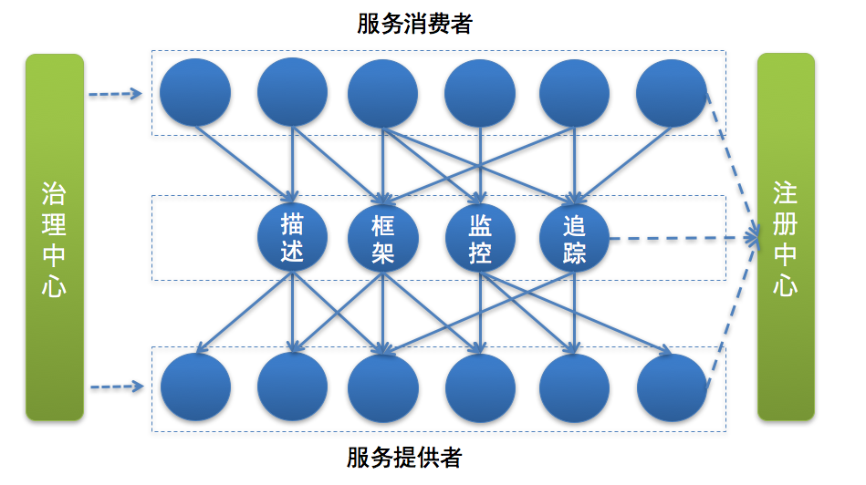
首先服务提供者（就是提供服务的一方）按照一定格式的服务描述，向注册中心注册服务，声明自己能够提供哪些服务以及服务的地址是什么，完成服务发布。
接下来服务消费者（就是调用服务的一方）请求注册中心，查询所需要调用服务的地址，然后以约定的通信协议向服务提供者发起请求，得到请求结果后再按照约定的协议解析结果。
而且在服务的调用过程中，服务的请求耗时、调用量以及成功率等指标都会被记录下来用作监控，调用经过的链路信息会被记录下来，用于故障定位和问题追踪。在这期间，如果调用失败，可以通过重试等服务治理手段来保证成功率。
总结一下，微服务架构下，服务调用主要依赖下面几个基本组件：
- 服务描述
- 注册中心
- 服务框架
- 服务监控
- 服务追踪
- 服务治理
接下来，我来为你一一介绍这些组件。
服务描述
服务调用首先要解决的问题就是服务如何对外描述。比如，你对外提供了一个服务，那么这个服务的服务名叫什么？调用这个服务需要提供哪些信息？调用这个服务返回的结果是什么格式的？该如何解析？这些就是服务描述要解决的问题。
常用的服务描述方式包括 RESTful API、XML 配置以及 IDL 文件三种。
其中，RESTful API 方式通常用于 HTTP 协议的服务描述，并且常用 Wiki 或者Swagger来进行管理。下面是一个 RESTful API 方式的服务描述的例子。

XML 配置方式多用作 RPC 协议的服务描述，通过 *.xml 配置文件来定义接口名、参数以及返回值类型等。下面是一个 XML 配置方式的服务描述的例子。
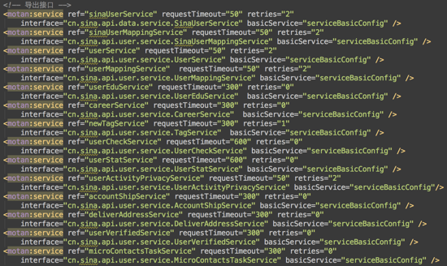
IDL 文件方式通常用作 Thrift 和 gRPC 这类跨语言服务调用框架中，比如 gRPC 就是通过 Protobuf 文件来定义服务的接口名、参数以及返回值的数据结构，示例如下：
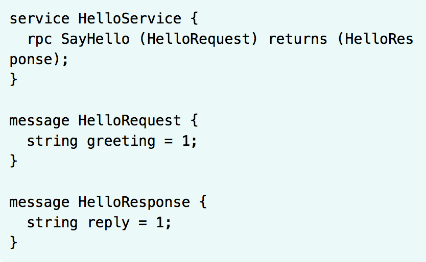
注册中心
有了服务的接口描述，下一步要解决的问题就是服务的发布和订阅，就是说你提供了一个服务，如何让外部想调用你的服务的人知道。这个时候就需要一个类似注册中心的角色，服务提供者将自己提供的服务以及地址登记到注册中心，服务消费者则从注册中心查询所需要调用的服务的地址，然后发起请求。
一般来讲，注册中心的工作流程是：
- 服务提供者在启动时，根据服务发布文件中配置的发布信息向注册中心注册自己的服务。
- 服务消费者在启动时，根据消费者配置文件中配置的服务信息向注册中心订阅自己所需要的服务。
- 注册中心返回服务提供者地址列表给服务消费者。
- 当服务提供者发生变化，比如有节点新增或者销毁，注册中心将变更通知给服务消费者。

服务框架
通过注册中心，服务消费者就可以获取到服务提供者的地址，有了地址后就可以发起调用。但在发起调用之前你还需要解决以下几个问题。
- 服务通信采用什么协议？就是说服务提供者和服务消费者之间以什么样的协议进行网络通信，是采用四层 TCP、UDP 协议，还是采用七层 HTTP 协议，还是采用其他协议？
- 数据传输采用什么方式？就是说服务提供者和服务消费者之间的数据传输采用哪种方式，是同步还是异步，是在单连接上传输，还是多路复用。
- 数据压缩采用什么格式？通常数据传输都会对数据进行压缩，来减少网络传输的数据量，从而减少带宽消耗和网络传输时间，比如常见的 JSON 序列化、Java 对象序列化以及 Protobuf 序列化等。
服务监控
一旦服务消费者与服务提供者之间能够正常发起服务调用，你就需要对调用情况进行监控，以了解服务是否正常。通常来讲，服务监控主要包括三个流程。
- 指标收集。就是要把每一次服务调用的请求耗时以及成功与否收集起来，并上传到集中的数据处理中心。
- 数据处理。有了每次调用的请求耗时以及成功与否等信息，就可以计算每秒服务请求量、平均耗时以及成功率等指标。
- 数据展示。数据收集起来，经过处理之后，还需要以友好的方式对外展示，才能发挥价值。通常都是将数据展示在 Dashboard 面板上，并且每隔 10s 等间隔自动刷新，用作业务监控和报警等。
服务追踪
除了需要对服务调用情况进行监控之外，你还需要记录服务调用经过的每一层链路，以便进行问题追踪和故障定位。
服务追踪的工作原理大致如下：
- 服务消费者发起调用前，会在本地按照一定的规则生成一个 requestid，发起调用时，将 requestid 当作请求参数的一部分，传递给服务提供者。
- 服务提供者接收到请求后，记录下这次请求的 requestid，然后处理请求。如果服务提供者继续请求其他服务，会在本地再生成一个自己的 requestid，然后把这两个 requestid 都当作请求参数继续往下传递。
以此类推，通过这种层层往下传递的方式，一次请求，无论最后依赖多少次服务调用、经过多少服务节点，都可以通过最开始生成的 requestid 串联所有节点，从而达到服务追踪的目的。
服务治理
服务监控能够发现问题，服务追踪能够定位问题所在，而解决问题就得靠服务治理了。服务治理就是通过一系列的手段来保证在各种意外情况下，服务调用仍然能够正常进行。
在生产环境中，你应该经常会遇到下面几种状况。
- 单机故障。通常遇到单机故障，都是靠运维发现并重启服务或者从线上摘除故障节点。然而集群的规模越大，越是容易遇到单机故障，在机器规模超过一百台以上时，靠传统的人肉运维显然难以应对。而服务治理可以通过一定的策略，自动摘除故障节点，不需要人为干预，就能保证单机故障不会影响业务。
- 单 IDC 故障。你应该经常听说某某 App，因为施工挖断光缆导致大批量用户无法使用的严重故障。而服务治理可以通过自动切换故障 IDC 的流量到其他正常 IDC，可以避免因为单 IDC 故障引起的大批量业务受影响。
- 依赖服务不可用。比如你的服务依赖依赖了另一个服务，当另一个服务出现问题时，会拖慢甚至拖垮你的服务。而服务治理可以通过熔断，在依赖服务异常的情况下，一段时期内停止发起调用而直接返回。这样一方面保证了服务消费者能够不被拖垮，另一方面也给服务提供者减少压力，使其能够尽快恢复。
上面是三种最常见的需要引入服务治理的场景，当然还有一些其他服务治理的手段比如自动扩缩容，可以用来解决服务的容量问题。
总结
通过前面的讲解，相信你已经对微服务架构有了基本的认识，对微服务架构的基本组件也有了初步了解。
这几个基本组件共同组成了微服务架构，在生产环境下缺一不可，所以在引入微服务架构之前，你的团队必须掌握这些基本组件的原理并具备相应的开发能力。实现方式上，可以引入开源方案；如果有充足的资深技术人员，也可以选择自行研发微服务架构的每个组件。但对于大部分中小团队来说，我认为采用开源实现方案是一个更明智的选择，一方面你可以节省相关技术人员的投入从而更专注于业务，另一方面也可以少走弯路少踩坑。不管你是采用开源方案还是自行研发，都必须吃透每个组件的工作原理并能在此基础上进行二次开发。
专栏后面的内容，我会带你对这几个微服务架构的基本组件进行详细剖析，让你能知其然也知其所以然。
思考题
最后你可以思考一下，微服务架构下的基本组件所解决的问题，对应到单体应用时是否存在？如果存在，解决方案是否相同？
欢迎你在留言区写下自己的思考，与我一起讨论。 %
04 如何发布和引用服务？
从这期开始，我将陆续给你讲解微服务各个基本组件的原理和实现方式。
今天我要与你分享的第一个组件是服务发布和引用。我在前面说过，想要构建微服务，首先要解决的问题是，服务提供者如何发布一个服务，服务消费者如何引用这个服务。具体来说，就是这个服务的接口名是什么？调用这个服务需要传递哪些参数？接口的返回值是什么类型？以及一些其他接口描述信息。
我前面说过，最常见的服务发布和引用的方式有三种：
- RESTful API
- XML 配置
- IDL 文件
下面我就结合具体的实例，逐个讲解每一种方式的具体使用方法以及各自的应用场景，以便你在选型时作参考。
RESTful API
首先来说说 RESTful API 的方式，主要被用作 HTTP 或者 HTTPS 协议的接口定义，即使在非微服务架构体系下，也被广泛采用。
下面是开源服务化框架Motan发布 RESTful API 的例子，它发布了三个 RESTful 格式的 API，接口声明如下：
@Path("/rest")
public interface RestfulService {
@GET
@Produces(MediaType.APPLICATION_JSON)
List<User> getUsers(@QueryParam("uid") int uid);
@GET
@Path("/primitive")
@Produces(MediaType.TEXT_PLAIN)
String testPrimitiveType();
@POST
@Consumes(MediaType.APPLICATION_FORM_URLENCODED)
@Produces(MediaType.APPLICATION_JSON)
Response add(@FormParam("id") int id, @FormParam("name") String name);
具体的服务实现如下：
public class RestfulServerDemo implements RestfulService {
@Override
public List<User> getUsers(@CookieParam("uid") int uid) {
return Arrays.asList(new User(uid, "name" + uid));
}
@Override
public String testPrimitiveType() {
return "helloworld!";
}
@Override
public Response add(@FormParam("id") int id, @FormParam("name") String name) {
return Response.ok().cookie(new NewCookie("ck", String.valueOf(id))).entity(new User(id, name)).build();
}
服务提供者这一端通过部署代码到 Tomcat 中，并配置 Tomcat 中如下的 web.xml，就可以通过 servlet 的方式对外提供 RESTful API。
<listener>
<listener-class>com.weibo.api.motan.protocol.restful.support.servlet.RestfulServletContainerListener</listener-class>
</listener>
<servlet>
<servlet-name>dispatcher</servlet-name>
<servlet-class>org.jboss.resteasy.plugins.server.servlet.HttpServletDispatcher</servlet-class>
<load-on-startup>1</load-on-startup>
<init-param>
<param-name>resteasy.servlet.mapping.prefix</param-name>
<param-value>/servlet</param-value> <!-- 此处实际为 servlet-mapping 的 url-pattern，具体配置见 resteasy 文档 -->
</init-param>
</servlet>
<servlet-mapping>
<servlet-name>dispatcher</servlet-name>
<url-pattern>/servlet/*</url-pattern>
</servlet-mapping>
这样服务消费者就可以通过 HTTP 协议调用服务了，因为 HTTP 协议本身是一个公开的协议，对于服务消费者来说几乎没有学习成本，所以比较适合用作跨业务平台之间的服务协议。比如你有一个服务，不仅需要在业务部门内部提供服务，还需要向其他业务部门提供服务，甚至开放给外网提供服务，这时候采用 HTTP 协议就比较合适，也省去了沟通服务协议的成本。
XML 配置
接下来再来给你讲下 XML 配置方式，这种方式的服务发布和引用主要分三个步骤：
- 服务提供者定义接口，并实现接口。
- 服务提供者进程启动时，通过加载 server.xml 配置文件将接口暴露出去。
- 服务消费者进程启动时，通过加载 client.xml 配置文件来引入要调用的接口。
我继续以服务化框架 Motan 为例，它还支持以 XML 配置的方式来发布和引用服务。
首先，服务提供者定义接口。
public interface FooService {
public String hello(String name);
}
然后服务提供者实现接口。
public class FooServiceImpl implements FooService {
public String hello(String name) {
System.out.println(name + " invoked rpc service");
return "hello " + name;
}
}
最后服务提供者进程启动时，加载 server.xml 配置文件，开启 8002 端口监听。
server.xml 配置如下：
<?xml version="1.0" encoding="UTF-8"?>
<beans xmlns="http://www.springframework.org/schema/beans"
xmlns:xsi="http://www.w3.org/2001/XMLSchema-instance"
xmlns:motan="http://api.weibo.com/schema/motan"
xsi:schemaLocation="http://www.springframework.org/schema/beans http://www.springframework.org/schema/beans/spring-beans-2.5.xsd
http://api.weibo.com/schema/motan http://api.weibo.com/schema/motan.xsd">
<!-- service implemention bean -->
<bean id="serviceImpl" class="quickstart.FooServiceImpl" />
<!-- exporting service by Motan -->
<motan:service interface="quickstart.FooService" ref="serviceImpl" export="8002" />
</beans>
服务提供者加载 server.xml 的代码如下：
import org.springframework.context.ApplicationContext;
import org.springframework.context.support.ClassPathXmlApplicationContext;
public class Server {
public static void main(String[] args) throws InterruptedException {
ApplicationContext applicationContext = new ClassPathXmlApplicationContext("classpath:motan_server.xml");
System.out.println("server start...");
}
}
服务消费者要想调用服务，就必须在进程启动时，加载配置 client.xml，引用接口定义，然后发起调用。
client.xml 配置如下：
<?xml version="1.0" encoding="UTF-8"?>
<beans xmlns="http://www.springframework.org/schema/beans"
xmlns:xsi="http://www.w3.org/2001/XMLSchema-instance"
xmlns:motan="http://api.weibo.com/schema/motan"
xsi:schemaLocation="http://www.springframework.org/schema/beans http://www.springframework.org/schema/beans/spring-beans-2.5.xsd
http://api.weibo.com/schema/motan http://api.weibo.com/schema/motan.xsd">
<!-- reference to the remote service -->
<motan:referer id="remoteService" interface="quickstart.FooService" directUrl="localhost:8002"/>
</beans>
服务消费者启动时，加载 client.xml 的代码如下。
import org.springframework.context.ApplicationContext;
import org.springframework.context.support.ClassPathXmlApplicationContext;
public class Client {
public static void main(String[] args) throws InterruptedException {
ApplicationContext ctx = new ClassPathXmlApplicationContext("classpath:motan_client.xml");
FooService service = (FooService) ctx.getBean("remoteService");
System.out.println(service.hello("motan"));
}
}
就这样，通过在服务提供者和服务消费者之间维持一份对等的 XML 配置文件，来保证服务消费者按照服务提供者的约定来进行服务调用。在这种方式下，如果服务提供者变更了接口定义，不仅需要更新服务提供者加载的接口描述文件 server.xml，还需要同时更新服务消费者加载的接口描述文件 client.xml。
一般是私有 RPC 框架会选择 XML 配置这种方式来描述接口，因为私有 RPC 协议的性能要比 HTTP 协议高，所以在对性能要求比较高的场景下，采用 XML 配置的方式比较合适。但这种方式对业务代码侵入性比较高，XML 配置有变更的时候，服务消费者和服务提供者都要更新，所以适合公司内部联系比较紧密的业务之间采用。如果要应用到跨部门之间的业务调用，一旦有 XML 配置变更，需要花费大量精力去协调不同部门做升级工作。在我经历的实际项目里，就遇到过一次底层服务的接口升级，需要所有相关的调用方都升级，为此花费了大量时间去协调沟通不同部门之间的升级工作，最后经历了大半年才最终完成。所以对于 XML 配置方式的服务描述，一旦应用到多个部门之间的接口格式约定，如果有变更，最好是新增接口，不到万不得已不要对原有的接口格式做变更。
IDL 文件
IDL 就是接口描述语言（interface description language）的缩写，通过一种中立的方式来描述接口，使得在不同的平台上运行的对象和不同语言编写的程序可以相互通信交流。比如你用 Java 语言实现提供的一个服务，也能被 PHP 语言调用。
也就是说 IDL 主要是用作跨语言平台的服务之间的调用，有两种最常用的 IDL：一个是 Facebook 开源的Thrift 协议，另一个是 Google 开源的gRPC 协议。无论是 Thrift 协议还是 gRPC 协议，它们的工作原理都是类似的。
接下来，我以 gRPC 协议为例，给你讲讲如何使用 IDL 文件方式来描述接口。
gRPC 协议使用 Protobuf 简称 proto 文件来定义接口名、调用参数以及返回值类型。
比如文件 helloword.proto 定义了一个接口 SayHello 方法，它的请求参数是 HelloRequest，它的返回值是 HelloReply。
// The greeter service definition.
service Greeter {
// Sends a greeting
rpc SayHello (HelloRequest) returns (HelloReply) {}
rpc SayHelloAgain (HelloRequest) returns (HelloReply) {}
}
// The request message containing the user's name.
message HelloRequest {
string name = 1;
}
// The response message containing the greetings
message HelloReply {
string message = 1;
}
假如服务提供者使用的是 Java 语言，那么利用 protoc 插件即可自动生成 Server 端的 Java 代码。
private class GreeterImpl extends GreeterGrpc.GreeterImplBase {
@Override
public void sayHello(HelloRequest req, StreamObserver<HelloReply> responseObserver) {
HelloReply reply = HelloReply.newBuilder().setMessage("Hello " + req.getName()).build();
responseObserver.onNext(reply);
responseObserver.onCompleted();
}
@Override
public void sayHelloAgain(HelloRequest req, StreamObserver<HelloReply> responseObserver) {
HelloReply reply = HelloReply.newBuilder().setMessage("Hello again " + req.getName()).build();
responseObserver.onNext(reply);
responseObserver.onCompleted();
}
}
假如服务消费者使用的也是 Java 语言，那么利用 protoc 插件即可自动生成 Client 端的 Java 代码。
public void greet(String name) {
logger.info("Will try to greet " + name + " ...");
HelloRequest request = HelloRequest.newBuilder().setName(name).build();
HelloReply response;
try {
response = blockingStub.sayHello(request);
} catch (StatusRuntimeException e) {
logger.log(Level.WARNING, "RPC failed: {0}", e.getStatus());
return;
}
logger.info("Greeting: " + response.getMessage());
try {
response = blockingStub.sayHelloAgain(request);
} catch (StatusRuntimeException e) {
logger.log(Level.WARNING, "RPC failed: {0}", e.getStatus());
return;
}
logger.info("Greeting: " + response.getMessage());
}
假如服务消费者使用的是 PHP 语言，那么利用 protoc 插件即可自动生成 Client 端的 PHP 代码。
$request = new Helloworld\HelloRequest();
$request->setName($name);
list($reply, $status) = $client->SayHello($request)->wait();
$message = $reply->getMessage();
list($reply, $status) = $client->SayHelloAgain($request)->wait();
$message = $reply->getMessage();
由此可见，gRPC 协议的服务描述是通过 proto 文件来定义接口的，然后再使用 protoc 来生成不同语言平台的客户端和服务端代码，从而具备跨语言服务调用能力。
有一点特别需要注意的是，在描述接口定义时，IDL 文件需要对接口返回值进行详细定义。如果接口返回值的字段比较多，并且经常变化时，采用 IDL 文件方式的接口定义就不太合适了。一方面可能会造成 IDL 文件过大难以维护，另一方面只要 IDL 文件中定义的接口返回值有变更，都需要同步所有的服务消费者都更新，管理成本就太高了。
我在项目实践过程中，曾经考虑过采用 Protobuf 文件来描述微博内容接口，但微博内容返回的字段有几百个，并且有些字段不固定，返回什么字段是业务方自定义的，这种情况采用 Protobuf 文件来描述的话会十分麻烦，所以最终不得不放弃这种方式。
总结
今天我给你介绍了服务描述最常见的三种方式：RESTful API、XML 配置以及 IDL 文件。
具体采用哪种服务描述方式是根据实际情况决定的，通常情况下，如果只是企业内部之间的服务调用，并且都是 Java 语言的话，选择 XML 配置方式是最简单的。如果企业内部存在多个服务，并且服务采用的是不同语言平台，建议使用 IDL 文件方式进行描述服务。如果还存在对外开放服务调用的情形的话，使用 RESTful API 方式则更加通用。

思考题
针对你的业务场景思考一下，假如要进行服务化，你觉得使用哪种服务描述最合适？为什么？
欢迎你在留言区写下自己的思考，与我一起讨论。 %
05 如何注册和发现服务？
专栏上一期，我给你介绍了服务发布和引用常用的三种方式：RESTful API、XML 配置以及 IDL 文件。假设你已经使用其中一种方式发布了一个服务，并且已经在一台机器上部署了服务，那我想问你个问题，如果我想调用这个服务，我该如何知道你部署的这台机器的地址呢？
这个问题就跟我想去吃肯德基一样，我可以去谷歌地图上搜索肯德基，然后谷歌地图会返回所有的肯德基店面的地址，于是我选择距离最近的一家去吃。这里面谷歌地图就扮演了一个类似注册中心的角色，收录了所有肯德基店面的地址。
同理，我想知道这台服务器的地址，那是不是可以去一个类似“谷歌地图”的地方去查呢？是的，在分布式系统里，就有一个类似的概念，不过它的名字可不是叫什么地图，而是叫注册中心。但原理和地图其实差不多，就是将部署服务的机器地址记录到注册中心，服务消费者在有需求的时候，只需要查询注册中心，输入提供的服务名，就可以得到地址，从而发起调用。
下面我来给你详细讲解下注册中心的原理和实现方式。
注册中心原理
在微服务架构下，主要有三种角色：服务提供者（RPC Server）、服务消费者（RPC Client）和服务注册中心（Registry），三者的交互关系请看下面这张图，我来简单解释一下。
- RPC Server 提供服务，在启动时，根据服务发布文件 server.xml 中的配置的信息，向 Registry 注册自身服务，并向 Registry 定期发送心跳汇报存活状态。
- RPC Client 调用服务，在启动时，根据服务引用文件 client.xml 中配置的信息，向 Registry 订阅服务，把 Registry 返回的服务节点列表缓存在本地内存中，并与 RPC Sever 建立连接。
- 当 RPC Server 节点发生变更时，Registry 会同步变更，RPC Client 感知后会刷新本地内存中缓存的服务节点列表。
- RPC Client 从本地缓存的服务节点列表中，基于负载均衡算法选择一台 RPC Sever 发起调用。

注册中心实现方式
注册中心的实现主要涉及几个问题：注册中心需要提供哪些接口，该如何部署；如何存储服务信息；如何监控服务提供者节点的存活；如果服务提供者节点有变化如何通知服务消费者，以及如何控制注册中心的访问权限。下面我来一一给你讲解。
1. 注册中心 API
根据注册中心原理的描述，注册中心必须提供以下最基本的 API，例如：
- 服务注册接口：服务提供者通过调用服务注册接口来完成服务注册。
- 服务反注册接口：服务提供者通过调用服务反注册接口来完成服务注销。
- 心跳汇报接口：服务提供者通过调用心跳汇报接口完成节点存活状态上报。
- 服务订阅接口：服务消费者通过调用服务订阅接口完成服务订阅，获取可用的服务提供者节点列表。
- 服务变更查询接口：服务消费者通过调用服务变更查询接口，获取最新的可用服务节点列表。
除此之外，为了便于管理，注册中心还必须提供一些后台管理的 API，例如：
- 服务查询接口：查询注册中心当前注册了哪些服务信息。
- 服务修改接口：修改注册中心中某一服务的信息。
2. 集群部署
注册中心作为服务提供者和服务消费者之间沟通的桥梁，它的重要性不言而喻。所以注册中心一般都是采用集群部署来保证高可用性，并通过分布式一致性协议来确保集群中不同节点之间的数据保持一致。
以开源注册中心 ZooKeeper 为例，ZooKeeper 集群中包含多个节点，服务提供者和服务消费者可以同任意一个节点通信，因为它们的数据一定是相同的，这是为什么呢？这就要从 ZooKeeper 的工作原理说起：
- 每个 Server 在内存中存储了一份数据，Client 的读请求可以请求任意一个 Server。
- ZooKeeper 启动时，将从实例中选举一个 leader（Paxos 协议）。
- Leader 负责处理数据更新等操作（ZAB 协议）。
- 一个更新操作成功，当且仅当大多数 Server 在内存中成功修改 。
通过上面这种方式，ZooKeeper 保证了高可用性以及数据一致性。
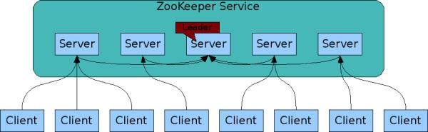
3. 目录存储
还是以 ZooKeeper 为例，注册中心存储服务信息一般采用层次化的目录结构：
- 每个目录在 ZooKeeper 中叫作 znode，并且其有一个唯一的路径标识。
- znode 可以包含数据和子 znode。
- znode 中的数据可以有多个版本，比如某一个 znode 下存有多个数据版本，那么查询这个路径下的数据需带上版本信息。
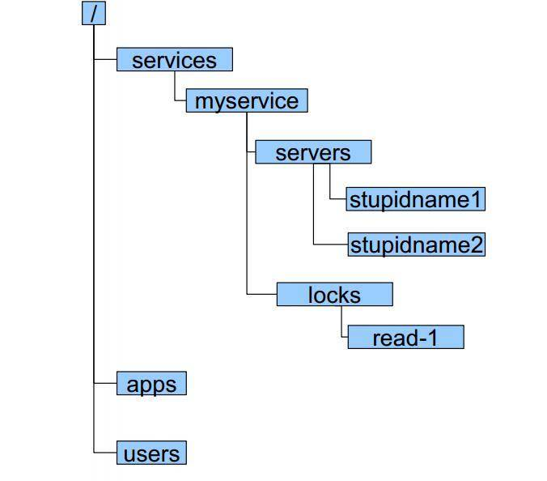
4. 服务健康状态检测
注册中心除了要支持最基本的服务注册和服务订阅功能以外，还必须具备对服务提供者节点的健康状态检测功能，这样才能保证注册中心里保存的服务节点都是可用的。
还是以 ZooKeeper 为例，它是基于 ZooKeeper 客户端和服务端的长连接和会话超时控制机制，来实现服务健康状态检测的。
在 ZooKeeper 中，客户端和服务端建立连接后，会话也随之建立，并生成一个全局唯一的 Session ID。服务端和客户端维持的是一个长连接，在 SESSION_TIMEOUT 周期内，服务端会检测与客户端的链路是否正常，具体方式是通过客户端定时向服务端发送心跳消息（ping 消息），服务器重置下次 SESSION_TIMEOUT 时间。如果超过 SESSION_TIMEOUT 后服务端都没有收到客户端的心跳消息，则服务端认为这个 Session 就已经结束了，ZooKeeper 就会认为这个服务节点已经不可用，将会从注册中心中删除其信息。
5. 服务状态变更通知
一旦注册中心探测到有服务提供者节点新加入或者被剔除，就必须立刻通知所有订阅该服务的服务消费者，刷新本地缓存的服务节点信息，确保服务调用不会请求不可用的服务提供者节点。
继续以 ZooKeeper 为例，基于 ZooKeeper 的 Watcher 机制，来实现服务状态变更通知给服务消费者的。服务消费者在调用 ZooKeeper 的 getData 方法订阅服务时，还可以通过监听器 Watcher 的 process 方法获取服务的变更，然后调用 getData 方法来获取变更后的数据，刷新本地缓存的服务节点信息。
6. 白名单机制
在实际的微服务测试和部署时，通常包含多套环境，比如生产环境一套、测试环境一套。开发在进行业务自测、测试在进行回归测试时，一般都是用测试环境，部署的 RPC Server 节点注册到测试的注册中心集群。但经常会出现开发或者测试在部署时，错误的把测试环境下的服务节点注册到了线上注册中心集群，这样的话线上流量就会调用到测试环境下的 RPC Server 节点，可能会造成意想不到的后果。
为了防止这种情况发生，注册中心需要提供一个保护机制，你可以把注册中心想象成一个带有门禁的房间，只有拥有门禁卡的 RPC Server 才能进入。在实际应用中，注册中心可以提供一个白名单机制，只有添加到注册中心白名单内的 RPC Server，才能够调用注册中心的注册接口，这样的话可以避免测试环境中的节点意外跑到线上环境中去。
总结
注册中心可以说是实现服务化的关键，因为服务化之后，服务提供者和服务消费者不在同一个进程中运行，实现了解耦，这就需要一个纽带去连接服务提供者和服务消费者，而注册中心就正好承担了这一角色。此外，服务提供者可以任意伸缩即增加节点或者减少节点，通过服务健康状态检测，注册中心可以保持最新的服务节点信息，并将变化通知给订阅服务的服务消费者。
注册中心一般采用分布式集群部署，来保证高可用性，并且为了实现异地多活，有的注册中心还采用多 IDC 部署，这就对数据一致性产生了很高的要求，这些都是注册中心在实现时必须要解决的问题。
思考题
最后请你思考一下，你觉得采用注册中心来实现服务发现与传统的 DNS 实现服务发现有什么不同吗？
欢迎你在留言区写下自己的思考，与我一起讨论。 +
06 如何实现RPC远程服务调用？
专栏上一期我讲过，要完成一次服务调用，首先要解决的问题是服务消费者如何得到服务提供者的地址，其中注册中心扮演了关键角色，服务提供者把自己的地址登记到注册中心，服务消费者就可以查询注册中心得到服务提供者的地址，可以说注册中心犹如海上的一座灯塔，为服务消费者指引了前行的方向。
有了服务提供者的地址后，服务消费者就可以向这个地址发起请求了，但这时候也产生了一个新的问题。你知道，在单体应用时，一次服务调用发生在同一台机器上的同一个进程内部，也就是说调用发生在本机内部，因此也被叫作本地方法调用。在进行服务化拆分之后，服务提供者和服务消费者运行在两台不同物理机上的不同进程内，它们之间的调用相比于本地方法调用，可称之为远程方法调用，简称 RPC（Remote Procedure Call），那么RPC 调用是如何实现的呢？
在介绍 RPC 调用的原理之前，先来想象一下一次电话通话的过程。首先，呼叫者 A 通过查询号码簿找到被呼叫者 B 的电话号码，然后拨打 B 的电话。B 接到来电提示时，如果方便接听的话就会接听；如果不方便接听的话，A 就得一直等待。当等待超过一段时间后，电话会因超时被挂断，这个时候 A 需要再次拨打电话，一直等到 B 空闲的时候，才能接听。
RPC 调用的原理与此类似，我习惯把服务消费者叫作客户端，服务提供者叫作服务端，两者通常位于网络上两个不同的地址，要完成一次 RPC 调用，就必须先建立网络连接。建立连接后，双方还必须按照某种约定的协议进行网络通信，这个协议就是通信协议。双方能够正常通信后，服务端接收到请求时，需要以某种方式进行处理，处理成功后，把请求结果返回给客户端。为了减少传输的数据大小，还要对数据进行压缩，也就是对数据进行序列化。
上面就是 RPC 调用的过程，由此可见，想要完成调用，你需要解决四个问题：
- 客户端和服务端如何建立网络连接？
- 服务端如何处理请求？
- 数据传输采用什么协议？
- 数据该如何序列化和反序列化？
客户端和服务端如何建立网络连接？
根据我的实践经验，客户端和服务端之间基于 TCP 协议建立网络连接最常用的途径有两种。
1. HTTP 通信
HTTP 通信是基于应用层 HTTP 协议的，而 HTTP 协议又是基于传输层 TCP 协议的。一次 HTTP 通信过程就是发起一次 HTTP 调用，而一次 HTTP 调用就会建立一个 TCP 连接，经历一次下图所示的“三次握手”的过程来建立连接。
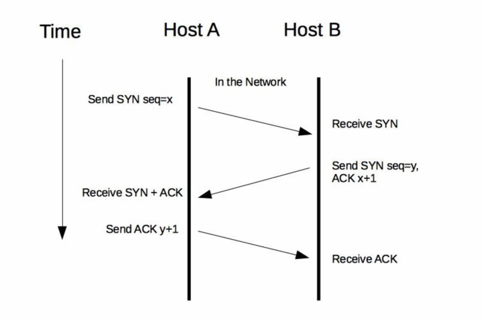
完成请求后，再经历一次“四次挥手”的过程来断开连接。
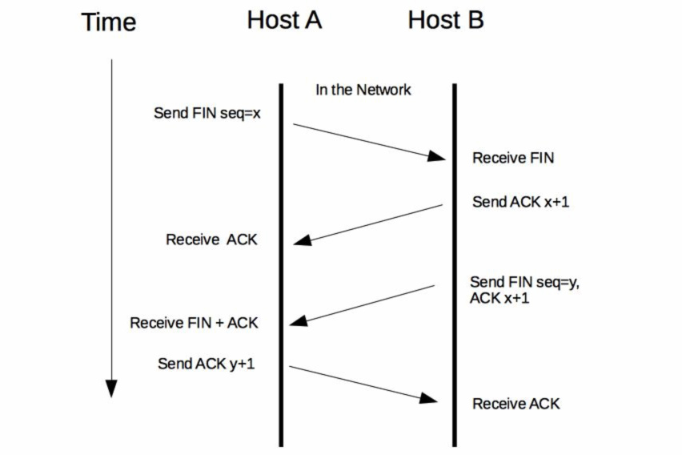
2. Socket 通信
Socket 通信是基于 TCP/IP 协议的封装，建立一次 Socket 连接至少需要一对套接字，其中一个运行于客户端，称为 ClientSocket ；另一个运行于服务器端，称为 ServerSocket 。就像下图所描述的，Socket 通信的过程分为四个步骤：服务器监听、客户端请求、连接确认、数据传输。
- 服务器监听：ServerSocket 通过调用 bind() 函数绑定某个具体端口，然后调用 listen() 函数实时监控网络状态，等待客户端的连接请求。
- 客户端请求：ClientSocket 调用 connect() 函数向 ServerSocket 绑定的地址和端口发起连接请求。
- 服务端连接确认：当 ServerSocket 监听到或者接收到 ClientSocket 的连接请求时，调用 accept() 函数响应 ClientSocket 的请求，同客户端建立连接。
- 数据传输：当 ClientSocket 和 ServerSocket 建立连接后，ClientSocket 调用 send() 函数，ServerSocket 调用 receive() 函数，ServerSocket 处理完请求后，调用 send() 函数，ClientSocket 调用 receive() 函数，就可以得到得到返回结果。
直接理解可能有点抽象，你可以把这个过程套入前面我举的“打电话”的例子，可以方便你理解 Socket 通信过程。
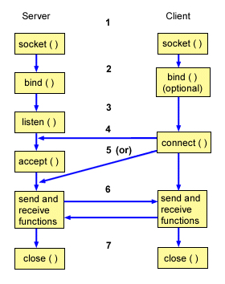
当客户端和服务端建立网络连接后，就可以发起请求了。但网络不一定总是可靠的，经常会遇到网络闪断、连接超时、服务端宕机等各种异常，通常的处理手段有两种。
- 链路存活检测：客户端需要定时地发送心跳检测消息（一般是通过 ping 请求）给服务端，如果服务端连续 n 次心跳检测或者超过规定的时间都没有回复消息，则认为此时链路已经失效，这个时候客户端就需要重新与服务端建立连接。
- 断连重试：通常有多种情况会导致连接断开，比如客户端主动关闭、服务端宕机或者网络故障等。这个时候客户端就需要与服务端重新建立连接，但一般不能立刻完成重连，而是要等待固定的间隔后再发起重连，避免服务端的连接回收不及时，而客户端瞬间重连的请求太多而把服务端的连接数占满。
服务端如何处理请求？
假设这时候客户端和服务端已经建立了网络连接，服务端又该如何处理客户端的请求呢？通常来讲，有三种处理方式。
- 同步阻塞方式（BIO），客户端每发一次请求，服务端就生成一个线程去处理。当客户端同时发起的请求很多时，服务端需要创建很多的线程去处理每一个请求，如果达到了系统最大的线程数瓶颈，新来的请求就没法处理了。
- 同步非阻塞方式 (NIO)，客户端每发一次请求，服务端并不是每次都创建一个新线程来处理，而是通过 I/O 多路复用技术进行处理。就是把多个 I/O 的阻塞复用到同一个 select 的阻塞上，从而使系统在单线程的情况下可以同时处理多个客户端请求。这种方式的优势是开销小，不用为每个请求创建一个线程，可以节省系统开销。
- 异步非阻塞方式（AIO），客户端只需要发起一个 I/O 操作然后立即返回，等 I/O 操作真正完成以后，客户端会得到 I/O 操作完成的通知，此时客户端只需要对数据进行处理就好了，不需要进行实际的 I/O 读写操作，因为真正的 I/O 读取或者写入操作已经由内核完成了。这种方式的优势是客户端无需等待，不存在阻塞等待问题。
从前面的描述，可以看出来不同的处理方式适用于不同的业务场景，根据我的经验：
- BIO 适用于连接数比较小的业务场景，这样的话不至于系统中没有可用线程去处理请求。这种方式写的程序也比较简单直观，易于理解。
- NIO 适用于连接数比较多并且请求消耗比较轻的业务场景，比如聊天服务器。这种方式相比 BIO，相对来说编程比较复杂。
- AIO 适用于连接数比较多而且请求消耗比较重的业务场景，比如涉及 I/O 操作的相册服务器。这种方式相比另外两种，编程难度最大，程序也不易于理解。
上面两个问题就是“通信框架”要解决的问题，你可以基于现有的 Socket 通信，在服务消费者和服务提供者之间建立网络连接，然后在服务提供者一侧基于 BIO、NIO 和 AIO 三种方式中的任意一种实现服务端请求处理，最后再花费一些精力去解决服务消费者和服务提供者之间的网络可靠性问题。这种方式对于 Socket 网络编程、多线程编程知识都要求比较高，感兴趣的话可以尝试自己实现一个通信框架。但我建议最为稳妥的方式是使用成熟的开源方案，比如 Netty、MINA 等，它们都是经过业界大规模应用后，被充分论证是很可靠的方案。
假设客户端和服务端的连接已经建立了，服务端也能正确地处理请求了，接下来完成一次正常地 RPC 调用还需要解决两个问题，即数据传输采用什么协议以及数据该如何序列化和反序列化。
数据传输采用什么协议？
首先来看第一个问题，数据传输采用什么协议？
最常用的有 HTTP 协议，它是一种开放的协议，各大网站的服务器和浏览器之间的数据传输大都采用了这种协议。还有一些定制的私有协议，比如阿里巴巴开源的 Dubbo 协议，也可以用于服务端和客户端之间的数据传输。无论是开放的还是私有的协议，都必须定义一个“契约”，以便服务消费和服务提供者之间能够达成共识。服务消费者按照契约，对传输的数据进行编码，然后通过网络传输过去；服务提供者从网络上接收到数据后，按照契约，对传输的数据进行解码，然后处理请求，再把处理后的结果进行编码，通过网络传输返回给服务消费者；服务消费者再对返回的结果进行解码，最终得到服务提供者处理后的返回值。
通常协议契约包括两个部分：消息头和消息体。其中消息头存放的是协议的公共字段以及用户扩展字段，消息体存放的是传输数据的具体内容。
以 HTTP 协议为例，下图展示了一段采用 HTTP 协议传输的数据响应报文，主要分为消息头和消息体两部分，其中消息头中存放的是协议的公共字段，比如 Server 代表是服务端服务器类型、Content-Length 代表返回数据的长度、Content-Type 代表返回数据的类型；消息体中存放的是具体的返回结果，这里就是一段 HTML 网页代码。
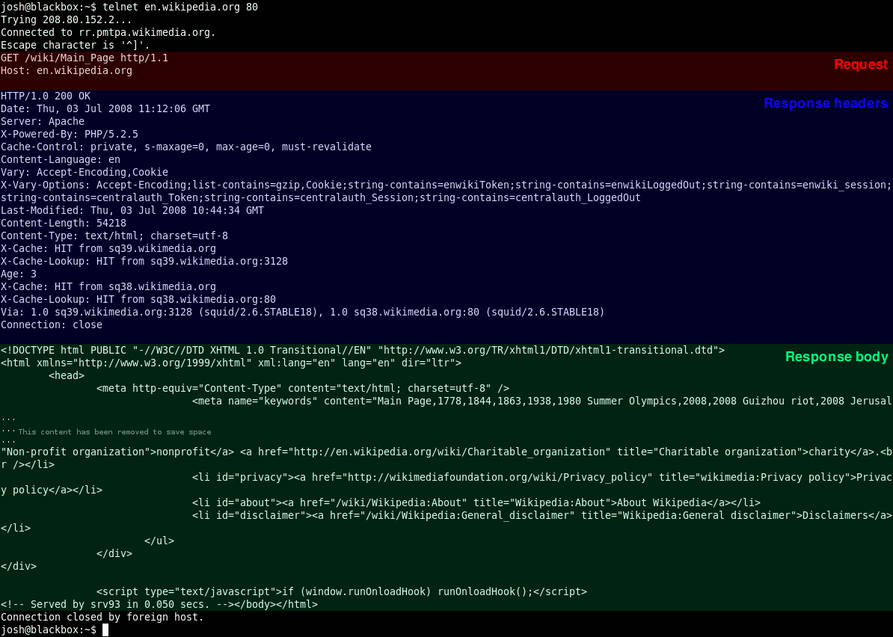
数据该如何序列化和反序列化？
再看第二个问题，数据该如何序列化和反序列化。
一般数据在网络中进行传输前，都要先在发送方一端对数据进行编码，经过网络传输到达另一端后，再对数据进行解码，这个过程就是序列化和反序列化。
为什么要对数据进行序列化和反序列化呢？要知道网络传输的耗时一方面取决于网络带宽的大小，另一方面取决于数据传输量。要想加快网络传输，要么提高带宽，要么减小数据传输量，而对数据进行编码的主要目的就是减小数据传输量。比如一部高清电影原始大小为 30GB，如果经过特殊编码格式处理，可以减小到 3GB，同样是 100MB/s 的网速，下载时间可以从 300s 减小到 30s。
常用的序列化方式分为两类：文本类如 XML/JSON 等，二进制类如 PB/Thrift 等，而具体采用哪种序列化方式，主要取决于三个方面的因素。
- 支持数据结构类型的丰富度。数据结构种类支持的越多越好，这样的话对于使用者来说在编程时更加友好，有些序列化框架如 Hessian 2.0 还支持复杂的数据结构比如 Map、List 等。
- 跨语言支持。序列化方式是否支持跨语言也是一个很重要的因素，否则使用的场景就比较局限，比如 Java 序列化只支持 Java 语言，就不能用于跨语言的服务调用了。
- 性能。主要看两点，一个是序列化后的压缩比，一个是序列化的速度。以常用的 PB 序列化和 JSON 序列化协议为例来对比分析，PB 序列化的压缩比和速度都要比 JSON 序列化高很多，所以对性能和存储空间要求比较高的系统选用 PB 序列化更合适；而 JSON 序列化虽然性能要差一些，但可读性更好，更适合对外部提供服务。
总结
今天我给你讲解了服务调用需要解决的几个问题，其中你需要掌握：
- 通信框架。它主要解决客户端和服务端如何建立连接、管理连接以及服务端如何处理请求的问题。
- 通信协议。它主要解决客户端和服务端采用哪种数据传输协议的问题。
- 序列化和反序列化。它主要解决客户端和服务端采用哪种数据编解码的问题。
这三个部分就组成了一个完整的 RPC 调用框架，通信框架提供了基础的通信能力，通信协议描述了通信契约，而序列化和反序列化则用于数据的编 / 解码。一个通信框架可以适配多种通信协议，也可以采用多种序列化和反序列化的格式，比如服务化框架 Dubbo 不仅支持 Dubbo 协议，还支持 RMI 协议、HTTP 协议等，而且还支持多种序列化和反序列化格式，比如 JSON、Hession 2.0 以及 Java 序列化等。
思考题
gRPC 是一个优秀的跨语言 RPC 调用框架，按照今天我给你讲的服务调用知识，通过阅读官方文档，你能给出 gRPC 调用的实现原理吗？
欢迎你在留言区写下自己的思考，与我一起讨论。 %
07 如何监控微服务调用？
与单体应用相比，在微服务架构下，一次用户调用会因为服务化拆分后，变成多个不同服务之间的相互调用，这也就需要对拆分后的每个服务都监控起来。
在讲述如何监控微服务调用前，首先你要搞清楚三个问题：监控的对象是什么？具体监控哪些指标？从哪些维度进行监控？下面就从这三个问题开始，一起来看看如何监控微服务调用。
监控对象
既然要监控，那么要监控哪些对象呢？根据我的实践经验，对于微服务系统来说，监控对象可以分为四个层次，由上到下可归纳为：
- 用户端监控。通常是指业务直接对用户提供的功能的监控。以微博首页 Feed 为例，它向用户提供了聚合关注的所有人的微博并按照时间顺序浏览的功能，对首页 Feed 功能的监控就属于用户端的监控。
- 接口监控。通常是指业务提供的功能所依赖的具体 RPC 接口的监控。继续以微博首页 Feed 为例，这个功能依赖于用户关注了哪些人的关系服务，每个人发过哪些微博的微博列表服务，以及每条微博具体内容是什么的内容服务，对这几个服务的调用情况的监控就属于接口监控。
- 资源监控。通常是指某个接口依赖的资源的监控。比如用户关注了哪些人的关系服务使用的是 Redis 来存储关注列表，对 Redis 的监控就属于资源监控。
- 基础监控。通常是指对服务器本身的健康状况的监控。主要包括 CPU 利用率、内存使用量、I/O 读写量、网卡带宽等。对服务器的基本监控也是必不可少的，因为服务器本身的健康状况也是影响服务本身的一个重要因素，比如服务器本身连接的网络交换机上联带宽被打满，会影响所有部署在这台服务器上的业务。
监控指标
搞清楚要监控的对象之后，需要监控具体哪些指标呢？根据我的实践经验，通常有以下几个业务指标需要重点监控：
- 请求量。请求量监控分为两个维度，一个是实时请求量，一个是统计请求量。实时请求量用 QPS（Queries Per Second）即每秒查询次数来衡量，它反映了服务调用的实时变化情况。统计请求量一般用 PV（Page View）即一段时间内用户的访问量来衡量，比如一天的 PV 代表了服务一天的请求量，通常用来统计报表。
- 响应时间。大多数情况下，可以用一段时间内所有调用的平均耗时来反映请求的响应时间。但它只代表了请求的平均快慢情况，有时候我们更关心慢请求的数量。为此需要把响应时间划分为多个区间，比如 0～10ms、10ms～50ms、50ms～100ms、100ms～500ms、500ms 以上这五个区间，其中 500ms 以上这个区间内的请求数就代表了慢请求量，正常情况下，这个区间内的请求数应该接近于 0；在出现问题时，这个区间内的请求数会大幅增加，可能平均耗时并不能反映出这一变化。除此之外，还可以从 P90、P95、P99、P999 角度来监控请求的响应时间，比如 P99 = 500ms，意思是 99% 的请求响应时间在 500ms 以内，它代表了请求的服务质量，即 SLA。
- 错误率。错误率的监控通常用一段时间内调用失败的次数占调用总次数的比率来衡量，比如对于接口的错误率一般用接口返回错误码为 503 的比率来表示。
监控维度
一般来说，要从多个维度来对业务进行监控，具体来讲可以包括下面几个维度：
- 全局维度。从整体角度监控对象的的请求量、平均耗时以及错误率，全局维度的监控一般是为了让你对监控对象的调用情况有个整体了解。
- 分机房维度。一般为了业务的高可用性，服务通常部署在不止一个机房，因为不同机房地域的不同，同一个监控对象的各种指标可能会相差很大，所以需要深入到机房内部去了解。
- 单机维度。即便是在同一个机房内部，可能由于采购年份和批次的不同，位于不同机器上的同一个监控对象的各种指标也会有很大差异。一般来说，新采购的机器通常由于成本更低，配置也更高，在同等请求量的情况下，可能表现出较大的性能差异，因此也需要从单机维度去监控同一个对象。
- 时间维度。同一个监控对象，在每天的同一时刻各种指标通常也不会一样，这种差异要么是由业务变更导致，要么是运营活动导致。为了了解监控对象各种指标的变化，通常需要与一天前、一周前、一个月前，甚至三个月前做比较。
- 核心维度。根据我的经验，业务上一般会依据重要性程度对监控对象进行分级，最简单的是分成核心业务和非核心业务。核心业务和非核心业务在部署上必须隔离，分开监控，这样才能对核心业务做重点保障。
讲到这里先小结一下，对于一个微服务来说，你必须明确要监控哪些对象、哪些指标，并且还要从不同的维度进行监控，才能掌握微服务的调用情况。明确了这几个关键的问题后，那么该如何搭建一个监控系统，来完成上面这些监控功能呢？
监控系统原理
显然，我们要对服务调用进行监控，首先要能收集到每一次调用的详细信息，包括调用的响应时间、调用是否成功、调用的发起者和接收者分别是谁，这个过程叫作数据采集。采集到数据之后，要把数据通过一定的方式传输给数据处理中心进行处理，这个过程叫作数据传输。数据传输过来后，数据处理中心再按照服务的维度进行聚合，计算出不同服务的请求量、响应时间以及错误率等信息并存储起来，这个过程叫作数据处理。最后再通过接口或者 Dashboard 的形式对外展示服务的调用情况，这个过程叫作数据展示。
可见，监控系统主要包括四个环节：数据采集、数据传输、数据处理和数据展示，下面我来给你讲解下每一个环节的实现原理。
1. 数据采集
通常有两种数据收集方式：
- 服务主动上报，这种处理方式通过在业务代码或者服务框架里加入数据收集代码逻辑，在每一次服务调用完成后，主动上报服务的调用信息。
- 代理收集，这种处理方式通过服务调用后把调用的详细信息记录到本地日志文件中，然后再通过代理去解析本地日志文件，然后再上报服务的调用信息。
无论哪种数据采集方式，首先要考虑的问题就是采样率，也就是采集数据的频率。采样率决定了监控的实时性与精确度，一般来说，采样率越高，监控的实时性就越高，精确度也越高。但采样对系统本身的性能也会有一定的影响，尤其是采集后的数据需要写到本地磁盘的时候，过高的采样率会导致系统写入磁盘的 I/O 过高，进而会影响到正常的服务调用。所以设置合理的采用率是数据采集的关键，最好是可以动态控制采样率，在系统比较空闲的时候加大采样率，追求监控的实时性与精确度；在系统负载比较高的时候减小采样率，追求监控的可用性与系统的稳定性。
2. 数据传输
数据传输最常用的方式有两种：
- UDP 传输，这种处理方式是数据处理单元提供服务器的请求地址，数据采集后通过 UDP 协议与服务器建立连接，然后把数据发送过去。
- Kafka 传输，这种处理方式是数据采集后发送到指定的 Topic，然后数据处理单元再订阅对应的 Topic，就可以从 Kafka 消息队列中读取到对应的数据。
无论采用哪种传输方式，数据格式都十分重要，尤其是对带宽敏感以及解析性能要求比较高的场景，一般数据传输时采用的数据格式有两种：
- 二进制协议，最常用的就是 PB 对象，它的优点是高压缩比和高性能，可以减少传输带宽并且序列化和反序列化效率特别高。
- 文本协议，最常用的就是 JSON 字符串，它的优点是可读性好，但相比于 PB 对象，传输占用带宽高，并且解析性能也要差一些。
3. 数据处理
数据处理是对收集来的原始数据进行聚合并存储。数据聚合通常有两个维度：
- 接口维度聚合，这个维度是把实时收到的数据按照接口名维度实时聚合在一起，这样就可以得到每个接口的实时请求量、平均耗时等信息。
- 机器维度聚合，这个维度是把实时收到的数据按照调用的节点维度聚合在一起，这样就可以从单机维度去查看每个接口的实时请求量、平均耗时等信息。
聚合后的数据需要持久化到数据库中存储，所选用的数据库一般分为两种：
- 索引数据库，比如 Elasticsearch，以倒排索引的数据结构存储，需要查询的时候，根据索引来查询。
- 时序数据库，比如 OpenTSDB，以时序序列数据的方式存储，查询的时候按照时序如 1min、5min 等维度来查询。
4. 数据展示
数据展示是把处理后的数据以 Dashboard 的方式展示给用户。数据展示有多种方式，比如曲线图、饼状图、格子图展示等。
- 曲线图。一般是用来监控变化趋势的，比如下面的曲线图展示了监控对象随着时间推移的变化趋势，可以看出来这段时间内变化比较小，曲线也比较平稳。
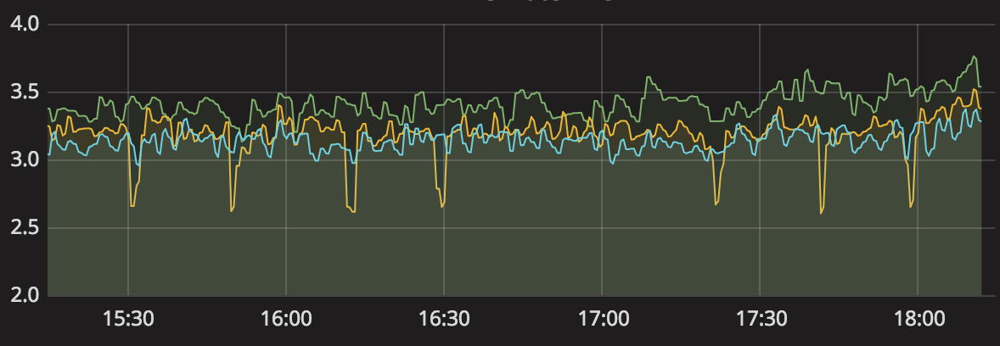
- 饼状图。一般是用来监控占比分布的，比如下面这张饼图展示了使用不同的手机网络占比情况，可见 Wi-Fi 和 4G 的占比明显要高于 3G 和 2G。
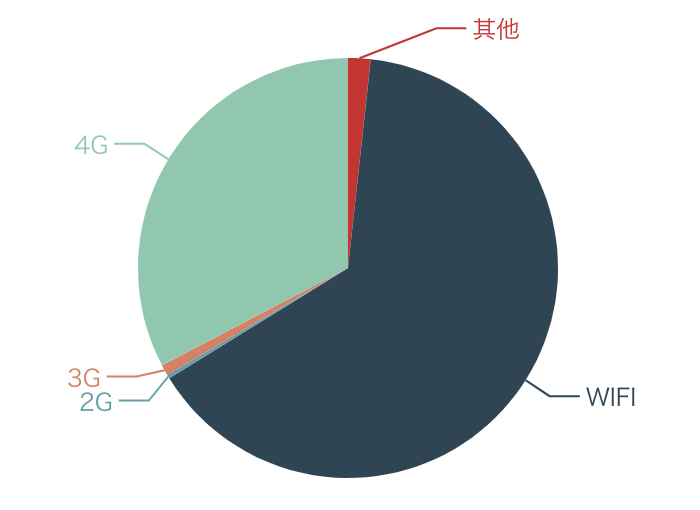
- 格子图。主要做一些细粒度的监控，比如下面这张格子图代表了不同的机器的接口调用请求量和耗时情况，展示结果一目了然。

总结
服务监控在微服务改造过程中的重要性不言而喻，没有强大的监控能力，改造成微服务架构后，就无法掌控各个不同服务的情况，在遇到调用失败时，如果不能快速发现系统的问题，对于业务来说就是一场灾难。
搭建一个服务监控系统，涉及数据采集、数据传输、数据处理、数据展示等多个环节，每个环节都需要根据自己的业务特点选择合适的解决方案，关于监控技术方案的选型我会在专栏后面进行详解。
思考题
最后请你思考一下，你所在的技术团队目前采用的监控系统，都监控了哪些业务数据？包含哪些业务指标？都有哪些维度？你觉得是否合理？
欢迎你在留言区写下自己的思考，与我一起讨论。 %
08 如何追踪微服务调用？
在微服务架构下，由于进行了服务拆分，一次请求往往需要涉及多个服务，每个服务可能是由不同的团队开发，使用了不同的编程语言，还有可能部署在不同的机器上，分布在不同的数据中心。
下面这张图描述了用户访问微博首页，一次请求所涉及的服务（这张图仅作为示意，实际上可能远远比这张图还要复杂），你可以想象如果这次请求失败了，要想查清楚到底是哪个应用导致，会是多么复杂的一件事情。
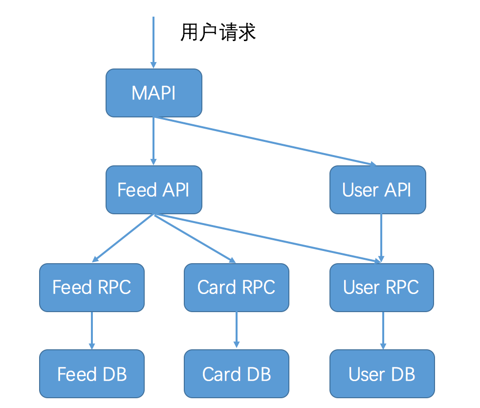
如果有一个系统，可以跟踪记录一次用户请求都发起了哪些调用，经过哪些服务处理，并且记录每一次调用所涉及的服务的详细信息，这时候如果发生调用失败，你就可以通过这个日志快速定位是在哪个环节出了问题，这个系统就是今天我要讲解的服务追踪系统。
服务追踪的作用
在介绍追踪原理与实现之前，我们先来看看服务追踪的作用。除了刚才说的能够快速定位请求失败的原因以外，我这里再列出四点，它们可以帮你在微服务改造过程中解决不少问题。
第一，优化系统瓶颈。
通过记录调用经过的每一条链路上的耗时，我们能快速定位整个系统的瓶颈点在哪里。比如你访问微博首页发现很慢，肯定是由于某种原因造成的，有可能是运营商网络延迟，有可能是网关系统异常，有可能是某个服务异常，还有可能是缓存或者数据库异常。通过服务追踪，可以从全局视角上去观察，找出整个系统的瓶颈点所在，然后做出针对性的优化。
第二，优化链路调用。
通过服务追踪可以分析调用所经过的路径，然后评估是否合理。比如一个服务调用下游依赖了多个服务，通过调用链分析，可以评估是否每个依赖都是必要的，是否可以通过业务优化来减少服务依赖。
还有就是，一般业务都会在多个数据中心都部署服务，以实现异地容灾，这个时候经常会出现一种状况就是服务 A 调用了另外一个数据中心的服务 B，而没有调用同处于一个数据中心的服务 B。
根据我的经验，跨数据中心的调用视距离远近都会有一定的网络延迟，像北京和广州这种几千公里距离的网络延迟可能达到 30ms 以上，这对于有些业务几乎是不可接受的。通过对调用链路进行分析，可以找出跨数据中心的服务调用，从而进行优化，尽量规避这种情况出现。
第三，生成网络拓扑。
通过服务追踪系统中记录的链路信息，可以生成一张系统的网络调用拓扑图，它可以反映系统都依赖了哪些服务，以及服务之间的调用关系是什么样的，可以一目了然。除此之外，在网络拓扑图上还可以把服务调用的详细信息也标出来，也能起到服务监控的作用。
第四，透明传输数据。
除了服务追踪，业务上经常有一种需求，期望能把一些用户数据，从调用的开始一直往下传递，以便系统中的各个服务都能获取到这个信息。比如业务想做一些 A/B 测试，这时候就想通过服务追踪系统，把 A/B 测试的开关逻辑一直往下传递，经过的每一层服务都能获取到这个开关值，就能够统一进行 A/B 测试。
服务追踪系统原理
讲到这里，你一定很好奇，服务追踪有这么多好处，那它是怎么做到的呢？
这就不得不提到服务追踪系统的鼻祖：Google 发布的一篇的论文Dapper, a Large-Scale Distributed Systems Tracing Infrastructure，里面详细讲解了服务追踪系统的实现原理。它的核心理念就是调用链：通过一个全局唯一的 ID 将分布在各个服务节点上的同一次请求串联起来，从而还原原有的调用关系，可以追踪系统问题、分析调用数据并统计各种系统指标。
可以说后面的诞生各种服务追踪系统都是基于 Dapper 衍生出来的，比较有名的有 Twitter 的Zipkin、阿里的鹰眼、美团的MTrace等。
要理解服务追踪的原理，首先必须搞懂一些基本概念：traceId、spanId、annonation 等。Dapper 这篇论文讲得比较清楚，但对初学者来说理解起来可能有点困难，美团的 MTrace 的原理介绍理解起来相对容易一些，下面我就以 MTrace 为例，给你详细讲述服务追踪系统的实现原理。虽然原理有些晦涩，但却是你必须掌握的，只有理解了服务追踪的基本概念，才能更好地将其实现出来。
首先看下面这张图，我来给你讲解下服务追踪系统中几个最基本概念。
 （图片来源：http://tech.meituan.com/img/mt-mtrace/mtrace7.png ）
（图片来源：http://tech.meituan.com/img/mt-mtrace/mtrace7.png ）
{kind=link}
- traceId，用于标识某一次具体的请求 ID。当用户的请求进入系统后，会在 RPC 调用网络的第一层生成一个全局唯一的 traceId，并且会随着每一层的 RPC 调用，不断往后传递，这样的话通过 traceId 就可以把一次用户请求在系统中调用的路径串联起来。
- spanId，用于标识一次 RPC 调用在分布式请求中的位置。当用户的请求进入系统后，处在 RPC 调用网络的第一层 A 时 spanId 初始值是 0，进入下一层 RPC 调用 B 的时候 spanId 是 0.1，继续进入下一层 RPC 调用 C 时 spanId 是 0.1.1，而与 B 处在同一层的 RPC 调用 E 的 spanId 是 0.2，这样的话通过 spanId 就可以定位某一次 RPC 请求在系统调用中所处的位置，以及它的上下游依赖分别是谁。
- annotation，用于业务自定义埋点数据，可以是业务感兴趣的想上传到后端的数据，比如一次请求的用户 UID。
上面这三段内容我用通俗语言再给你小结一下，traceId 是用于串联某一次请求在系统中经过的所有路径，spanId 是用于区分系统不同服务之间调用的先后关系，而 annotation 是用于业务自定义一些自己感兴趣的数据，在上传 traceId 和 spanId 这些基本信息之外，添加一些自己感兴趣的信息。
服务追踪系统实现
讲到这里，你应该已经理解服务追踪系统里最重要的概念和原理了，我们先来看看服务追踪系统的架构，让你了解一下系统全貌。
 （图片来源：https://tech.meituan.com/img/mt-mtrace/mtrace6.png ）
（图片来源：https://tech.meituan.com/img/mt-mtrace/mtrace6.png ）
{kind=link}
上面是服务追踪系统架构图，你可以看到一个服务追踪系统可以分为三层。
- 数据采集层，负责数据埋点并上报。
- 数据处理层，负责数据的存储与计算。
- 数据展示层，负责数据的图形化展示。
下面来看看具体每一层的实现方式是什么样的。
1. 数据采集层
数据采集层的作用就是在系统的各个不同模块中进行埋点，采集数据并上报给数据处理层进行处理。
那么该如何进行数据埋点呢？结合下面这张图来了解一下数据埋点的流程。
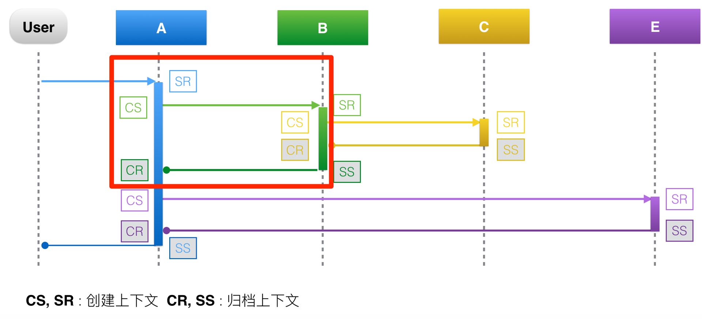（图片来源：https://tech.meituan.com/img/mt-mtrace/mtrace9.png ）
{kind=link}
以红色方框里圈出的 A 调用 B 的过程为例，一次 RPC 请求可以分为四个阶段。
- CS（Client Send）阶段 : 客户端发起请求，并生成调用的上下文。
- SR（Server Recieve）阶段 : 服务端接收请求，并生成上下文。
- SS（Server Send）阶段 : 服务端返回请求，这个阶段会将服务端上下文数据上报，下面这张图可以说明上报的数据有：traceId=123456，spanId=0.1，appKey=B，method=B.method，start=103，duration=38。
- CR（Client Recieve）阶段 : 客户端接收返回结果，这个阶段会将客户端上下文数据上报，上报的数据有：traceid=123456，spanId=0.1，appKey=A，method=B.method，start=103，duration=38。
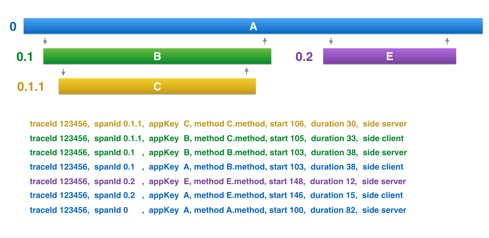（图片来源：https://tech.meituan.com/img/mt-mtrace/mtrace10.png ）
{kind=link}
2. 数据处理层
数据处理层的作用就是把数据采集层上报的数据按需计算，然后落地存储供查询使用。
据我所知，数据处理的需求一般分为两类，一类是实时计算需求，一类是离线计算需求。
实时计算需求对计算效率要求比较高，一般要求对收集的链路数据能够在秒级别完成聚合计算，以供实时查询。而离线计算需求对计算效率要求就没那么高了，一般能在小时级别完成链路数据的聚合计算即可，一般用作数据汇总统计。针对这两类不同的数据处理需求，采用的计算方法和存储也不相同。
- 实时数据处理
针对实时数据处理，一般采用 Storm 或者 Spark Streaming 来对链路数据进行实时聚合加工，存储一般使用 OLTP 数据仓库，比如 HBase，使用 traceId 作为 RowKey，能天然地把一整条调用链聚合在一起，提高查询效率。
- 离线数据处理
针对离线数据处理，一般通过运行 MapReduce 或者 Spark 批处理程序来对链路数据进行离线计算，存储一般使用 Hive。
3. 数据展示层
数据展示层的作用就是将处理后的链路信息以图形化的方式展示给用户。
根据我的经验，实际项目中主要用到两种图形展示，一种是调用链路图，一种是调用拓扑图。
- 调用链路图
下面以一张 Zipkin 的调用链路图为例，通过这张图可以看出下面几个信息。
服务整体情况：服务总耗时、服务调用的网络深度、每一层经过的系统，以及多少次调用。下图展示的一次调用，总共耗时 209.323ms，经过了 5 个不同的系统模块，调用深度为 7 层，共发生了 24 次系统调用。
每一层的情况：每一层发生了几次调用，以及每一层调用的耗时。
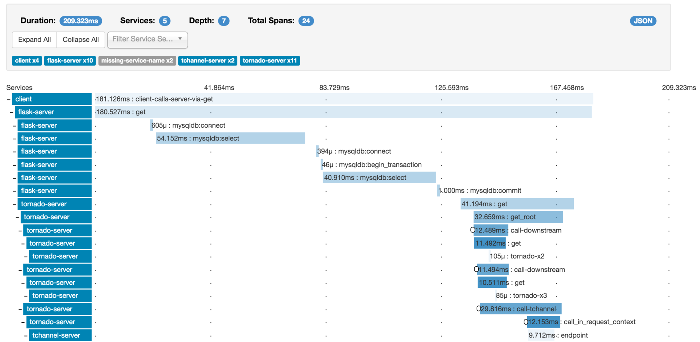（图片来源：https://zipkin.io/public/img/web-screenshot.png ）
{kind=link}
根据我的经验，调用链路图在实际项目中，主要是被用来做故障定位，比如某一次用户调用失败了，可以通过调用链路图查询这次用户调用经过了哪些环节，到底是哪一层的调用失败所导致。
- 调用拓扑图
下面是一张 Pinpoint 的调用拓扑图，通过这张图可以看出系统内都包含哪些应用，它们之间是什么关系，以及依赖调用的 QPS、平均耗时情况。
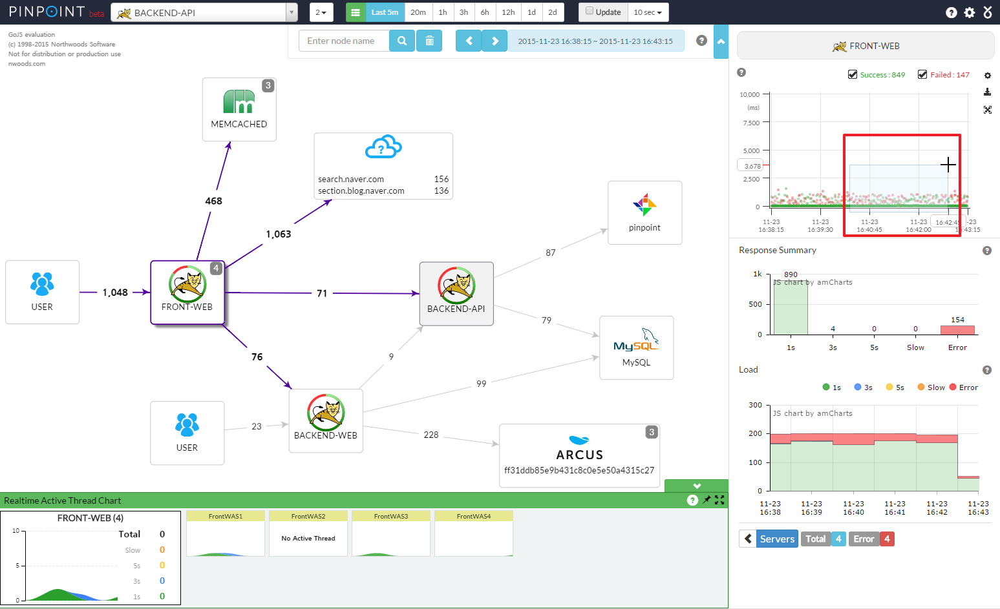（图片来源：https://raw.githubusercontent.com/naver/pinpoint/master/doc/images/ss_server-map.png ）
{kind=link}
调用拓扑图是一种全局视野图，在实际项目中，主要用作全局监控，用于发现系统中异常的点，从而快速做出决策。比如，某一个服务突然出现异常，那么在调用链路拓扑图中可以看出对这个服务的调用耗时都变高了，可以用红色的图样标出来，用作监控报警。
总结
今天我给你讲解了服务追踪的基本原理以及实现方式，可以说服务追踪是分布式系统中必不可少的功能，它能够帮助我们查询一次用户请求在系统中的具体执行路径，以及每一条路径的上下游的详细情况，对于追查问题十分有用。
实现一个服务追踪系统，涉及数据采集、数据处理和数据展示这三个流程，有多种实现方式，具体采用哪一种要根据自己的业务情况来选择。关于服务追踪系统的选型我在专栏后面会详细展开介绍，这里你只需要了解它的基本工作原理就可以了。
思考题
通过这两期的学习，你应该了解到服务追踪系统和服务监控系统的搭建都需要数据采集、处理和展示这三个步骤，你认为它们是否有相同和不同之处呢？
欢迎你在留言区写下自己的思考，与我一起讨论。 +
09 微服务治理的手段有哪些？
上一期我给你讲述了服务追踪的基本原理，有了分布式服务追踪系统，在服务出现问题的时候，我们就可以定位服务哪里出现了问题。一般单体应用改造成微服务架构后，还会增加哪些问题呢？又该如何应对呢？
前面我讲到单体应用改造为微服务架构后，服务调用由本地调用变成远程调用，服务消费者 A 需要通过注册中心去查询服务提供者 B 的地址，然后发起调用，这个看似简单的过程就可能会遇到下面几种情况，比如：
- 注册中心宕机；
- 服务提供者 B 有节点宕机；
- 服务消费者 A 和注册中心之间的网络不通；
- 服务提供者 B 和注册中心之间的网络不通；
- 服务消费者 A 和服务提供者 B 之间的网络不通；
- 服务提供者 B 有些节点性能变慢；
- 服务提供者 B 短时间内出现问题。
可见，一次服务调用，服务提供者、注册中心、网络这三者都可能会有问题，此时服务消费者应该如何处理才能确保调用成功呢？这就是服务治理要解决的问题。
接下来我们一起来看看常用的服务治理手段。
节点管理
根据我的经验，服务调用失败一般是由两类原因引起的，一类是服务提供者自身出现问题，如服务器宕机、进程意外退出等；一类是网络问题，如服务提供者、注册中心、服务消费者这三者任意两者之间的网络出现问题。
无论是服务提供者自身出现问题还是网络发生问题，都有两种节点管理手段。
1. 注册中心主动摘除机制
这种机制要求服务提供者定时的主动向注册中心汇报心跳，注册中心根据服务提供者节点最近一次汇报心跳的时间与上一次汇报心跳时间做比较，如果超出一定时间，就认为服务提供者出现问题，继而把节点从服务列表中摘除，并把最近的可用服务节点列表推送给服务消费者。
2. 服务消费者摘除机制
虽然注册中心主动摘除机制可以解决服务提供者节点异常的问题，但如果是因为注册中心与服务提供者之间的网络出现异常，最坏的情况是注册中心会把服务节点全部摘除，导致服务消费者没有可用的服务节点调用，但其实这时候服务提供者本身是正常的。所以，将存活探测机制用在服务消费者这一端更合理，如果服务消费者调用服务提供者节点失败，就将这个节点从内存中保存的可用服务提供者节点列表中移除。
负载均衡
一般情况下，服务提供者节点不是唯一的，多是以集群的方式存在，尤其是对于大规模的服务调用来说，服务提供者节点数目可能有上百上千个。由于机器采购批次的不同，不同服务节点本身的配置也可能存在很大差异，新采购的机器 CPU 和内存配置可能要高一些，同等请求量情况下，性能要好于旧的机器。对于服务消费者而言，在从服务列表中选取可用节点时，如果能让配置较高的新机器多承担一些流量的话，就能充分利用新机器的性能。这就需要对负载均衡算法做一些调整。
常用的负载均衡算法主要包括以下几种。
1. 随机算法
顾名思义就是从可用的服务节点中随机选取一个节点。一般情况下，随机算法是均匀的，也就是说后端服务节点无论配置好坏，最终得到的调用量都差不多。
2. 轮询算法
就是按照固定的权重，对可用服务节点进行轮询。如果所有服务节点的权重都是相同的，则每个节点的调用量也是差不多的。但可以给某些硬件配置较好的节点的权重调大些，这样的话就会得到更大的调用量，从而充分发挥其性能优势，提高整体调用的平均性能。
3. 最少活跃调用算法
这种算法是在服务消费者这一端的内存里动态维护着同每一个服务节点之间的连接数，当调用某个服务节点时，就给与这个服务节点之间的连接数加 1，调用返回后，就给连接数减 1。然后每次在选择服务节点时，根据内存里维护的连接数倒序排列，选择连接数最小的节点发起调用，也就是选择了调用量最小的服务节点，性能理论上也是最优的。
4. 一致性 Hash 算法
指相同参数的请求总是发到同一服务节点。当某一个服务节点出现故障时，原本发往该节点的请求，基于虚拟节点机制，平摊到其他节点上，不会引起剧烈变动。
这几种算法的实现难度也是逐步提升的，所以选择哪种节点选取的负载均衡算法要根据实际场景而定。如果后端服务节点的配置没有差异，同等调用量下性能也没有差异的话，选择随机或者轮询算法比较合适；如果后端服务节点存在比较明显的配置和性能差异，选择最少活跃调用算法比较合适。
服务路由
对于服务消费者而言，在内存中的可用服务节点列表中选择哪个节点不仅由负载均衡算法决定，还由路由规则确定。
所谓的路由规则，就是通过一定的规则如条件表达式或者正则表达式来限定服务节点的选择范围。
为什么要制定路由规则呢？主要有两个原因。
1. 业务存在灰度发布的需求
比如，服务提供者做了功能变更，但希望先只让部分人群使用，然后根据这部分人群的使用反馈，再来决定是否做全量发布。这个时候，就可以通过类似按尾号进行灰度的规则限定只有一定比例的人群才会访问新发布的服务节点。
2. 多机房就近访问的需求
据我所知，大部分业务规模中等及以上的互联网公司，为了业务的高可用性，都会将自己的业务部署在不止一个 IDC 中。这个时候就存在一个问题，不同 IDC 之间的访问由于要跨 IDC，通过专线访问，尤其是 IDC 相距比较远时延迟就会比较大，比如北京和广州的专线延迟一般在 30ms 左右，这对于某些延时敏感性的业务是不可接受的，所以就要一次服务调用尽量选择同一个 IDC 内部的节点，从而减少网络耗时开销，提高性能。这时一般可以通过 IP 段规则来控制访问，在选择服务节点时，优先选择同一 IP 段的节点。
那么路由规则该如何配置呢？根据我的实际项目经验，一般有两种配置方式。
1. 静态配置
就是在服务消费者本地存放服务调用的路由规则，在服务调用期间，路由规则不会发生改变，要想改变就需要修改服务消费者本地配置，上线后才能生效。
2. 动态配置
这种方式下，路由规则是存在注册中心的，服务消费者定期去请求注册中心来保持同步，要想改变服务消费者的路由配置，可以通过修改注册中心的配置，服务消费者在下一个同步周期之后，就会请求注册中心来更新配置，从而实现动态更新。
服务容错
服务调用并不总是一定成功的，前面我讲过，可能因为服务提供者节点自身宕机、进程异常退出或者服务消费者与提供者之间的网络出现故障等原因。对于服务调用失败的情况，需要有手段自动恢复，来保证调用成功。
常用的手段主要有以下几种。
- FailOver：失败自动切换。就是服务消费者发现调用失败或者超时后，自动从可用的服务节点列表总选择下一个节点重新发起调用，也可以设置重试的次数。这种策略要求服务调用的操作必须是幂等的，也就是说无论调用多少次，只要是同一个调用，返回的结果都是相同的，一般适合服务调用是读请求的场景。
- FailBack：失败通知。就是服务消费者调用失败或者超时后，不再重试，而是根据失败的详细信息，来决定后续的执行策略。比如对于非幂等的调用场景，如果调用失败后，不能简单地重试，而是应该查询服务端的状态，看调用到底是否实际生效，如果已经生效了就不能再重试了；如果没有生效可以再发起一次调用。
- FailCache：失败缓存。就是服务消费者调用失败或者超时后，不立即发起重试，而是隔一段时间后再次尝试发起调用。比如后端服务可能一段时间内都有问题，如果立即发起重试，可能会加剧问题，反而不利于后端服务的恢复。如果隔一段时间待后端节点恢复后，再次发起调用效果会更好。
- FailFast：快速失败。就是服务消费者调用一次失败后，不再重试。实际在业务执行时，一般非核心业务的调用，会采用快速失败策略，调用失败后一般就记录下失败日志就返回了。
从我对服务容错不同策略的描述中，你可以看出它们的使用场景是不同的，一般情况下对于幂等的调用，可以选择 FailOver 或者 FailCache，非幂等的调用可以选择 FailBack 或者 FailFast。
总结
上面我讲的服务治理的手段是最常用的手段，它们从不同角度来确保服务调用的成功率。节点管理是从服务节点健康状态角度来考虑，负载均衡和服务路由是从服务节点访问优先级角度来考虑，而服务容错是从调用的健康状态角度来考虑，可谓是殊途同归。
在实际的微服务架构实践中，上面这些服务治理手段一般都会在服务框架中默认集成了，比如阿里开源的服务框架 Dubbo、微博开源的服务框架 Motan 等，不需要业务代码去实现。如果想自己实现服务治理的手段，可以参考这些开源服务框架的实现。
思考题
上面讲述的这些服务治理手段，哪些是你的业务场景中可能需要的？你可以描述下你的业务场景，以及思考下为什么这些服务治理手段可以解决你的问题。
欢迎你在留言区写下自己的思考，与我一起讨论。 '
10 Dubbo框架里的微服务组件
经过前面几期的讲解，你应该已经对微服务的架构有了初步的了解。简单回顾一下，微服务的架构主要包括服务描述、服务发现、服务调用、服务监控、服务追踪以及服务治理这几个基本组件。
那么每个基本组件从架构和代码设计上该如何实现？组件之间又是如何串联来实现一个完整的微服务架构呢？今天我就以开源微服务框架 Dubbo 为例来给你具体讲解这些组件。
服务发布与引用
专栏前面我讲过服务发布与引用的三种常用方式：RESTful API、XML 配置以及 IDL 文件，其中 Dubbo 框架主要是使用 XML 配置方式，接下来我通过具体实例，来给你讲讲 Dubbo 框架服务发布与引用是如何实现的。
首先来看服务发布的过程，下面这段代码是服务提供者的 XML 配置。
<?xml version="1.0" encoding="UTF-8"?>
<beans xmlns="http://www.springframework.org/schema/beans"
xmlns:xsi="http://www.w3.org/2001/XMLSchema-instance"
xmlns:dubbo="http://dubbo.apache.org/schema/dubbo"
xsi:schemaLocation="http://www.springframework.org/schema/beans http://www.springframework.org/schema/beans/spring-beans-4.3.xsd http://dubbo.apache.org/schema/dubbo http://dubbo.apache.org/schema/dubbo/dubbo.xsd">
<!-- 提供方应用信息，用于计算依赖关系 -->
<dubbo:application name="hello-world-app" />
<!-- 使用 multicast 广播注册中心暴露服务地址 -->
<dubbo:registry address="multicast://224.5.6.7:1234" />
<!-- 用 dubbo 协议在 20880 端口暴露服务 -->
<dubbo:protocol name="dubbo" port="20880" />
<!-- 声明需要暴露的服务接口 -->
<dubbo:service interface="com.alibaba.dubbo.demo.DemoService" ref="demoService" />
<!-- 和本地 bean 一样实现服务 -->
<bean id="demoService" class="com.alibaba.dubbo.demo.provider.DemoServiceImpl" />
</beans>
其中“dubbo:service”开头的配置项声明了服务提供者要发布的接口，“dubbo:protocol”开头的配置项声明了服务提供者要发布的接口的协议以及端口号。
Dubbo 会把以上配置项解析成下面的 URL 格式：
dubbo://host-ip:20880/com.alibaba.dubbo.demo.DemoService
然后基于扩展点自适应机制，通过 URL 的“dubbo://”协议头识别，就会调用 DubboProtocol 的 export() 方法，打开服务端口 20880，就可以把服务 demoService 暴露到 20880 端口了。
再来看下服务引用的过程，下面这段代码是服务消费者的 XML 配置。
<?xml version="1.0" encoding="UTF-8"?>
<beans xmlns="http://www.springframework.org/schema/beans"
xmlns:xsi="http://www.w3.org/2001/XMLSchema-instance"
xmlns:dubbo="http://dubbo.apache.org/schema/dubbo"
xsi:schemaLocation="http://www.springframework.org/schema/beans http://www.springframework.org/schema/beans/spring-beans-4.3.xsd http://dubbo.apache.org/schema/dubbo http://dubbo.apache.org/schema/dubbo/dubbo.xsd">
<!-- 消费方应用名，用于计算依赖关系，不是匹配条件，不要与提供方一样 -->
<dubbo:application name="consumer-of-helloworld-app" />
<!-- 使用 multicast 广播注册中心暴露发现服务地址 -->
<dubbo:registry address="multicast://224.5.6.7:1234" />
<!-- 生成远程服务代理，可以和本地 bean 一样使用 demoService -->
<dubbo:reference id="demoService" interface="com.alibaba.dubbo.demo.DemoService" />
</beans>
其中“dubbo:reference”开头的配置项声明了服务消费者要引用的服务，Dubbo 会把以上配置项解析成下面的 URL 格式：
dubbo://com.alibaba.dubbo.demo.DemoService
然后基于扩展点自适应机制，通过 URL 的“dubbo://”协议头识别，就会调用 DubboProtocol 的 refer() 方法，得到服务 demoService 引用，完成服务引用过程。
服务注册与发现
先来看下服务提供者注册服务的过程，继续以前面服务提供者的 XML 配置为例，其中“dubbo://registry”开头的配置项声明了注册中心的地址，Dubbo 会把以上配置项解析成下面的 URL 格式：
registry://multicast://224.5.6.7:1234/com.alibaba.dubbo.registry.RegistryService?export=URL.encode("dubbo://host-ip:20880/com.alibaba.dubbo.demo.DemoService")
然后基于扩展点自适应机制，通过 URL 的“registry://”协议头识别，就会调用 RegistryProtocol 的 export() 方法，将 export 参数中的提供者 URL，注册到注册中心。
再来看下服务消费者发现服务的过程，同样以前面服务消费者的 XML 配置为例，其中“dubbo://registry”开头的配置项声明了注册中心的地址，跟服务注册的原理类似，Dubbo 也会把以上配置项解析成下面的 URL 格式：
registry://multicast://224.5.6.7:1234/com.alibaba.dubbo.registry.RegistryService?refer=URL.encode("consummer://host-ip/com.alibaba.dubbo.demo.DemoService")
然后基于扩展点自适应机制，通过 URL 的“registry://”协议头识别，就会调用 RegistryProtocol 的 refer() 方法，基于 refer 参数中的条件，查询服务 demoService 的地址。
服务调用
专栏前面我讲过在服务调用的过程中，通常把服务消费者叫作客户端，服务提供者叫作服务端，发起一次服务调用需要解决四个问题：
- 客户端和服务端如何建立网络连接？
- 服务端如何处理请求？
- 数据传输采用什么协议？
- 数据该如何序列化和反序列化？
其中前两个问题客户端和服务端如何建立连接和服务端如何处理请求是通信框架要解决的问题，Dubbo 支持多种通信框架，比如 Netty 4，需要在服务端和客户端的 XML 配置中添加下面的配置项。
服务端：
<dubbo:protocol server="netty4" />
客户端：
<dubbo:consumer client="netty4" />
这样基于扩展点自适应机制，客户端和服务端之间的调用会通过 Netty 4 框架来建立连接，并且服务端采用 NIO 方式来处理客户端的请求。
再来看下 Dubbo 的数据传输采用什么协议。Dubbo 不仅支持私有的 Dubbo 协议，还支持其他协议比如 Hessian、RMI、HTTP、Web Service、Thrift 等。下面这张图描述了私有 Dubbo 协议的协议头约定。
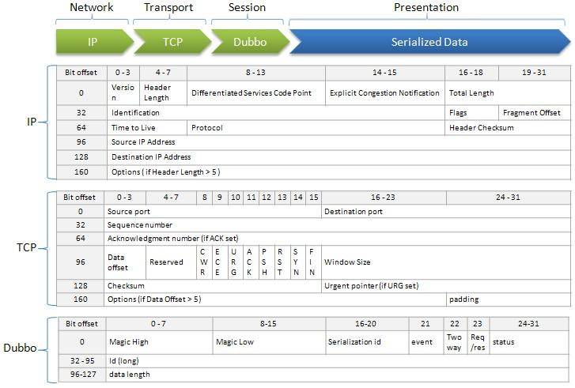(图片来源：https://dubbo.incubator.apache.org/docs/zh-cn/dev/sources/images/dubbo_protocol_header.jpg ）
{kind=link}
至于数据序列化和反序列方面，Dubbo 同样也支持多种序列化格式，比如 Dubbo、Hession 2.0、JSON、Java、Kryo 以及 FST 等，可以通过在 XML 配置中添加下面的配置项。
例如：
<dubbo:protocol name="dubbo" serialization="kryo"/>
服务监控
服务监控主要包括四个流程：数据采集、数据传输、数据处理和数据展示，其中服务框架的作用是进行埋点数据采集，然后上报给监控系统。
在 Dubbo 框架中，无论是服务提供者还是服务消费者，在执行服务调用的时候，都会经过 Filter 调用链拦截，来完成一些特定功能，比如监控数据埋点就是通过在 Filter 调用链上装备了 MonitorFilter 来实现的，详细的代码实现你可以参考这里。
服务治理
服务治理手段包括节点管理、负载均衡、服务路由、服务容错等，下面这张图给出了 Dubbo 框架服务治理的具体实现。
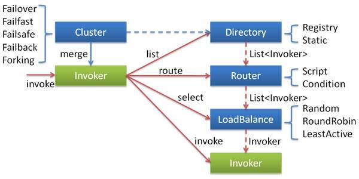（图片来源：http://dubbo.incubator.apache.org/docs/zh-cn/user/sources/images/cluster.jpg ）
{kind=link}
图中的 Invoker 是对服务提供者节点的抽象，Invoker 封装了服务提供者的地址以及接口信息。
- 节点管理：Directory 负责从注册中心获取服务节点列表，并封装成多个 Invoker，可以把它看成“List” ，它的值可能是动态变化的，比如注册中心推送变更时需要更新。
- 负载均衡：LoadBalance 负责从多个 Invoker 中选出某一个用于发起调用，选择时可以采用多种负载均衡算法，比如 Random、RoundRobin、LeastActive 等。
- 服务路由：Router 负责从多个 Invoker 中按路由规则选出子集，比如读写分离、机房隔离等。
- 服务容错：Cluster 将 Directory 中的多个 Invoker 伪装成一个 Invoker，对上层透明，伪装过程包含了容错逻辑，比如采用 Failover 策略的话，调用失败后，会选择另一个 Invoker，重试请求。
一次服务调用的流程
上面我讲的是 Dubbo 下每个基本组件的实现方式，那么 Dubbo 框架下，一次服务调用的流程是什么样的呢？下面结合这张图，我来给你详细讲解一下。
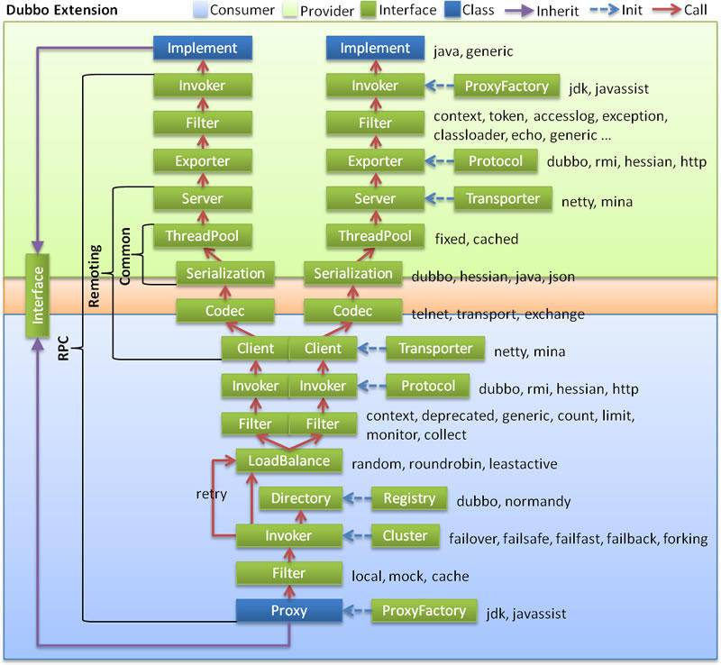(图片来源：https://dubbo.incubator.apache.org/docs/zh-cn/dev/sources/images/dubbo-extension.jpg ）
{kind=link}
首先我来解释微服务架构中各个组件分别对应到上面这张图中是如何实现。
- 服务发布与引用：对应实现是图里的 Proxy 服务代理层，Proxy 根据客户端和服务端的接口描述，生成接口对应的客户端和服务端的 Stub，使得客户端调用服务端就像本地调用一样。
- 服务注册与发现：对应实现是图里的 Registry 注册中心层，Registry 根据客户端和服务端的接口描述，解析成服务的 URL 格式，然后调用注册中心的 API，完成服务的注册和发现。
- 服务调用：对应实现是 Protocol 远程调用层，Protocol 把客户端的本地请求转换成 RPC 请求。然后通过 Transporter 层来实现通信，Codec 层来实现协议封装，Serialization 层来实现数据序列化和反序列化。
- 服务监控：对应实现层是 Filter 调用链层，通过在 Filter 调用链层中加入 MonitorFilter，实现对每一次调用的拦截，在调用前后进行埋点数据采集，上传给监控系统。
- 服务治理：对应实现层是 Cluster 层，负责服务节点管理、负载均衡、服务路由以及服务容错。
再来看下微服务架构各个组件是如何串联起来组成一个完整的微服务框架的，以 Dubbo 框架下一次服务调用的过程为例，先来看下客户端发起调用的过程。
- 首先根据接口定义，通过 Proxy 层封装好的透明化接口代理，发起调用。
- 然后在通过 Registry 层封装好的服务发现功能，获取所有可用的服务提供者节点列表。
- 再根据 Cluster 层的负载均衡算法从可用的服务节点列表中选取一个节点发起服务调用，如果调用失败，根据 Cluster 层提供的服务容错手段进行处理。
- 同时通过 Filter 层拦截调用，实现客户端的监控统计。
- 最后在 Protocol 层，封装成 Dubbo RPC 请求，发给服务端节点。
这样的话，客户端的请求就从一个本地调用转化成一个远程 RPC 调用，经过服务调用框架的处理，通过网络传输到达服务端。其中服务调用框架包括通信协框架 Transporter、通信协议 Codec、序列化 Serialization 三层处理。
服务端从网络中接收到请求后的处理过程是这样的：
- 首先在 Protocol 层，把网络上的请求解析成 Dubbo RPC 请求。
- 然后通过 Filter 拦截调用，实现服务端的监控统计。
- 最后通过 Proxy 层的处理，把 Dubbo RPC 请求转化为接口的具体实现，执行调用。
总结
今天我给你讲述了 Dubbo 服务化框架每个基本组件的实现方式，以及一次 Dubbo 调用的流程。
对于学习微服务架构来说，最好的方式是去实际搭建一个微服务的框架，甚至去从代码入手做一些二次开发。
你可以按照 Dubbo 的官方文档去安装并搭建一个服务化框架。如果想深入了解它的实现的话，可以下载源码来阅读。
思考题
在以 Dubbo 为例，学习完服务化框架的具体实现后，你对其中的实现细节还有什么疑问吗？
欢迎你在留言区写下自己的思考，与我一起讨论。 %
11 服务发布和引用的实践
讲解了服务发布和引用常见的三种方式：Restful API、XML 配置以及 IDL 文件。今天我将以 XML 配置方式为例，给你讲解服务发布和引用的具体实践以及可能会遇到的问题。
首先我们一起来看下 XML 配置方式，服务发布和引用的具体流程是什么样的。
XML 配置方式的服务发布和引用流程
1. 服务提供者定义接口
服务提供者发布服务之前首先要定义接口，声明接口名、传递参数以及返回值类型，然后把接口打包成 JAR 包发布出去。
比如下面这段代码，声明了接口 UserLastStatusService，包含两个方法 getLastStatusId 和 getLastStatusIds，传递参数一个是 long 值、一个是 long 数组，返回值一个是 long 值、一个是 map。
package com.weibo.api.common.status.service;
public interface UserLastStatusService {
* @param uids
* @return
*/
public long getLastStatusId(long uid);
/**
*
* @param uids
* @return
*/
public Map<Long, Long> getLastStatusIds(long[] uids);
}
2. 服务提供者发布接口
服务提供者发布的接口是通过在服务发布配置文件中定义接口来实现的。
下面我以一个具体的服务发布配置文件 user-last-status.xml 来给你讲解，它定义了要发布的接口 userLastStatusLocalService，对外暴露的协议是 Motan 协议，端口是 8882。并且针对两个方法 getLastStatusId 和 getLastStatusIds，通过 requestTimeout="300" 单独定义了超时时间是 300ms，通过 retries="0" 单独定义了调用失败后重试次数为 0，也就是不重试。
<?xml version="1.0" encoding="UTF-8"?>
<beans xmlns="http://www.springframework.org/schema/beans"
xmlns:xsi="http://www.w3.org/2001/XMLSchema-instance"
xmlns:context="http://www.springframework.org/schema/context"
xmlns:aop="http://www.springframework.org/schema/aop"
xsi:schemaLocation="http://www.springframework.org/schema/context
http://www.springframework.org/schema/context/spring-context-2.5.xsd
http://www.springframework.org/schema/beans http://www.springframework.org/schema/beans/spring-beans-2.5.xsd
http://www.springframework.org/schema/aop http://www.springframework.org/schema/aop/spring-aop-2.5.xsd
">
<motan:service ref="userLastStatusLocalService"
requestTimeout="50" retries="2" interface="com.weibo.api.common.status.service.UserLastStatusService"
basicService="serviceBasicConfig" export="motan:8882">
<motan:method name="getLastStatusId" requestTimeout="300"
retries="0" />
<motan:method name="getLastStatusIds" requestTimeout="300"
retries="0" />
</motan:service>
</beans>
然后服务发布者在进程启动的时候，会加载配置文件 user-last-status.xml，把接口对外暴露出去。
3. 服务消费者引用接口
服务消费者引用接口是通过在服务引用配置文件中定义要引用的接口，并把包含接口定义的 JAR 包引入到代码依赖中。
下面我再以一个具体的服务引用配置文件 user-last-status-client.xml 来给你讲解，它定义服务消费者引用了接口 commonUserLastStatusService，接口通信协议是 Motan。
<?xml version="1.0" encoding="UTF-8"?>
<beans xmlns="http://www.springframework.org/schema/beans"
xmlns:xsi="http://www.w3.org/2001/XMLSchema-instance"
xmlns:context="http://www.springframework.org/schema/context"
xmlns:aop="http://www.springframework.org/schema/aop"
xsi:schemaLocation="http://www.springframework.org/schema/context
http://www.springframework.org/schema/context/spring-context-2.5.xsd
http://www.springframework.org/schema/beans http://www.springframework.org/schema/beans/spring-beans-2.5.xsd
http://www.springframework.org/schema/aop http://www.springframework.org/schema/aop/spring-aop-2.5.xsd
">
<motan:protocol name="motan" default="true" loadbalance="${service.loadbalance.name}" />
<motan:basicReferer id="userLastStatusServiceClientBasicConfig"
protocol="motan" />
<!-- 导出接口 -->
<motan:referer id="commonUserLastStatusService" interface="com.weibo.api.common.status.service.UserLastStatusService"
basicReferer="userLastStatusServiceClientBasicConfig" />
</beans>
然后服务消费者在进程启动时，会加载配置文件 user-last-status-client.xml 来完成服务引用。
上面所讲的服务发布和引用流程看似比较简单，但在实际使用过程中，还是有很多坑的，比如在实际项目中经常会遇到这个问题：一个服务包含了多个接口，可能有上行接口也可能有下行接口，每个接口都有超时控制以及是否重试等配置，如果有多个服务消费者引用这个服务，是不是每个服务消费者都必须在服务引用配置文件中定义？
你可以先思考一下这个问题，联系自己的实践经验，是否有理想的解决方案呢？
服务发布和引用的那些坑
根据我的项目经验，在一个服务被多个服务消费者引用的情况下，由于业务经验的参差不齐，可能不同的服务消费者对服务的认知水平不一，比如某个服务可能调用超时了，最好可以重试来提供调用成功率。但可能有的服务消费者会忽视这一点，并没有在服务引用配置文件中配置接口调用超时重试的次数，因此最好是可以在服务发布的配置文件中预定义好类似超时重试次数，即使服务消费者没有在服务引用配置文件中定义，也能继承服务提供者的定义。这就是下面要讲的服务发布预定义配置。
1. 服务发布预定义配置
以下面的服务发布配置文件 server.xml 为例，它提供了一个服务 contentSliceRPCService，并且明确了其中三个方法的调用超时时间为 500ms 以及超时重试次数为 3。
<motan:service ref="contentSliceRPCService" interface="cn.sina.api.data.service.ContentSliceRPCService"
basicService="serviceBasicConfig" export="motan:8882" >
<motan:method name="saveContent" requestTimeout="500"
retries="3" />
<motan:method name="deleteContent" requestTimeout="500"
retries="3" />
<motan:method name="updateContent" requestTimeout="500"
retries="3" />
</motan:service>
假设服务引用的配置文件 client.xml 的内容如下，那么服务消费者就会默认继承服务发布配置文件中设置的方法调用的超时时间以及超时重试次数。
<motan:referer id="contentSliceRPCService" interface="cn.sina.api.data.service.ContentSliceRPCService" basicReferer="contentSliceClientBasicConfig" >
</motan:referer>
通过服务发布预定义配置可以解决多个服务消费者引用服务可能带来的配置复杂的问题，这样是不是最优的解决方案呢？
实际上我还遇到过另外一种极端情况，一个服务提供者发布的服务有上百个方法，并且每个方法都有各自的超时时间、重试次数等信息。服务消费者引用服务时，完全继承了服务发布预定义的各项配置。这种情况下，服务提供者所发布服务的详细配置信息都需要存储在注册中心中，这样服务消费者才能在实际引用时从服务发布预定义配置中继承各种配置。
这里就存在一种风险，当服务提供者发生节点变更，尤其是在网络频繁抖动的情况下，所有的服务消费者都会从注册中心拉取最新的服务节点信息，就包括了服务发布配置中预定的各项接口信息，这个信息不加限制的话可能达到 1M 以上，如果同时有上百个服务消费者从注册中心拉取服务节点信息，在注册中心机器部署为百兆带宽的情况下，很有可能会导致网络带宽打满的情况发生。
面对这种情况，最好的办法是把服务发布端的详细服务配置信息转移到服务引用端，这样的话注册中心中就不需要存储服务提供者发布的详细服务配置信息了。这就是下面要讲的服务引用定义配置。
2. 服务引用定义配置
以下面的服务发布配置文件为例，它详细定义了服务 userInfoService 的各个方法的配置信息，比如超时时间和重试次数等。
<motan:service ref="userInfoService" requestTimeout="50" retries="2" interface="cn.sina.api.user.service.UserInfoService" basicService="serviceBasicConfig">
<motan:method name="addUserInfo" requestTimeout="300" retries="0"/>
<motan:method name="updateUserPortrait" requestTimeout="300" retries="0"/>
<motan:method name="modifyUserInfo" requestTimeout="300" retries="0"/>
<motan:method name="addUserTags" requestTimeout="300" retries="0"/>
<motan:method name="delUserTags" requestTimeout="300" retries="0"/>
<motan:method name="processUserCacheByNewMyTriggerQ" requestTimeout="300" retries="0"/>
<motan:method name="modifyObjectUserInfo" requestTimeout="300" retries="0"/>
<motan:method name="addObjectUserInfo" requestTimeout="300" retries="0"/>
<motan:method name="updateObjectUserPortrait" requestTimeout="300" retries="0"/>
<motan:method name="updateObjectManager" requestTimeout="300" retries="0"/>
<motan:method name="add" requestTimeout="300" retries="0"/>
<motan:method name="deleteObjectManager" requestTimeout="300" retries="0"/>
<motan:method name="getUserAttr" requestTimeout="300" retries="1" />
<motan:method name="getUserAttrList" requestTimeout="300" retries="1" />
<motan:method name="getAllUserAttr" requestTimeout="300" retries="1" />
<motan:method name="getUserAttr2" requestTimeout="300" retries="1" />
</motan:service>
可以像下面一样，把服务 userInfoService 的详细配置信息转移到服务引用配置文件中。
<motan:referer id="userInfoService" interface="cn.sina.api.user.service.UserInfoService" basicReferer="userClientBasicConfig">
<motan:method name="addUserInfo" requestTimeout="300" retries="0"/>
<motan:method name="updateUserPortrait" requestTimeout="300" retries="0"/>
<motan:method name="modifyUserInfo" requestTimeout="300" retries="0"/>
<motan:method name="addUserTags" requestTimeout="300" retries="0"/>
<motan:method name="delUserTags" requestTimeout="300" retries="0"/>
<motan:method name="processUserCacheByNewMyTriggerQ" requestTimeout="300" retries="0"/>
<motan:method name="modifyObjectUserInfo" requestTimeout="300" retries="0"/>
<motan:method name="addObjectUserInfo" requestTimeout="300" retries="0"/>
<motan:method name="updateObjectUserPortrait" requestTimeout="300" retries="0"/>
<motan:method name="updateObjectManager" requestTimeout="300" retries="0"/>
<motan:method name="add" requestTimeout="300" retries="0"/>
<motan:method name="deleteObjectManager" requestTimeout="300" retries="0"/>
<motan:method name="getUserAttr" requestTimeout="300" retries="1" />
<motan:method name="getUserAttrList" requestTimeout="300" retries="1" />
<motan:method name="getAllUserAttr" requestTimeout="300" retries="1" />
<motan:method name="getUserAttr2" requestTimeout="300" retries="1" />
</motan:referer>
这样的话，服务发布配置文件可以简化为下面这段代码，是不是信息精简了许多。
<motan:service ref="userInfoService" requestTimeout="50" retries="2" interface="cn.sina.api.user.service.UserInfoService" basicService="serviceBasicConfig">
</motan:service>
在进行类似的服务详细信息配置，由服务发布配置文件迁移到服务引用配置文件的过程时，尤其要注意迁移步骤问题，这就是接下来我要给你讲的服务配置升级问题。
3. 服务配置升级
实际项目中，我就经历过一次服务配置升级的过程。由于引用服务的服务消费者众多，并且涉及多个部门，升级步骤就显得异常重要，通常可以按照下面步骤操作。
- 各个服务消费者在服务引用配置文件中添加服务详细信息。
- 服务提供者升级两台服务器，在服务发布配置文件中删除服务详细信息，并观察是否所有的服务消费者引用时都包含服务详细信息。
- 如果都包含，说明所有服务消费者均完成升级，那么服务提供者就可以删除服务发布配置中的服务详细信息。
- 如果有不包含服务详细信息的服务消费者，排查出相应的业务方进行升级，直至所有业务方完成升级。
总结
今天我给你介绍了 XML 配置方式的服务发布和引用的具体流程，简单来说就是服务提供者定义好接口，并且在服务发布配置文件中配置要发布的接口名，在进程启动时加载服务发布配置文件就可以对外提供服务了。而服务消费者通过在服务引用配置文件中定义相同的接口名，并且在服务引用配置文件中配置要引用的接口名，在进程启动时加载服务引用配置文件就可以引用服务了。
在业务具体实践过程中可能会遇到引用服务的服务消费者众多，对业务的敏感度参差不齐的问题，所以在服务发布的时候，最好预定义好接口的各种配置。在服务规模不大，业务比较简单的时候，这样做比较合适。但是对于复杂业务，虽然服务发布时预定义好接口的各种配置，但在引用的服务消费者众多且同时访问的时候，可能会引起网络风暴。这种情况下，比较保险的方式是，把接口的各种配置放在服务引用配置文件里。
在进行服务配置升级过程时，要考虑好步骤，在所有服务消费者完成升级之前，服务提供者还不能把服务的详细信息去掉，否则可能会导致没有升级的服务消费者引用异常。
思考题
如果你在实际项目中采用过 XML 配置的服务发布和应用方式，是否还遇到过其他问题？你是如何解决的呢？
欢迎你在留言区写下自己的思考，与我一起讨论。 %
12 如何将注册中心落地？
专栏第 5 期我给你讲了服务注册和发现的原理，这里面的核心是服务提供者、服务消费者和注册中心这三个概念，以及它们之间的交互关系。你可以先回顾一下这几个关键的知识点，如果有不清楚的地方，建议你先返回第 5 期复习一下，再开始今天的学习。
掌握了服务注册和发现的原理之后，我们就需要考虑如何把注册中心落地实现。结合前面所讲的服务注册与发现的流程，在落地注册中心的过程中，我们需要解决一系列的问题，包括如何存储服务信息、如何注册节点、如何反注册、如何查询节点信息以及如何订阅服务变更等。这些问题你都知道如何解决吗？如果还没答案，没关系，下面我来给你一一讲解。
注册中心如何存储服务信息
注册中心既然是用来存储服务信息的，那么服务信息都包含哪些内容呢？
根据我的实践经验，服务信息除了包含节点信息（IP 和端口号）以外，还包含其他一些信息，比如请求失败时重试的次数、请求结果是否压缩等信息。因此服务信息通常用 JSON 字符串来存储，包含多个字段，每个字段代表不同的含义。
除此之外，服务一般会分成多个不同的分组，每个分组的目的不同。一般来说有下面几种分组方式。
- 核心与非核心，从业务的核心程度来分。
- 机房，从机房的维度来分。
- 线上环境与测试环境，从业务场景维度来区分。
所以注册中心存储的服务信息一般包含三部分内容：分组、服务名以及节点信息，节点信息又包括节点地址和节点其他信息。从注册中心中获取的信息结构大致如下图所示。
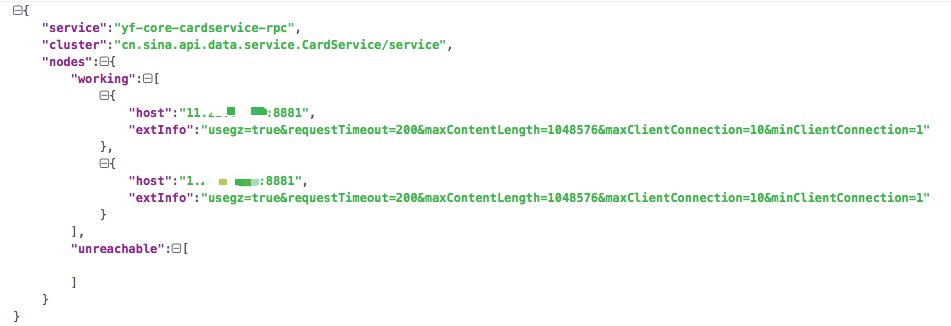
具体存储的时候，一般是按照“服务 - 分组 - 节点信息”三层结构来存储，可以用下图来描述。Service 代表服务的具体分组，Cluster 代表服务的接口名，节点信息用 KV 存储。
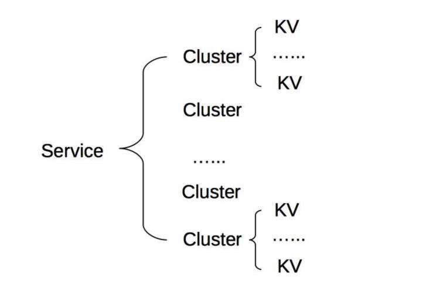
搞清楚了注册中心存储服务信息的原理后，再来看下注册中心具体是如何工作的，包括四个流程。
- 服务提供者注册流程。
- 服务提供者反注册流程。
- 服务消费者查询流程。
- 服务消费者订阅变更流程。
接下来，我来给你具体讲解上面四个流程的实现方式。
注册中心是如何工作的
1. 如何注册节点
知道了服务的节点信息如何存储之后，服务注册流程是怎么样的呢？可以用下面这张流程图来描述。

根据我的经验，服务注册流程主要有下面几个步骤：
- 首先查看要注册的节点是否在白名单内？如果不在就抛出异常，在的话继续下一步。
- 其次要查看注册的 Cluster（服务的接口名）是否存在？如果不存在就抛出异常，存在的话继续下一步。
- 然后要检查 Service（服务的分组）是否存在？如果不存在则抛出异常，存在的话继续下一步。
- 最后将节点信息添加到对应的 Service 和 Cluster 下面的存储中。
2. 如何反注册
再来看下服务提供者节点反注册的流程，可以用下面这张流程图来描述。
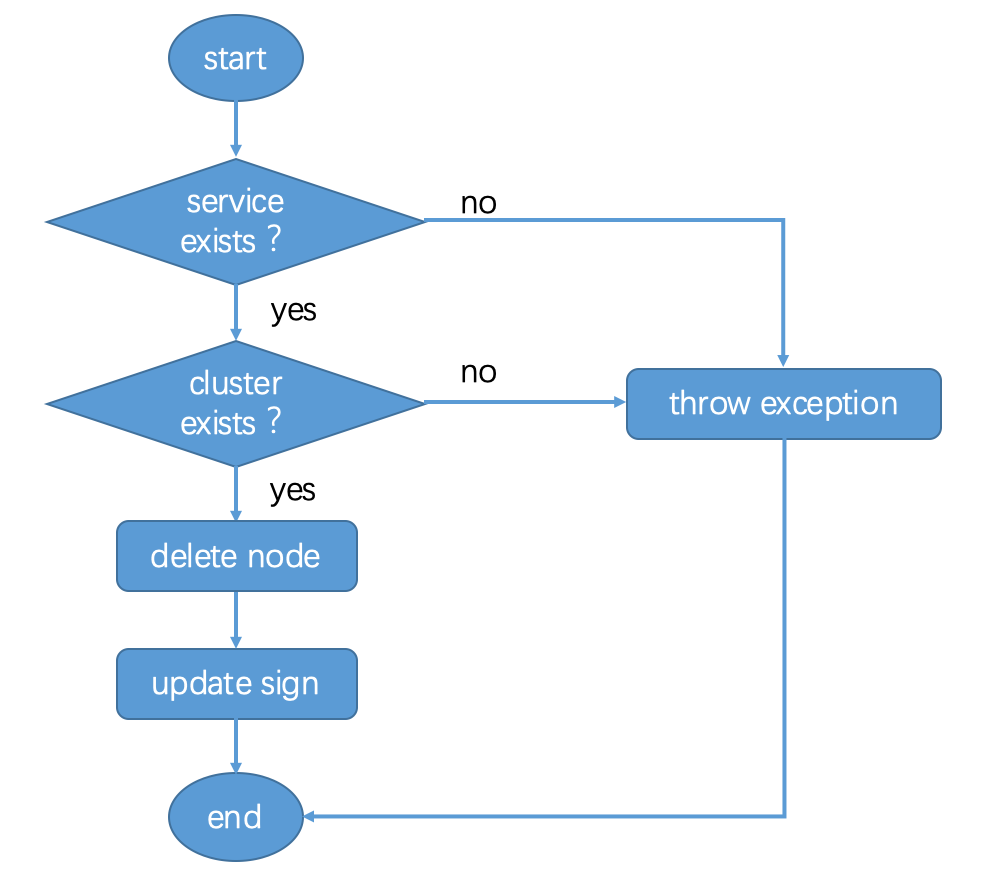
根据我的经验，节点反注册流程主要包含下面几个步骤：
- 查看 Service（服务的分组）是否存在，不存在就抛出异常，存在就继续下一步。
- 查看 Cluster（服务的接口名）是否存在，不存在就抛出异常，存在就继续下一步。
- 删除存储中 Service 和 Cluster 下对应的节点信息。
- 更新 Cluster 的 sign 值。
3. 如何查询节点信息
关于服务消费者是如何从注册中心查询服务提供者的节点信息，可以用下面这张流程图来描述。
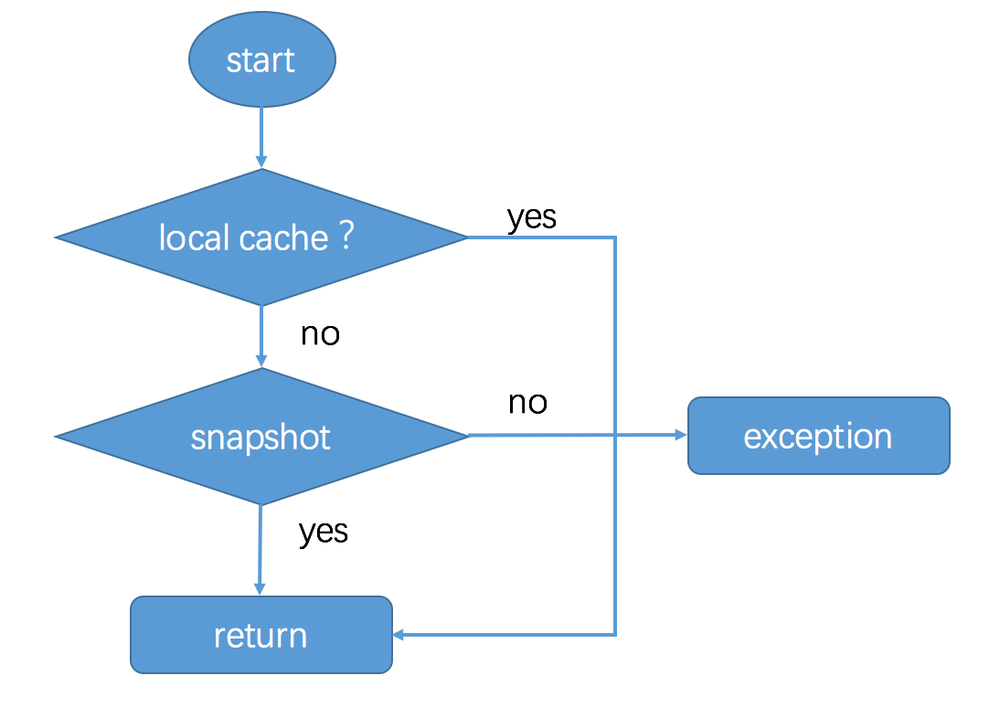
服务消费者查询节点信息主要分为下面几个步骤：
- 首先从 localcache（本机内存）中查找，如果没有就继续下一步。这里为什么服务消费者要把服务信息存在本机内存呢？主要是因为服务节点信息并不总是时刻变化的，并不需要每一次服务调用都要调用注册中心获取最新的节点信息，只需要在本机内存中保留最新的服务提供者的节点列表就可以。
- 接着从 snapshot（本地快照）中查找，如果没有就继续下一步。这里为什么服务消费者要在本地磁盘存储一份服务提供者的节点信息的快照呢？这是因为服务消费者同注册中心之间的网络不一定总是可靠的，服务消费者重启时，本机内存中还不存在服务提供者的节点信息，如果此时调用注册中心失败，那么服务消费者就拿不到服务节点信息了，也就没法调用了。本地快照就是为了防止这种情况的发生，即使服务消费者重启后请求注册中心失败，依然可以读取本地快照，获取到服务节点信息。
4. 如何订阅服务变更
最后看下，服务消费者如何订阅服务提供者的变更信息呢？可以用下面这张流程图来描述。
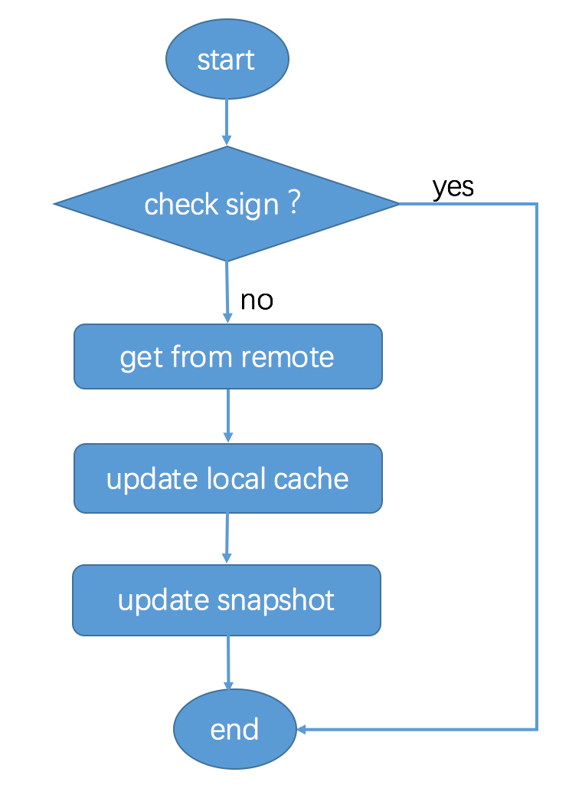
主要分为下面几个步骤：
- 服务消费者从注册中心获取了服务的信息后，就订阅了服务的变化，会在本地保留 Cluster 的 sign 值。
- 服务消费者每隔一段时间，调用 getSign() 函数，从注册中心获取服务端该 Cluster 的 sign 值，并与本地保留的 sign 值做对比，如果不一致，就从服务端拉取新的节点信息，并更新 localcache 和 snapshot。
这里小结一下，以上就是服务注册和反注册、服务查询和服务订阅变更的基本流程。除此之外，我再给你讲下我在实际项目实践中，实现服务注册与发现时遇到的几个问题，希望能给你帮助。
注册与发现的几个问题
1. 多注册中心
理论上对于一个服务消费者来说，同一个注册中心交互是最简单的。但是不可避免的是，服务消费者可能订阅了多个服务，多个服务可能是由多个业务部门提供的，而且每个业务部门都有自己的注册中心，提供的服务只在自己的注册中心里有记录。这样的话，就要求服务消费者要具备在启动时，能够从多个注册中心订阅服务的能力。
根据我的经验，还有一种情况是，一个服务提供者提供了某个服务，可能作为静态服务对外提供，有可能又作为动态服务对外提供，这两个服务部署在不同的注册中心，所以要求服务提供者在启动的时候，要能够同时向多个注册中心注册服务。
也就是说，对于服务消费者来说，要能够同时从多个注册中心订阅服务；对于服务提供者来说，要能够同时向多个注册中心注册服务。
2. 并行订阅服务
通常一个服务消费者订阅了不止一个服务，在我经历的一个项目中，一个服务消费者订阅了几十个不同的服务，每个服务都有自己的方法列表以及节点列表。服务消费者在服务启动时，会加载订阅的服务配置，调用注册中心的订阅接口，获取每个服务的节点列表并初始化连接。
最开始我们采用了串行订阅的方式，每订阅一个服务，服务消费者调用一次注册中心的订阅接口，获取这个服务的节点列表并初始化连接，总共需要执行几十次这样的过程。在某些服务节点的初始化连接过程中，出现连接超时的情况，后续所有的服务节点的初始化连接都需要等待它完成，导致服务消费者启动变慢，最后耗费了将近五分钟时间来完成所有服务节点的初始化连接过程。
后来我们改成了并行订阅的方式，每订阅一个服务就单独用一个线程来处理，这样的话即使遇到个别服务节点连接超时，其他服务节点的初始化连接也不受影响，最慢也就是这个服务节点的初始化连接耗费的时间，最终所有服务节点的初始化连接耗时控制在了 30 秒以内。
3. 批量反注册服务
通常一个服务提供者节点提供不止一个服务，所以注册和反注册都需要多次调用注册中心。在与注册中心的多次交互中，可能由于网络抖动、注册中心集群异常等原因，导致个别调用失败。对于注册中心来说，偶发的注册调用失败对服务调用基本没有影响，其结果顶多就是某一个服务少了一个可用的节点。但偶发的反注册调用失败会导致不可用的节点残留在注册中心中，变成“僵尸节点”，但服务消费者端还会把它当成“活节点”，继续发起调用，最终导致调用失败。
以前我们的业务中经常遇到这个问题，需要定时去清理注册中心中的“僵尸节点”。后来我们通过优化反注册逻辑，对于下线机器、节点销毁的场景，通过调用注册中心提供的批量反注册接口，一次调用就可以把该节点上提供的所有服务同时反注册掉，从而避免了“僵尸节点”的出现。
4. 服务变更信息增量更新
服务消费者端启动时，除了会查询订阅服务的可用节点列表做初始化连接，还会订阅服务的变更，每隔一段时间从注册中心获取最新的服务节点信息标记 sign，并与本地保存的 sign 值作比对，如果不一样，就会调用注册中心获取最新的服务节点信息。
一般情况下，按照这个过程是没问题的，但是在网络频繁抖动时，服务提供者上报给注册中心的心跳可能会一会儿失败一会儿成功，这时候注册中心就会频繁更新服务的可用节点信息，导致服务消费者频繁从注册中心拉取最新的服务可用节点信息，严重时可能产生网络风暴，导致注册中心带宽被打满。
为了减少服务消费者从注册中心中拉取的服务可用节点信息的数据量，这个时候可以通过增量更新的方式，注册中心只返回变化的那部分节点信息，尤其在只有少数节点信息变更时，此举可以大大减少服务消费者从注册中心拉取的数据量，从而最大程度避免产生网络风暴。
总结
今天我给你讲解了在注册中心实际使用过程中，服务注册、服务反注册、服务订阅和服务变更的实现方式，并列举了几个我在服务注册与发现的过程中遇到的典型问题。
而针对这些异常情况，我都给出了对应的解决方案，这些方案都是经过实际业务验证的，对于大部分中小团队在应用场景面临的问题，应该足以应对。
思考题
你的团队在使用注册中心时，是否有遇到过上面这些问题呢？我给出的解决方案是否可以解决你们的问题呢？
欢迎你在留言区写下自己的思考，与我一起讨论。 .
13 开源服务注册中心如何选型？
上一期我给你讲了服务注册中心的落地实践，以及在实际应用中可能会遇到的问题和对应的解决方案。关于注册中心，如果你的团队有足够的人才和技术储备，可以选择自己研发注册中心。但对于大多数中小规模团队来说，我的建议是最好使用业界开源的、应用比较成熟的注册中心解决方案，把精力投入到业务架构的改造中，不要自己造轮子。
当下主流的服务注册与发现的解决方案，主要有两种：
- 应用内注册与发现：注册中心提供服务端和客户端的 SDK，业务应用通过引入注册中心提供的 SDK，通过 SDK 与注册中心交互，来实现服务的注册和发现。
- 应用外注册与发现：业务应用本身不需要通过 SDK 与注册中心打交道，而是通过其他方式与注册中心交互，间接完成服务注册与发现。
下面我会用两个业界使用比较成熟的注册中心开源实现，来讲解下应用内和应用外两种解决方案的不同之处。
两种典型的注册中心实现
1. 应用内
采用应用内注册与发现的方式，最典型的案例要属 Netflix 开源的 Eureka，官方架构图如下。
 （https://github.com/Netflix/eureka/raw/master/images/eureka_architecture.png）
（https://github.com/Netflix/eureka/raw/master/images/eureka_architecture.png）
{kind=link}
对着这张图，我来介绍下 Eureka 的架构，它主要由三个重要的组件组成：
- Eureka Server：注册中心的服务端，实现了服务信息注册、存储以及查询等功能。
- 服务端的 Eureka Client：集成在服务端的注册中心 SDK，服务提供者通过调用 SDK，实现服务注册、反注册等功能。
- 客户端的 Eureka Client：集成在客户端的注册中心 SDK，服务消费者通过调用 SDK，实现服务订阅、服务更新等功能。
2. 应用外
采用应用外方式实现服务注册和发现，最典型的案例是开源注册中心 Consul，它的架构图如下。
 （https://technologyconversations.files.wordpress.com/2015/09/etcd-registrator-confd2.png）
（https://technologyconversations.files.wordpress.com/2015/09/etcd-registrator-confd2.png）
{kind=link}
通过这张架构图，可以看出来使用 Consul 实现应用外服务注册和发现主要依靠三个重要的组件：
- Consul：注册中心的服务端，实现服务注册信息的存储，并提供注册和发现服务。
- Registrator：一个开源的第三方服务管理器项目，它通过监听服务部署的 Docker 实例是否存活，来负责服务提供者的注册和销毁。
- Consul Template：定时从注册中心服务端获取最新的服务提供者节点列表并刷新 LB 配置（比如 Nginx 的 upstream），这样服务消费者就通过访问 Nginx 就可以获取最新的服务提供者信息。
对比小结一下，这两种解决方案的不同之处在于应用场景，应用内的解决方案一般适用于服务提供者和服务消费者同属于一个技术体系；应用外的解决方案一般适合服务提供者和服务消费者采用了不同技术体系的业务场景，比如服务提供者提供的是 C++ 服务，而服务消费者是一个 Java 应用，这时候采用应用外的解决方案就不依赖于具体一个技术体系。同时，对于容器化后的云应用来说，一般不适合采用应用内 SDK 的解决方案，因为这样会侵入业务，而应用外的解决方案正好能够解决这个问题。
注册中心选型要考虑的两个问题
在选择注册中心解决方案的时候，除了要考虑是采用应用内注册还是应用外注册的方式以外，还有两个最值得关注的问题，一个是高可用性，一个是数据一致性，下面我来给你详细解释下为什么。
1. 高可用性
注册中心作为服务提供者和服务消费者之间沟通的纽带，它的高可用性十分重要。试想，如果注册中心不可用了，那么服务提供者就无法对外暴露自己的服务，而服务消费者也无法知道自己想要调用的服务的具体地址，后果将不堪设想。
根据我过往的实践经验，实现高可用性的方法主要有两种：
- 集群部署，顾名思义就是通过部署多个实例组成集群来保证高可用性，这样的话即使有部分机器宕机，将访问迁移到正常的机器上就可以保证服务的正常访问。
- 多 IDC 部署，就是部署在不止一个机房，这样能保证即使一个机房因为断电或者光缆被挖断等不可抗力因素不可用时，仍然可以通过把请求迁移到其他机房来保证服务的正常访问。
我们以 Consul 为例，来看看它是如何通过这两种方法来保证注册中心的高可用性。
从下面的官方架构图中你可以看到，一方面，在每个数据中心（DATACENTER）内都有多个注册中心 Server 节点可供访问；另一方面还可以部署在多个数据中心来保证多机房高可用性。
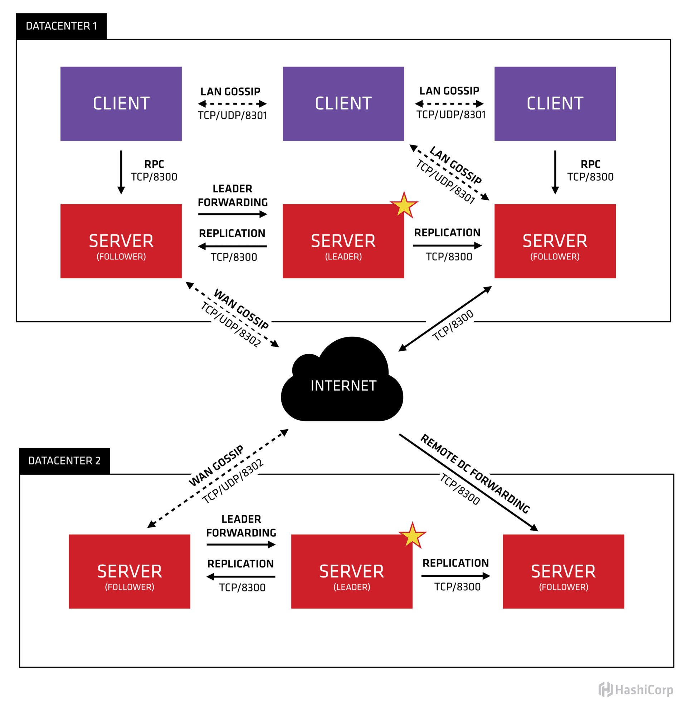（https://www.consul.io/assets/images/consul-arch-420ce04a.png）
{kind=link}
2. 数据一致性
为了保证注册中心的高可用性，注册中心的部署往往都采用集群部署，并且还通常部署在不止一个数据中心，这样的话就会引出另一个问题，多个数据中心之间如何保证数据一致？如何确保访问数据中心中任何一台机器都能得到正确的数据？
这里就涉及分布式系统中著名的 CAP 理论，即同时满足一致性、可用性、分区容错性这三者是不可能的，其中 C（Consistency）代表一致性，A（Availability）代表可用性，P（Partition Tolerance）代表分区容错性。
为什么说 CAP 三者不能被同时满足的呢？
你可以想象在一个分布式系统里面，包含了多个节点，节点之间通过网络连通在一起。正常情况下，通过网络，从一个节点可以访问任何别的节点上的数据。
但是有可能出现网络故障，导致整个网络被分成了互不连通的区域，这就叫作分区。一旦出现分区，那么一个区域内的节点就没法访问其他节点上的数据了，最好的办法是把数据复制到其他区域内的节点，这样即使出现分区，也能访问任意区域内节点上的数据，这就是分区容错性。
但是把数据复制到多个节点就可能出现数据不一致的情况，这就是一致性。要保证一致，就必须等待所有节点上的数据都更新成功才可用，这就是可用性。
总的来说，就是数据节点越多，分区容错性越高，但数据一致性越难保证。为了保证数据一致性，又会带来可用性的问题。
而注册中心一般采用分布式集群部署，也面临着 CAP 的问题，根据 CAP 不能同时满足，所以不同的注册中心解决方案选择的方向也就不同，大致可分为两种。
- CP 型注册中心，牺牲可用性来保证数据强一致性，最典型的例子就是 ZooKeeper，etcd，Consul 了。ZooKeeper 集群内只有一个 Leader，而且在 Leader 无法使用的时候通过 Paxos 算法选举出一个新的 Leader。这个 Leader 的目的就是保证写信息的时候只向这个 Leader 写入，Leader 会同步信息到 Followers，这个过程就可以保证数据的强一致性。但如果多个 ZooKeeper 之间网络出现问题，造成出现多个 Leader，发生脑裂的话，注册中心就不可用了。而 etcd 和 Consul 集群内都是通过 raft 协议来保证强一致性，如果出现脑裂的话， 注册中心也不可用。
- AP 型注册中心，牺牲一致性来保证可用性，最典型的例子就是 Eureka 了。对比下 Zookeeper，Eureka 不用选举一个 Leader，每个 Eureka 服务器单独保存服务注册地址，因此有可能出现数据信息不一致的情况。但是当网络出现问题的时候，每台服务器都可以完成独立的服务。
而对于注册中心来说，最主要的功能是服务的注册和发现，在网络出现问题的时候，可用性的需求要远远高于数据一致性。即使因为数据不一致，注册中心内引入了不可用的服务节点，也可以通过其他措施来避免，比如客户端的快速失败机制等，只要实现最终一致性，对于注册中心来说就足够了。因此，选择 AP 型注册中心，一般更加合适。
总结
总的来说，在选择开源注册中心解决方案的时候，要看业务的具体场景。
- 如果你的业务体系都采用 Java 语言的话，Netflix 开源的 Eureka 是一个不错的选择，并且它作为服务注册与发现解决方案，能够最大程度的保证可用性，即使出现了网络问题导致不同节点间数据不一致，你仍然能够访问 Eureka 获取数据。
- 如果你的业务体系语言比较复杂，Eureka 也提供了 Sidecar 的解决方案；也可以考虑使用 Consul，它支持了多种语言接入，包括 Go、Python、PHP、Scala、Java，Erlang、Ruby、Node.js、.NET、Perl 等。
- 如果你的业务已经是云原生的应用，可以考虑使用 Consul，搭配 Registrator 和 Consul Template 来实现应用外的服务注册与发现。
思考题
针对你的业务场景，如果要选择一种开源注册中心实现的话，你觉得哪种方案更适合？
欢迎你在留言区写下自己的思考，与我一起讨论。 %
14 开源RPC框架如何选型？
专栏第 6 期我给你讲解了 RPC 远程调用的原理，简单回顾一下一个完整的 RPC 框架主要有三部分组成：通信框架、通信协议、序列化和反序列化格式。根据我的经验，想要开发一个完整的 RPC 框架，并且应用到线上生产环境，至少需要投入三个人力半年以上的时间。这对于大部分中小团队来说，人力成本和时间成本都是不可接受的，所以我建议还是选择开源的 RPC 框架比较合适。
那么业界应用比较广泛的开源 RPC 框架有哪些呢？
简单划分的话，主要分为两类：一类是跟某种特定语言平台绑定的，另一类是与语言无关即跨语言平台的。
跟语言平台绑定的开源 RPC 框架主要有下面几种。
- Dubbo：国内最早开源的 RPC 框架，由阿里巴巴公司开发并于 2011 年末对外开源，仅支持 Java 语言。
- Motan：微博内部使用的 RPC 框架，于 2016 年对外开源，仅支持 Java 语言。
- Tars：腾讯内部使用的 RPC 框架，于 2017 年对外开源，仅支持 C++ 语言。
- Spring Cloud：国外 Pivotal 公司 2014 年对外开源的 RPC 框架，仅支持 Java 语言，最近几年生态发展得比较好，是比较火的 RPC 框架。
而跨语言平台的开源 RPC 框架主要有以下几种。
- gRPC：Google 于 2015 年对外开源的跨语言 RPC 框架，支持常用的 C++、Java、Python、Go、Ruby、PHP、Android Java、Objective-C 等多种语言。
- Thrift：最初是由 Facebook 开发的内部系统跨语言的 RPC 框架，2007 年贡献给了 Apache 基金，成为 Apache 开源项目之一，支持常用的 C++、Java、PHP、Python、Ruby、Erlang 等多种语言。
所以很明显，如果你的业务场景仅仅局限于一种语言的话，可以选择跟语言绑定的 RPC 框架中的一种；如果涉及多个语言平台之间的相互调用，就应该选择跨语言平台的 RPC 框架。
针对每一种 RPC 框架，它们具体有何区别？该如何选择呢？接下来，我就从每个框架的实现角度来具体给你讲解。当你知道了他们的具体实现，也就能知道他们的优缺点以及适用场景了。
限定语言平台的开源 RPC 框架
1. Dubbo
先来聊聊 Dubbo，Dubbo 可以说是国内开源最早的 RPC 框架了，目前只支持 Java 语言，它的架构可以用下面这张图展示。
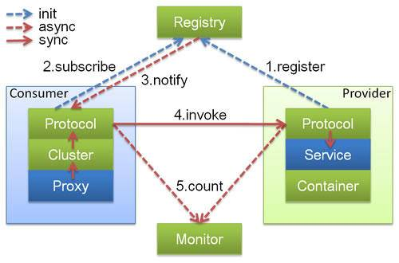（图片来源：https://dubbo.incubator.apache.org/docs/zh-cn/dev/sources/images/dubbo-relation.jpg）
{kind=link}
从图中你能看到，Dubbo 的架构主要包含四个角色，其中 Consumer 是服务消费者，Provider 是服务提供者，Registry 是注册中心，Monitor 是监控系统。
具体的交互流程是 Consumer 一端通过注册中心获取到 Provider 节点后，通过 Dubbo 的客户端 SDK 与 Provider 建立连接，并发起调用。Provider 一端通过 Dubbo 的服务端 SDK 接收到 Consumer 的请求，处理后再把结果返回给 Consumer。
可以看出服务消费者和服务提供者都需要引入 Dubbo 的 SDK 才来完成 RPC 调用，因为 Dubbo 本身是采用 Java 语言实现的，所以要求服务消费者和服务提供者也都必须采用 Java 语言实现才可以应用。
我们再来看下 Dubbo 的调用框架是如何实现的。
- 通信框架方面，Dubbo 默认采用了 Netty 作为通信框架。
- 通信协议方面，Dubbo 除了支持私有的 Dubbo 协议外，还支持 RMI 协议、Hession 协议、HTTP 协议、Thrift 协议等。
- 序列化格式方面，Dubbo 支持多种序列化格式，比如 Dubbo、Hession、JSON、Kryo、FST 等。
2. Motan
Motan 是国内另外一个比较有名的开源的 RPC 框架，同样也只支持 Java 语言实现，它的架构可以用下面这张图描述。
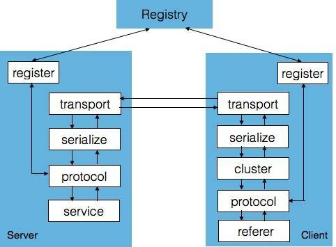（图片来源：https://github.com/weibocom/motan/wiki/media/14612352579675.jpg）
{kind=link}
Motan 与 Dubbo 的架构类似，都需要在 Client 端（服务消费者）和 Server 端（服务提供者）引入 SDK，其中 Motan 框架主要包含下面几个功能模块。
- register：用来和注册中心交互，包括注册服务、订阅服务、服务变更通知、服务心跳发送等功能。Server 端会在系统初始化时通过 register 模块注册服务，Client 端会在系统初始化时通过 register 模块订阅到具体提供服务的 Server 列表，当 Server 列表发生变更时也由 register 模块通知 Client。
- protocol：用来进行 RPC 服务的描述和 RPC 服务的配置管理，这一层还可以添加不同功能的 filter 用来完成统计、并发限制等功能。
- serialize：将 RPC 请求中的参数、结果等对象进行序列化与反序列化，即进行对象与字节流的互相转换，默认使用对 Java 更友好的 Hessian 2 进行序列化。
- transport：用来进行远程通信，默认使用 Netty NIO 的 TCP 长链接方式。
- cluster：Client 端使用的模块，cluster 是一组可用的 Server 在逻辑上的封装，包含若干可以提供 RPC 服务的 Server，实际请求时会根据不同的高可用与负载均衡策略选择一个可用的 Server 发起远程调用。
3. Tars
Tars 是腾讯根据内部多年使用微服务架构的实践，总结而成的开源项目，仅支持 C++ 语言，它的架构图如下。
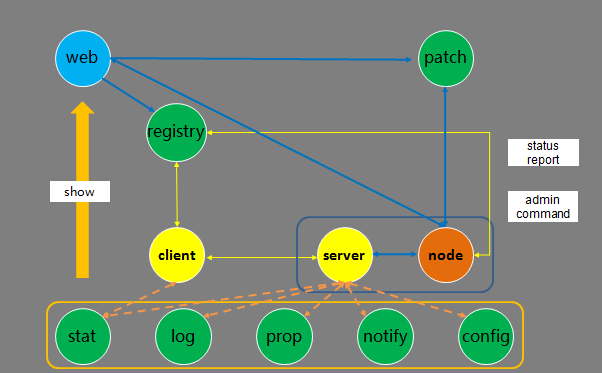（图片来源：https://github.com/TarsCloud/Tars/blob/master/docs/images/tars_jiaohu.png）
{kind=link}
Tars 的架构交互主要包括以下几个流程：
- 服务发布流程：在 web 系统上传 server 的发布包到 patch，上传成功后，在 web 上提交发布 server 请求，由 registry 服务传达到 node，然后 node 拉取 server 的发布包到本地，拉起 server 服务。
- 管理命令流程：web 系统上的可以提交管理 server 服务命令请求，由 registry 服务传达到 node 服务，然后由 node 向 server 发送管理命令。
- 心跳上报流程：server 服务运行后，会定期上报心跳到 node，node 然后把服务心跳信息上报到 registry 服务，由 registry 进行统一管理。
- 信息上报流程：server 服务运行后，会定期上报统计信息到 stat，打印远程日志到 log，定期上报属性信息到 prop、上报异常信息到 notify、从 config 拉取服务配置信息。
- client 访问 server 流程：client 可以通过 server 的对象名 Obj 间接访问 server，client 会从 registry 上拉取 server 的路由信息（如 IP、Port 信息），然后根据具体的业务特性（同步或者异步，TCP 或者 UDP 方式）访问 server（当然 client 也可以通过 IP/Port 直接访问 server）。
4. Spring Cloud
Spring Cloud 是为了解决微服务架构中服务治理而提供的一系列功能的开发框架，它是完全基于 Spring Boot 进行开发的，Spring Cloud 利用 Spring Boot 特性整合了开源行业中优秀的组件，整体对外提供了一套在微服务架构中服务治理的解决方案。因为 Spring Boot 是用 Java 语言编写的，所以目前 Spring Cloud 也只支持 Java 语言平台，它的架构图可以用下面这张图来描述。
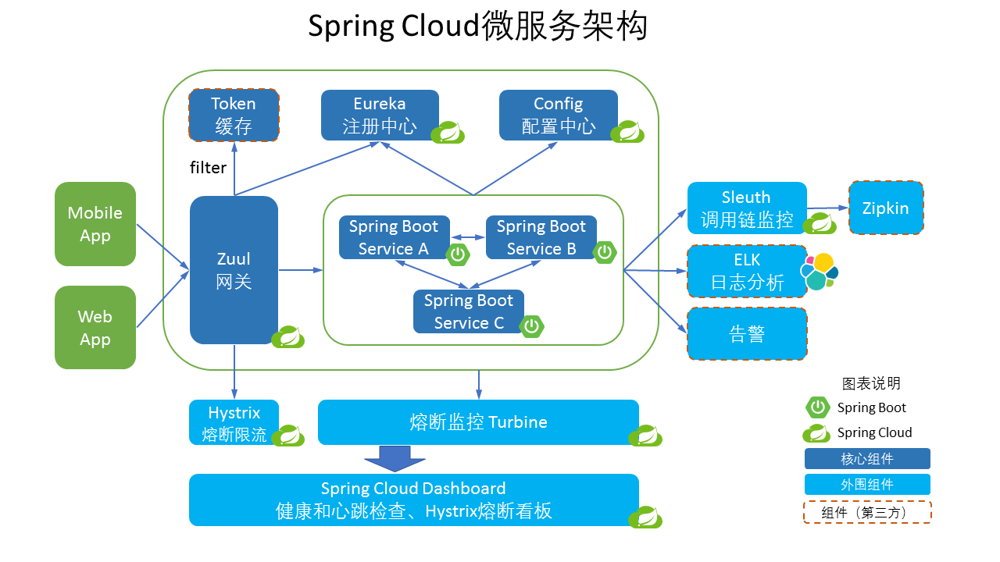（图片来源：http://www.hyhblog.cn/wp-content/uploads/2018/07/Arch-Design-Spring-Cloud-1024x576.png）
{kind=link}
由此可见，Spring Cloud 微服务架构是由多个组件一起组成的，各个组件的交互流程如下。
- 请求统一通过 API 网关 Zuul 来访问内部服务，先经过 Token 进行安全认证。
- 通过安全认证后，网关 Zuul 从注册中心 Eureka 获取可用服务节点列表。
- 从可用服务节点中选取一个可用节点，然后把请求分发到这个节点。
- 整个请求过程中，Hystrix 组件负责处理服务超时熔断，Turbine 组件负责监控服务间的调用和熔断相关指标，Sleuth 组件负责调用链监控，ELK 负责日志分析。
5. 对比选型
介绍完这 4 种限定语言的开源 RPC 框架后，我们该如何选择呢？
很显然，如果你的语言平台是 C++，那么只能选择 Tars；而如果是 Java 的话，可以选择 Dubbo、Motan 或者 Spring Cloud。这时你又要问了，它们三个又该如何抉择呢？
仔细分析，可以看出 Spring Cloud 不仅提供了基本的 RPC 框架功能，还提供了服务注册组件、配置中心组件、负载均衡组件、断路器组件、分布式消息追踪组件等一系列组件，也难怪被技术圈的人称之为“Spring Cloud 全家桶”。如果你不想自己实现以上这些功能，那么 Spring Cloud 基本可以满足你的全部需求。而 Dubbo、Motan 基本上只提供了最基础的 RPC 框架的功能，其他微服务组件都需要自己去实现。
不过由于 Spring Cloud 的 RPC 通信采用了 HTTP 协议，相比 Dubbo 和 Motan 所采用的私有协议来说，在高并发的通信场景下，性能相对要差一些，所以对性能有苛刻要求的情况下，可以考虑 Dubbo 和 Motan。
跨语言平台的开源 RPC 框架
1. gRPC
先来看下 gRPC，它的原理是通过 IDL（Interface Definition Language）文件定义服务接口的参数和返回值类型，然后通过代码生成程序生成服务端和客户端的具体实现代码，这样在 gRPC 里，客户端应用可以像调用本地对象一样调用另一台服务器上对应的方法。
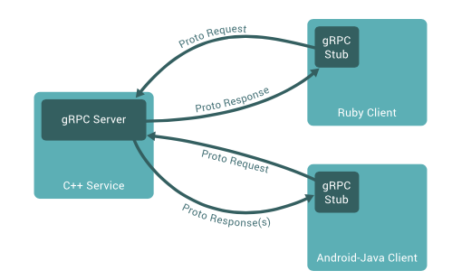（图片来源：https://grpc.io/img/landing-2.svg）
{kind=link}
它的主要特性包括三个方面。
- 通信协议采用了 HTTP/2，因为 HTTP/2 提供了连接复用、双向流、服务器推送、请求优先级、首部压缩等机制，所以在通信过程中可以节省带宽、降低 TCP 连接次数、节省 CPU，尤其对于移动端应用来说，可以帮助延长电池寿命。
- IDL 使用了ProtoBuf，ProtoBuf 是由 Google 开发的一种数据序列化协议，它的压缩和传输效率极高，语法也简单，所以被广泛应用在数据存储和通信协议上。
- 多语言支持，能够基于多种语言自动生成对应语言的客户端和服务端的代码。
2. Thrift
再来看下 Thrift，Thrift 是一种轻量级的跨语言 RPC 通信方案，支持多达 25 种编程语言。为了支持多种语言，跟 gRPC 一样，Thrift 也有一套自己的接口定义语言 IDL，可以通过代码生成器，生成各种编程语言的 Client 端和 Server 端的 SDK 代码，这样就保证了不同语言之间可以相互通信。它的架构图可以用下图来描述。
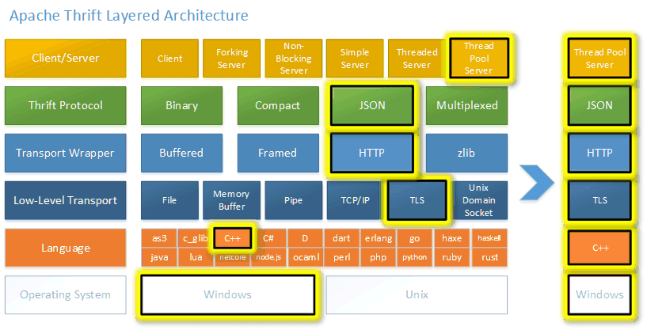（图片来源：https://github.com/apache/thrift/raw/master/doc/images/thrift-layers.png）
{kind=link}
从这张图上可以看出 Thrift RPC 框架的特性。
- 支持多种序列化格式：如 Binary、Compact、JSON、Multiplexed 等。
- 支持多种通信方式：如 Socket、Framed、File、Memory、zlib 等。
- 服务端支持多种处理方式：如 Simple 、Thread Pool、Non-Blocking 等。
3. 对比选型
那么涉及跨语言的服务调用场景，到底该选择 gRPC 还是 Thrift 呢？
从成熟度上来讲，Thrift 因为诞生的时间要早于 gRPC，所以使用的范围要高于 gRPC，在 HBase、Hadoop、Scribe、Cassandra 等许多开源组件中都得到了广泛地应用。而且 Thrift 支持多达 25 种语言，这要比 gRPC 支持的语言更多，所以如果遇到 gRPC 不支持的语言场景下，选择 Thrift 更合适。
但 gRPC 作为后起之秀，因为采用了 HTTP/2 作为通信协议、ProtoBuf 作为数据序列化格式，在移动端设备的应用以及对传输带宽比较敏感的场景下具有很大的优势，而且开发文档丰富，根据 ProtoBuf 文件生成的代码要比 Thrift 更简洁一些，从使用难易程度上更占优势，所以如果使用的语言平台 gRPC 支持的话，建议还是采用 gRPC 比较好。
总结
以上就是我对几种使用最广泛的开源 RPC 框架的选型建议，也是基于它们目前现状所作出的判断，从长远来看，支持多语言是 RPC 框架未来的发展趋势。正是基于此判断，各个 RPC 框架都提供了 Sidecar 组件来支持多语言平台之间的 RPC 调用。
- Dubbo 在去年年底又重启了维护，并且宣称要引入 Sidecar 组件来构建Dubbo Mesh提供多语言支持。
- Motan 也在去年对外开源了其内部的 Sidecar 组件：Motan-go，目前支持 PHP、Java 语言之间的相互调用。
- Spring Cloud 也提供了 Sidecar 组件spring-cloud-netflix-sideca，可以让其他语言也可以使用 Spring Cloud 的组件。
所以未来语言不会成为使用上面这几种 RPC 框架的约束，而 gRPC 和 Thrift 虽然支持跨语言的 RPC 调用，但是因为它们只提供了最基本的 RPC 框架功能，缺乏一系列配套的服务化组件和服务治理功能的支撑，所以使用它们作为跨语言调用的 RPC 框架，就需要自己考虑注册中心、熔断、限流、监控、分布式追踪等功能的实现，不过好在大多数功能都有开源实现，可以直接采用。
思考题
同样是支持跨语言的 RPC 调用，你觉得 gRPC 这类的跨语言服务框架和 Motan-go 这类的 Sidecar 方案有什么区别？在使用过程中都需要注意什么？
欢迎你在留言区写下自己的思考，与我一起讨论。 1
15 如何搭建一个可靠的监控系统？
专栏第 7 期我给你讲解了监控系统的实现原理，先来简单回顾一下，一个监控系统的组成主要涉及四个环节：数据收集、数据传输、数据处理和数据展示。不同的监控系统实现方案，在这四个环节所使用的技术方案不同，适合的业务场景也不一样。
目前，比较流行的开源监控系统实现方案主要有两种：以ELK为代表的集中式日志解决方案，以及Graphite、TICK和Prometheus等为代表的时序数据库解决方案。接下来我就以这几个常见的监控系统实现方案，谈谈它们的实现原理，分别适用于什么场景，以及具体该如何做技术选型。
ELK
ELK 是 Elasticsearch、Logstash、Kibana 三个开源软件产品首字母的缩写，它们三个通常配合使用，所以被称为 ELK Stack，它的架构可以用下面的图片来描述。
 （图片来源：https://cdn-images-1.medium.com/max/1600/1*mwSvtVy_qGz0nTjaYbvwpw.png）
（图片来源：https://cdn-images-1.medium.com/max/1600/1*mwSvtVy_qGz0nTjaYbvwpw.png）
{kind=link}
这三个软件的功能也各不相同。
- Logstash 负责数据收集和传输，它支持动态地从各种数据源收集数据，并对数据进行过滤、分析、格式化等，然后存储到指定的位置。
- Elasticsearch 负责数据处理，它是一个开源分布式搜索和分析引擎，具有可伸缩、高可靠和易管理等特点，基于 Apache Lucene 构建，能对大容量的数据进行接近实时的存储、搜索和分析操作，通常被用作基础搜索引擎。
- Kibana 负责数据展示，也是一个开源和免费的工具，通常和 Elasticsearch 搭配使用，对其中的数据进行搜索、分析并且以图表的方式展示。
这种架构因为需要在各个服务器上部署 Logstash 来从不同的数据源收集数据，所以比较消耗 CPU 和内存资源，容易造成服务器性能下降，因此后来又在 Elasticsearch、Logstash、Kibana 之外引入了 Beats 作为数据收集器。相比于 Logstash，Beats 所占系统的 CPU 和内存几乎可以忽略不计，可以安装在每台服务器上做轻量型代理，从成百上千或成千上万台机器向 Logstash 或者直接向 Elasticsearch 发送数据。
其中，Beats 支持多种数据源，主要包括：
- Packetbeat，用来收集网络流量数据。
- Topbeat，用来收集系统、进程的 CPU 和内存使用情况等数据。
- Filebeat，用来收集文件数据。
- Winlogbeat，用来收集 Windows 事件日志收据。
Beats 将收集到的数据发送到 Logstash，经过 Logstash 解析、过滤后，再将数据发送到 Elasticsearch，最后由 Kibana 展示，架构就变成下面这张图里描述的了。
 （图片来源：https://logz.io/wp-content/uploads/2018/08/image21-1024x328.png）
（图片来源：https://logz.io/wp-content/uploads/2018/08/image21-1024x328.png）
{kind=link}
Graphite
Graphite 的组成主要包括三部分：Carbon、Whisper、Graphite-Web，它的架构可以用下图来描述。
- Carbon：主要作用是接收被监控节点的连接，收集各个指标的数据，将这些数据写入 carbon-cache 并最终持久化到 Whisper 存储文件中去。
- Whisper：一个简单的时序数据库，主要作用是存储时间序列数据，可以按照不同的时间粒度来存储数据，比如 1 分钟 1 个点、5 分钟 1 个点、15 分钟 1 个点三个精度来存储监控数据。
- Graphite-Web：一个 Web App，其主要功能绘制报表与展示，即数据展示。为了保证 Graphite-Web 能及时绘制出图形，Carbon 在将数据写入 Whisper 存储的同时，会在 carbon-cache 中同时写入一份数据，Graphite-Web 会先查询 carbon-cache，如果没有再查询 Whisper 存储。
 （图片来源：https://graphiteapp.org/img/architecture_diagram.png）
（图片来源：https://graphiteapp.org/img/architecture_diagram.png）
{kind=link}
也就是说 Carbon 负责数据处理，Whisper 负责数据存储，Graphite-Web 负责数据展示，可见 Graphite 自身并不包含数据采集组件，但可以接入StatsD等开源数据采集组件来采集数据，再传送给 Carbon。
其中 Carbon 对写入的数据格式有一定的要求，比如：
servers.www01.cpuUsage 42 1286269200
products.snake-oil.salesPerMinute 123 1286269200
[one minute passes]
servers.www01.cpuUsageUser 44 1286269260
products.snake-oil.salesPerMinute 119 1286269260
其中“servers.www01.cpuUsage 42 1286269200”是“key” + 空格分隔符 + “value + 时间戳”的数据格式，“servers.www01.cpuUsage”是以“.”分割的 key，代表具体的路径信息，“42”是具体的值，“1286269200”是当前的 Unix 时间戳。
Graphite-Web 对外提供了 HTTP API 可以查询某个 key 的数据以绘图展示，查询方式如下。
http://graphite.example.com/render?target=servers.www01.cpuUsage&
width=500&height=300&from=-24h
这个 HTTP 请求意思是查询 key“servers.www01.cpuUsage”在过去 24 小时的数据，并且要求返回 500*300 大小的数据图。
除此之外，Graphite-Web 还支持丰富的函数，比如：
target=sumSeries(products.*.salesPerMinute)
代表了查询匹配规则“products.*.salesPerMinute”的所有 key 的数据之和。
TICK
TICK 是 Telegraf、InfluxDB、Chronograf、Kapacitor 四个软件首字母的缩写，是由 InfluxData 开发的一套开源监控工具栈，因此也叫作 TICK Stack，它的架构可以看用下面这张图来描述。
 （图片来源：https://2bjee8bvp8y263sjpl3xui1a-wpengine.netdna-ssl.com/wp-content/uploads/Tick-Stack-Complete.png）
（图片来源：https://2bjee8bvp8y263sjpl3xui1a-wpengine.netdna-ssl.com/wp-content/uploads/Tick-Stack-Complete.png）
{kind=link}
从这张图可以看出，其中 Telegraf 负责数据收集，InfluxDB 负责数据存储，Chronograf 负责数据展示，Kapacitor 负责数据告警。
这里面，InfluxDB 对写入的数据格式要求如下。
<measurement>[,<tag-key>=<tag-value>...] <field-key>=<field-value>[,<field2-key>=<field2-value>...] [unix-nano-timestamp]
下面我用一个具体示例来说明它的格式。
cpu,host=serverA,region=us_west value=0.64 1434067467100293230
其中，“cpu,host=serverA,region=us_west value=0.64 1434067467100293230”代表了 host 为 serverA、region 为 us_west 的服务器 CPU 的值是 0.64，时间戳是 1434067467100293230，时间精确到 nano。
Prometheus
还有一种比较有名的时间序数据库解决方案 Prometheus，它是一套开源的系统监控报警框架，受 Google 的集群监控系统 Borgmon 启发，由工作在 SoundCloud 的 Google 前员工在 2012 年创建，后来作为社区开源项目进行开发，并于 2015 年正式发布，2016 年正式加入 CNCF（Cloud Native Computing Foundation），成为受欢迎程度仅次于 Kubernetes 的项目，它的架构可以用下图来描述。
 （图片来源：https://prometheus.io/assets/architecture.png）
（图片来源：https://prometheus.io/assets/architecture.png）
{kind=link}
从这张图可以看出，Prometheus 主要包含下面几个组件：
- Prometheus Server：用于拉取 metrics 信息并将数据存储在时间序列数据库。
- Jobs/exporters：用于暴露已有的第三方服务的 metrics 给 Prometheus Server，比如 StatsD、Graphite 等，负责数据收集。
- Pushgateway：主要用于短期 jobs，由于这类 jobs 存在时间短，可能在 Prometheus Server 来拉取 metrics 信息之前就消失了，所以这类的 jobs 可以直接向 Prometheus Server 推送它们的 metrics 信息。
- Alertmanager：用于数据报警。
- Prometheus web UI：负责数据展示。
它的工作流程大致是：
- Prometheus Server 定期从配置好的 jobs 或者 exporters 中拉取 metrics 信息，或者接收来自 Pushgateway 发过来的 metrics 信息。
- Prometheus Server 把收集到的 metrics 信息存储到时间序列数据库中，并运行已经定义好的 alert.rules，向 Alertmanager 推送警报。
- Alertmanager 根据配置文件，对接收的警报进行处理，发出告警。
- 通过 Prometheus web UI 进行可视化展示。
Prometheus 存储数据也是用的时间序列数据库，格式如下。
<metric name>{<label name>=<label value>, …}
比如下面这段代码代表了位于集群 cluster 1 上，节点 IP 为 1.1.1.1，端口为 80，访问路径为“/a”的 http 请求的总数为 100。
http_requests_total{instance="1.1.1.1:80",job="cluster1",location="/a"} 100
讲到这里，四种监控系统的解决方案都已经介绍完了，接下来我们对比一下这四种方案，看看如何选型。
选型对比
我们从监控系统的四个环节来分别对比。
1. 数据收集
ELK 是通过在每台服务器上部署 Beats 代理来采集数据；Graphite 本身没有收据采集组件，需要配合使用开源收据采集组件，比如 StatsD；TICK 使用了 Telegraf 作为数据采集组件；Prometheus 通过 jobs/exporters 组件来获取 StatsD 等采集过来的 metrics 信息。
2. 数据传输
ELK 是 Beats 采集的数据传输给 Logstash，经过 Logstash 清洗后再传输给 Elasticsearch；Graphite 是通过第三方采集组件采集的数据，传输给 Carbon；TICK 是 Telegraf 采集的数据，传输给 InfluxDB；而 Prometheus 是 Prometheus Server 隔一段时间定期去从 jobs/exporters 拉取数据。可见前三种都是采用“推数据”的方式，而 Prometheus 是采取拉数据的方式，因此 Prometheus 的解决方案对服务端的侵入最小，不需要在服务端部署数据采集代理。
3. 数据处理
ELK 可以对日志的任意字段索引，适合多维度的数据查询，在存储时间序列数据方面与时间序列数据库相比会有额外的性能和存储开销。除此之外，时间序列数据库的几种解决方案都支持多种功能的数据查询处理，功能也更强大。
- Graphite 通过 Graphite-Web 支持正则表达式匹配、sumSeries 求和、alias 给监控项重新命名等函数功能，同时还支持这些功能的组合，比如下面这个表达式的意思是，要查询所有匹配路径“stats.open.profile.*.API._comments_flow”的监控项之和，并且把监控项重命名为 Total QPS。
alias(sumSeries(stats.openapi.profile.*.API._comments_flow.total_count,"Total QPS")
- InfluxDB 通过类似 SQL 语言的 InfluxQL，能对监控数据进行复杂操作，比如查询一分钟 CPU 的使用率，用 InfluxDB 实现的示例是：
SELECT 100 - usage_idel FROM "autogen"."cpu" WHERE time > now() - 1m and "cpu"='cpu0'
- Prometheus 通过私有的 PromQL 查询语言，如果要和上面 InfluxDB 实现同样的功能，PromQL 语句如下，看起来更加简洁。
100 - (node_cpu{job="node",mode="idle"}[1m])
4. 数据展示
Graphite、TICK 和 Prometheus 自带的展示功能都比较弱，界面也不好看，不过好在它们都支持Grafana来做数据展示。Grafana 是一个开源的仪表盘工具，它支持多种数据源比如 Graphite、InfluxDB、Prometheus 以及 Elasticsearch 等。ELK 采用了 Kibana 做数据展示，Kibana 包含的数据展示功能比较强大，但只支持 Elasticsearch，而且界面展示 UI 效果不如 Grafana 美观。
总结
以上几种监控系统实现方式，所采用的技术均为开源的，其中：
- ELK 的技术栈比较成熟，应用范围也比较广，除了可用作监控系统外，还可以用作日志查询和分析。
- Graphite 是基于时间序列数据库存储的监控系统，并且提供了功能强大的各种聚合函数比如 sum、average、top5 等可用于监控分析，而且对外提供了 API 也可以接入其他图形化监控系统如 Grafana。
- TICK 的核心在于其时间序列数据库 InfluxDB 的存储功能强大，且支持类似 SQL 语言的复杂数据处理操作。
- Prometheus 的独特之处在于它采用了拉数据的方式，对业务影响较小，同时也采用了时间序列数据库存储，而且支持独有的 PromQL 查询语言，功能强大而且简洁。
从对实时性要求角度考虑，时间序列数据库的实时性要好于 ELK，通常可以做到 10s 级别内的延迟，如果对实时性敏感的话，建议选择时间序列数据库解决方案。
从使用的灵活性角度考虑，几种时间序列数据库的监控处理功能都要比 ELK 更加丰富，使用更灵活也更现代化。
所以如果要搭建一套新的监控系统，我建议可以考虑采用 Graphite、TICK 或者 Prometheus 其中之一。不过 Graphite 还需要搭配数据采集系统比如 StatsD 或者 Collectd 使用，而且界面展示建议使用 Grafana 接入 Graphite 的数据源，它的效果要比 Graphite Web 本身提供的界面美观很多。TICK 提供了完整的监控系统框架，包括从数据采集、数据传输、数据处理再到数据展示，不过在数据展示方面同样也建议用 Grafana 替换掉 TICK 默认的数据展示组件 Chronograf，这样展示效果更好。Prometheus 因为采用拉数据的方式，所以对业务的侵入性最小，比较适合 Docker 封装好的云原生应用，比如 Kubernetes 默认就采用了 Prometheus 作为监控系统。
思考题
通过我今天的讲解，你应该知道了 Graphite、TICK 以及 Prometheus 存储监控数据都采用了时间序列数据库，它们在存储和性能上有什么不同之处吗？
欢迎你在留言区写下自己的思考，与我一起讨论。 :
16 如何搭建一套适合你的服务追踪系统？
专栏第 8 期我给你讲了服务追踪系统的原理以及实现，简单回顾一下服务追踪系统的实现，主要包括三个部分。
- 埋点数据收集，负责在服务端进行埋点，来收集服务调用的上下文数据。
- 实时数据处理，负责对收集到的链路信息，按照 traceId 和 spanId 进行串联和存储。
- 数据链路展示，把处理后的服务调用数据，按照调用链的形式展示出来。
如果要自己从 0 开始实现一个服务追踪系统，针对以上三个部分你都必须有相应的解决方案。首先你需要在业务代码的框架层开发调用拦截程序，在调用的前后收集相关信息，把信息传输给到一个统一的处理中心。然后处理中心需要实时处理收集到链路信息，并按照 traceId 和 spanId 进行串联，处理完以后再存到合适的存储中。最后还要能把存储中存储的信息，以调用链路图或者调用拓扑图的形式对外展示。
可以想象这个技术难度以及开发工作量都不小，对于大部分中小业务团队来说，都十分具有挑战。不过幸运的是，业界已经有不少开源的服务追踪系统实现，并且应用范围也已经十分广泛，对大部分的中小业务团队来说，足以满足对服务追踪系统的需求。
业界比较有名的服务追踪系统实现有阿里的鹰眼、Twitter 开源的 OpenZipkin，还有 Naver 开源的 Pinpoint，它们都是受 Google 发布的 Dapper 论文启发而实现的。其中阿里的鹰眼解决方案没有开源，而且由于阿里需要处理数据量比较大，所以鹰眼的定位相对定制化，不一定适合中小规模的业务团队，感兴趣的同学可以点击本期文章末尾“拓展阅读”进行学习。
下面我主要来介绍下开源实现方案 OpenZipkin 和 Pinpoint，再看看它们有什么区别。
OpenZipkin
OpenZipkin 是 Twitter 开源的服务追踪系统，下面这张图展示了它的架构设计。
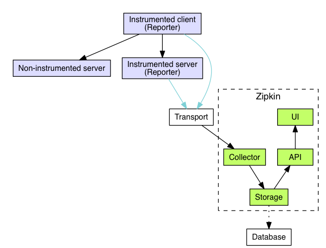（图片来源：https://zipkin.io/public/img/architecture-1.png）
{kind=link}
从图中看，OpenZipkin 主要由四个核心部分组成。
- Collector：负责收集探针 Reporter 埋点采集的数据，经过验证处理并建立索引。
- Storage：存储服务调用的链路数据，默认使用的是 Cassandra，是因为 Twitter 内部大量使用了 Cassandra，你也可以替换成 Elasticsearch 或者 MySQL。
- API：将格式化和建立索引的链路数据以 API 的方式对外提供服务，比如被 UI 调用。
- UI：以图形化的方式展示服务调用的链路数据。
它的工作原理可以用下面这张图来描述。
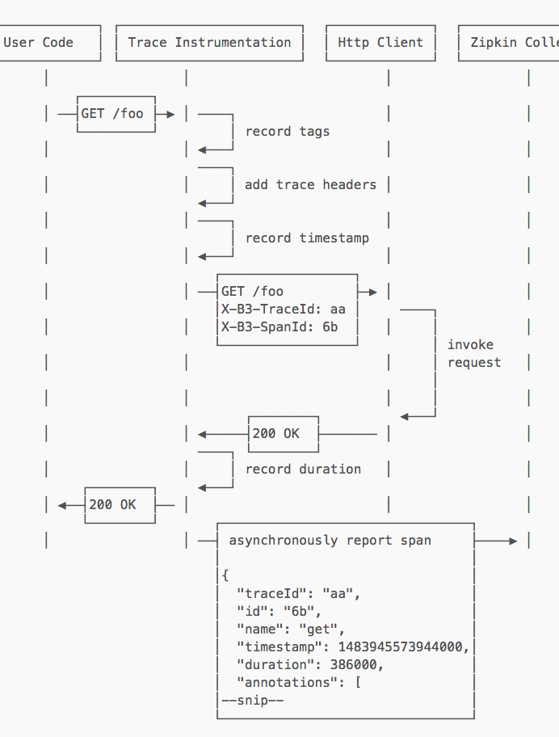（图片来源：https://zipkin.io/pages/architecture.html）
具体流程是，通过在业务的 HTTP Client 前后引入服务追踪代码，这样在 HTTP 方法“/foo”调用前，生成 trace 信息：TraceId：aa、SpanId：6b、annotation：GET /foo，以及当前时刻的 timestamp：1483945573944000，然后调用结果返回后，记录下耗时 duration，之后再把这些 trace 信息和 duration 异步上传给 Zipkin Collector。
Pinpoint
Pinpoint 是 Naver 开源的一款深度支持 Java 语言的服务追踪系统，下面这张图是它的架构设计。
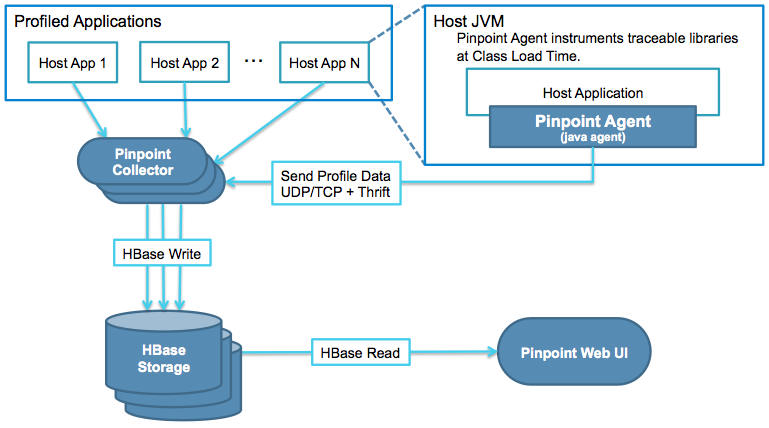（图片来源：http://naver.github.io/pinpoint/1.7.3/images/pinpoint-architecture.png）
{kind=link}
Pinpoint 主要也由四个部分组成。
- Pinpoint Agent：通过 Java 字节码注入的方式，来收集 JVM 中的调用数据，通过 UDP 协议传递给 Collector，数据采用 Thrift 协议进行编码。
- Pinpoint Collector：收集 Agent 传过来的数据，然后写到 HBase Storgage。
- HBase Storage：采用 HBase 集群存储服务调用的链路信息。
- Pinpoint Web UI：通过 Web UI 展示服务调用的详细链路信息。
它的工作原理你可以看这张图。
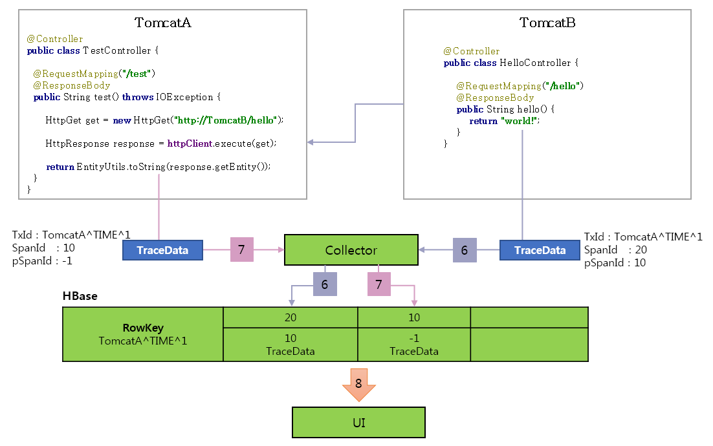（图片来源：http://naver.github.io/pinpoint/1.7.3/images/td_figure6.png）
{kind=link}
具体来看，就是请求进入 TomcatA，然后生成 TraceId：TomcatA^ TIME ^ 1、SpanId：10、pSpanId：-1（代表是根请求），接着 TomatA 调用 TomcatB 的 hello 方法，TomcatB 生成 TraceId：TomcatA^ TIME ^1、新的 SpanId：20、pSpanId：10（代表是 TomcatA 的请求），返回调用结果后将 trace 信息发给 Collector，TomcatA 收到调用结果后，将 trace 信息也发给 Collector。Collector 把 trace 信息写入到 HBase 中，Rowkey 就是 traceId，SpanId 和 pSpanId 都是列。然后就可以通过 UI 查询调用链路信息了。
选型对比
根据我的经验，考察服务追踪系统主要从下面这几个方面。
1. 埋点探针支持平台的广泛性
OpenZipkin 和 Pinpoint 都支持哪些语言平台呢？
OpenZipkin 提供了不同语言的 Library，不同语言实现时需要引入不同版本的 Library。
官方提供了 C#、Go、Java、JavaScript、Ruby、Scala、PHP 等主流语言版本的 Library，而且开源社区还提供了更丰富的不同语言版本的 Library，详细的可以点击这里查看；而 Pinpoint 目前只支持 Java 语言。
所以从探针支持的语言平台广泛性上来看，OpenZipkin 比 Pinpoint 的使用范围要广，而且开源社区很活跃，生命力更强。
2. 系统集成难易程度
再来看下系统集成的难易程度。
以 OpenZipkin 的 Java 探针 Brave 为例，它只提供了基本的操作 API，如果系统要想集成 Brave，必须在配置里手动里添加相应的配置文件并且增加 trace 业务代码。具体来讲，就是你需要先修改工程的 POM 依赖，以引入 Brave 相关的 JAR 包。
<dependencyManagement>
<dependencies>
<dependency>
<groupId>io.zipkin.brave</groupId>
<artifactId>brave-bom</artifactId>
<version>${brave.version}</version>
<type>pom</type>
<scope>import</scope>
</dependency>
</dependencies>
</dependencyManagement>
然后假如你想收集每一次 HTTP 调用的信息，你就可以使用 Brave 在 Apache Httpclient 基础上封装的 httpClient，它会记录每一次 HTTP 调用的信息，并上报给 OpenZipkin。
httpclient =TracingHttpClientBuilder.create(tracing).build();
而 Pinpoint 是通过字节码注入的方式来实现拦截服务调用，从而收集 trace 信息的，所以不需要代码做任何改动。Java 字节码注入的大致原理你可以参考下图。
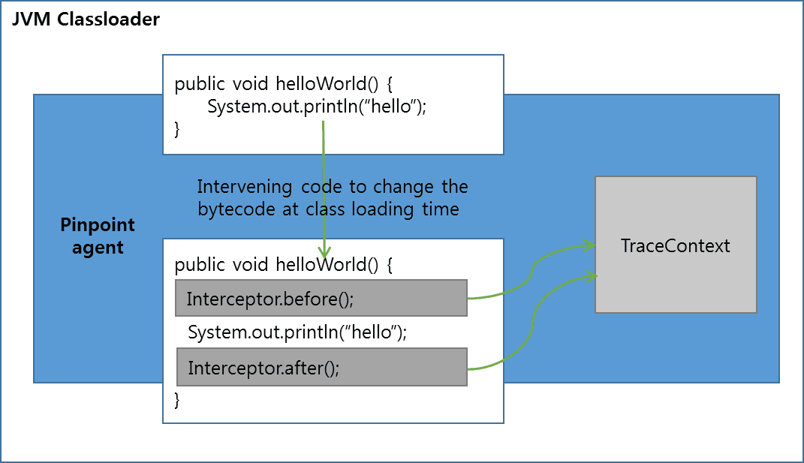（图片来源：http://naver.github.io/pinpoint/1.7.3/images/td_figure3.png）
{kind=link}
我来解释一下，就是 JVM 在加载 class 二进制文件时，动态地修改加载的 class 文件，在方法的前后执行拦截器的 before() 和 after() 方法，在 before() 和 after() 方法里记录 trace() 信息。而应用不需要修改业务代码，只需要在 JVM 启动时，添加类似下面的启动参数就可以了。
-javaagent:$AGENT_PATH/pinpoint-bootstrap-$VERSION.jar
-Dpinpoint.agentId=<Agent's UniqueId>
-Dpinpoint.applicationName=<The name indicating a same service (AgentId collection)
所以从系统集成难易程度上看，Pinpoint 要比 OpenZipkin 简单。
3. 调用链路数据的精确度
从下面这张 OpenZipkin 的调用链路图可以看出，OpenZipkin 收集到的数据只到接口级别，进一步的信息就没有了。
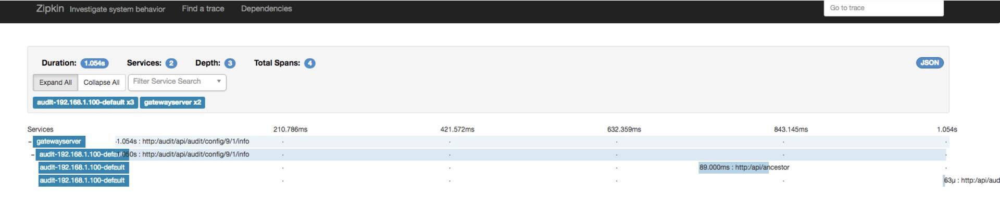（图片来源：http://ovcjgn2x0.bkt.clouddn.com/zipkin-info.jpg）
{kind=link}
再来看下 Pinpoint，因为 Pinpoint 采用了字节码注入的方式实现 trace 信息收集，所以它能拿到的信息比 OpenZipkin 多得多。从下面这张图可以看出，它不仅能够查看接口级别的链路调用信息，还能深入到调用所关联的数据库信息。
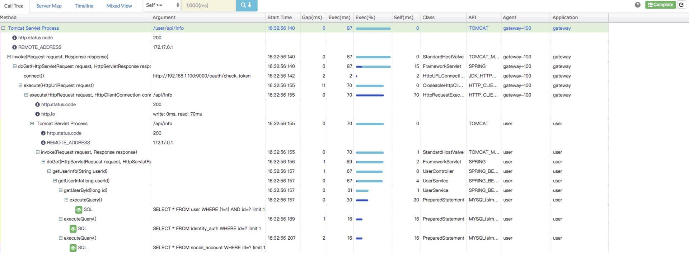（图片来源：http://ovcjgn2x0.bkt.clouddn.com/pp-info.jpg）
{kind=link}
同理在绘制链路拓扑图时，OpenZipkin 只能绘制服务与服务之间的调用链路拓扑图，比如下面这张示意图。
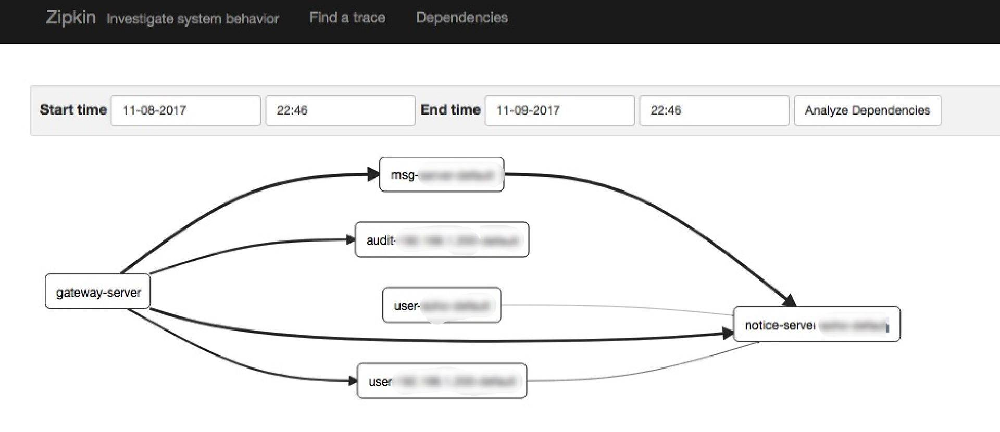（图片来源：http://ovcjgn2x0.bkt.clouddn.com/zipdependency1.jpg）
{kind=link}
而 Pinpoint 不仅能够绘制服务与服务之间，还能绘制与 DB 之间的调用链路拓扑图，比如下图。
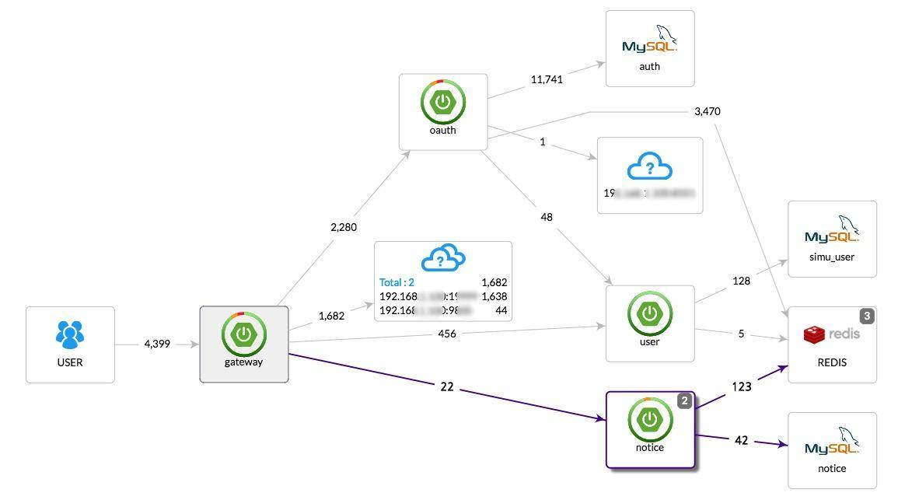（图片来源：http://ovcjgn2x0.bkt.clouddn.com/ppreal.jpg）
{kind=link}
所以，从调用链路数据的精确度上看，Pinpoint 要比 OpenZipkin 精确得多。
总结
今天我给你讲解了两个开源服务追踪系统 OpenZipkin 和 Pinpoint 的具体实现，并从埋点探针支持平台广泛性、系统集成难易程度、调用链路数据精确度三个方面对它们进行了对比。
从选型的角度来讲，如果你的业务采用的是 Java 语言，那么采用 Pinpoint 是个不错的选择，因为它不需要业务改动一行代码就可以实现 trace 信息的收集。除此之外，Pinpoint 不仅能看到服务与服务之间的链路调用，还能看到服务内部与资源层的链路调用，功能更为强大，如果你有这方面的需求，Pinpoint 正好能满足。
如果你的业务不是 Java 语言实现，或者采用了多种语言，那毫无疑问应该选择 OpenZipkin，并且，由于其开源社区很活跃，基本上各种语言平台都能找到对应的解决方案。不过想要使用 OpenZipkin，还需要做一些额外的代码开发工作，以引入 OpenZipkin 提供的 Library 到你的系统中。
除了 OpenZipkin 和 Pinpoint，业界还有其他开源追踪系统实现，比如 Uber 开源的 Jaeger，以及国内的一款开源服务追踪系统 SkyWalking。不过由于目前应用范围不是很广，这里就不详细介绍了，感兴趣的同学可以点击“拓展阅读”自行学习。
思考题
OpenZipkin 在探针采集完数据后有两种方式把数据传递给 Collector，一种是通过 HTTP 调用，一种是基于 MQ 的异步通信方式，比如使用 RabbitMQ 或者 Kafka，你觉得哪种方式更好一些？为什么？
欢迎你在留言区写下自己的思考，与我一起讨论。
拓展阅读：
阿里巴巴鹰眼：http://ppt.geekbang.org/slide/download/939/595f4cdcb9d52.pdf/18
Jaeger：https://www.jaegertracing.io
SkyWalking：https://github.com/apache/incubator-skywalking .
17 如何识别服务节点是否存活？
今天我要与你分享如何识别服务节点是否存活，这在服务治理中是十分重要的。在进入正题之前，你可以先复习一下专栏第 5 期，我在讲解注册中心原理的时候，以开源注册中心 ZooKeeper 为例，描述了它是如何管理注册到注册中心的节点的存活的。
其实 ZooKeeper 判断注册中心节点存活的机制其实就是注册中心摘除机制，服务消费者以注册中心中的数据为准，当服务端节点有变更时，注册中心就会把变更通知给服务消费者，服务消费者就会调用注册中心来拉取最新的节点信息。
这种机制在大部分情况下都可以工作得很好，但是在网络频繁抖动时，服务提供者向注册中心汇报心跳信息可能会失败，如果在规定的时间内，注册中心都没有收到服务提供者的心跳信息，就会把这个节点从可用节点列表中移除。更糟糕的是，在服务池拥有上百个节点的的时候，每个节点都可能会被移除，导致注册中心可用节点的状态一直在变化，这个时候应该如何处理呢？
下面就结合我在实践中的经验，给你讲解几种解决方案。
心跳开关保护机制
在网络频繁抖动的情况下，注册中心中可用的节点会不断变化，这时候服务消费者会频繁收到服务提供者节点变更的信息，于是就不断地请求注册中心来拉取最新的可用服务节点信息。当有成百上千个服务消费者，同时请求注册中心获取最新的服务提供者的节点信息时，可能会把注册中心的带宽给占满，尤其是注册中心是百兆网卡的情况下。
所以针对这种情况，需要一种保护机制，即使在网络频繁抖动的时候，服务消费者也不至于同时去请求注册中心获取最新的服务节点信息。
我曾经就遇到过这种情况，一个可行的解决方案就是给注册中心设置一个开关，当开关打开时，即使网络频繁抖动，注册中心也不会通知所有的服务消费者有服务节点信息变更，比如只给 10% 的服务消费者返回变更，这样的话就能将注册中心的请求量减少到原来的 1/10。
当然打开这个开关也是有一定代价的，它会导致服务消费者感知最新的服务节点信息延迟，原先可能在 10s 内就能感知到服务提供者节点信息的变更，现在可能会延迟到几分钟，所以在网络正常的情况下，开关并不适合打开；可以作为一个紧急措施，在网络频繁抖动的时候，才打开这个开关。
服务节点摘除保护机制
服务提供者在进程启动时，会注册服务到注册中心，并每隔一段时间，汇报心跳给注册中心，以标识自己的存活状态。如果隔了一段固定时间后，服务提供者仍然没有汇报心跳给注册中心，注册中心就会认为该节点已经处于“dead”状态，于是从服务的可用节点信息中移除出去。
如果遇到网络问题，大批服务提供者节点汇报给注册中心的心跳信息都可能会传达失败，注册中心就会把它们都从可用节点列表中移除出去，造成剩下的可用节点难以承受所有的调用，引起“雪崩”。但是这种情况下，可能大部分服务提供者节点是可用的，仅仅因为网络原因无法汇报心跳给注册中心就被“无情”的摘除了。
这个时候就需要根据实际业务的情况，设定一个阈值比例，即使遇到刚才说的这种情况，注册中心也不能摘除超过这个阈值比例的节点。
这个阈值比例可以根据实际业务的冗余度来确定，我通常会把这个比例设定在 20%，就是说注册中心不能摘除超过 20% 的节点。因为大部分情况下，节点的变化不会这么频繁，只有在网络抖动或者业务明确要下线大批量节点的情况下才有可能发生。而业务明确要下线大批量节点的情况是可以预知的，这种情况下可以关闭阈值保护；而正常情况下，应该打开阈值保护，以防止网络抖动时，大批量可用的服务节点被摘除。
讲到这里，我们先小结一下。
心跳开关保护机制，是为了防止服务提供者节点频繁变更导致的服务消费者同时去注册中心获取最新服务节点信息；服务节点摘除保护机制，是为了防止服务提供者节点被大量摘除引起服务消费者可以调用的节点不足。
可见，无论是心跳开关保护机制还是服务节点摘除保护机制，都是因为注册中心里的节点信息是随时可能发生变化的，所以也可以把注册中心叫作动态注册中心。
那么是不是可以换个思路，服务消费者并不严格以注册中心中的服务节点信息为准，而是更多的以服务消费者实际调用信息来判断服务提供者节点是否可用。这就是下面我要讲的静态注册中心。
静态注册中心
前面讲过心跳机制能保证在服务提供者出现异常时，注册中心可以及时把不可用的服务提供者从可用节点列表中移除出去，正常情况下这是个很好的机制。
但是仔细思考一下，为什么不把这种心跳机制直接用在服务消费者端呢？
因为服务提供者是向服务消费者提供服务的，是否可用服务消费者应该比注册中心更清楚，因此可以直接在服务消费者端根据调用服务提供者是否成功来判定服务提供者是否可用。如果服务消费者调用某一个服务提供者节点连续失败超过一定次数，可以在本地内存中将这个节点标记为不可用。并且每隔一段固定时间，服务消费者都要向标记为不可用的节点发起保活探测，如果探测成功了，就将标记为不可用的节点再恢复为可用状态，重新发起调用。
这样的话，服务提供者节点就不需要向注册中心汇报心跳信息，注册中心中的服务节点信息也不会动态变化，也可以称之为静态注册中心。
从我的实践经历来看，一开始采用了动态注册中心，后来考虑到网络的复杂性，心跳机制不一定是可靠的，而后开始改为采用服务消费者端的保活机制，事实证明这种机制足以应对网络频繁抖动等复杂的场景。
当然静态注册中心中的服务节点信息并不是一直不变，当在业务上线或者运维人工增加或者删除服务节点这种预先感知的情况下，还是有必要去修改注册中心中的服务节点信息。
比如在业务上线过程中，需要把正在部署的服务节点从注册中心中移除，等到服务部署完毕，完全可用的时候，再加入到注册中心。还有就是在业务新增或者下线服务节点的时候，需要调用注册中心提供的接口，添加节点信息或者删除节点。这个时候静态注册中心有点退化到配置中心的意思，只不过这个时候配置中心里存储的不是某一项配置，而是某个服务的可用节点信息。
总结
今天我给你讲解了动态注册中心在实际线上业务运行时，如果遇到网络不可靠等因素，可能会带来的两个问题，一个是服务消费者同时并发访问注册中心获取最新服务信息导致注册中心带宽被打满；另一个是服务提供者节点被大量摘除导致服务消费者没有足够的节点可以调用。
这两个问题都是我在业务实践过程中遇到过的，我给出的两个解决方案：心跳开关保护机制和服务节点摘除保护机制都是在实践中应用过的，并且被证明是行之有效的。
而静态注册中心的思路，是在斟酌注册中心的本质之后，引入的另外一个解决方案，相比于动态注册中心更加简单，并且基于服务消费者本身调用来判断服务节点是否可用，更加直接也更加准确，尤其在注册中心或者网络出现问题的时候，这种方案基本不受影响。
思考题
在实际的微服务架构中，注册中心主动心跳机制和客户端摘除机制可能会同时使用，比如 Spring Cloud 就把这两种机制结合起来识别服务节点是否存活。如果注册中心没有收到某一个服务节点的心跳汇报，而服务消费者又调用这个服务节点成功了，你认为应该以哪个为准？为什么？
欢迎你在留言区写下自己的思考，与我一起讨论。 (
18 如何使用负载均衡算法？
假设你订阅了一个别人的服务，从注册中心查询得到了这个服务的可用节点列表，而这个列表里包含了几十个节点，这个时候你该选择哪个节点发起调用呢？这就是今天我要给你讲解的关于客户端负载均衡算法的问题。
为什么要引入负载均衡算法呢？主要有两个原因：一个是要考虑调用的均匀性，也就是要让每个节点都接收到调用，发挥所有节点的作用；另一个是要考虑调用的性能，也就是哪个节点响应最快，优先调用哪个节点。
不同的负载均衡算法在这两个方面的考虑不同，下面我就来能给介绍常见的负载均衡算法及其应用场景。
常见的负载均衡算法
1. 随机算法
随机算法，顾名思义就是从可用的服务节点中，随机挑选一个节点来访问。
在实现时，随机算法通常是通过生成一个随机数来实现，比如服务有 10 个节点，那么就每一次生成一个 1～10 之间的随机数，假设生成的是 2，那么就访问编号为 2 的节点。
采用随机算法，在节点数量足够多，并且访问量比较大的情况下，各个节点被访问的概率是基本相同的。一个随机算法的代码实现，可以参考这个示例。
2. 轮询算法
轮询算法，顾名思义就是按照固定的顺序，把可用的服务节点，挨个访问一次。
在实现时，轮询算法通常是把所有可用节点放到一个数组里，然后按照数组编号，挨个访问。比如服务有 10 个节点，放到数组里就是一个大小为 10 的数组，这样的话就可以从序号为 0 的节点开始访问，访问后序号自动加 1，下一次就会访问序号为 1 的节点，以此类推。
轮询算法能够保证所有节点被访问到的概率是相同的。一个轮询算法的代码实现，可以参考这个示例。
3. 加权轮询算法
轮询算法能够保证所有节点被访问的概率相同，而加权轮询算法是在此基础上，给每个节点赋予一个权重，从而使每个节点被访问到的概率不同，权重大的节点被访问的概率就高，权重小的节点被访问的概率就小。
在实现时，加权轮询算法是生成一个节点序列，该序列里有 n 个节点，n 是所有节点的权重之和。在这个序列中，每个节点出现的次数，就是它的权重值。比如有三个节点：a、b、c，权重分别是 3、2、1，那么生成的序列就是{a、a、b、c、b、a}，这样的话按照这个序列访问，前 6 次请求就会分别访问节点 a 三次，节点 b 两次，节点 c 一次。从第 7 个请求开始，又重新按照这个序列的顺序来访问节点。
在应用加权轮询算法的时候，根据我的经验，要尽可能保证生产的序列的均匀，如果生成的不均匀会造成节点访问失衡，比如刚才的例子，如果生成的序列是{a、a、a、b、b、c}，就会导致前 3 次访问的节点都是 a。一个加权轮询算法的代码实现，可以参考这个示例。
4. 最少活跃连接算法
最少活跃连接算法，顾名思义就是每一次访问都选择连接数最少的节点。因为不同节点处理请求的速度不同，使得同一个服务消费者同每一个节点的连接数都不相同。连接数大的节点，可以认为是处理请求慢，而连接数小的节点，可以认为是处理请求快。所以在挑选节点时，可以以连接数为依据，选择连接数最少的节点访问。
在实现时，需要记录跟每一个节点的连接数，这样在选择节点时，才能比较出连接数最小的节点。一个最少活跃连接算法的代码实现，可以参考这个示例。
5. 一致性 hash 算法
一致性 hash 算法，是通过某个 hash 函数，把同一个来源的请求都映射到同一个节点上。一致性 hash 算法最大的特点就是同一个来源的请求，只会映射到同一个节点上，可以说是具有记忆功能。只有当这个节点不可用时，请求才会被分配到相邻的可用节点上。
一个一致性 hash 算法的代码实现，可以参考这个示例。
负载均衡算法的使用场景
上面这五种负载均衡算法，具体在业务中该如何选择呢？根据我的经验，它们的各自应用场景如下：
- 随机算法：实现比较简单，在请求量远超可用服务节点数量的情况下，各个服务节点被访问的概率基本相同，主要应用在各个服务节点的性能差异不大的情况下。
- 轮询算法：跟随机算法类似，各个服务节点被访问的概率也基本相同，也主要应用在各个服务节点性能差异不大的情况下。
- 加权轮询算法：在轮询算法基础上的改进，可以通过给每个节点设置不同的权重来控制访问的概率，因此主要被用在服务节点性能差异比较大的情况。比如经常会出现一种情况，因为采购时间的不同，新的服务节点的性能往往要高于旧的节点，这个时候可以给新的节点设置更高的权重，让它承担更多的请求，充分发挥新节点的性能优势。
- 最少活跃连接算法：与加权轮询算法预先定义好每个节点的访问权重不同，采用最少活跃连接算法，客户端同服务端节点的连接数是在时刻变化的，理论上连接数越少代表此时服务端节点越空闲，选择最空闲的节点发起请求，能获取更快的响应速度。尤其在服务端节点性能差异较大，而又不好做到预先定义权重时，采用最少活跃连接算法是比较好的选择。
- 一致性 hash 算法：因为它能够保证同一个客户端的请求始终访问同一个服务节点，所以适合服务端节点处理不同客户端请求差异较大的场景。比如服务端缓存里保存着客户端的请求结果，如果同一客户端一直访问一个服务节点，那么就可以一直从缓存中获取数据。
这五种负载均衡算法是业界最常用的，不光在 RPC 调用中被广泛采用，在一些负载均衡组件比如 Nginx 中也有应用，所以说是一种通用的负载均衡算法，但是不是所有的业务场景都能很好解决呢？
我曾经遇到过这种场景：
- 服务节点数量众多，且性能差异比较大；
- 服务节点列表经常发生变化，增加节点或者减少节点时有发生；
- 客户端和服务节点之间的网络情况比较复杂，有些在一个数据中心，有些不在一个数据中心需要跨网访问，而且网络经常延迟或者抖动。
显然无论是随机算法还是轮询算法，第一个情况就不满足，加权轮询算法需要预先配置服务节点的权重，在节点列表经常变化的情况下不好维护，所以也不适合。而最少活跃连接算法是从客户端自身维度去判断的，在实际应用时，并不能直接反映出服务节点的请求量大小，尤其是在网络情况比较复杂的情况下，并不能做到动态的把请求发送给最合适的服务节点。至于一致性 hash 算法，显然不适合这种场景。
针对上面这种场景，有一种算法更加适合，这种算法就是自适应最优选择算法。
自适应最优选择算法
这种算法的主要思路是在客户端本地维护一份同每一个服务节点的性能统计快照，并且每隔一段时间去更新这个快照。在发起请求时，根据“二八原则”，把服务节点分成两部分，找出 20% 的那部分响应最慢的节点，然后降低权重。这样的话，客户端就能够实时的根据自身访问每个节点性能的快慢，动态调整访问最慢的那些节点的权重，来减少访问量，从而可以优化长尾请求。
由此可见，自适应最优选择算法是对加权轮询算法的改良，可以看作是一种动态加权轮询算法。它的实现关键之处就在于两点：第一点是每隔一段时间获取客户端同每个服务节点之间调用的平均性能统计；第二点是按照这个性能统计对服务节点进行排序，对排在性能倒数 20% 的那部分节点赋予一个较低的权重，其余的节点赋予正常的权重。
在具体实现时，针对第一点，需要在内存中开辟一块空间记录客户端同每一个服务节点之间调用的平均性能，并每隔一段固定时间去更新。这个更新的时间间隔不能太短，太短的话很容易受瞬时的性能抖动影响，导致统计变化太快，没有参考性；同时也不能太长，太长的话时效性就会大打折扣，效果不佳。根据我的经验，1 分钟的更新时间间隔是个比较合适的值。
针对第二点，关键点是权重值的设定，即使服务节点之间的性能差异较大，也不适合把权重设置得差异太大，这样会导致性能较好的节点与性能较差的节点之间调用量相差太大，这样也不是一种合理的状态。在实际设定时，可以设置 20% 性能较差的节点权重为 3，其余节点权重为 5。
总结
今天我给你讲解了最常用的五种客户端负载均衡算法的原理以及适用场景，在业务实践的过程汇总，究竟采用哪种，需要根据实际情况来决定，并不是算法越复杂越好。
比如在一种简单的业务场景下，有 10 个服务节点，并且配置基本相同，位于同一个数据中心，此时客户端选择随机算法或者轮询算法既简单又高效，并没有必要选择加权轮询算法或者最少活跃连接算法。
但在遇到前面提到的那种复杂业务场景下，服务节点数量众多，配置差异比较大，而且位于不同的数据中心，客户端与服务节点之间的网络情况也比较复杂，这个时候简单的负载均衡算法通常都难以应对，需要针对实际情况，选择更有针对性的负载均衡算法，比如自适应最优选择算法。
思考题
今天我给你讲的都属于软件层面的负载均衡算法，它与 F5 这种硬件负载均衡器有什么不同呢？
欢迎你在留言区写下自己的思考，与我一起讨论。
扩展阅读：
一致性 hash 算法是如何做到添加或者删除节点对整体请求的分布影响不大：https://www.codeproject.com/Articles/56138/Consistent-hashing "
19 如何使用服务路由？
专栏上一期，我给你讲解了常用的客户端负载均衡算法，它帮我们解决了服务消费者如何从众多可用的服务节点中选取一个最合适的节点发起调用的问题。但在业务中经常还会遇到这样的场景，比如服务 A 部署在北京、上海、广州三个数据中心，所有的服务节点按照所在的数据中心被分成了三组，那么服务 A 的消费者在发起调用时，该如何选择呢？这就是今天我要给你讲解的服务路由的问题。
那么什么是服务路由呢？我的理解是服务路由就是服务消费者在发起服务调用时，必须根据特定的规则来选择服务节点，从而满足某些特定的需求。
那么服务路由都有哪些应用场景？具体都有哪些规则呢？
服务路由的应用场景
根据我的实践经验，服务路由主要有以下几种应用场景：
- 分组调用。一般来讲，为了保证服务的高可用性，实现异地多活的需求，一个服务往往不止部署在一个数据中心，而且出于节省成本等考虑，有些业务可能不仅在私有机房部署，还会采用公有云部署，甚至采用多家公有云部署。服务节点也会按照不同的数据中心分成不同的分组，这时对于服务消费者来说，选择哪一个分组调用，就必须有相应的路由规则。
- 灰度发布。在服务上线发布的过程中，一般需要先在一小部分规模的服务节点上先发布服务，然后验证功能是否正常。如果正常的话就继续扩大发布范围；如果不正常的话，就需要排查问题，解决问题后继续发布。这个过程就叫作灰度发布，也叫金丝雀部署。
- 流量切换。在业务线上运行过程中，经常会遇到一些不可抗力因素导致业务故障，比如某个机房的光缆被挖断，或者发生着火等事故导致整个机房的服务都不可用。这个时候就需要按照某个指令，能够把原来调用这个机房服务的流量切换到其他正常的机房。
- 读写分离。对于大多数互联网业务来说都是读多写少，所以在进行服务部署的时候，可以把读写分开部署，所有写接口可以部署在一起，而读接口部署在另外的节点上。
上面四种应用场景是实际业务中很常见的，服务路由可以通过各种规则来实现，那么服务路由都有哪些规则呢？
服务路由的规则
根据我的实践经验，服务路由主要有两种规则：一种是条件路由，一种是脚本路由。
1. 条件路由
条件路由是基于条件表达式的路由规则，以下面的条件路由为例，我来给你详细讲解下它的用法。
condition://0.0.0.0/dubbo.test.interfaces.TestService?category=routers&dynamic=true&priority=2&enabled=true&rule=" + URL.encode(" host = 10.20.153.10=> host = 10.20.153.11")
这里面“condition://”代表了这是一段用条件表达式编写的路由规则，具体的规则是
host = 10.20.153.10 => host = 10.20.153.11
分隔符“=>”前面是服务消费者的匹配条件，后面是服务提供者的过滤条件。当服务消费者节点满足匹配条件时，就对该服务消费者执行后面的过滤规则。那么上面这段表达式表达的意义就是 IP 为“10.20.153.10”的服务消费者都调用 IP 为“10.20.153.11”的服务提供者节点。
如果服务消费者的匹配条件为空，就表示对所有的服务消费者应用，就像下面的表达式一样。
=> host ！= 10.20.153.11
如果服务提供者的过滤条件为空，就表示禁止服务消费者访问，就像下面的表达式一样。
host = 10.20.153.10=>
下面我举一些 Dubbo 框架中的条件路由，来给你讲解下条件路由的具体应用场景。
- 排除某个服务节点
=> host != 172.22.3.91
一旦这条路由规则被应用到线上，所有的服务消费者都不会访问 IP 为 172.22.3.91 的服务节点，这种路由规则一般应用在线上流量排除预发布机以及摘除某个故障节点的场景。
- 白名单和黑名单功能
host != 10.20.153.10,10.20.153.11 =>
这条路由规则意思是除了 IP 为 10.20.153.10 和 10.20.153.11 的服务消费者可以发起服务调用以外，其他服务消费者都不可以，主要用于白名单访问逻辑，比如某个后台服务只允许特定的几台机器才可以访问，这样的话可以机器控制访问权限。
host = 10.20.153.10,10.20.153.11 =>
同理，这条路由规则意思是除了 IP 为 10.20.153.10 和 10.20.153.11 的服务消费者不能发起服务调用以外，其他服务消费者都可以，也就是实现了黑名单功能，比如线上经常会遇到某些调用方不管是出于有意还是无意的不合理调用，影响了服务的稳定性，这时候可以通过黑名单功能暂时予以封杀。
- 机房隔离
host = 172.22.3.* => host = 172.22.3.*
这条路由规则意思是 IP 网段为 172.22.3.* 的服务消费者，才可以访问同网段的服务节点，这种规则一般应用于服务部署在多个 IDC，理论上同一个 IDC 内的调用性能要比跨 IDC 调用性能要好，应用这个规则是为了实现同 IDC 就近访问。
- 读写分离
method = find*,list*,get*,is* => host =172.22.3.94,172.22.3.95
method != find*,list*,get*,is* => host = 172.22.3.97,172.22.3.98
这条路由规则意思是 find*、get*、is* 等读方法调用 IP 为 172.22.3.94 和 172.22.3.95 的节点，除此以外的写方法调用 IP 为 172.22.3.97 和 172.22.3.98 的节点。对于大部分互联网业务来说，往往读请求要远远大于写请求，而写请求的重要性往往要远远高于读请求，所以需要把读写请求进行分离，以避免读请求异常影响到写请求，这时候就可以应用这种规则。
2. 脚本路由
脚本路由是基于脚本语言的路由规则，常用的脚本语言比如 JavaScript、Groovy、JRuby 等。以下面的脚本路由规则为例，我来给你详细讲解它的用法。
"script://0.0.0.0/com.foo.BarService?category=routers&dynamic=false&rule=" + URL.encode("（function route(invokers) { ... } (invokers)）")
这里面“script://”就代表了这是一段脚本语言编写的路由规则，具体规则定义在脚本语言的 route 方法实现里，比如下面这段用 JavaScript 编写的 route() 方法表达的意思是，只有 IP 为 10.20.153.10 的服务消费者可以发起服务调用。
function route(invokers){
var result = new java.util.ArrayList(invokers.size());
for(i =0; i < invokers.size(); i ++){
if("10.20.153.10".equals(invokers.get(i).getUrl().getHost())){
result.add(invokers.get(i));
}
}
return result;
} (invokers)）;
既然服务路由是通过路由规则来实现的，那么服务消费者该如何获取路由规则呢？
服务路由的获取方式
根据我的实践经验，服务路由的获取方式主要有三种：
- 本地配置
顾名思义就是路由规则存储在服务消费者本地上。服务消费者发起调用时，从本地固定位置读取路由规则，然后按照路由规则选取一个服务节点发起调用。
- 配置中心管理
这种方式下，所有的服务消费者都从配置中心获取路由规则，由配置中心来统一管理。
- 动态下发
这种方式下，一般是运维人员或者开发人员，通过服务治理平台修改路由规则，服务治理平台调用配置中心接口，把修改后的路由规则持久化到配置中心。因为服务消费者订阅了路由规则的变更，于是就会从配置中心获取最新的路由规则，按照最新的路由规则来执行。
根据我的实践经验，上面三种方式实际使用时，还是有一定区别的。
一般来讲，服务路由最好是存储在配置中心中，由配置中心来统一管理。这样的话，所有的服务消费者就不需要在本地管理服务路由，因为大部分的服务消费者并不关心服务路由的问题，或者说也不需要去了解其中的细节。通过配置中心，统一给各个服务消费者下发统一的服务路由，节省了沟通和管理成本。
但也不排除某些服务消费者有特定的需求，需要定制自己的路由规则，这个时候就适合通过本地配置来定制。
而动态下发可以理解为一种高级功能，它能够动态地修改路由规则，在某些业务场景下十分有用。比如某个数据中心存在问题，需要把调用这个数据中心的服务消费者都切换到其他数据中心，这时就可以通过动态下发的方式，向配置中心下发一条路由规则，将所有调用这个数据中心的请求都迁移到别的地方。
当然，这三种方式也可以一起使用，这个时候服务消费者的判断优先级是本地配置 > 动态下发 > 配置中心管理。
总结
今天我给你讲解了服务路由的作用，简单来讲就是为了实现某些调用的特殊需求，比如分组调用、灰度发布、流量切换、读写分离等。在业务规模比较小的时候，可能所有的服务节点都部署在一起，也就不需要服务路由。但随着业务规模的扩大、服务节点增多，尤其是涉及多数据中心部署的情况，把服务节点按照数据中心进行分组，或者按照业务的核心程度进行分组，对提高服务的可用性是十分有用的。以微博业务为例，有的服务不仅进行了核心服务和非核心服务分组，还针对私有云和公有云所处的不同数据中心也进行了分组，这样的话就可以将服务之间的调用尽量都限定在同一个数据中心内部，最大限度避免跨数据中心的网络延迟、抖动等影响。
而服务路由具体是在本地配置，还是在配置中心统一管理，也是视具体业务需求而定的。如果没有定制化的需求，建议把路由规则都放到配置中心中统一存储管理。而动态下发路由规则对于服务治理十分有帮助，当数据中心出现故障的时候，可以实现动态切换流量，还可以摘除一些有故障的服务节点。
思考题
在实际业务场景中，经常有一类需求就是一个新功能在全量上线前，会圈一批用户优先适用，如果使用服务路由功能的话，你觉得可以怎么做？
欢迎你在留言区写下自己的思考，与我一起讨论。 1
20 服务端出现故障时该如何应对？
在专栏前面我讲过，单体应用改造成微服务的一个好处是可以减少故障影响范围，故障被局限在一个微服务系统本身，而不是整个单体应用都崩溃。那么具体到一个微服务系统，如果出现了故障，应该如何处理呢？
首先，我先来带你回顾一下微服务系统可能出现故障的种类，主要有三种故障。
- 集群故障。根据我的经验，微服务系统一般都是集群部署的，根据业务量大小而定，集群规模从几台到甚至上万台都有可能。一旦某些代码出现 bug，可能整个集群都会发生故障，不能提供对外提供服务。
- 单 IDC 故障。现在大多数互联网公司为了保证业务的高可用性，往往业务部署在不止一个 IDC。然而现实中时常会发生某个 IDC 的光缆因为道路施工被挖断，导致整个 IDC 脱网。
- 单机故障。顾名思义就是集群中的个别机器出现故障，这种情况往往对全局没有太大影响，但会导致调用到故障机器上的请求都失败，影响整个系统的成功率。
在我的实践过程中，这三种故障都经常遇到，因此相应的处理手段也可谓驾轻就熟，下面就把我应对故障的实战经验分享给你，希望对你有所帮助。
集群故障
一般而言，集群故障的产生原因不外乎有两种：一种是代码 bug 所导致，比如说某一段 Java 代码不断地分配大对象，但没有及时回收导致 JVM OOM 退出；另一种是突发的流量冲击，超出了系统的最大承载能力，比如“双 11”这种购物活动，电商系统会在零点一瞬间涌入大量流量，超出系统的最大承载能力，一下子就把整个系统给压垮了。
应付集群故障的思路，主要有两种：限流和降级。
1. 限流
顾名思义，限流就是限制流量，通常情况下，系统能够承载的流量根据集群规模的大小是固定的，可以称之为系统的最大容量。当真实流量超过了系统的最大容量后，就会导致系统响应变慢，服务调用出现大量超时，反映给用户的感觉就是卡顿、无响应。所以，应该根据系统的最大容量，给系统设置一个阈值，超过这个阈值的请求会被自动抛弃，这样的话可以最大限度地保证系统提供的服务正常。
除此之外，通常一个微服务系统会同时提供多个服务，每个服务在同一时刻的请求量也是不同的，很可能出现的一种情况就是，系统中某个服务的请求量突增，占用了系统中大部分资源，导致其他服务没有资源可用。因此，还要针对系统中每个服务的请求量也设置一个阈值，超过这个阈值的请求也要被自动抛弃，这样的话不至于因为一个服务影响了其他所有服务。
在实际项目中，可以用两个指标来衡量服务的请求量，一个是 QPS 即每秒请求量，一个是工作线程数。不过 QPS 因为不同服务的响应快慢不同，所以系统能够承载的 QPS 相差很大，因此一般选择工作线程数来作为限流的指标，给系统设置一个总的最大工作线程数以及单个服务的最大工作线程数，这样的话无论是系统的总请求量过大导致整体工作线程数量达到最大工作线程数，还是某个服务的请求量超过单个服务的最大工作线程数，都会被限流，以起到保护整个系统的作用。
2. 降级
什么是降级呢？在我看来，降级就是通过停止系统中的某些功能，来保证系统整体的可用性。降级可以说是一种被动防御的措施，为什么这么说呢？因为它一般是系统已经出现故障后所采取的一种止损措施。
那么降级一般是如何实现的呢？根据我的实践来看， 一种可行的方案是通过开关来实现。
具体来讲，就是在系统运行的内存中开辟一块区域，专门用于存储开关的状态，也就是开启还是关闭。并且需要监听某个端口，通过这个端口可以向系统下发命令，来改变内存中开关的状态。当开关开启时，业务的某一段逻辑就不再执行，而正常情况下，开关是关闭的状态。
开关一般用在两种地方，一种是新增的业务逻辑，因为新增的业务逻辑相对来说不成熟，往往具备一定的风险，所以需要加开关来控制新业务逻辑是否执行；另一种是依赖的服务或资源，因为依赖的服务或者资源不总是可靠的，所以最好是有开关能够控制是否对依赖服务或资源发起调用，来保证即使依赖出现问题，也能通过降级来避免影响。
在实际业务应用的时候，降级要按照对业务的影响程度进行分级，一般分为三级：一级降级是对业务影响最小的降级，在故障的情况下，首先执行一级降级，所以一级降级也可以设置成自动降级，不需要人为干预；二级降级是对业务有一定影响的降级，在故障的情况下，如果一级降级起不到多大作用的时候，可以人为采取措施，执行二级降级；三级降级是对业务有较大影响的降级，这种降级要么是对商业收入有重大影响，要么是对用户体验有重大影响，所以操作起来要非常谨慎，不在最后时刻一般不予采用。
单 IDC 故障
在现实情况下，整个 IDC 脱网的事情时有发生，多半是因为不可抗力比如机房着火、光缆被挖断等，如果业务全部部署在这个 IDC，那就完全不可访问了，所以国内大部分的互联网业务多采用多 IDC 部署。具体来说，有的采用同城双活，也就是在一个城市的两个 IDC 内部署；有的采用异地多活，一般是在两个城市的两个 IDC 内部署；当然也有支付宝这种金融级别的应用采用了“三地五中心”部署，这种部署成本显然高比两个 IDC 要高得多，但可用性的保障要更高。
采用多 IDC 部署的最大好处就是当有一个 IDC 发生故障时，可以把原来访问故障 IDC 的流量切换到正常的 IDC，来保证业务的正常访问。
流量切换的方式一般有两种，一种是基于 DNS 解析的流量切换，一种是基于 RPC 分组的流量切换。
1. 基于 DNS 解析的流量切换
基于 DNS 解析流量的切换，一般是通过把请求访问域名解析的 VIP 从一个 IDC 切换到另外一个 IDC。比如访问“www.weibo.com”，正常情况下北方用户会解析到联通机房的 VIP，南方用户会解析到电信机房的 VIP，如果联通机房发生故障的话，会把北方用户访问也解析到电信机房的 VIP，只不过此时网络延迟可能会变长。
2. 基于 RPC 分组的流量切换
对于一个服务来说，如果是部署在多个 IDC 的话，一般每个 IDC 就是一个分组。假如一个 IDC 出现故障，那么原先路由到这个分组的流量，就可以通过向配置中心下发命令，把原先路由到这个分组的流量全部切换到别的分组，这样的话就可以切换故障 IDC 的流量了。
单机故障
单机故障是发生概率最高的一种故障了，尤其对于业务量大的互联网应用来说，上万台机器的规模也是很常见的。这种情况下，发生单机故障的概率就很高了，这个时候只靠运维人肉处理显然不可行，所以就要求有某种手段来自动处理单机故障。
根据我的经验，处理单机故障一个有效的办法就是自动重启。具体来讲，你可以设置一个阈值，比如以某个接口的平均耗时为准，当监控单机上某个接口的平均耗时超过一定阈值时，就认为这台机器有问题，这个时候就需要把有问题的机器从线上集群中摘除掉，然后在重启服务后，重新加入到集群中。
不过这里要注意的是，需要防止网络抖动造成的接口超时从而触发自动重启。一种方法是在收集单机接口耗时数据时，多采集几个点，比如每 10s 采集一个点，采集 5 个点，当 5 个点中有超过 3 个点的数据都超过设定的阈值范围，才认为是真正的单机问题，这时会触发自动重启策略。
除此之外，为了防止某些特殊情况下，短时间内被重启的单机过多，造成整个服务池可用节点数太少，最好是设置一个可重启的单机数量占整个集群的最大比例，一般这个比例不要超过 10%，因为正常情况下，不大可能有超过 10% 的单机都出现故障。
总结
今天我们探讨了微服务系统可能出现的三种故障：集群故障、单 IDC 故障、单机故障，并且针对这三种故障我给出了分别的解决方案，包括降级、限流、流量切换以及自动重启。
在遇到实际的故障时，往往多个手段是并用的，比如在出现单 IDC 故障，首先要快速切换流量到正常的 IDC，但此时可能正常 IDC 并不足以支撑两个 IDC 的流量，所以这个时候首先要降级部分功能，保证正常的 IDC 顺利支撑切换过来的流量。
而且要尽量让故障处理自动化，这样可以大大减少故障影响的时间。因为一旦需要引入人为干预，往往故障处理的时间都得是 10 分钟以上，这对大部分用户敏感型业务的影响是巨大的，如果能做到自动化故障处理的话，可以将故障处理的时间降低到 1 分钟以内甚至秒级别，这样的话对于用户的影响最小。
思考题
上面我提到为了避免单 IDC 故障导致服务不可用情况的发生，服务需要采用多 IDC 部署，这个时候就要求服务依赖的数据也需要存储在多个 IDC 内，这样势必会带来数据一致性的问题，你有什么解决方案吗？
欢迎你在留言区写下自己的思考，与我一起讨论。 4
21 服务调用失败时有哪些处理手段？
通过前面的学习你应该可以理解，微服务相比于单体应用最大的不同之处在于，服务的调用从同一台机器内部的本地调用变成了不同机器之间的远程方法调用，但是这个过程也引入了两个不确定的因素。
一个是调用的执行是在服务提供者一端，即使服务消费者本身是正常的，服务提供者也可能由于诸如 CPU、网络 I/O、磁盘、内存、网卡等硬件原因导致调用失败，还有可能由于本身程序执行问题比如 GC 暂停导致调用失败。
另一个不确定因素是调用发生在两台机器之间，所以要经过网络传输，而网络的复杂性是不可控的，网络丢包、延迟以及随时可能发生的瞬间抖动都有可能造成调用失败。
所以，单体应用改造为微服务架构后，要针对服务调用失败进行特殊处理。那具体来说有哪些处理手段呢？下面我就结合自己的实战经验，一起来聊聊服务调用失败都有哪些处理手段。
超时
首先你要知道的是，单体应用被改造成微服务架构后，一次用户调用可能会被拆分成多个系统之间的服务调用，任何一次服务调用如果发生问题都可能会导致最后用户调用失败。而且在微服务架构下，一个系统的问题会影响所有调用这个系统所提供服务的服务消费者，如果不加以控制，严重的话会引起整个系统雪崩。
所以在实际项目中，针对服务调用都要设置一个超时时间，以避免依赖的服务迟迟没有返回调用结果，把服务消费者拖死。这其中，超时时间的设定也是有讲究的，不是越短越好，因为太短可能会导致有些服务调用还没有来得及执行完就被丢弃了；当然时间也不能太长，太长有可能导致服务消费者被拖垮。根据我的经验，找到比较合适的超时时间需要根据正常情况下，服务提供者的服务水平来决定。具体来说，就是按照服务提供者线上真实的服务水平，取 P999 或者 P9999 的值，也就是以 99.9% 或者 99.99% 的调用都在多少毫秒内返回为准。
重试
虽然设置超时时间可以起到及时止损的效果，但是服务调用的结果毕竟是失败了，而大部分情况下，调用失败都是因为偶发的网络问题或者个别服务提供者节点有问题导致的，如果能换个节点再次访问说不定就能成功。而且从概率论的角度来讲，假如一次服务调用失败的概率为 1%，那么连续两次服务调用失败的概率就是 0.01%，失败率降低到原来的 1%。
所以，在实际服务调用时，经常还要设置一个服务调用超时后的重试次数。假如某个服务调用的超时时间设置为 100ms，重试次数设置为 1，那么当服务调用超过 100ms 后，服务消费者就会立即发起第二次服务调用，而不会再等待第一次调用返回的结果了。
双发
正如我刚才讲的那样，假如一次调用不成功的概率为 1%，那么连续两次调用都不成功的概率就是 0.01%，根据这个推论，一个简单的提高服务调用成功率的办法就是每次服务消费者要发起服务调用的时候，都同时发起两次服务调用，一方面可以提高调用的成功率，另一方面两次服务调用哪个先返回就采用哪次的返回结果，平均响应时间也要比一次调用更快，这就是双发。
但是这样的话，一次调用会给后端服务两倍的压力，所要消耗的资源也是加倍的，所以一般情况下，这种“鲁莽”的双发是不可取的。我这里讲一个更为聪明的双发，即“备份请求”（Backup Requests），它的大致思想是服务消费者发起一次服务调用后，在给定的时间内如果没有返回请求结果，那么服务消费者就立刻发起另一次服务调用。这里需要注意的是，这个设定的时间通常要比超时时间短得多，比如超时时间取的是 P999，那么备份请求时间取的可能是 P99 或者 P90，这是因为如果在 P99 或者 P90 的时间内调用还没有返回结果，那么大概率可以认为这次请求属于慢请求了，再次发起调用理论上返回要更快一些。
在实际线上服务运行时，P999 由于长尾请求时间较长的缘故，可能要远远大于 P99 和 P90。在我经历的一个项目中，一个服务的 P999 是 1s，而 P99 只有 200ms、P90 只有 50ms，这样的话，如果备份请求时间取的是 P90，那么第二次请求等待的时间只有 50ms。不过这里需要注意的是，备份请求要设置一个最大重试比例，以避免在服务端出现问题的时，大部分请求响应时间都会超过 P90 的值，导致请求量几乎翻倍，给服务提供者造成更大的压力。我的经验是这个最大重试比例可以设置成 15%，一方面能尽量体现备份请求的优势，另一方面不会给服务提供者额外增加太大的压力。
熔断
前面讲得一些手段在服务提供者偶发异常时会十分管用，但是假如服务提供者出现故障，短时间内无法恢复时，无论是超时重试还是双发不但不能提高服务调用的成功率，反而会因为重试给服务提供者带来更大的压力，从而加剧故障。
针对这种情况，就需要服务消费者能够探测到服务提供者发生故障，并短时间内停止请求，给服务提供者故障恢复的时间，待服务提供者恢复后，再继续请求。这就好比一条电路，电流负载过高的话，保险丝就会熔断，以防止火灾的发生，所以这种手段就被叫作“熔断”。
首先我们先来简单了解一下熔断的工作原理。
简单来讲，熔断就是把客户端的每一次服务调用用断路器封装起来，通过断路器来监控每一次服务调用。如果某一段时间内，服务调用失败的次数达到一定阈值，那么断路器就会被触发，后续的服务调用就直接返回，也就不会再向服务提供者发起请求了。
再来看下面这张图，熔断之后，一旦服务提供者恢复之后，服务调用如何恢复呢？这就牵扯到熔断中断路器的几种状态。
- Closed 状态：正常情况下，断路器是处于关闭状态的，偶发的调用失败也不影响。
- Open 状态：当服务调用失败次数达到一定阈值时，断路器就会处于开启状态，后续的服务调用就直接返回，不会向服务提供者发起请求。
- Half Open 状态：当断路器开启后，每隔一段时间，会进入半打开状态，这时候会向服务提供者发起探测调用，以确定服务提供者是否恢复正常。如果调用成功了，断路器就关闭；如果没有成功，断路器就继续保持开启状态，并等待下一个周期重新进入半打开状态。
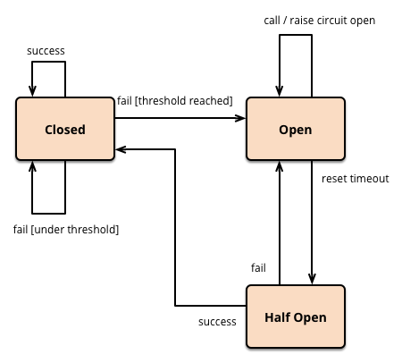（图片来源：https://martinfowler.com/bliki/images/circuitBreaker/state.png）
{kind=link}
关于断路器的实现，最经典也是使用最广泛的莫过于 Netflix 开源的 Hystrix 了，下面我来给你介绍下 Hystrix 是如何实现断路器的。
Hystrix 的断路器也包含三种状态：关闭、打开、半打开。Hystrix 会把每一次服务调用都用 HystrixCommand 封装起来，它会实时记录每一次服务调用的状态，包括成功、失败、超时还是被线程拒绝。当一段时间内服务调用的失败率高于设定的阈值后，Hystrix 的断路器就会进入进入打开状态，新的服务调用就会直接返回，不会向服务提供者发起调用。再等待设定的时间间隔后，Hystrix 的断路器又会进入半打开状态，新的服务调用又可以重新发给服务提供者了；如果一段时间内服务调用的失败率依然高于设定的阈值的话，断路器会重新进入打开状态，否则的话，断路器会被重置为关闭状态。
其中决定断路器是否打开的失败率阈值可以通过下面这个参数来设定：
HystrixCommandProperties.circuitBreakerErrorThresholdPercentage()
而决定断路器何时进入半打开的状态的时间间隔可以通过下面这个参数来设定：
HystrixCommandProperties.circuitBreakerSleepWindowInMilliseconds()
断路器实现的关键就在于如何计算一段时间内服务调用的失败率，那么 Hystrix 是如何做的呢？
答案就是下图所示的滑动窗口算法，下面我来解释一下具体原理。
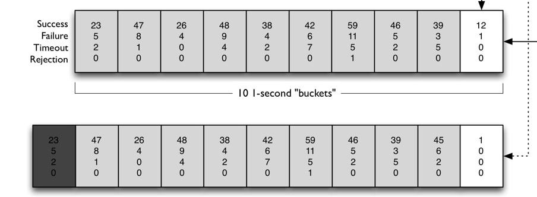（图片来源：https://raw.githubusercontent.com/wiki/Netflix/Hystrix/images/circuit-breaker-1280.png）
{kind=link}
Hystrix 通过滑动窗口来对数据进行统计，默认情况下，滑动窗口包含 10 个桶，每个桶时间宽度为 1 秒，每个桶内记录了这 1 秒内所有服务调用中成功的、失败的、超时的以及被线程拒绝的次数。当新的 1 秒到来时，滑动窗口就会往前滑动，丢弃掉最旧的 1 个桶，把最新 1 个桶包含进来。
任意时刻，Hystrix 都会取滑动窗口内所有服务调用的失败率作为断路器开关状态的判断依据，这 10 个桶内记录的所有失败的、超时的、被线程拒绝的调用次数之和除以总的调用次数就是滑动窗口内所有服务的调用的失败率。
总结
今天我给你讲解了微服务架构下服务调用失败的几种常见手段：超时、重试、双发以及熔断，实际使用时，具体选择哪种手段要根据具体业务情况来决定。
根据我的经验，大部分的服务调用都需要设置超时时间以及重试次数，当然对于非幂等的也就是同一个服务调用重复多次返回结果不一样的来说，不可以重试，比如大部分上行请求都是非幂等的。至于双发，它是在重试基础上进行一定程度的优化，减少了超时等待的时间，对于长尾请求的场景十分有效。采用双发策略后，服务调用的 P999 能大幅减少，经过我的实践证明是提高服务调用成功率非常有效的手段。而熔断能很好地解决依赖服务故障引起的连锁反应，对于线上存在大规模服务调用的情况是必不可少的，尤其是对非关键路径的调用，也就是说即使调用失败也对最终结果影响不大的情况下，更加应该引入熔断。
思考题
Hystrix 采用了线程池隔离的方式来实现不同的服务调用相互之间不影响，你认为这种方式的优缺点有哪些？
欢迎你在留言区写下自己的思考，与我一起讨论。
拓展阅读：
关于熔断的解释：https://martinfowler.com/bliki/CircuitBreaker.html
Hystrix 的使用方法：https://github.com/Netflix/Hystrix/wiki/How-To-Use "
22 如何管理服务配置？
在拆分为微服务架构前，曾经的单体应用只需要管理一套配置；而拆分为微服务后，每一个系统都有自己的配置，并且都各不相同，而且因为服务治理的需要，有些配置还需要能够动态改变，以达到动态降级、切流量、扩缩容等目的，这也是今天我要与你探讨的，在微服务架构下服务配置如何管理的问题。
本地配置
服务配置管理最简单的方案就是把配置当作代码同等看待，随着应用程序代码一起发布。比如下面这段代码用到了开源熔断框架 Hystrix，并且在代码里定义了几个配置，一个是线程的超时时间是 3000ms，一个是熔断器触发的错误比率是 60%。
@HystrixCommand(fallbackMethod = "getDefaultProductInventoryByCode",
commandProperties = {
@HystrixProperty(name = "execution.isolation.thread.timeoutInMilliseconds", value = "3000"),
@HystrixProperty(name = "circuitBreaker.errorThresholdPercentage", value="60")
}
)
public Optional<ProductInventoryResponse> getProductInventoryByCode(String productCode)
{
....
}
还有一种方案就是把配置都抽离到单独的配置文件当中，使配置与代码分离，比如下面这段代码。
@HystrixCommand(commandKey = "inventory-by-productcode", fallbackMethod = "getDefaultProductInventoryByCode")
public Optional<ProductInventoryResponse> getProductInventoryByCode(String productCode)
{
...
}
相应的配置可以抽离到配置文件中，配置文件的内容如下：
hystrix.command.inventory-by-productcode.execution.isolation.thread.timeoutInMilliseconds=2000
hystrix.command.inventory-by-productcode.circuitBreaker.errorThresholdPercentage=60
无论是把配置定义在代码里，还是把配置从代码中抽离出来，都相当于把配置存在了应用程序的本地。这样做的话，如果需要修改配置，就需要重新走一遍代码或者配置的发布流程，在实际的线上业务当中，这是一个很重的操作，往往相当于一次上线发布过程，甚至更繁琐，需要更谨慎。
这时你自然会想，如果能有一个集中管理配置的地方，如果需要修改配置，只需要在这个地方修改一下，线上服务就自动从这个地方同步过去，不需要走代码或者配置的发布流程，不就简单多了吗？没错，这就是下面要讲的配置中心。
配置中心
配置中心的思路就是把服务的各种配置，如代码里配置的各种参数、服务降级的开关甚至依赖的资源等都在一个地方统一进行管理。服务启动时，可以自动从配置中心中拉取所需的配置，并且如果有配置变更的情况，同样可以自动从配置中心拉取最新的配置信息，服务无须重新发布。
具体来讲，配置中心一般包含下面几个功能：
- 配置注册功能
- 配置反注册功能
- 配置查看功能
- 配置变更订阅功能
接下来我来给你详细讲解下配置中心的功能是如何实现的。
1. 配置存储结构
如下图所示，一般来讲，配置中心存储配置是按照 Group 来存储的，同一类配置放在一个 Group 下，以 K, V 键值对存储。
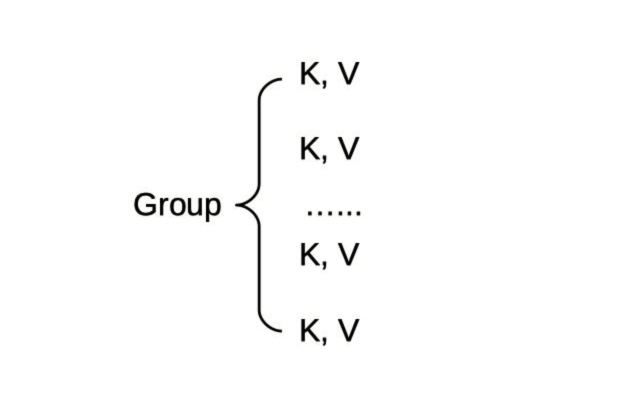
2. 配置注册
配置中心对外提供接口 /config/service?action=register 来完成配置注册功能，需要传递的参数包括配置对应的分组 Group，以及对应的 Key、Value 值。比如调用下面接口请求就会向配置项 global.property 中添加 Key 为 reload.locations、Value 为 /data1/confs/system/reload.properties 的配置。
curl "http://ip:port/config/service?action=register" -d "group=global.property&key=reload.locations&value=/data1/confs/system/reload.properties"
3. 配置反注册
配置中心对外提供接口 config/service?action=unregister 来完成配置反注册功能，需要传递的参数包括配置对象的分组 Group，以及对应的 Key。比如调用下面的接口请求就会从配置项 global.property 中把 Key 为 reload.locations 的配置删除。
curl "http://ip:port/config/service?action=unregister"-d "group=global.property&key=reload.locations"
4. 配置查看
配置中心对外提供接口 config/service?action=lookup 来完成配置查看功能，需要传递的参数包括配置对象的分组 Group，以及对应的 Key。比如调用下面的接口请求就会返回配置项 global.property 中 Key 为 reload.locations 的配置值。
curl "http://ip:port/config/service?action=lookup&group=global.property&key=reload.locations"
5. 配置变更订阅
配置中心对外提供接口 config/service?action=getSign 来完成配置变更订阅接口，客户端本地会保存一个配置对象的分组 Group 的 sign 值，同时每隔一段时间去配置中心拉取该 Group 的 sign 值，与本地保存的 sign 值做对比。一旦配置中心中的 sign 值与本地的 sign 值不同，客户端就会从配置中心拉取最新的配置信息。比如调用下面的接口请求就会返回配置项 global.property 中 Key 为 reload.locations 的配置值。
curl "http://ip:port/config/service？action=getSign&group=global.property"
讲到这里，你应该对配置中心的作用有所了解了，它可以便于我们管理服务的配置信息，并且如果要修改配置信息的话，只需要同配置中心交互就可以了，应用程序会通过订阅配置中心的配置，自动完成配置更新。那么实际业务中，有哪些场景应用配置中心比较合适呢？下面我就结合自己的经验，列举几个配置中心的典型应用场景，希望能给你一些启发。
- 资源服务化。对于大部分互联网业务来说，在应用规模不大的时候，所依赖的资源如 Memcached 缓存或者 MCQ 消息队列的数量也不多，因此对应的资源的 IP 可以直接写在配置里。但是当业务规模发展到一定程度后，所依赖的这些资源的数量也开始急剧膨胀。以微博的业务为例，核心缓存 Memcached 就有上千台机器，经常会遇到个别机器因为硬件故障而不可用，这个时候如果采用的是本地配置的话，就需要去更改本地配置，把不可用的 IP 改成可用的 IP，然后发布新的配置，这样的过程十分不便。但如果采用资源服务化的话，把对应的缓存统统归结为一类配置，然后如果有个别机器不可用的话，只需要在配置中心把对应的 IP 换成可用的 IP 即可，应用程序会自动同步到本机，也无须发布。
- 业务动态降级。微服务架构下，拆分的服务越多，出现故障的概率就越大，因此需要有对应的服务治理手段，比如要具备动态降级能力，在依赖的服务出现故障的情况下，可以快速降级对这个服务的调用，从而保证不受影响。为此，服务消费者可以通过订阅依赖服务是否降级的配置，当依赖服务出现故障的时候，通过向配置中心下达指令，修改服务的配置为降级状态，这样服务消费者就可以订阅到配置的变更，从而降级对该服务的调用。
- 分组流量切换。前面我提到过，为了保证异地多活以及本地机房调用，一般服务提供者的部署会按照 IDC 维度进行部署，每个 IDC 划分为一个分组，这样的话，如果一个 IDC 出现故障，可以把故障 IDC 机房的调用切换到其他正常 IDC。为此，服务消费者可以通过订阅依赖服务的分组配置，当依赖服务的分组配置发生变更时，服务消费者就对应的把调用切换到新的分组，从而实现分组流量切换。
开源配置中心与选型
讲到这里，你可以根据我前面对配置中心的讲解自己去实现一个配置中心，但其实对于大部分中小团队来说，目前业界已经开源的配置中心实现可以说功能已经十分完善了，并且经过很多公司实际线上业务的充分论证，能满足大多数业务的需求，所以我建议是尽量选择成熟的开源配置中心实现，那么有哪些开源的配置中心可以使用呢？下面我就简单介绍下三个典型的开源实现：
- Spring Cloud Config。Spring Cloud 中使用的配置中心组件，只支持 Java 语言，配置存储在 git 中，变更配置也需要通过 git 操作，如果配置中心有配置变更，需要手动刷新。
- Disconf。百度开源的分布式配置管理平台，只支持 Java 语言，基于 Zookeeper 来实现配置变更实时推送给订阅的客户端，并且可以通过统一的管理界面来修改配置中心的配置。
- Apollo。携程开源的分布式配置中心，支持 Java 和.Net 语言，客户端和配置中心通过 HTTP 长连接实现实时推送，并且有统一的管理界面来实现配置管理。
在实际选择的时候，Spring Cloud Config 作为配置中心的功能比较弱，只能通过 git 命令操作，而且变更配置的话还需要手动刷新，如果不是采用 Spring Cloud 框架的话不建议选择。而 Disconf 和 Apollo 的功能都比较强大，在国内许多互联网公司内部都有大量应用，其中 Apollo 对 Spring Boot 的支持比较好，如果应用本身采用的是 Spring Boot 开发的话，集成 Apollo 会更容易一些。
总结
今天我给你讲解了微服务架构下如何使用配置中心对服务的配置进行管理，以及实际业务中可能用到的场景，最后给出了一些开源配置中心的解决方案。关于业务中是否需要用到配置中心，以及选择哪种配置中心，要根据实际情况而定，如果业务比较简单，配置比较少并且不经常变更的话，采用本地配置是最简单的方案，这样的话不需要额外引入配置中心组件；相反，如果业务比较复杂，配置多而且有动态修改配置的需求的话，强烈建议引入配置中心来进行管理，而且最好做到配置变更实时推送给客户端，并且可以通过统一的管理界面来管理配置，这样的话能极大地降低运维的复杂度，减少人为介入，从而提高效率。
思考题
在前面我讲到 Zookeeper、Consul、etcd 作为服务的注册中心时，可以提供强一致性的服务发现功能，那么它们能够作为配置中心吗？为什么？
欢迎你在留言区写下自己的思考，与我一起讨论。 +
23 如何搭建微服务治理平台？
在学习今天的内容前，我们先来回顾下专栏第 9 期。我给你讲过单体应用改造为微服务架构后，服务调用从本地调用变成了远程方法调用后，面临的各种不确定因素变多了，一方面你需要能够监控各个服务的实时运行状态、服务调用的链路和拓扑图；另一方面你需要在出现故障时，能够快速定位故障的原因并可以通过诸如降级、限流、切流量、扩容等手段快速干预止损。这个时候就需要我今天要讲的微服务治理平台了。
那么微服务治理平台都具备哪些功能呢，具体该如何搭建一套微服务治理平台呢？
微服务治理平台的基本功能
你可能先会问，到底什么是微服务治理平台？根据我的理解，微服务治理平台就是与服务打交道的统一入口，无论是开发人员还是运维人员，都能通过这个平台对服务进行各种操作，比如开发人员可以通过这个平台对服务进行降级操作，运维人员可以通过这个平台对服务进行上下线操作，而不需要关心这个操作背后的具体实现。
接下来我就结合下面这张图，给你介绍一下一个微服务治理平台应该具备哪些基本功能。

1. 服务管理
通过微服务治理平台，可以调用注册中心提供的各种管理接口来实现服务的管理。根据我的经验，服务管理一般包括以下几种操作：
- 服务上下线。当上线一个新服务的时候，可以通过调用注册中心的服务添加接口，新添加一个服务，同样要下线一个已有服务的时候，也可以通过调用注册中心的服务注销接口，删除一个服务。
- 节点添加 / 删除。当需要给服务新添加节点时候，可以通过调用注册中心的节点注册接口，来给服务新增加一个节点。而当有故障节点出现或者想临时下线一些节点时，可以通过调用注册中心的节点反注册接口，来删除节点。
- 服务查询。这个操作会调用注册中心的服务查询接口，可以查询当前注册中心里共注册了多少个服务，每个服务的详细信息。
- 服务节点查询。这个操作会调用注册中心的节点查询接口，来查询某个服务下一共有多少个节点。
2. 服务治理
通过微服务治理平台，可以调用配置中心提供的接口，动态地修改各种配置来实现服务的治理。根据我的经验，常用的服务治理手段包括以下几种：
- 限流。一般是在系统出现故障的时候，比如像微博因为热点突发事件的发生，可能会在短时间内流量翻几倍，超出系统的最大容量。这个时候就需要调用配置中心的接口，去修改非核心服务的限流阈值，从而减少非核心服务的调用，给核心服务留出充足的冗余度。
- 降级。跟限流一样，降级也是系统出现故障时的应对方案。要么是因为突发流量的到来，导致系统的容量不足，这时可以通过降级一些非核心业务，来增加系统的冗余度；要么是因为某些依赖服务的问题，导致系统被拖慢，这时可以降级对依赖服务的调用，避免被拖死。
- 切流量。通常为了服务的异地容灾考虑，服务部署在不止一个 IDC 内。当某个 IDC 因为电缆被挖断、机房断电等不可抗力时，需要把故障 IDC 的流量切换到其他正常 IDC，这时候可以调用配置中心的接口，向所有订阅了故障 IDC 服务的消费者下发指令，将流量统统切换到其他正常 IDC，从而避免服务消费者受影响。
3. 服务监控
微服务治理平台一般包括两个层面的监控。一个是整体监控，比如服务依赖拓扑图，将整个系统内服务间的调用关系和依赖关系进行可视化的展示；一个是具体服务监控，比如服务的 QPS、AvgTime、P999 等监控指标。其中整体监控可以使用服务追踪系统提供的服务依赖拓扑图，而具体服务监控则可以通过 Grafana 等监控系统 UI 来展示。
4. 问题定位
微服务治理平台实现问题定位，可以从两个方面来进行。一个是宏观层面，即通过服务监控来发觉异常，比如某个服务的平均耗时异常导致调用失败；一个是微观层面，即通过服务追踪来具体定位一次用户请求失败具体是因为服务调用全链路的哪一层导致的。
5. 日志查询
微服务治理平台可以通过接入类似 ELK 的日志系统，能够实时地查询某个用户的请求的详细信息或者某一类用户请求的数据统计。
6. 服务运维
微服务治理平台可以调用容器管理平台，来实现常见的运维操作。根据我的经验，服务运维主要包括下面几种操作：
- 发布部署。当服务有功能变更，需要重新发布部署的时候，可以调用容器管理平台分批按比例进行重新部署，然后发布到线上。
- 扩缩容。在流量增加或者减少的时候，需要相应地增加或者缩减服务在线上部署的实例，这时候可以调用容器管理平台来扩容或者缩容。
如何搭建微服务治理平台
微服务治理平台之所以能够实现上面所说的功能，关键之处就在于它能够封装对微服务架构内的各个基础设施组件的调用，从而对外提供统一的服务操作 API，而且还提供了可视化的界面，以方便开发人员和运维人员操作。
根据我的经验，一个微服务治理平台的组成主要包括三部分：Web Portal 层、API 层以及数据存储 DB 层，结合下面这张图我来详细讲解下每一层该如何实现。
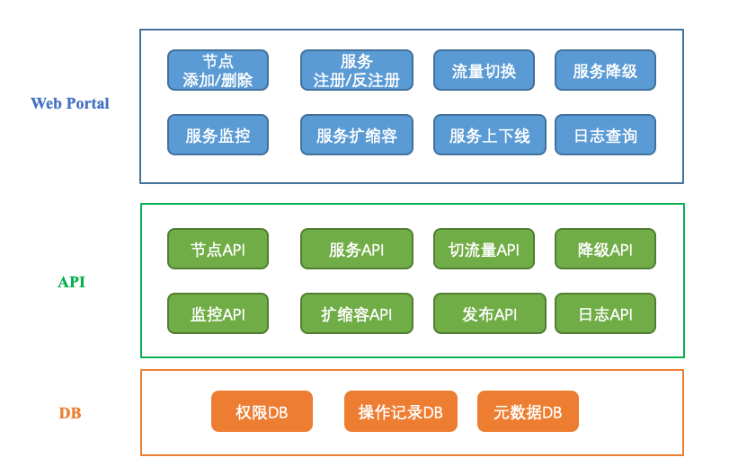
第一层：Web Portal。也就是微服务治理平台的前端展示层，一般包含以下几个功能界面：
- 服务管理界面，可以进行节点的操作，比如查询节点、删除节点。
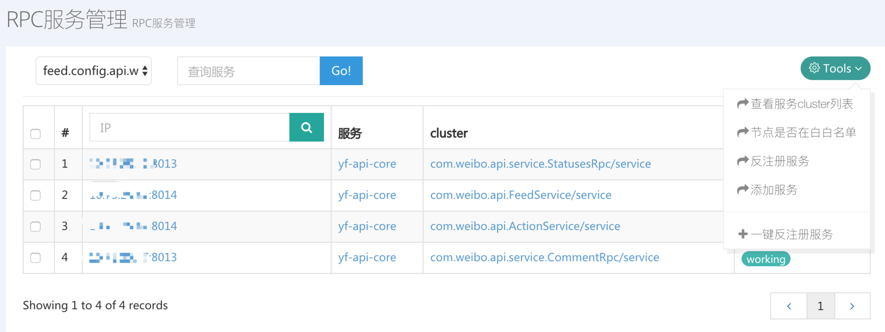
- 服务治理界面，可以进行服务治理操作，比如切流量、降级等，还可以查看操作记录。
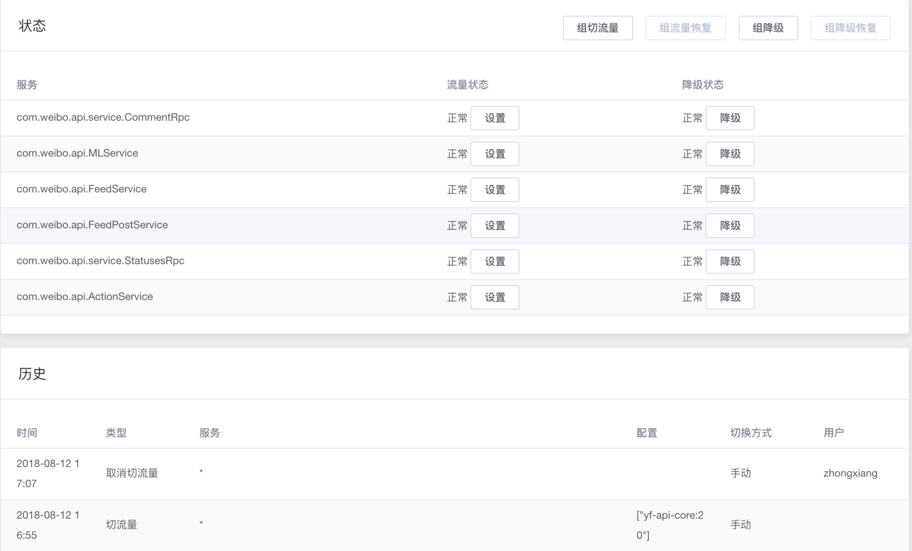
- 服务监控界面，可以查看服务的详细信息，比如 QPS、AvgTime、耗时分布区间以及 P999 等。
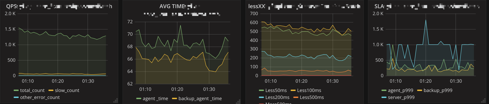
- 服务运维界面，可以执行服务的扩缩容操作，还可以查看扩缩容的操作历史。
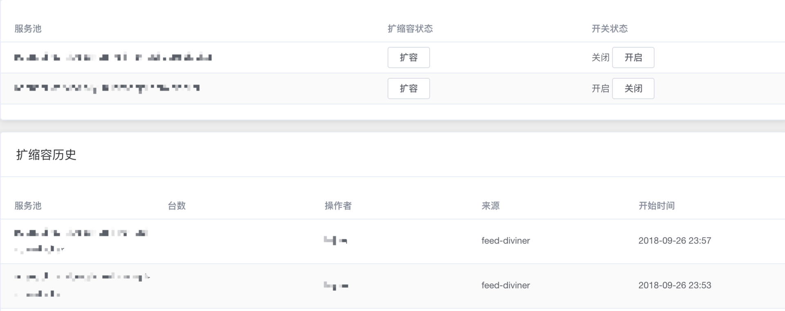
第二层，API。也就是微服务治理平台的后端服务层，这一层对应的需要提供 Web Portal 接口以调用，对应的一般包含下面几个接口功能：
- 添加服务接口。这个接口会调用注册中心提供的服务添加接口来新发布一个服务。
- 删除服务接口。这个接口会调用注册中心提供的服务注销接口来下线一个服务。
- 服务降级 / 限流 / 切流量接口。这几个接口会调用配置中心提供的配置修改接口，来修改对应服务的配置，然后订阅这个服务的消费者就会从配置中心拉取最新的配置，从而实现降级、限流以及流量切换。
- 服务扩缩容接口。这个接口会调用容器平台提供的扩缩容接口，来实现服务的实例添加和删除。
- 服务部署接口。这个接口会调用容器平台提供的上线部署接口，来实现服务的线上部署。
第三层，DB。也就是微服务治理平台的数据存储层，因为微服务治理平台不仅需要调用其他组件提供的接口，还需要存储一些基本信息，主要分为以下几种：
- 用户权限。因为微服务治理平台的功能十分强大，所以要对用户的权限进行管理。一般可以分为可浏览、可更改以及管理员三个权限。而且还需要对可更改的权限进行细分，按照不同服务的负责人进行权限划分，一个人只能对它负责的服务的进行更改操作，而不能修改其他人负责的服务。
- 操作记录。用来记录下用户在平台上所进行的变更操作，比如降级记录、扩缩容记录、切流量记录等。
- 元数据。主要是用来把服务在各个系统中对应的记录映射到微服务治理平台中，统一进行管理。比如某个服务在监控系统里可能有个特殊标识，在注册中心里又使用了另外一个标识，为了统一就需要在微服务治理平台统一进行转换，然后进行数据串联。
总结
可以说一个微服务框架是否成熟，除了要看它是否具备服务治理能力，还要看是否有强大的微服务治理平台。因为微服务治理平台能够将多个系统整合在一起，无论是对开发还是运维来说，都能起到事半功倍的作用，这也是当前大部分开源微服务框架所欠缺的部分，所以对于大部分团队来说，都需要自己搭建微服务治理平台。不过好在微服务治理平台本身的架构并不复杂，你可以根据自己的实际需要，来决定微服务治理平台具备哪些功能。
思考题
除了我上面列举的一些功能以外，你觉得微服务治理平台还可以包含哪些功能？说说你的理由。
欢迎你在留言区写下自己的思考，与我一起讨论。 (
24 微服务架构该如何落地？
专栏前面的文章我给你讲解了微服务架构的各个组成部分，以及实践过程中可能遇到的问题和对应的解决方案，到这里你应该对微服务架构有了一个完整的认识。那么在实际项目中，如何让一个团队把我们所学的微服务架构落地呢？
今天我就结合自己的经验，定位在中小规模团队，谈谈微服务架构到底该如何落地。
组建合适的技术团队
经过我前面的讲解，你应该认识到微服务架构相比于单体应用来说复杂度提升了很多，这其中涉及很多组件，比如注册中心、配置中心、RPC 框架、监控系统、追踪系统、服务治理等，每个组件都需要专门的人甚至专家把控才能 hold 住，不然微服务架构的落地就相当于空中楼阁，虚无缥缈。
所以想要落地微服务，首先需要合适的人，也就是组建一支合适的技术团队。你一定很容易想到，是不是只有架构师适合做微服务架构的开发？一定程度上，这是合理的，因为微服务架构所涉及的具体技术，比如 CAP 理论、底层网络可靠性保证、Netty 高并发框架等，都对技术的深度要求比较高，一般有经验的架构师才能掌握，所以这个技术团队必须包含技术能力很强的架构师。但是还要考虑到微服务架构最后还是要落地到业务当中，既要满足业务的需求，也要防止一种情况的发生，那就是全部由架构人员组成技术团队，根据自己的设想，脱离了实际的业务场景，最后开发出来的架构中看不中用，业务无法实际落地，既打击了团队人员积极性，又对业务没有实际价值，劳民伤财。所以这支技术团队，也必须包含做业务懂业务的开发人员，只有他们了解业务的实际痛点以及落地过程中的难点，这样才能保证最后设计出的微服务架构是贴合业务实际的，并且最后是能够实际落地的。
从一个案例入手
当你的团队决定要对业务进行微服务架构改造时，要避免一上来就妄想将整个业务进行服务化拆分、追求完美。这种想法是很危险的，一切的技术改造都应当以给业务创造价值为宗旨，所以业务的稳定性要放在第一位，切忌好高骛远。
正确的方法是首先从众多业务中找到一个小的业务进行试点，前期的技术方案以满足这个小的业务需求为准，力求先把这个小业务的微服务架构落地实施，从中发现各种问题并予以解决，然后才可以继续考虑更大规模的推广。这样的话，即使微服务架构的改造因为技术方案不成熟，对业务造成了影响，也只是局限在一个小的业务之中，不会对整体业务造成太大影响。否则的话，如果因为微服务架构的改造给业务带来灾难性的后果，在许多技术团队的决策者来看，可能微服务架构的所带来的种种好处也不足以抵消其带来的风险，最后整个微服务架构的改造可能就夭折了。
回想一下微博业务的微服务改造，从 2013 年开始进行微服务架构的研发，到 2014 年用户关系服务开始进行微服务改造，再到 2015 年 Feed 业务开始进行微服务改造，从几个服务上线后经过春晚流量的考验后，逐步推广到上百个服务的上线，整个过程持续了两年多时间。虽然周期比较长，但是对于大流量的业务系统来说，稳定性永远是在第一位的，业务架构改造追求的是稳步推进，中间可以有小的波折，但对整体架构的演进方向不会产生影响。
做好技术取舍
我在搭建微服务架构的时候，其实做的最多的工作就是技术取舍。比如在开发 RPC 框架的时候，是选择自研呢还是采用开源 RPC 框架呢？如果自研的话，目前团队系统的主要语言是 Java，那么 RPC 框架是只支持 Java 语言就可以了，还是考虑到将来有可能需要支持其他语言呢？
我的经验就是一切以业务的实际情况为准，只要满足当前的需求就好，切忌好高骛远，尤其是对于技术能力很强的开发者来说，很容易陷入对技术的完美追求，投入过多精力在架构的雕花工作上，而忽视了眼下业务最实际的需求。尤其是在团队技术人力紧张，开发周期短的时候，更需要集中力量去满足业务最迫切的需求。而对于架构的完善以及一些附加功能的追求，可以在后面业务落地后逐步进行完善。
以微博的服务化框架 Motan 为例，因为微博平台的开发语言主要是 Java，所以最早 Motan 只支持 Java 语言。从 2017 年开始，有了跨语言服务化调用的需求，才在此基础上，对架构进行了升级，加入了对 Go、PHP 等语言的支持。而且在早期业务开始使用时，只开发了最基本的几个核心组件如 RPC 框架、注册中心和配置中心，以及简单的监控系统，而服务追踪系统、服务治理平台这些高级的功能都没有，后来随着重要业务进行微服务改造的越来越多，不断补充技术人力，才开始完善服务追踪系统以及服务治理平台。
除此之外，在做技术选型的时候，还要考虑到团队的实际掌控能力，尤其是对一些新技术方案的引入要尤其慎重。如果没有合适的人能够掌控这些技术，那么贸然引入新技术，一旦业务受影响时，如果没有人能有效干预，这对业务来说是灾难性的后果。
微博在做注册中心选型的时候，没有选取当时很火的 Zookeeper 的一个重要原因就是，它底层依赖的是 HBase 存储，当时团队中还没有有经验的运维和开发人员；但团队对 Redis 十分了解，所以基于 Redis 存储，自研了一套注册中心，完全能够满足需求，并且又没有引入技术不可控因素。
采用 DevOps
微服务架构带来的不光是业务开发模式的改变，对测试和运维的影响也是根本性的。以往在单体应用架构时，开发只需要整体打包成一个服务，交给测试去做自动化测试、交给运维去部署发布就可以了。但是微服务架构下，一个单体应用被拆分成多个细的微服务，并且需要独自开发、测试和上线，如果继续按照之前的单体应用模式运维，那么测试和运维的工作量相当于成倍的增加。因此迫切需要对以往的开发、测试和运维模式进行升级，从我的经验来看，最好的方案就是采用 DevOps，对微服务架构进行一站式开发、测试、上线和运维。
在单体应用架构下，开发、测试和运维这三者角色的区分是十分比较明显的，分属于不同的部门。而在微服务架构下，由于服务被拆分得足够细，每个服务都需要完成独立的开发、测试和运维工作，有自己完整的生命周期，所以需要将一个服务从代码开发、单元测试、集成测试以及服务发布都自动化起来。这样的话，测试人员就可以从众多微服务的测试中解放出来，着重进行自动化测试用例的维护；运维人员也可以从众多微服务的上线发布工作中解放出来，着重进行 DevOps 体系工具的建设。而每个服务的开发负责人，需要对服务的整个生命周期负责，无论是在代码检查阶段出现问题，还是测试阶段和发布阶段出现问题，都需要去解决。
统一微服务治理平台
以前我们只需要关心一个大的单体应用的健康状况，所以团队可以针对大的单体应用专门监控。但进行微服务改造后，拆分出几个甚至上百个服务之后，再靠传统的运维方案去管理，就会显得力不从心了。
而且微服务架构下会衍生出许多新的问题，比如 RPC 调用超时、注册中心获取失败、服务容量不足等，有些问题需要开发介入去定位分析，而有些问题需要运维介入，十分混乱。
微博在进行微服务改造初期，就面临着诸多问题，比如某一个微服务的容量不足了，需要进行扩容，而它所依赖的服务也需要进行扩容，但这种依赖关系只有业务的开发人员清楚，运维人员其实并不知晓详情。还有就是某个服务依赖的另一个服务出现故障，需要紧急降级，而此时如果运维人员操作的话并不知道哪个开关，虽然开发知晓，但开发实际上又没有线上服务器的操作权限。
所以，这时就迫切需要一个微服务治理平台，能够将微服务的服务治理以及各种运维操作都统一管理起来，并且打破开发和运维之间的隔阂，给予同样的权限，让服务的开发人员真正做到对自己的服务负责，不仅要对自己的服务情况了如指掌，还需要能对自己的服务进行治理和运维。
基于此，也就需要开发和运维深入合作，发挥各自专业的特长，将微服务治理的功能以及之前运维系统的基础功能结合在一起，打造成“一站式”微服务治理平台。
总结
今天我给你讲解了微服务架构如何在业务中进行落地，总结来讲就是，首先你必须组建一支合适的技术团队，这其中不仅要包含资深的架构师，还需要包含业务的开发者。在选择业务进行微服务架构改造时，不能追大求全，正确的做法应当是先以一个适当规模的业务进行微服务改造，走完整个微服务架构落地的过程，从而找出问题，不断打磨到成熟可用的状态，再推广到更多更重要的业务当中。在改造的过程中，要做好技术取舍，以团队人员的实际情况以及业务的实际需求为准绳，切忌追新立异，避免给业务引入不可控因素，留下“架构债”。同时，微服务架构的过程，也是团队组织变革的过程，传统意义上的开发、测试和运维明确的分割线会被打破，出现一种 DevOps 工程师的角色，他需要对服务全生命周期负责。为了做到这一点，就需要一个统一的微服务治理平台，融合服务治理和运维的各种功能。
实际上，每个团队都有各自不同的情况，但只要秉承上面这些基本准则，就可以走出一条适合自己团队的微服务架构路线出来，这其中没有高低之分，适合自己的才是最好的。
思考题
传统单体应用下进行测试只需要启动单体应用部署一个测试环境即可进行集成测试，但经过微服务改造后，一个功能依赖了多个微服务，每个微服务都有自己的测试环境，这个时候该如何进行集成测试呢？
欢迎你在留言区写下自己的思考，与我一起讨论。 (
25 微服务为什么要容器化？
专栏前面的文章，我主要给你讲解了微服务架构的基础组成以及在具体落地实践过程中的会遇到的问题和解决方案，这些是掌握微服务架构最基础的知识。从今天开始，我们将进一步深入微服务架构进阶的内容，也就是微服务与容器、DevOps 之间的关系。它们三个虽然分属于不同领域，但却有着千丝万缕的关系，可以说没有容器的普及，就没有微服务架构的蓬勃发展，也就没有 DevOps 今天的盛行其道。
之后我还会具体分析它们三者之间是如何紧密联系的，今天我们先来看微服务为什么要容器化。
微服务带来的问题
单体应用拆分成多个微服务后，能够实现快速开发迭代，但随之带来的问题是测试和运维部署的成本的提升。相信拆分微服务的利弊你早已耳熟能详，我讲个具体的例子。微博业务早期就是一个大的单体 Web 应用，在测试和运维的时候，只需要把 Web 应用打成一个大的 WAR 包，部署到 Tomcat 中去就行了。后来拆分成多个微服务之后，有的业务需求需要同时修改多个微服务的代码，这时候就有多个微服务都需要打包、测试和上线发布，一个业务需求就需要同时测试多个微服务接口的功能，上线发布多个系统，给测试和运维的工作量增加了很多。这个时候就需要有办法能够减轻测试和运维的负担，我在上一讲给出的解决方案是 DevOps。
DevOps 可以简单理解为开发和运维的结合，服务的开发者不再只负责服务的代码开发，还要负责服务的测试、上线发布甚至故障处理等全生命周期过程，这样的话就把测试和运维从微服务拆分后所带来的复杂工作中解放出来。DevOps 要求开发、测试和发布的流程必须自动化，这就需要保证开发人员将自己本地部署测试通过的代码和运行环境，能够复制到测试环境中去，测试通过后再复制到线上环境进行发布。虽然这个过程看上去好像复制代码一样简单，但在现实时，本地环境、测试环境以及线上环境往往是隔离的，软件配置环境的差异也很大，这也导致了开发、测试和发布流程的割裂。
而且还有一个问题是，拆分后的微服务相比原来大的单体应用更加灵活，经常要根据实际的访问量情况做在线扩缩容，而且通常会采用在公有云上创建的 ECS 来扩缩容。这又给微服务的运维带来另外一个挑战，因为公有云上创建的 ECS 通常只包含了基本的操作系统环境，微服务运行依赖的软件配置等需要运维再单独进行初始化工作，因为不同的微服务的软件配置依赖不同，比如 Java 服务依赖了 JDK，就需要在 ECS 上安装 JDK，而且可能不同的微服务依赖的 JDK 版本也不相同，一般情况下新的业务可能依赖的版本比较新比如 JDK 8，而有些旧的业务可能依赖的版本还是 JDK 6，为此服务部署的初始化工作十分繁琐。
而容器技术的诞生恰恰解决了上面这两个问题，为什么容器技术可以解决本地、测试、线上环境的隔离，解决部署服务初始化繁琐的问题呢？下面我就以业界公认的容器标准 Docker 为例，来看看 Docker 是如何解决这两个问题的。
什么是 Docker
Docker 是容器技术的一种，事实上已经成为业界公认的容器标准，要理解 Docker 的工作原理首先得知道什么是容器。
容器翻译自英文的 Container 一词，而 Container 又可以翻译成集装箱。我们都知道，集装箱的作用就是，在港口把货物用集装箱封装起来，然后经过货轮从海上运输到另一个港口，再在港口卸载后通过大货车运送到目的地。这样的话，货物在世界的任何地方流转时，都是在集装箱里封装好的，不需要根据是在货轮上还是大货车上而对货物进行重新装配。同样，在软件的世界里，容器也起到了相同的作用，只不过它封装的是软件的运行环境。容器的本质就是 Linux 操作系统里的进程，但与操作系统中运行的一般进程不同的是，容器通过Namespace和Cgroups这两种机制，可以拥有自己的 root 文件系统、自己的网络配置、自己的进程空间，甚至是自己的用户 ID 空间，这样的话容器里的进程就像是运行在宿主机上的另外一个单独的操作系统内，从而实现与宿主机操作系统里运行的其他进程隔离。
Docker 也是基于 Linux 内核的 Cgroups、Namespace 机制来实现进程的封装和隔离的，那么 Docker 为何能把容器技术推向一个新的高度呢？这就要从 Docker 在容器技术上的一项创新 Docker 镜像说起。虽然容器解决了应用程序运行时隔离的问题，但是要想实现应用能够从一台机器迁移到另外一台机器上还能正常运行，就必须保证另外一台机器上的操作系统是一致的，而且应用程序依赖的各种环境也必须是一致的。Docker 镜像恰恰就解决了这个痛点，具体来讲，就是Docker 镜像不光可以打包应用程序本身，而且还可以打包应用程序的所有依赖，甚至可以包含整个操作系统。这样的话，你在你自己本机上运行通过的应用程序，就可以使用 Docker 镜像把应用程序文件、所有依赖的软件以及操作系统本身都打包成一个镜像，可以在任何一个安装了 Docker 软件的地方运行。
Docker 镜像解决了 DevOps 中微服务运行的环境难以在本地环境、测试环境以及线上环境保持一致的难题。如此一来，开发就可以把在本地环境中运行测试通过的代码，以及依赖的软件和操作系统本身打包成一个镜像，然后自动部署在测试环境中进行测试，测试通过后再自动发布到线上环境上去，整个开发、测试和发布的流程就打通了。
同时，无论是使用内部物理机还是公有云的机器部署服务，都可以利用 Docker 镜像把微服务运行环境封装起来，从而屏蔽机器内部物理机和公有云机器运行环境的差异，实现同等对待，降低了运维的复杂度。
微服务容器化实践
Docker 能帮助解决服务运行环境可迁移问题的关键，就在于 Docker 镜像的使用上，实际在使用 Docker 镜像的时候往往并不是把业务代码、依赖的软件环境以及操作系统本身直接都打包成一个镜像，而是利用 Docker 镜像的分层机制，在每一层通过编写 Dockerfile 文件来逐层打包镜像。这是因为虽然不同的微服务依赖的软件环境不同，但是还是存在大大小小的相同之处，因此在打包 Docker 镜像的时候，可以分层设计、逐层复用，这样的话可以减少每一层镜像文件的大小。
下面我就以微博的业务 Docker 镜像为例，来实际讲解下生产环境中如何使用 Docker 镜像。正如下面这张图所描述的那样，微博的 Docker 镜像大致分为四层。
- 基础环境层。这一层定义操作系统运行的版本、时区、语言、yum 源、TERM 等。
- 运行时环境层。这一层定义了业务代码的运行时环境，比如 Java 代码的运行时环境 JDK 的版本。
- Web 容器层。这一层定义了业务代码运行的容器的配置，比如 Tomcat 容器的 JVM 参数。
- 业务代码层。这一层定义了实际的业务代码的版本，比如是 V4 业务还是 blossom 业务。
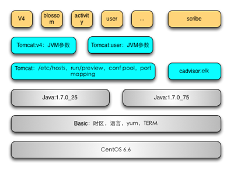
这样的话，每一层的镜像都是在上一层镜像的基础上添加新的内容组成的，以微博 V4 镜像为例，V4 业务的 Dockerfile 文件内容如下：
FROM registry.intra.weibo.com/weibo_rd_content/tomcat_feed:jdk8.0.40_tomcat7.0.81_g1_dns
ADD confs /data1/confs/
ADD node_pool /data1/node_pool/
ADD authconfs /data1/authconfs/
ADD authkey.properties /data1/
ADD watchman.properties /data1/
ADD 200.sh /data1/weibo/bin/200.sh
ADD 503.sh /data1/weibo/bin/503.sh
ADD catalina.sh /data1/weibo/bin/catalina.sh
ADD server.xml /data1/weibo/conf/server.xml
ADD logging.properties /data1/weibo/conf/logging.properties
ADD ROOT /data1/weibo/webapps/ROOT/
RUN chmod +x /data1/weibo/bin/200.sh /data1/weibo/bin/503.sh /data1/weibo/bin/catalina.sh
WORKDIR /data1/weibo/bin
FROM 代表了上一层镜像文件是“tomcat_feed:jdk8.0.40_tomcat7.0.81_g1_dns”，从名字可以看出上一层镜像里包含了 Java 运行时环境 JDK 和 Web 容器 Tomcat，以及 Tomcat 的版本和 JVM 参数等；ADD 就是要在这层镜像里添加的文件， 这里主要包含了业务的代码和配置等；RUN 代表这一层镜像启动时需要执行的命令；WORKDIR 代表了这一层镜像启动后的工作目录。这样的话就可以通过 Dockerfile 文件在上一层镜像的基础上完成这一层镜像的制作。
总结
今天我给你讲解了微服务拆分后相比于传统的单体应用所带来的两个问题，一个是测试和发布工作量的提升，另一个是在弹性扩缩容时不同微服务所要求的软件运行环境差异带来的机器初始化复杂度的提升，而 Docker 利用 Docker 镜像对软件运行环境的完美封装正好解决了这两个问题。
正是因为 Docker 可以做到一处通过、到处运行，所以对业务的价值极大，解决了以前应用程序在开发环境、测试环境以及生产环境之间的移植难的问题，极大提高了运维自动化的水平，也为 DevOps 理念的流行和业务上云提供了基础。
可见容器化改造对微服务是十分必要的，但 Docker 也不是“银弹”，同样会产生新的复杂度问题，比如引入 Docker 后旧的针对物理机的运维模式就无法适应了，需要一种新的针对容器的运维模式。所以接下来，我将分三期，给你详细讲解微服务容器化后该如何运维。
思考题
Docker 的概念乍一看与虚拟机有些类似，你认为它们有什么不同之处吗？分别适合什么应用场景？
欢迎你在留言区写下自己的思考，与我一起讨论。 =
26 微服务容器化运维：镜像仓库和资源调度
专栏上一期我给你讲解了容器化技术解决了单体应用拆分为微服务后，所带来的服务测试和发布运维复杂度提升的问题，可以说容器化技术天生就是为微服务而生。但微服务容器化后又带来了一个新的挑战，那就是容器如何运维的问题。
为什么微服务容器化的运维又成了新问题？
对于大部分业务团队来说，在进行容器化以前，服务都是部署在物理机或者虚拟机上，运维往往有一套既有的运维平台来发布服务。我就以微博的运维平台 JPool 来举例，当有服务要发布的时候，JPool 会根据服务所属的集群（一般一个业务线是一个集群）运行在哪个服务池（一般一个业务线有多个服务池），找到对应的物理机或者虚拟机 IP，然后把最新的应用程序代码通过 Puppet 等工具分批逐次地发布到这些物理机或者虚拟机上，然后重新启动服务，这样就完成一个服务的发布流程。
但是现在情况变了，业务容器化后，运维面对的不再是一台台实实在在的物理机或者虚拟机了，而是一个个 Docker 容器，它们可能都没有固定的 IP，这个时候要想服务发布该怎么做呢？
这时候就需要一个面向容器的新型运维平台，它能够在现有的物理机或者虚拟机上创建容器，并且能够像运维物理机或者虚拟机一样，对容器的生命周期进行管理，通常我们叫它“容器运维平台”。
根据我的经验，一个容器运维平台通常包含以下几个组成部分：镜像仓库、资源调度、容器调度和服务编排。所以，关于微服务容器化运维的内容，我会分为 3 期，今天先来看容器运维平台的镜像仓库和资源调度，后面两期会介绍容器调度、服务编排和微博容器运维平台的建设。
镜像仓库
Docker 容器运行依托的是 Docker 镜像，也就是说要发布服务，首先必须把镜像发布到各个机器上去，这个时候问题就来了，这个镜像该放在哪？如何把镜像发布到各个机器上去？这时候你就要依靠镜像仓库了。
镜像仓库的概念其实跟 Git 代码仓库类似，就是有一个集中存储的地方，把镜像存储在这里，在服务发布的时候，各个服务器都访问这个集中存储来拉取镜像，然后启动容器。
Docker 官方提供了一个镜像仓库地址：https://hub.docker.com/，对于测试应用或者小规模的业务可以直接使用。但对于大部分业务团队来说，出于安全和访问速度的需要，都会搭建一套私有的镜像仓库。那么具体该如何搭建一套私有的镜像仓库呢？下面我就结合微博的实践，和你聊聊这里面的门道。
1. 权限控制
镜像仓库首先面临的第一个问题就是权限控制的问题，也就是说哪些用户可以拉取镜像，哪些用户可以修改镜像。
一般来说，镜像仓库都设有两层权限控制：一是必须登录才可以访问，这是最外层的控制，它规定了哪些人可以访问镜像仓库；二是对镜像按照项目的方式进行划分，每个项目拥有自己的镜像仓库目录，并且给每个项目设置项目管理员、开发者以及客人这三个角色，只有项目管理员和开发者拥有自己镜像仓库目录下镜像的修改权限，而客人只拥有访问权限，项目管理员可以给这个项目设置哪些人是开发者。
这个权限控制就跟大厦办公楼的管理类似，你要进入大厦里的一个办公室，首先必须具备进入大厦的权限，这个权限是在大厦里所有办公的人都有的。然后你还得具备大厦里你办公室所在楼层的门禁，这样才能进入办公室。不同楼层的人权限不同，只能进入自己楼层的办公室。如果某个办公室有新来的员工，首先要给他分配大厦的进入权限，然后还要这个办公室的管理员给他分配办公室的权限。是不是这样讲权限控制就好理解一些了呢。
2. 镜像同步
在实际的生产环境中，往往需要把镜像同时发布到几十台或者上百台集群节点上，单个镜像仓库实例往往受带宽原因限制无法同时满足大量节点的下载需求，这个时候就需要配置多个镜像仓库实例来做负载均衡，同时也就产生镜像在多个镜像仓库实例之间同步的问题了。显然通过手工维护十分繁琐，那有什么好的办法吗？
一般来说，有两种方案，一种是一主多从，主从复制的方案，比如开源镜像仓库Harbor采用了这种方案；另一种是 P2P 的方案，比如阿里的容器镜像分发系统蜻蜓采用了 P2P 方案。微博的镜像仓库是基于 Harbor 搭建的，所以这里我就以 Harbor 为例，介绍镜像同步机制。
Harbor 所采取的主从复制的方案是，把镜像传到一个主镜像仓库实例上去，然后其他从镜像仓库实例都从主镜像仓库实例同步，它的实现就像下图所描述的一样。
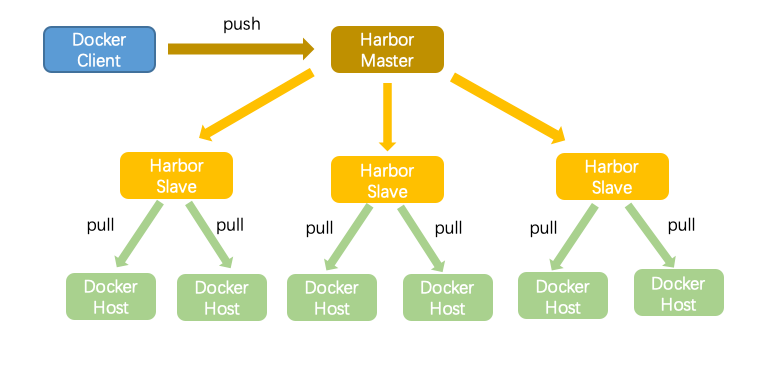
除此之外，Harbor 还支持层次型的发布方式，如果集群部署在多个 IDC，可以先从一个主 IDC 的镜像仓库同步到其他从 IDC 的镜像仓库，再从各个从 IDC 同步给下面的分 IDC，它的实现就像下图所描述的一样。
3. 高可用性
既然 Docker 镜像是 Docker 容器运行的基础，那么镜像仓库的高可用性就不言而喻了。一般而言，高可用性设计无非就是把服务部署在多个 IDC，这样的话即使有 IDC 出问题，也可以把服务迁移到别的正常 IDC 中去。同样对于镜像仓库的搭建，也可以采用多 IDC 部署，那么需要做到的就是不同 IDC 之间的镜像同步。以微博的镜像仓库为例，就像下图所描述的那样，镜像仓库会部署在永丰、土城两个内网 IDC 内，两个 IDC 内的镜像同步采用 Harbor 的双主复制策略，互相复制镜像，这样的话即使有一个 IDC 出现问题，另外一个 IDC 仍然能够提供服务，而且不丢失数据。
资源调度
解决了 Docker 镜像存储和访问的问题后，新问题又随之而来了，Docker 镜像要分发到哪些机器上去？这些机器是从哪里来的？这其实涉及的是资源调度的问题。
根据我的经验，服务部署的集群主要包括三种：
\1. 物理机集群。大部分中小团队应该都拥有自己的物理机集群，并且大多按照集群 - 服务池 - 服务器这种模式进行运维。物理机集群面临的问题，主要是服务器的配置不统一，尤其对于计算节点来说，普遍存在的一种情况就是几年前采购的机器的配置可能还是 12 核 16G 内存的配置，而近些年采购的机器都至少是 32 核 32G 内存的配置，对于这两种机器往往要区别对待，比如旧的机器用于跑一些非核心占用资源量不大的业务，而新采购的机器用于跑一些核心且服务调用量高的业务。
\2. 虚拟机集群。不少业务团队在使用物理机集群之后，发现物理机集群存在使用率不高、业务迁移不灵活的问题，因此纷纷转向了虚拟化方向，构建自己的私有云，比如以 OpenStack 技术为主的私有云集群在国内外不少业务团队都有大规模的应用。它的最大好处就是可以整合企业内部的服务器资源，通过虚拟化技术进行按需分配，提高集群的资源使用率，节省成本。
\3. 公有云集群。现在越来越多的业务团队，尤其是初创公司，因为公有云快速灵活的特性，纷纷在公有云上搭建自己的业务。公有云最大的好处除了快速灵活、分钟级即可实现上百台机器的创建，还有个好处就是配置统一、便于管理，不存在机器配置碎片化问题。
为了解决资源调度的问题，Docker 官方提供了Docker Machine功能，通过 Docker Machine 可以在企业内部的物理机集群，或者虚拟机集群比如 OpenStack 集群，又或者公有云集群比如 AWS 集群等上创建机器并且直接部署容器。Docker Machine 的功能虽然很好，但是对于大部分已经发展了一段时间的业务团队来说，并不能直接拿来使用。
这主要是因为资源调度最大的难点不在于机器的创建和容器的部署，而在于如何对接各个不同的集群，统一管理来自不同集群的机器权限管理、成本核算以及环境初始化等操作，这个时候就需要有一个统一的层来完成这个操作。这个对有历史包袱的团队，比如公司内网的物理机集群已经有一套运维体系来说，挑战不小，需要针对新的模式重新开发这套运维平台。以微博的业务为例，为了满足内部三种不同集群资源的统一管理，专门研发了容器运维平台DCP，来实现对接多个不同的集群。它的难点在于不仅对外要对接不同的云厂商，针对不同云厂商提供的 ECS 创建的 API，统一封装一层 API 来实现机器管理；对内也要针对私有云上不同集群的机器进行管理，进行上下线和配置初始化等操作。
以 DCP 配置初始化操作为例，在创建完主机后，还需要在主机上进行安装 NTP 服务、修改 sysctl 配置、安装 Docker 软件等操作，这时候就需要借助配置管理软件来向主机上进行分发。因为微博内网的主机，之前都是通过Puppet进行分发的，考虑到稳定性并没有对这一部分进行修改；而针对阿里云上创建的主机，则使用的是编程功能更为强大的Ansible进行分发。
更多有关 DCP 的内容，我会在容器化运维系列的第三期跟你仔细聊聊。
总结
今天我给你讲解了容器运维平台的两个关键组成，镜像仓库和资源调度。
镜像仓库帮我们解决的是 Docker 镜像如何存储和访问的问题，在业务规模较大时，各个业务团队都需要搭建自己的私有镜像仓库。类似 Harbor 这种开源解决方案能很好地解决权限控制、镜像同步等基本问题，关于高可用性的要求以及上云支持等业务场景，你可以参考我给出的解决方案，它是经过微博实际线上业务验证过的。
资源调度帮我们解决的是如何整合来自不同的集群的资源的问题，如果你的业务不止在内部私有云上部署，在公有云上也有部署，甚至是采用了多家公有云，那么资源的调度将会是非常复杂的问题，尤其是在公司内部已经存在一套对接内部集群的运维管理平台的情况下，是升级已有的运维平台以支持公有云，还是直接开发另外一套新的能够实现多云对接，这是一个很现实的问题。我的建议是单独开发一套新的运维平台先来接管公有云，然后逐步迁移内部集群的管理工作到新的运维平台中。
今天就讲到这里，关于容器运维平台的另外两个关键组成：容器调度和服务编排，我们下期再聊。
思考题
在讲解镜像仓库解决方案时，除了 Harbor 这种主从镜像复制的方案以外，我还提到了 P2P 的方案，你觉得这两种方案有何区别？分别适用哪种业务场景？
欢迎你在留言区写下自己的思考，与我一起讨论。 =
27 微服务容器化运维：容器调度和服务编排
专栏上一期，我给你讲解了容器运维平台的两个关键组成：镜像仓库和资源调度。复习一下，镜像仓库解决的是 Docker 镜像存储和访问的问题，资源调度决定了 Docker 镜像可以分发到哪些机器上的问题。这两个问题解决后，你就该考虑如何在集群中创建容器，也就是容器如何调度的问题；容器创建后如何运作才能对外提供服务，也就是服务如何编排的问题。下面我们就一起看看容器调度和服务编排都是如何解决的。
容器调度
容器调度的问题，说的是现在集群里有一批可用的物理机或者虚拟机，当服务需要发布的时候，该选择哪些机器部署容器的问题。
比如集群里只有 10 台机器，并且已经有 5 台机器运行着其他容器，剩余 5 台机器空闲着，如果此时有一个服务要发布，但只需要 3 台机器就行了，这个时候可以靠运维人为的从 5 台空闲的机器中选取 3 台机器，然后把服务的 Docker 镜像下载下来，再启动 Docker 容器服务就算完成发布。但如果集群机器的规模扩大到几十台或者上百台时，要发布的服务也有几十个或者上百个的时候，由于每个服务对容器的要求，以及每台机器上正在运行的容器情况变得很复杂，就不太可能靠人肉运维了。
这时就需要有专门的容器调度系统了，为此也诞生了不少基于 Docker 的容器调度系统，比如 Docker 原生的调度系统Swarm、Mesosphere 出品的Mesos，以及 Google 开源的大名鼎鼎的Kubernetes。下面我就结合微博的实践经验，给你讲讲容器调度要解决哪些问题。
1. 主机过滤
主机过滤是为了解决容器创建时什么样的机器可以使用的问题，主要包含两种过滤。
- 存活过滤。也就是说必须选择存活的节点，因为主机也有可能下线或者是故障状态。
- 硬件过滤。打个比方，现在你面对的集群有 Web 集群、RPC 集群、缓存集群以及大数据集群等，不同的集群硬件配置差异很大，比如 Web 集群往往用作计算节点，它的 CPU 一般配置比较高；而大数据集群往往用作数据存储，它的磁盘一般配置比较高。这样的话如果要创建计算任务的容器，显然就需要选择 Web 集群，而不是大数据集群。
上面这两种过滤方式都是针对主机层次的过滤方式，除此之外，Swarm 还提供了容器层次的过滤，可以实现只有运行了某个容器的主机才会被加入候选集等功能。
2. 调度策略
调度策略主要是为了解决容器创建时选择哪些主机最合适的问题，一般都是通过给主机打分来实现的。比如 Swarm 就包含了两种类似的策略：spread 和 binpack，它们都会根据每台主机的可用 CPU、内存以及正在运行的容器的数量来给每台主机打分。spread 策略会选择一个资源使用最少的节点，以使容器尽可能的分布在不同的主机上运行。它的好处是可以使每台主机的负载都比较平均，而且如果有一台主机有故障，受影响的容器也最少。而 binpack 策略恰恰相反，它会选择一个资源使用最多的节点，好让容器尽可能的运行在少数机器上，节省资源的同时也避免了主机使用资源的碎片化。
具体选择哪种调度策略，还是要看实际的业务场景，通常的场景有：
- 各主机的配置基本相同，并且使用也比较简单，一台主机上只创建一个容器。这样的话，每次创建容器的时候，直接从还没有创建过容器的主机当中随机选择一台就可以了。
- 在某些在线、离线业务混布的场景下，为了达到主机资源使用率最高的目标，需要综合考量容器中跑的任务的特点，比如在线业务主要使用 CPU 资源，而离线业务主要使用磁盘和 I/O 资源，这两种业务的容器大部分情况下适合混跑在一起。
- 还有一种业务场景，主机上的资源都是充足的，每个容器只要划定了所用的资源限制，理论上跑在一起是没有问题的，但是某些时候会出现对每个资源的抢占，比如都是 CPU 密集型或者 I/O 密集型的业务就不适合容器混布在一台主机上。
所以实际的业务场景，对调度策略的要求比较灵活，如果 Swarm 提供的 spread 和 binpack 满足不了的话，可能就需要考虑自行研发容器调度器了。
服务编排
1. 服务依赖
大部分情况下，微服务之间是相互独立的，在进行容器调度的时候不需要考虑彼此。但有时候也会存在一些场景，比如服务 A 调度的前提必须是先有服务 B，这样的话就要求在进行容器调度的时候，还需要考虑服务之间的依赖关系。
为此，Docker 官方提供了Docker Compose的解决方案。它允许用户通过一个单独的 docker-compose.yaml 文件来定义一组相互关联的容器组成一个项目，从而以项目的形式来管理应用。比如要实现一个 Web 项目，不仅要创建 Web 容器比如 Tomcat 容器，还需要创建数据库容器比如 MySQL 容器、负载均衡容器比如 Nginx 容器等，这个时候就可以通过 docker-compose.yaml 来配置这个 Web 项目里包含的三个容器的创建。
Docker Compose 这种通过 yaml 文件来进行服务编排的方式是比较普遍的算法，以微博的业务为例，也是通过类似 yaml 文件的方式定义了服务扩容的模板，模板除了定义了服务创建容器时的镜像配置、服务池配置以及主机资源配置以外，还定义了关联依赖服务的配置。比如微博的 Feed 服务依赖了 user 服务和 card 服务，假如 user 服务扩容的模板 ID 为 1703271839530000，card 服务扩容的模板 ID 为 1707061802000000，那么 Feed 服务的扩容模板里就会像下面这样配置，它代表了每扩容 10 台 Feed 服务的容器，就需要扩容 4 台 user 服务的容器以及 3 台 card 服务的容器。
{"Sid":1703271839530000,"Ratio":0.4}
{"Sid":1707061802000000,"Ratio":0.3}
2. 服务发现
容器调度完成以后，容器就可以启动了，但此时容器还不能对外提供服务，服务消费者并不知道这个新的节点，所以必须具备服务发现机制，使得新的容器节点能够加入到线上服务中去。
根据我的经验，比较常用的服务发现机制包括两种，一种是基于 Nginx 的服务发现，一种是基于注册中心的服务发现。
- 基于 Nginx 的服务发现
这种主要是针对提供 HTTP 服务的，当有新的容器节点时，修改 Nginx 的节点列表配置，然后利用 Nginx 的 reload 机制，会重新读取配置从而把新的节点加载进来。比如基于 Consul-Template 和 Consul，把 Consul 作为 DB 存储容器的节点列表，Consul-Template 部署在 Nginx 上，Consul-Template 定期去请求 Consul，如果 Consul 中存储的节点列表发生变化，就会更新 Nginx 的本地配置文件，然后 Nginx 就会重新加载配置。
- 基于注册中心的服务发现
这种主要是针对提供 RPC 服务的，当有新的容器节点时，需要调用注册中心提供的服务注册接口。注册中心的服务发现机制在专栏第 5期我有过详细讲解，你可以再回顾一下它的原理。在使用这种方式时，如果服务部署在多个 IDC，就要求容器节点分 IDC 进行注册，以便实现同 IDC 内就近访问。以微博的业务为例，微博服务除了部署在内部的两个 IDC，还在阿里云上也有部署，这样的话，内部机房上创建的容器节点就应该加入到内部 IDC 分组，而云上的节点应该加入到阿里云的 IDC。
3. 自动扩缩容
容器完成调度后，仅仅做到有容器不可用时故障自愈还不够，有时候还需要根据实际服务的运行状况，做到自动扩缩容。
一个很常见的场景就是，大部分互联网业务的访问呈现出访问时间的规律性。以微博业务为例，白天和晚上的使用人数要远远大于凌晨的使用人数；而白天和晚上的使用人数也不是平均分布的，午高峰 12 点半和晚高峰 10 点半是使用人数最多的时刻。这个时候就需要根据实际使用需求，在午高峰和晚高峰的时刻，增加容器的数量，确保服务的稳定性；在凌晨以后减少容器的数量，减少服务使用的资源成本。
常见的自动扩缩容的做法是根据容器的 CPU 负载情况来设置一个扩缩容的容器数量或者比例，比如可以设定容器的 CPU 使用率不超过 50%，一旦超过这个使用率就扩容一倍的机器。
总结
今天我给你讲解了容器运维平台的另外两个关键组成：容器调度和服务编排，并给出了常用的解决方案。你的业务团队在选择解决方案时，要根据自己的需要选择合适的方案，而不是理论上最好的。
比如 Kubernetes 解决方案在容器调度、服务编排方面都有成熟的组件，并且经过大业务量的实际验证。但是要考虑到 Kubernetes 本身的复杂性以及概念理解的门槛，对于大部分中小业务团队来说，在生产环境上使用 Kubernetes 都会显得大材小用，并且还需要部署并运维 Kubernetes 周边的一些基础设施，比如 etcd 等。
相比之下，Docker 原生自带的解决方案 Swarm 和 Compose 就要简单得多，但是功能也比较有限，如果不能满足你的业务需求的话，也不好再二次开发。
在了解了镜像仓库、资源调度、容器调度、服务编排后你会发现，微服务容器化后最大的挑战其实来自于原有运维设施如何支持容器的运维，是在原有运维平台上升级还是完全采用新的容器运维平台，这才是关键，往往不能一蹴而就，需要逐步按照业务进行替换升级。但是考虑到微服务容器化后所带来的种种好处，采用新的运维模式势在必行。
思考题
容器调度方面，业界最有名的莫过于 Swarm、Mesos 和 Kubernetes 了，你认为它们的优缺点是什么？分别适合什么业务场景？
欢迎你在留言区写下自己的思考，与我一起讨论。 =
28 微服务容器化运维：微博容器运维平台DCP
微服务容器化运维系列的前两期，我给你详细介绍了微服务容器化后如何运维的几个关键问题：镜像仓库、资源调度、容器调度、服务编排，这些问题的产生都是因为微服务部署的节点从一台台物理机或者虚拟机变成了一个个容器，运维模式发生了根本性的变化。此时，容器运维平台也就应运而生。
微博的业务从 2013 年就开始进行容器化，2015 年为了应对春晚以及突发热点事件带来的峰值流量，开始引入阿里云；同时也为了适应业务的发展和运维方式的变化，在 2015 年底开始研发新的容器运维平台 DCP。今天我就和你聊聊微博容器运维平台 DCP，我会讲讲一个真实的容器运维平台是如何建设的，在建设过程中面临了哪些问题，以及对应的解决方案，希望可以让你对容器运维平台的架构有所了解，并提供一些经验可供借鉴。
DCP 整体架构
首先我们先来看看 DCP 的架构设计，从下面这张架构图你可以看到，DCP 的架构主要分为四个部分：基础设施层、主机层、调度层、编排层，对应的分别解决前面提到的容器运维平台建设的几个关键问题：基础设施层用于解决镜像仓库的问题，主机层主要解决如何进行资源调度的问题，调度层主要解决容器如何在资源上创建的问题，编排层主要解决容器如何运作以对外提供服务的问题。下面我们来看各层的详细设计。
基础设施层
DCP 中基础设施层主要用于提供各种基础设施，以保证其他层功能的正常运行。通常来讲，主要包括以下几个基础组件：用于存放容器镜像的镜像仓库、提供监控服务的监控中心、实时监控系统容量以便于自动扩缩容的容量评估系统以及容器创建后，如何加入线上服务的服务发现组件，其中镜像仓库是 DCP 最核心的基础组件。
正如专栏第 26 期我讲的那样，DCP 以开源镜像仓库 Harbor 为基础搭建了私有的镜像仓库，不过由于微博业务的特征，为了应对随时可能到来的突发峰值流量的冲击，需要随时随地能够扩容服务池。但在内网冗余度不足的时候，也不得不借助公有云来实现，因此服务不仅在内网私有云上有部署，在阿里云上也有部署，这样的话从阿里云申请的主机也需要从镜像仓库中拉取镜像。此时，如果镜像仓库只在内网部署的话，就需要跨专线去拉取镜像，但如果上百台服务器同时拉取镜像，带宽占用很可能达到上百 G，由于专线带宽是有限的，显然这样不可取。为此，正确的做法就像下图中那样，在阿里云机房也部署一套镜像仓库，并且通过 Harbor 的主从复制机制与内网的镜像仓库保持同步。同时，为了做到负载均衡，每个机房内部都部署了多个 Harbor 节点，内网节点访问内网镜像仓库会通过 LVS 进行负载均衡，阿里云上节点访问阿里云镜像仓库会通过 SLB 进行负载均衡，以满足镜像仓库的带宽需求。
主机层
DCP 中主机层的功能主要是为了完成资源的调度，也就是针对不同的集群，完成主机的创建、成本的管理以及配置初始化工作，也叫 Pluto 层。前面提到过微博业务不仅在内网私有云上有部署，而且在阿里云上也有部署，为此 Pluto 需要适配不同底层提供的创建主机的 API，进行成本核算并且进行配置初始化操作。Pluto 层的架构你可以参看下图，我来详细讲一下。
\1. 主机创建
Pluto 在创建主机时，主要有两个来源，一个是内部物理机组成的共享池，一个是调用阿里云 API 创建 ECS。其中共享池内的资源主要来源于两部分：一部分是冗余度高的服务池缩容部分主机加入到共享池；一部分是在线业务和离线计算互相补充，比如白天在线业务需要的机器多，而离线计算的任务主要运行在凌晨，这时候就可以在白天把离线计算的集群的部分机器加入到共享池给在线业务使用，而在晚上业务低峰期把在线业务的部分机器加入到共享池给离线计算任务使用。而使用阿里云创建 ECS，主要是在共享池内的资源不足的情况下，比如有突发热点事件到来，各个服务池都需要紧急扩容，这时候共享池内的资源就不足以应对了。而使用阿里云 API 创建 ECS 会受到阿里云 API 的各种限制，下面我列举几个微博在使用阿里云创建机器时所遇到的问题，你就可以理解主机创建的复杂性所在了。
- 由于阿里云 API 对单账户的调用有并发限制，所以实际业务在创建阿里云 ECS 上时，不能上百台同时创建，一般要控制在几十台的规模左右，如果这个时候业务需要创建上百台机器该怎么做呢？那就需要采取队列机制，来控制机器创建的速度。下面这张图就描述了微博在使用阿里云创建 ECS 时的解决方案，在实际创建 ECS 时，不会立即调用阿里云 API，而是把节点创建任务先放到一个 DB 队列中，然后再通过一个线程定时从 DB 队列中获取创建任务，每次只创建几十台，这样的话就不会触发阿里云 API 对单账号调用的并发限制。
- 除了有单账户调用的并发限制，还会有可用区的库存限制、安全组库存限制以及 vSwitch 库存限制，所以在实际使用阿里云 API 创建 ECS 时，当机器规模较大，如果直接指定使用某个可用区、安全组和 vSwitch，就可能因为库存原因导致创建失败。微博一开始就使用了这种方案，但在突发峰值流量来临时，往往要创建几百台甚至上千台的阿里云 ECS，为此经常会因为以上限制导致创建失败。后来针对可用区、安全组以及 vSwitch 都做了多可用区、多安全组以及多 vSwtich 配置，在出现库存不够时，就自动切换到别的地方来创建，极大提高了大规模 ECS 创建的成功率。
\2. 成本管理
无论是从共享池内创建的机器，还是调用阿里云 API 创建的 ECS，都是有成本的，为此必须对机器的数量以及使用时长进行记录，以便进行成本管理。
以阿里云的 ECS 为例，又分为按量付费、按月付费以及按年付费，可以按照以下方式来进行管理。
- 按量付费。按照使用时长，以秒为单位计费，适合突发流量到来临时需要扩容部分机器时使用，所以需要记录每台 ECS 从调用 API 创建成功到销毁所使用的时长。
- 按月付费。这种比较适合短期业务需要使用机器的场景，比如微博曾经在奥运会期间扩容过大量包月付费的机器，以应对奥运会期间带来的流量上涨。需要注意的是，这种机器到了月底会自动销毁，所以如果还有使用需要的话，需要及时续费。
- 按年付费。这种比较适合需要长期在阿里云上部署的业务，比如有一些新的业务因为业务发展比较快，采用传统自采机器部署的话，由于采购周期比较长不适合业务发展，所以使用公有云更为合适。
\3. 配置初始化
主机创建完成后，还要进行一些基础软件的安装以及配置修改等工作，这就是配置初始化的过程。以阿里云创建的 ECS 为例，如果短时间内创建了上千台 ECS，这个时候配置初始化的工作量会非常大，需要同时给上千台 ECS 下发配置文件并安装基础软件，同时还需要记录每台 ECS 的初始化状态到 DB，以便查询是否初始化成功。下图描述了初始化的过程，DCP 在进行主机配置初始化时，会通过 Ansible 向所有主机下发配置文件和基础软件，并通过自定义 callback queue，把每台主机的初始化状态异步写入到 DB 中，避免上百台机器同时并发写入 DB 造成死锁。
调度层
DCP 中调度层的主要功能是在可用的主机上创建容器。由于微博业务早在 2013 年就开始进行容器化，基于当时的背景考虑，就选择了 Swarm 作为容器调度的工具，并根据自己的业务特点在 Swarm 基础上进行二次封装，定制了自己的调度层 Roam，使其具备支持跨 IDC、高可用以及可扩展的特性。下面是 Roam 的架构，其主要工作原理是：
- Swarm Manager 和 Swarm Client 节点都向 Consul 中注册，并且有一个 Active Manager 和 Standby Manager。任何一个 IDC 内的 Active Manager 如果 down 掉的话，Standby Manager 就会注册到 Consul 中，成为新的 Active Manager，以保证高可用性。
- 当发起容器调度时，Roam 根据 IDC 参数请求 Consul，得到该 IDC 的 Swarm Manager 信息。
- Roam 访问该 IDC 内的 Swarm Manager，Swarm Manager 再访问 Consul 获取 Swarm Client 信息，并根据 Roam 传递的调度策略从 Swarm Client 中选择节点创建容器。
编排层
DCP 中编排层的主要作用是对服务进行整合以对外提供服务，主要包括服务依赖、服务发现以及自动扩缩容，下面我来详细介绍每一部分的具体实现。
\1. 服务依赖
DCP 通过模板来管理容器的创建，一个服务如果需要进行扩容、创建容器，就必须按照模板里定义的参数来执行，以下图描述的 DCP 里的一个扩容任务创建模板为例，通常来讲，模板里定义的参数主要包括几个部分：任务的名称、机器的配置、任务依赖、任务详细配置（包括调用阿里云 API 创建 ECS 时的可用区、安全组参数等），其中任务依赖的配置项是：
{"Sid":1707061842070000,"Ratio":0.2,"ElasticCount":0}
{"Sid":1703271821000000,"Ratio":0.3,"ElasticCount":0}
它的含义是执行这个扩容任务时，会自动执行 ID 为 1707061842070000 和 1703271821000000 的扩容任务，并且按照每扩容 10 台容器分别扩容 2 台和 3 台依赖容器的比例来执行。
\2. 服务发现
微博的业务场景主要包含两种服务，一种是 HTTP 服务，一种是 Motan RPC 服务，他们分别使用了不同的服务发现方式。
- HTTP 服务。考虑到传统的基于 Nginx 的配置 Reload 机制实现的服务发现方式，在高并发访问的情况下，会导致吞吐量下降 10% 左右，如果业务频繁变更的话，就会受到影响。为此，DCP 在实际业务中基于 Nginx 和 Consul 研发了一种可行的解决方案nginx-upsync-module，并且已经开源。
- Motan RPC 服务。Motan RPC 服务在启动时，会向注册中心 Config Service 注册服务，并且注册中心支持多 IDC 部署。像下图所描述的那样，正常情况下服务消费者会访问同一个 IDC 内的服务提供者，并且支持在故障的时候，可以切换到其他 IDC。
\3. 自动扩缩容
DCP 系统实现自动扩缩容主要依靠的是容量决策支持系统，由容量决策支持系统来实时监控系统的容量。如下图所示，一旦容量决策支持系统检测到某个服务需要进行扩容，就会创建扩容任务，Config Watcher 会监控到扩容任务，并通知 CronTrigger 有调度策略变更。CronTrigger 接到扩容任务，就会调用 Scheduler 来具体执行扩容。同时还可以通过 API 来修改、查询扩缩容的信息，也可以通过 UI 来操作。
总结
今天我给你讲解了微博容器运维平台 DCP 的架构，主要包括基础设施层、主机层、调度层以及编排层，并详细介绍了每一层的功能实现，以及各自承担的不同职能。下面这张图是一次完整扩容流程，包括了资源评估、配额评估、初始化、容器调度、部署服务、服务依赖、服务发现以及自动扩缩容等，DCP 正是通过把这些过程串联起来，实现容器运维的。
思考题
在讲到服务编排时，我提到服务之间会存在依赖关系，比如服务 A 依赖服务 B，假如此时服务 A 的流量上涨，需要对服务 A 进行扩容，这时候有两种方案：一种方案是通过自动扩缩容，服务 A 和服务 B 的扩容完全独立，分别按需自动扩缩容；一种方案是通过服务依赖，扩容服务 A 之前先扩容服务 B，你认为这两种方案哪种更好？为什么？
欢迎你在留言区写下自己的思考，与我一起讨论。 %
29 微服务如何实现DevOps？
把一个大的单体应用拆分成多个微服务之后，每个服务都可以独立进行开发、测试和运维。但当拆分的微服务足够多时，却又仿佛陷入一个新的泥沼，无论是业务代码的开发还是测试和运维，工作量都比之前提升了很多。
采单体应用架构时，一个业务需求只需要修改单体应用的代码，然后针对这个单体应用进行测试，测试通过后再把单体应用的代码发布到线上即可。而拆分为微服务之后，一个大的系统被拆分为多个小的系统，一个业务需求可能要同时修改多个微服务的代码，这样的话多个微服务都需要进行测试，测试通过了都需要把代码发布到线上，显然工作量成倍增加。这时候就迫切需要一种新的开发、测试和运维模式来解决这个问题，这就是今天我要给你讲的微服务与 DevOps。
什么是 DevOps？
在介绍 DevOps 之前，我先来带你回顾一下传统的业务上线流程：开发人员开发完业务代码后，把自测通过的代码打包交给测试人员，然后测试人员把代码部署在测试环境中进行测试，如果测试不通过，就反馈 bug 给开发人员进行修复；如果通过，开发就把测试通过的代码交给运维人员打包，然后运维人员再发布到线上环境中去。可见在传统的开发模式下，开发人员、测试人员和运维人员的职责划分十分明确，他们往往分属于不同的职能部门，一次业务上线流程需要三者之间进行多次沟通，整个周期基本上是以天为单位。你肯定会想假如能够把开发、测试和发布流程串联起来，就像生产流水线上那样，每个步骤完成后，就自动执行下一个步骤，无须过多的人为干预，业务的迭代效率不就能提升很多吗。
没错，DevOps 的思想正是如此。在我看来，DevOps 是一种新型的业务研发流程，业务的开发人员不仅需要负责业务代码的开发，还需要负责业务的测试以及上线发布等全生命周期，真正做到掌控服务全流程。DevOps 就是下图中心的部分，集开发、测试和运维三者角色于一体。
而要实现 DevOps，就必须开发完成代码开发后，能自动进行测试，测试通过后，能自动发布到线上。对应的这两个过程就是 CI 和 CD，具体来讲就是：
- CI（Continuous Integration），持续集成。开发完成代码开发后，能自动地进行代码检查、单元测试、打包部署到测试环境，进行集成测试，跑自动化测试用例。
- CD（Continuous Deploy），持续部署。代码测试通过后，能自动部署到类生产环境中进行集成测试，测试通过后再进行小流量的灰度验证，验证通过后代码就达到线上发布的要求了，就可以把代码自动部署到线上。
其中 CD 还有另外一个解释就是持续交付（Continuous Delivery），它与持续部署不同的是，持续交付只需要做到代码达到线上发布要求的阶段就可以了，接下来的代码部署到线上既可以选择手动部署也可以选择自动部署。实际服务发布时，代码能否自动部署到线上本身并不是难点，关键在于是否需要人为判断整个发布过程是否正常，毕竟有些异常只有在真正的线上发布过程中才能被发现，人为介入相对来说要保险一些，所以只做到持续交付也可以算是实现了 DevOps。
DevOps 的关键是如何实现代码开发自测通过，自动部署到测试环境，验证通过后再自动部署到生产环境，小流量验证后再自动发布到线上去。在传统的采用物理机部署服务的时代，这个流程的很难自动化执行的最大原因就是代码环境的可移植性差，这是因为开发自己的环境，跟测试环境以及生产环境的软件配置往往存在很大差异，经常会出现开发在自己的环境中运行通过的代码，部署到测试环境就运行不了的问题。而容器化正好解决了代码环境的可移植性的问题，使得 DevOps 取得了突飞猛进的发展，并成为业界推崇的开发模式。那么具体该如何实现 DevOps 呢？下面我就以微博的业务实践为例，来给你详细讲解。
微博的 DevOps 实践
目前业界比较通用的实现 DevOps 的方案主要有两种，一种是使用Jenkins，一种是使用GitLab。微博就主要使用的是 GitLab 来实现 DevOps，下面我就从微博一个服务的开发、测试到上线的具体流程，看看是如何实现 DevOps 的。
从上面图中你可以看到，一个服务的发布流程主要包含了三个步骤。
\1. 持续集成，这个步骤的主要作用是确保每一次代码的 Merge Request 都测试通过，可随时合并到代码的 Develop 分支，主要包括四个阶段：build 阶段（开发分支代码的编译与单元测试）、package 阶段（开发分支代码打包成 Docker 镜像）、deploy 阶段（开发分支代码部署到测试环境）、test 阶段（开发分支代码集成测试）。
\2. 持续交付，这个步骤的主要作用是确保所有代码合并 Merage Request 到 Develop 分支后，Develop 分支的代码能够在生产环境中测试通过，并进行小流量灰度验证，可随时交付到线上。主要包括五个阶段：build 阶段（Develop 分支的代码编译与单元测试）、package 阶段（Develop 分支的代码打包成 Docker 镜像）、deploy 阶段（Develop 分支的代码部署到测试环境）、test 阶段（Develop 分支的代码集成测试）、canary 阶段（Develop 分支的代码的小流量灰度验证）。
\3. 持续部署，这个步骤的主要作用是合并 Develop 分支到 Master 主干，并打包成 Docker 镜像，可随时发布到线上。主要包括四个阶段：build 阶段（Master 主干的代码编译与单元测试）、package 阶段（Master 主干的代码打包成 Docker 镜像）、clear 阶段（Master 主干的代码 Merge 回 Develop 分支）、production 阶段（Master 主干的代码发布到线上）。
那么，上面这些流程是如何实现自动化的呢？在 GitLab 中可以通过一个叫“.gitlab-ci.yml”的文件来定义自动化流程都包含哪些阶段，以及每个阶段所具体执行的脚本，这样的话在提交代码 Merge Request 后会自动触发 gitlab-ci.yml 文件中定义的各个流程按顺序执行。
实现 DevOps 的关键点
上面我讲了具体业务中如何使用 GitLab 来实现 DevOps，在具体实施时，每个阶段都有关键问题，只有解决了这些关键问题，才能真正实现 DevOps。
\1. 持续集成阶段
持续集成阶段的主要目的是保证每一次开发的代码都没有问题，即使合并到主干也能正常工作，这里主要依靠三部分的作用。
- 代码检查。通过代码检查可以发现代码潜在的一些 bug，比如 Java 对象有可能是 null 空指针等，实际执行时可以在持续集成阶段集成类似Sonarqube之类的工具来实现代码检查。
- 单元测试。单元测试是保证代码运行质量的第二个关卡。单元测试是针对每个具体代码模块的，单元测试的覆盖度越高，各个代码模块出错的概率就越小。不过实际业务开发过程中，为了追求开发速度，许多开发者并不在意单元测试的覆盖度，而是把大部分测试工作都留在了集成测试阶段，这样可能会造成集成测试阶段返工的次数太多，需要多次修复 bug 才能通过集成测试。尤其对于业务复杂度比较高的服务来说，在单元测试阶段多花费一些功夫，其实从整个代码开发周期角度来看，收益还是要远大于付出的。
- 集成测试。集成测试就是将各个代码的修改集成到一起，统一部署在测试环境中进行测试。为了实现整个流程的自动化，集成自测阶段主要的任务就是跑每个服务的自动化测试用例，所以自动化测试用例覆盖的越全，集成测试的可靠性就越高。这里就要求开发和测试能及时沟通，在新的业务需求确定时，就开始编写测试用例，这样在跑自动化测试用例时，就不需要测试的介入了，省去了沟通成本。当然，业务开发人员也可以自己编写测试用例，这样的话就不需要专职的业务测试人员了。
除此之外，还有一个值得关注的问题，就是集成测试阶段业务代码部署的测试机器从何而来。在单体应用的时候，一般是开发把代码打包交给测试，测试人员再分配给自己的测试机中部署业务，然后进行集成测试。但是现在问题来了，由于拆分成了微服务，需要测试的服务变多了，如果同时有多个需求在测试，测试人员的测试机可能就不够用了，而出于成本考虑，一般公司都不会花费采购大量的测试机器。一个好的办法就是通过 Kubernetes 之类的容器平台对测试集群进行管理，当有业务代码正在执行集成测试时，就从测试集群中创建一个容器部署服务，完成测试后，再销毁容器，及时进行资源回收。这样测试机器不需要分配给某个具体的个人，实现按需使用，提高了测试集群的资源使用率。
\2. 持续交付阶段
持续交付阶段的主要目的是保证最新的业务代码，能够在类生产环境中可能够正常运行，一般做法都是从线上生成环境中摘掉两个节点，然后在这两个节点上部署最新的业务代码，再进行集成测试，集成测试通过后再引入线上流量，来观察服务是否正常。通常需要解决两个问题：
- 如何从线上生产环境中摘除两个节点。这就需要接入线上的容器管理平台，比如微博的容器管理平台 DCP 就提供了类似下面的 API，能够从线上生产环境中摘除某个节点，然后部署最新的业务代码。
curl -s http://raptor.api.weibo.com/extension/v1/preview/run/ -d action=503&ip=11.75.21.155&service_pool=openapi_friendship-yf-docker&user=weibo_rd_user
- 如何观察服务是否正常。由于这两个节点上运行的代码是最新的代码，在引入线上流量后可能会出现内存泄露等在集成测试阶段无法发现的问题，所以这个阶段这两个节点上运行最新代码后的状态必须与线上其他节点一致。实际观察时，主要有两个手段，一个是观察节点本身的状态，如 CPU、内存、I/O、网卡等，一个是观察业务运行产生的 warn、error 的日志量的大小，尤其是 error 日志量有异常时，往往就说明最新的代码可能存在异常，需要处理后才能发布到线上。
\3. 持续部署阶段
持续部署阶段的主要目的把在类生产环境下运行通过的代码自动的发布到线上所有节点中去，这里的关键点就在于实际的线上发布阶段并不是想象中的那么直接。以微博 API 的业务为例，同样的服务也分为核心池和非核心池，核心池提供给移动端和 PC 调用，非核心池提供给其他内部业务调用，并且还按照机房分为不同的服务池，比如永丰机房服务池和土城机房服务池。实际发布的时候，考虑到线上服务的稳定性，并不是说按照一定的步长，自动把所有服务池都发布了，而是先发布非核心池以及土城机房的核心池，然后验证观察一段时间线上服务一切正常后，再继续发布永丰机房的核心池，以防止某些问题在服务发布的过程中才暴露出来，但又不至于影响线上所有的服务节点。所以这个阶段，持续部署一般并不要求那么完美，许多公司在这个阶段都采用了手动发布的方式以控制风险，或者只做到持续交付阶段，对于持续部署并不要求自动化。
总结
今天我给你介绍了 DevOps 对于微服务的意义，它通过将开发、测试和运维流程自动化，以减轻微服务拆分后带来的测试和运维复杂度的提升，同时还提高了业务研发的效率。为了实现 DevOps，需要实现持续集成、持续交付以及持续部署，可以采用 Jenkins 或者 GitLab 这些开源 DevOps 工具来搭建你自己的 CI/CD 流程，关键点在于如何把已有的自动化测试用例，以及现有容器管理平台集成到 CI/CD 流程当中去，以完成自动化的 CI/CD 流水线处理。
实际上 DevOps 你可以理解为一种新型的业务研发流程，也可以理解为一种新的技术思维，它摒弃了传统的开发、测试和运维严格区分的观念，把三者的角色融为一体，让服务的开发者负责从开发、测试到发布的整个生命周期，真正的承担起服务负责人的角色。更广义的 DevOps 除了包括 CI/CD 流程的自动化处理，还包括智能监控决策、在线自动扩缩容等，甚至还引入了人工智能技术走向另外一个新方向 AIOps，关于自动扩容的内容咱们下期再聊。
思考题
在 DevOps 的持续集成阶段，有两个测试，一个是单元测试，一个集成测试，你觉得它们的作用有何区别？是不是做好了集成测试就不需要单元测试了？
欢迎你在留言区写下自己的思考，与我一起讨论。 +
30 如何做好微服务容量规划？
专栏上一期我给你讲解了单体应用拆分为微服务后带来的开发、测试和运维复杂度的提升，可以通过 DevOps 实现 CI/CD 流程的自动化来解决。除此之外，单体应用拆分为微服务还带来另外一个问题，也就是拆分出来后的多个微服务容量如何规划的问题。在单体应用时，只需要针对这个单体应用的访问量和实际接口性能来决定要不要给单体应用扩容，而拆分为众多的微服务之后，需要考虑每个服务的容量规划，它的复杂度主要来自下面几个方面。
- 服务数量众多，纯靠人肉运维难以管理，比如微博 Feed 业务仅仅 RPC 服务就有将近 40 个。
- 服务的接口表现差异巨大，有的接口属于访问量比较大，但接口响应时间比较短的轻接口；有的接口属于访问量比较小，但接口响应时间比较长的重接口。比如微博 Feed 业务中计数接口的平均耗时只有 2～3ms，而微博 Feed 业务中 Feed 接口的平均耗时要超过 200ms。
- 服务部署的集群规模大小不同，需要扩容的机器数量差异很大。比如微博的 AB 测试服务集群只有大约 20 台机器，扩容只需要几台机器就满足了；而 Feed 服务则有上千台机器，往往扩容需要上百台机器。
- 服务之间还存在依赖关系，在服务扩容的时候，还需要考虑依赖服务的容量是否足够。比如微博 Feed 业务扩容还依赖用户关系服务和 Card 服务，扩容时还需要考虑依赖的用户关系服务和 Card 服务容量是否有问题。
由此可见，单体应用拆分为微服务后，微服务的容量规划难度一下子增加了很多，再靠传统的人肉运维模式显然难以为继。延续上期 DevOps 的话题，其实微服务的容量规划也是广义 DevOps 要解决的问题之一，那么 DevOps 是如何解决的呢？答案就是容量规划系统，下面我就来聊聊容量规划系统该如何实现。
容量规划系统的作用是根据各个微服务部署集群的最大容量和线上实际运行的负荷，来决定各个微服务是否需要弹性扩缩容，以及需要扩缩容多少台机器。
可见，容量规划系统实施的关键在于两点：一是如何评估集群的最大容量和线上实际运行的负荷，也就是如何做好容量评估；二是如何确定弹性扩缩容的时机以及机器数，也就是如何做好调度决策。下面我们分别来看这两个关键点，逐个击破。
容量评估
一般集群的容量评估都是通过线上实际压测来确定的，那么该如何进行线上压测呢？都需要注意哪些关键点呢？
\1. 选择合适的压测指标
一般在选取压测指标时，主要有两类：一类是系统类指标，比如机器的 CPU 使用率、内存占用量、磁盘 I/O 使用率以及网卡带宽等；一类是服务类指标，比如接口响应的平均耗时、P999 耗时、错误率。但这些指标在实际压测时，都会存在一些问题。系统类指标比如 CPU 使用率并不能直接反映出服务压测时的健康状况，有时候 CPU 使用率不高的时候，接口耗时也可能有问题；而有时候 CPU 使用率较高时，接口耗时表现依然很正常。而服务类的指标比如接口响应的平均耗时也不能精确的反映服务的实际健康状态，一个最典型的场景就是在压测时，已经出现一定比例的慢请求，而在平均耗时上并不能看出有多大变化，这时候实际服务已经处于不健康的状态了，应该停止压测了。
根据我的经验，在压测时，除了观察以上这些指标以外，还可以观察接口的慢速比，也就是接口响应时间高于某个阈值的比例。比如微博在进行 Feed 接口压测时，选择的压测指标就是 Feed 接口响应时间大于 1s 的比例，压测的终止条件是 Feed 接口响应时间大于 1s 的比例超过 1%。我的主要考虑是，当 99% 以上接口请求都在 1s 以内返回时，反馈到用户的直接使用感受是不容易感知到 Feed 刷新慢，反之则不然。对于大部分在线服务来说，接口慢速比不超过 1% 都是服务质量保证的底线了，因此可以作为一个通用的压测指标。
\2. 压测获取单机的最大容量
集群的最大容量就是单机的最大容量 × 集群内的机器数量，所以要获得集群的最大容量，就必须获得单机的最大容量。通常有两种方式来获取单机的最大容量，一种是单机压测，一种是集群压测。
- 单机压测一般有两种方式，一种是通过日志回放等手段，模拟线上流量来对单机进行压测；一种是通过 TCP-Copy 的方式，把线上机器的流量拷贝过来对单机进行压测。
- 集群压测是对整个集群进行压测，以获取单机的最大容量。一般做法是通过不断把线上集群的节点摘除，以减少机器数的方式，来增加线上节点单机的流量，从而达到压测的目的。
从我的经验来看，采用集群压测的方式要更合理一些，因为它是完全使用线上真实流量进行压测，获取的单机最大容量数值更精确。如果采用单机压测，通常为了避免产生“脏数据”，往往需要去掉一些上行的修改请求，所以不能完全模拟线上真实情况。不过使用集群压测的方式也有一个缺点，就是压测的时候会对线上用户的实际请求产生影响，如果压测出问题了，会直接影响线上服务，所以一般会选择在业务低峰期进行压测，最大限度减少对线上服务造成的影响。还有一点是，通常会在工作日进行压测，以便出现问题时，也能人为快速介入。
假设我们采用集群压测，不断地缩减线上节点的数量，并观察服务的慢速比指标，当慢速比达到 1% 时，就停止压测，这个时候就可以计算单机的最大容量了，一般做法是用压测停止时刻的单机平均 QPS 作为单机的最大容量。但是，采用 QPS 就真的合理吗？实际上并非如此，这是因为 QPS 并不能准确衡量单机的消耗，就像下面这两张图所展示的，左图的请求响应时间主要集中在 100ms 以下，没有超过 500ms 的；而右图的请求响应时间主要集中在 50ms 以上，没有低于 10ms 的。这两种请求分布对单机消耗差异很大，显然右边要对单机的消耗更大一些。在单机 QPS 都是 100 的情况下，左边的单机还能继续加大 QPS，而右边的单机已经出现超过 500ms 以上的慢请求了。
所以，一个更合理的计算单机容量的方式是采用区间加权来计算，也就是把请求按照响应时间分成多个区间，每个区间分别赋予不同的权重，响应时间越长权重越高，比如 0～10ms 区间的权重是 1，10～50ms 区间的权重是 2，50～100ms 区间的权重是 4，100～200ms 区间的权重是 8，200～500ms 区间的权重是 16，500ms 以上的权重是 32，那么上面两张图所描述的情况的单机容量分别是 8×1+50×2+30×4+10×8+2×16=340 和 2×2+10×4+50×8+20×16+8×32=1020。因此单机的最大容量，也就是压测停止时刻采用区间加权方式计算得出。
\3. 实时获取集群的运行负荷
通过压测能够获取到单机的最大容量，再乘以集群内的机器数量就是集群的最大容量了，下一步获取集群实际运行的负荷，就可以判断集群是否需要扩容了。跟刚才计算单机容量的方式类似，集群的运行负荷也需要通过采用区间加权的方式来计算，但是因为集群的规模可能很大，超过上千台机器，显然通过计算每台单机运行的负荷再加在一起的方式效率不高。我在线上实际使用的方法是统计每台单机在不同耗时区间内的请求数，推送到集中处理的地方进行聚合，将同一个集群内的单机位于不同耗时区间内的请求进行汇总，就得到整个集群的请求在不同耗时区间内的分布了，再利用区间加权的方式就可以计算整个集群的运行负荷。
调度决策
在容量评估阶段，你可以获取集群的最大容量和集群的实际运行负荷，有了这两个数据后该如何做调度策略呢？我在实际线上业务使用的是水位线来进行调度决策。就像水库的水位线一样，要实时观测水库的蓄水量，如果因为长时间降水导致水库蓄水量超过警戒水位线就需要开闸泄洪；如果长时间干旱降水量太少，就需要关闸蓄水，以保持水库中的蓄水量始终在一个合理的水位线上。这样的话，任意时刻的水位线就是集群的最大容量除以集群的实际运行负荷，可以实时监控集群的水位线。
在调度决策时候，就可以根据水位线来做决定。你可以看到下面图中划分了两条线，一条是安全线，一条是致命线。当集群的水位线位于致命线以下时，就需要立即扩容，在扩容一定数量的机器后，水位线回到安全线以上并保持一段时间后，就可以进行缩容了。
那具体在执行扩缩容时，机器数量该如何决定呢？
\1. 扩容
在决定扩多少机器时，一般有两种方式，一种是按数量，一种是按比例。因为不同的集群内机器数量差别可能很大，所以一般采取按比例的方式，举个例子比如每一次扩容都增加 30% 的机器数量，再看扩容后的水位线是否处于致命线以上了。
\2. 缩容
在扩容完成后，集群的水位线保持在安全线以上一段时间后，就需要缩容，以节省机器成本。可以根据实际业务特点来决定多久后可以缩容，比如微博的业务一般突发流量维持在 1 个小时以内，因此集群的水位线在安全线以上超过 1 个小时之后，就可以缩容。而在缩容时也不是一次把所有扩容的机器都缩掉，而是采用逐步缩容的方式，每隔 5 分钟判断一次集群的水位线是否还在致命线以上，然后按照 10%、30%、50%、100% 的比例进行缩容，这样可以避免缩容太快导致集群水位线又降到致命线以下又得再扩容机器。
在实际根据水位线决定是否扩缩容时还需要防止网络抖动等原因造成的水位线瞬间抖动，这个时候集群的运行负荷会突然变大，导致水位线异常，此时如果加以处理的话就会触发扩容，而实际上并不需要扩容。为了防止瞬间抖动，可以每分钟采集一次系统的水位线，一共采集 5 个点，只有 5 个点里有 3 个点满足扩容条件，才真正触发扩容。
总结
今天我从两个方面具体给你讲解了微服务如何做好容量规划的问题，即做好容量评估和调度决策。容量评估方面，首先要通过压测获取集群的最大容量，并实时采集服务调用的数据以获取集群的实时运行负荷，这样就可以获取集群的实时水位线。而调度决策方面，主要是通过水位线与致命线和安全线对比来决定什么时候该扩缩容。而扩缩容的数量也是有讲究的，扩容的机器数一般按照集群机器数量的比例来，而缩容一般采取逐步缩容的方式以免缩容太快导致反复扩容。
在单体应用拆分为多个微服务后，如果不做好容量规划是很危险的事情，尤其是在微服务的调用量出现突发峰值流量时，再靠人为判断决策扩缩容往往为时已晚。根据我在微博的实践，也证明了通过容量规划实现微服务的自动扩缩容才是解决这个问题的最佳途径。
思考题
在计算集群的水位线时，经常会遇到集群内有些单机问题导致整个集群的实时运行负荷偏大，对此你有什么解决方案吗？
欢迎你在留言区写下你的思考，与我一起讨论。 %
31 微服务多机房部署实践
专栏前面我在讲服务治理时提到过，为了实现高可用性，微服务一般要部署在多个机房，保证有一个机房因为各种不可抗力因素导致不可用时，可以把流量切换到其他可用机房来避免故障。但是，是不是只要部署到多个机房就万事大吉了呢？你有没有想过这几个问题呢？
- 一切正常时用户请求该访问哪个机房？
- 多个机房之间的数据如何同步？
- 多个机房之间的数据如何确保持一致性？
你看多机房部署并非看似那么轻松，里面还有不少门道。接下来，我就以微博业务实践为例，跟你聊聊微服务实际进行多机房部署时是如何解决这些关键问题的。
多机房负载均衡
当服务部署在多个机房时，最简单的就是遵循用户就近访问的原则，比如北方用户访问联通机房，南方用户访问电信机房。微博的服务也是同时部署在联通和电信机房，你可以看下面这张图，访问时根据用户访问的 IP，通过 DNS 解析到不同的机房，如果是北方用户就访问联通机房，南方用户就访问电信机房。并且为了实现负载均衡，还会在每个机房分别部署四层负载均衡器 VIP 以及七层负载均衡器 Nginx。比如来自北方用户的请求通过 DNS 解析到联通机房下任意一个 VIP，然后通过 VIP 把请求转发给联通机房下任意一个 Nginx，Nginx 再把请求转发给联通机房下任意一个 Tomcat 容器，通过这种方式来实现各个机房内高并发访问下的负载均衡。
当然这是最理想的情况，在实际部署时经常会遇到下面的情况：
- 某个机房的流量比较大，但是该机房的服务器规模有限并不足以支撑线上流量。
- 某个机房服务有问题，需要切一部分流量到另外一个机房。
因此在实际部署时，有时候并不能完全遵循就近访问的原则，而是要根据需要调配流量，达到各个机房流量均衡的目的。在实践中可以通过两种方法来切换流量：一种是在 DNS 解析时，把一部分北方用户的请求解析到电信机房的 VIP 或者把一部分南方用户的请求解析到联通机房的 VIP；另一种是在 Nginx 转发请求时，把一部分电信机房的 Tomcat 容器配置到联通机房的 Nginx 的 upstream 里或者把一部分联通机房的 Tomcat 容器配置到电信机房的 Nginx 的 upstream 里。这两种方法的示意你可以看下面这张图。
多机房数据同步
想要实现服务部署到多机房供用户访问是有前提的，这个前提是每个机房的数据都是一样的，用户访问哪个机房都可以获取到一样的数据，这就要求多个机房之间的数据必须保持同步。对于微博这种高并发访问的服务来说，数据通常都会有两层存储即缓存层和数据库层，就像下图所展示的。缓存层是为了存储用户经常访问的数据，尤其是在高并发访问下可以用缓存 cache 住绝大多数用户请求，减少对数据库层的压力，这是因为数据库层要直接访问磁盘，相比缓存层直接访问内存来说，响应要慢得多。
如此一来，要保证多个机房的数据一致，不仅要保证数据库层的数据一致，还需要保证缓存层的数据一致，应该如何实现呢？
\1. 主从机房架构
主从机房数据同步方案如下图所示。主从机房架构是以一个机房为主机房，所有的写请求都只发给主机房的处理机，由主机房的处理机来更新本机房的缓存和数据库，其他机房的缓存也通过主机房的处理机来更新，而数据库则通过 MySQL 的 binlog 同步机制的方式实现数据同步。
上面这种架构把所有的写请求都发给主机房，由主机房来负责写所有机房的缓存和本机房的数据库，而其他机房的数据库则通过 MySQL 的 binlog 同步机制实现数据同步。显然这样做有一个很大的风险，那就是如果主机房出现问题，就没法更新缓存和数据库了，所以就有了第二种方案。
\2. 独立机房架构
这种架构的数据同步方案如下图所示，联通和电信机房都有写请求，并通过一个叫 WMB 的消息同步组件把各自机房的写请求同步一份给对方机房，这样的话相当于每个机房都有全量的写请求。每个机房的处理机接收到写请求后更新各自机房的缓存，只有一个机房会更新数据库，其他机房的数据库通过 MySQL 的 binlog 同步机制实现数据同步。
独立机房架构相比于主从机房架构的优势在于任意一个机房出现问题，都不影响别的机房的数据更新，因为每个机房的写消息都是全量的，所以每个机房可以更新自己的缓存，并从数据库主库同步数据。其实独立机房架构的关键点在于 WMB 消息同步组件，它可以把各个机房之间的写请求进行同步。下面我就详细讲讲 WMB 消息同步组建是如何实现的。
WMB 消息同步组件的功能就是把一个机房的写请求发给另外一个机房，它的实现原理可以用下面这张图来描述，分为两个部分：
- reship，负责把本机房的写请求分发一份给别的机房。
- collector，负责从别的机房读取写请求，然后再把请求转发给本机房的处理机。
那么该如何实现 WMB 的消息同步功能呢？根据我的实践经验，主要有两种方案，一种是通过 MCQ 消息队列，一种是通过 RPC 调用。
- MCQ 消息队列实现
下面这张图是采用 MCQ 消息队列的实现方案，从图中你可以看到联通机房的写请求写入到联通机房的 MCQ 里，然后联通机房的 reship 就从联通机房的 MCQ 里读取，再写入到电信机房的 MCQ 里，电信机房的 collector 就可以从电信机房的 MCQ 里读取到写请求，再写入到电信机房的另外一个 MCQ 里，电信机房的队列机就会从这个 MCQ 里读取写请求，然后更新缓存。可见采用这种方案的一个缺点是流程比较长，需要多次与 MCQ 消息队列打交道，当有大量写请求到来时，不仅要扩容 reship 和 collector 确保有足够的处理能力，还需要扩容 MCQ 消息队列以确保能够承受大量读取和写入，一种更加简单的方案是采用 RPC 调用来实现。
- RPC 调用实现
下面这张图是采用 RPC 调用的实现方案，从图中你可以看到联通机房的写请求会调用联通机房的 reship RPC，然后联通机房的 reship RPC 就会调用电信机房的 collector RPC，这样电信机房的 collector RPC 就会调用电信机房的处理机 RPC，从而实现把联通机房的写请求同步给电信机房的处理机进行处理。
多机房数据一致性
解决了多机房数据同步的问题之后，还要确保同步后的数据是一致的，因为在同步过程中，会因为各种原因导致各机房之间的数据不一致，这就需要有机制能确保数据的一致性。而且考虑到不同业务的特征对数据一致性的要求也不相同，类似金融类的业务要求多机房之间的数据必须是强一致的，也就是一个机房的数据必须时刻同另外一个机房的数据完全一致；而社交媒体类的业务则要求没那么高，只需要能达到最终一致即可。微博的服务主要是通过消息对账机制来保证最终一致性，下面我们来看下如何通过消息对账机制来保证最终一致性。
你可以先看下面这张图，系统会给每一次写请求生成一个全局唯一的 requestId，联通机房的写请求一方面会调用联通机房的处理机 RPC 来修改缓存和数据库，另一方面还会调用联通机房的 reship RPC，reship RPC 再调用电信机房的 collector RPC 来同步写请求，电信机房的 collector RPC 最后会调用电信机房的处理 RPC 来更新缓存。在这整个过程的每一个环节，requestId 始终保持向下传递，无论是处理成功或者失败都记录一条包含 requestId 和机房标记的处理日志，并写到 Elasticsearch 集群上去。然后通过一个定时线程，每隔 1 分钟去扫描 Elasticsearch 集群上的日志，找出包含同一个 requestId 的不同机房的处理日志，然后验证是否在各个机房请求都处理成功了，如果有的机房某一阶段处理失败，则可以根据日志信息重试该阶段直到成功，从而保证数据的最终一致性。
总结
今天我给你讲解了微服务多机房部署时要面临的三个问题，一是多机房访问时如何保证负载均衡，二是多机房之间的数据如何保证同步，三是多机房之间的数据如何保证一致性，并给出了微博在多机房部署微服务时所采取的解决方案，对于大部分中小业务团队应该都有借鉴意义。可以说多机房部署是非常有必要的，尤其是对可用性要求很高的业务来说，通过多机房部署能够实现异地多活，尤其可以避免因为施工把光缆挖断导致整个服务不可用的情况发生，也是业务上云实现混合云部署的前提。下一期我再来聊聊微服务混合云部署的实践，你可以对多机房部署的重要性有更深的认识。
思考题
在讲解多机房数据同步实践的时候，我提到了微博采用了 WMB 消息同步组件的方案，除了这种方案你是否有了解过其他多机房数据同步的方案？它们是如何实现的？
欢迎你在留言区写下自己的思考，与我一起讨论。 %
32 微服务混合云部署实践
专栏上一期我给你讲解了微服务多机房部署的实践，以及需要解决的三个问题。大多数业务在发展到一定阶段，要么出于高可用性的需要，把业务部署在多个机房以防止单个机房故障导致整个服务不可用；要么出于访问量大的需要，把业务流量分散到多个机房以减少单个机房的流量压力。此时，服务一般是部署在企业内部机房的机器上，并利用私有云技术把内部机房的机器管理起来。然而有些业务经常还有弹性需求，比如微博就经常因为热点事件带来突发的峰值流量，需要扩容成倍的机器，但内部机房的资源有限，并且从成本因素考虑也不会预留太多机器，这个时候就会自然想到公有云。类似 AWS 和阿里云这样的公有云厂商，一般都会采购上万台机器，专门对外售卖，这样公有云的用户就不用预留这么多的机器了，可以按需弹性使用，节省机器成本。
我们今天要聊的混合云部署，就是既在企业内部的私有云部署服务，又使用企业外部公有云部署服务的模式。和多机房一样，混合云部署同样要考虑几个关键的问题。
- 跨云服务如何实现负载均衡？
- 跨云服务如何实现数据同步？
- 跨云服务如何实现容器运维？
下面我就结合微博的微服务混合云部署实践，帮你找到解决上面问题的答案。
跨云服务的负载均衡
上一期我们聊了多机房的负载均衡，它主要考虑用户的就近访问，把用户的请求分别路由到不同的机房。同样的道理，当服务上云后还需要考虑把一定比例的用户请求路由到云上部署的服务，就像下图那样，微博的服务不仅在私有云的两个机房永丰和土城有部署，在阿里云上也部署了服务。为了做到负载均衡，把用户的访问按照 DNS 解析到不同的机房，私有云机房部署了 VIP 和 Nginx 分别用作四层和七层的负载均衡，阿里云机房部署了 SLB 和 Nginx 分别用作四层和七层的负载均衡。

跨云服务的数据同步
复习一下上一期我给你讲解的多机房之间的数据同步。为了做到高可用性，一般采用独立机房的部署架构，每个机房的写请求都通过 WMB 同步给别的机房，以保证任意一个机房都有全量的写请求，从而使得任意一个机房的处理机都会全量更新数据。那么当服务跨云部署后，该如何实现数据同步呢？根据我的经验，在公有云部署服务和内部私有云部署服务还是有一些不同的，主要体现在下面两个方面。
\1. 私有云与公有云之间的网络隔离
一般来讲，出于安全的需要，企业内部机房同公有云机房之间的网络是隔离的，为了实现互通，需要架设专门的 VPN 网络或者专线，就像下图描述的，微博在内部私有云和阿里云之间搭建了两条跨云专线，分别打通了内部的联通、电信机房与阿里云的联通、电信可用区，这样的话不仅实现了私有云和公有云之间的网络互动，双专线也保证了高可用性，即使一条专线断了，也可以通过另外一条专线实现数据同步。不过这样做需要保证专线的冗余度充足，任何一根专线的带宽能够承担所有跨云的流量，否则就很危险了，因为一旦一根专线断了，所有流量都通过另外一根专线的话，就会把专线打满，出现网络延迟影响服务。
\2. 数据库能否上云
数据库能否上云的关键取决于数据的隐私性。一般而言，企业都会考虑数据库里的数据放在公有云上是否安全，因为企业内部私有云部署的数据库与外网隔离，再加上有种种防护措施，一般情况下不会出现数据库数据外泄情况。而公有云厂商普遍采用了虚拟化技术，不同公司的虚拟机有可能部署在同一台物理机上，所以能否实现有效的数据隔离非常关键，尤其对于企业的核心业务数据，往往会出于安全隐私的考虑，并不敢直接放到云上部署。考虑到这一点，微博的服务在阿里云部署时，并没有部署数据库，只部署了缓存，当缓存穿透时需要访问内网数据库，你可以参考下面这张图。
综合上面两点考虑，微博在做跨云数据同步的时候，把内部的永丰机房和土城机房的写消息通过 WMB 同步给阿里云机房的 WMB，阿里云机房的 WMB 把写消息转发给阿里云机房的处理机处理，进而更新阿里云机房的缓存，整个流程可见下图。其中阿里云机房主要用于承担下行的读请求，部署的缓存也不是跟内网机房完全一致，而是只部署了最核心的服务所依赖的缓存，这样可以将大部分阿里云机房的请求都在内部消化，减少到内网数据库的穿透，从而节省跨云专线的带宽使用。
跨云服务的容器运维
前面我讲过，微服务容器化后，便具备了可移植性，不仅可以在内部私有云上部署，还可以在外部公有云上部署，这就要求有一套统一的容器运维平台不仅能对接内部私有云的基础设施，也能对接外部的公有云，这部分内容你可以在第 28 期容器运维平台 DCP 中找到。服务实现了混合云部署后，DCP 在实施跨云的容器运维时又多了哪些关键点呢？
\1. 跨云的主机管理
跨云主机管理的关键点在于，如何对内部私有云的机器和公有云的 ECS 进行管理，在 DCP 里是按照“主机 - 服务池 - 集群”的模式进行管理的，这三个概念的含义分别是：
- 主机：某一台具体的服务器，可能是私有云内创建的虚拟机，也有可能是公有云创建的 ECS。
- 服务池：针对具体某个服务而言，由这个服务部署的主机组成，可能包含私有云的主机，也可能包含公有云的主机，规模可能是几台也可能是上百台。
- 集群：针对具体某个业务线而言，可能包含多个服务池，比如微博的内容业务线包含了 Feed 服务池，也包含了评论服务池等。
在实际扩容时，如下图所示，可能有三种情况。
- 私有云内弹性扩容：当某个服务池的容量不足需要进行扩容时，如果该服务池所在的集群内的主机数量充足，则只需要在私有云内弹性扩容加入服务池即可。
- 公有云弹性扩容：当某个服务池的容量不足需要进行扩容时，如果该服务池所在的集群内没有多余的主机可用时，就需要在公有云上弹性扩容，然后加入服务池。
- 私有云和公有云同时弹性扩容：当某个服务池的容量不足需要进行扩容时，如果该服务池所在的集群内的主机数量不足时，就需要在同时在私有云和公有云上进行弹性扩容，最后都加入到服务池中去。
\2. 跨云服务发现。
在第 28 期我讲过 DCP 的服务发现主要有两种方式，一种是针对 HTTP 服务采用的nginx-upsync-module，一种是针对 RPC 服务的 Config Service。除此之外，阿里云上部署的服务还可以直接使用 SLB 来做服务发现。比如下面这张图，红包飞依赖了用户关系服务，当阿里云上用户关系服务扩容后，可以直接添加容器的 IP 到 SLB 下，这样红包飞服务访问 SLB 就可以获得最新的用户关系服务的节点列表。
\3. 跨云弹性扩容。
当有流量上涨，超出了内部私有云机房部署所能承受的范围时，可以扩容阿里云机房的机器，然后把流量切换到阿里云机房，这个过程请看下面这张图。切流量也有两种方案：一是在 DNS 层切换，把原先解析到私有云机房 VIP 的流量，解析到阿里云机房的 SLB，这时候阿里云机房部署的 SLB、Nginx 和 Java Web 都需要扩容；一种是在 Nginx 层切换，把原先转发到私有云机房 Nginx 的流量，转发到阿里云机房的 Java Web，这个时候只需要扩容阿里云的 Java Web。
这两种方案应对的业务场景不同，DNS 层的切换主要是针对大规模流量增长的情况，这个时候一般四层 VIP、七层 Nginx 和 Java Web 的容量都不足以应对，就需要在 DNS 层就把流量切到阿里云机房，在阿里云扩容 SLB、Nginx 和 Java Web；而 Nginx 层的切换主要是针对私有云内某个机房的 Java Web 容量不足或者服务有问题的时候，需要把这个机房的一部分流量切换到其他机房，这个时候就可以只扩容阿里云机房的 Java Web，然后从 Nginx 层把流量切换到阿里云机房。
\4. 跨云服务编排。
在进行服务编排时，如果服务跨云部署，就要考虑跨机房访问的问题了。就像下图所描述的那样，微博的 Feed 服务不仅依赖 User RPC，还依赖 Card RPC，这样的话如果 Feed 服务需要扩容的话，就需要先扩容 User RPC 和 Card RPC。由于 Feed 服务在永丰、土城、阿里云三个机房内都有部署，任意一个机房内部署的 Feed 服务需要扩容时，就需要扩容同一个机房内的 User RPC 和 Card RPC。

总结
今天我给你讲解了微服务混合云部署必须解决的三个问题：跨云服务的负载均衡、跨云服务的数据同步、跨云服务的容器运维，以及微博在微服务混合云部署时的实践方案，可以说正是由于采用了混合云部署，才解决了微博在面对频繁爆发的热点事件带来突发流量时，内部资源冗余度不足的问题。虽然云原生应用现在越来越流行，但对于大部分企业来说，完全脱离内部私有云并不现实，因为云也不是完全可靠的，一旦云厂商出现问题，如果没有内部私有云部署的话，那么服务将完全不可用。如果你的服务对高可用性要求很高，那么混合云的方案更加适合你。
思考题
微服务采用混合云部署的时候，如果公有云和私有云都都部署数据库的话，数据该如何保持同步？
欢迎你在留言区写下自己的思考，与我一起讨论。 +
33 下一代微服务架构Service Mesh
今天我们将进入专栏最后一个模块，我会和你聊聊下一代微服务架构 Service Mesh。说到 Service Mesh，在如今的微服务领域可谓是无人不知、无人不晓，被很多人定义为下一代的微服务架构。那么究竟什么是 Service Mesh？Service Mesh 是如何实现的？今天我就来给你解答这些疑问。
什么是 Service Mesh？
Service Mesh 的概念最早是由 Buoyant 公司的 CEO William Morgan 在一篇文章里提出，他给出的服务网格的定义是：
A service mesh is a dedicated infrastructure layer for handling service-to-service communication. It’s responsible for the reliable delivery of requests through the complex topology of services that comprise a modern, cloud native application. In practice, the service mesh is typically implemented as an array of lightweight network proxies that are deployed alongside application code, without the application needing to be aware.
专栏里我就不解释教条的定义了，感兴趣的话你可以点击链接阅读原文，这里我来谈谈我对 Service Mesh 的理解。我认为是 Service Mesh 是一种新型的用于处理服务与服务之间通信的技术，尤其适用以云原生应用形式部署的服务，能够保证服务与服务之间调用的可靠性。在实际部署时，Service Mesh 通常以轻量级的网络代理的方式跟应用的代码部署在一起，从而以应用无感知的方式实现服务治理。
从我的理解来看，Service Mesh 以轻量级的网络代理的方式与应用的代码部署在一起，用于保证服务与服务之间调用的可靠性，这与传统的微服务架构有着本质的区别，在我看来这么做主要是出于两个原因。
\1. 跨语言服务调用的需要。在大多数公司内通常都存在多个业务团队，每个团队业务所采用的开发语言一般都不相同，以微博的业务为例，移动服务端的业务主要采用的是 PHP 语言开发，API 平台的业务主要采用的是 Java 语言开发，移动服务端调用 API 平台使用的是 HTTP 请求，如果要进行服务化，改成 RPC 调用，就需要一种既支持 PHP 语言又支持支持 Java 语言的的服务化框架。在专栏第 14 期我给你讲解了几种开源的服务化框架，它们要么与特定的语言绑定，比如 Dubbo 和 Spring Cloud 只支持 Java 语言，要么是跟语言无关，比如 gRPC 和 Thrift，得定义个 IDL 文件，然后根据这个 IDL 文件生成客户端和服务端各自语言的 SDK，并且服务框架的功能比如超时重试、负载均衡、服务发现等，都需要在各个语言的 SDK 中实现一遍，开发成本很高。
\2. 云原生应用服务治理的需要。在专栏前面，我给你讲解了微服务越来越多开始容器化，并使用 Kubernetes 类似的容器平台对服务进行管理，逐步朝云原生应用的方向进化。而传统的服务治理要求在业务代码里集成服务框架的 SDK，这显然与云原生应用的理念相悖，因此迫切需要一种对业务代码无侵入的适合云原生应用的服务治理方式。
在这种背景下，Buoyant 公司开发的第一代 Service Mesh 产品Linkerd应运而生。从下图中你可以看到，服务 A 要调用服务 B，经过 Linkerd 来代理转发，服务 A 和服务 B 的业务代码不需要关心服务框架功能的实现。为此 Linkerd 需要具备负载均衡、熔断、超时重试、监控统计以及服务路由等功能。这样的话，对于跨语言服务调用来说，即使服务消费者和服务提供者采用的语言不同，也不需要集成各自语言的 SDK。
（图片来源：https://linkerd.io/images/[email protected]）
![https://linkerd.io/images/[email protected]](https://linkerd.io/images/what_it_does@2x.png){kind=link}
而对于云原生应用来说，可以在每个服务部署的实例上，都同等的部署一个 Linkerd 实例。比如下面这张图，服务 A 要想调用服务 B，首先调用本地的 Linkerd 实例，经过本地的 Linked 实例转发给服务 B 所在节点上的 Linkerd 实例，最后再由服务 B 本地的 Linkerd 实例把请求转发给服务 B。这样的话，所有的服务调用都得经过 Linkerd 进行代理转发，所有的 Linkerd 组合起来就像一个网格一样，这也是为什么我们把这项技术称为 Service Mesh，也就是“服务网格”的原因。
（图片来源：https://buoyant.io/wp-content/uploads/2017/04/linkerd-service-mesh-diagram-1024x587.png）
{kind=link}
Service Mesh 的实现原理
根据我的理解，Service Mesh 实现的关键就在于两点：一个是上面提到的轻量级的网络代理也叫 SideCar，它的作用就是转发服务之间的调用；一个是基于 SideCar 的服务治理也被叫作 Control Plane，它的作用是向 SideCar 发送各种指令，以完成各种服务治理功能。下面我就来详细讲解这两点是如何实现的。
1.SideCar
我们首先来看一下，在传统的微服务架构下服务调用的原理。你可以看下面这张图，服务消费者这边除了自身的业务逻辑实现外，还需要集成部分服务框架的逻辑，比如服务发现、负载均衡、熔断降级、封装调用等，而服务提供者这边除了实现服务的业务逻辑外，也要集成部分服务框架的逻辑，比如线程池、限流降级、服务注册等。

而在 Service Mesh 架构中，服务框架的功能都集中实现在 SideCar 里，并在每一个服务消费者和服务提供者的本地都部署一个 SideCar，服务消费者和服务提供者只管自己的业务实现，服务消费者向本地的 SideCar 发起请求，本地的 SideCar 根据请求的路径向注册中心查询，得到服务提供者的可用节点列表后，再根据负载均衡策略选择一个服务提供者节点，并向这个节点上的 SideCar 转发请求，服务提供者节点上的 SideCar 完成流量统计、限流等功能后，再把请求转发给本地部署的服务提供者进程，从而完成一次服务请求。整个流程你可以参考下面这张图。

我们可以把服务消费者节点上的 SideCar 叫作正向代理，服务提供者节点上的 SideCar 叫作反向代理，那么 Service Mesh 架构的关键点就在于服务消费者发出的请求如何通过正向代理转发以及服务提供者收到的请求如何通过反向代理转发。从我的经验来看，主要有两种实现方案。
- 基于 iptables 的网络拦截。这种方案请见下图，节点 A 上服务消费者发出的 TCP 请求都会被拦截，然后发送给正向代理监听的端口 15001，正向代理处理完成后再把请求转发到节点 B 的端口 9080。节点 B 端口 9080 上的所有请求都会被拦截发送给反向代理监听的端口 15001，反向代理处理完后再转发给本机上服务提供者监听的端口 9080。

- 采用协议转换的方式。这种方案请见下图，节点 A 上的服务消费者请求直接发给正向代理监听的端口 15001，正向代理处理完成后，再把请求转发到节点 B 上反向代理监听的端口 15001，反向代理处理完成后再发送给本机上的服务提供者监听的端口 9080。

可见，这两种方案最大的不同之处在于，一个是通过 iptables 网络拦截实现代理转发的，一个是靠直接把请求发送给代理来转发的。基于 iptables 网络拦截的方式，理论上会有一定的性能损耗，但它的优点是从网络层实现调用拦截，能做到完全的业务无感知，所以适合云原生应用。而直接把请求发送给代理的方式，要求代理层加入业务逻辑，才能把请求转发给对应的服务提供者监听的端口。
2.Control Plane
既然 SideCar 能实现服务之间的调用拦截功能，那么服务之间的所有流量都可以通过 SideCar 来转发，这样的话所有的 SideCar 就组成了一个服务网格，再通过一个统一的地方与各个 SideCar 交互，就能控制网格中流量的运转了，这个统一的地方就在 Sevice Mesh 中就被称为 Control Plane。如下图所示，Control Plane 的主要作用包括以下几个方面：
- 服务发现。服务提供者会通过 SideCar 注册到 Control Plane 的注册中心，这样的话服务消费者把请求发送给 SideCar 后，SideCar 就会查询 Control Plane 的注册中心来获取服务提供者节点列表。
- 负载均衡。SideCar 从 Control Plane 获取到服务提供者节点列表信息后，就需要按照一定的负载均衡算法从可用的节点列表中选取一个节点发起调用，可以通过 Control Plane 动态修改 SideCar 中的负载均衡配置。
- 请求路由。SideCar 从 Control Plane 获取的服务提供者节点列表，也可以通过 Control Plane 来动态改变，比如需要进行 A/B 测试、灰度发布或者流量切换时，就可以动态地改变请求路由。
- 故障处理。服务之间的调用如果出现故障，就需要加以控制，通常的手段有超时重试、熔断等，这些都可以在 SideCar 转发请求时，通过 Control Plane 动态配置。
- 安全认证。可以通过 Control Plane 控制一个服务可以被谁访问，以及访问哪些信息。
- 监控上报。所有 SideCar 转发的请求信息，都会发送到 Control Plane，再由 Control Plane 发送给监控系统，比如 Prometheus 等。
- 日志记录。所有 SideCar 转发的日志信息，也会发送到 Control Plane，再由 Control Plane 发送给日志系统，比如 Stackdriver 等。
- 配额控制。可以在 Control Plane 里给服务的每个调用方配置最大调用次数，在 SideCar 转发请求给某个服务时，会审计调用是否超出服务对应的次数限制。

总结
今天我给你讲解了什么是 Service Mesh，以及 Service Mesh 的实现原理。简单来说，Service Mesh 思想的孕育而生，一方面出于各大公司微服务技术的普及，增加了对跨语言服务调用的需求；另一方面得益于微服务容器化后，采用 Kubernetes 等云平台部署的云原生应用越来越多，服务治理的需求也越来越强烈。Service Mesh 通过 SideCar 代理转发请求，把服务框架的相关实现全部集中到 SideCar 中，并通过 Control Plane 控制 SideCar 来实现服务治理的各种功能，这种业务与框架功能解耦的思想恰好能够解决上面两个问题。
Service Mesh 在诞生不到两年的时间里取得令人瞩目的发展，在国内外都涌现出一批具有代表性的新产品，最著名的莫过于 Google、IBM 领导的 Istio，也是 Service Mesh 技术的代表之作，我会在下一期给你详细讲解。而国内在这一方面也不遑多让，秉承了 Service Mesh 的思想也走出了各自的实践之路，并且已经开始在线上的核心业务中大规模使用，比如微博的 Weibo Mesh、华为公有云 Service Mesh 以及蚂蚁金服的 SOFA Mesh 等。
思考题
Service Mesh 中 SideCar 的部署模式是在每个服务节点的本地，都同等部署一个 SideCar 实例，为什么不使用集中式的部署模式，让多个服务节点访问一个 SideCar 实例？
欢迎你在留言区写下自己的思考，与我一起讨论。
34 Istio：Service Mesh的代表产品
专栏上一期我们聊了 Service Mesh，并以 Linkerd 为例介绍了 Service Mesh 的架构。随着技术发展，现在来看 Linkerd 可以说是第一代 Service Mesh 产品，到了今天当我们再谈到 Service Mesh 时，往往第一个想到的是Istio。为什么我认为 Istio 可以称得上是 Service Mesh 的代表产品呢？在我看来主要有以下几个原因：
- 相比 Linkerd，Istio 引入了 Control Plane 的理念，通过 Control Plane 能带来强大的服务治理能力，可以称得上是 Linkerd 的进化，算是第二代的 Service Mesh 产品。
- Istio 默认的 SideCar 采用了Envoy，它是用 C++ 语言实现的，在性能和资源消耗上要比采用 Scala 语言实现的 Linkerd 小，这一点对于延迟敏感型和资源敏感型的服务来说，尤其重要。
- 有 Google 和 IBM 的背书，尤其是在微服务容器化的大趋势下，云原生应用越来越受欢迎，而 Google 开源的 Kubernetes 可以说已经成为云原生应用默认采用的容器平台，基于此 Google 可以将 Kubernetes 与 Istio 很自然的整合，打造成云原生应用默认的服务治理方案。
现在我们一起走进 Istio 的架构，看看它各部分的实现原理，希望能让你有所收获。
Istio 整体架构
如下图所示，Istio 的架构可以说由两部分组成，分别是 Proxy 和 Control Plane。
- Proxy，就是前面提到的 SideCar，与应用程序部署在同一个主机上，应用程序之间的调用都通过 Proxy 来转发，目前支持 HTTP/1.1、HTTP/2、gRPC 以及 TCP 请求。
- Control Plane，与 Proxy 通信，来实现各种服务治理功能，包括三个基本组件：Pilot、Mixer 以及 Citadel。
（图片来源：https://istio.io/docs/concepts/what-is-istio/arch.svg）
{kind=link}
下面我来详细分解 Istio 架构，看看每一个组件的作用和工作原理。
Proxy
Istio 的 Proxy 采用的是 Envoy，Envoy 是跟上一期提到的 Linkerd 是同一代的产品，既要作为服务消费者端的正向代理，又要作为服务提供者端的反向代理，一般需要具备服务发现、服务注册、负载均衡、限流降级、超时熔断、动态路由、监控上报和日志推送等功能，它主要包含以下几个特性：
- 性能损耗低。因为采用了 C++ 语言实现，Envoy 能提供极高的吞吐量和极少的长尾延迟，而且对系统的 CPU 和内存资源占用也不大，所以跟业务进程部署在一起不会对业务进程造成影响。
- 可扩展性高。Envoy 提供了可插拔过滤器的能力，用户可以开发定制过滤器以满足自己特定的需求。
- 动态可配置。Envoy 对外提供了统一的 API，包括 CDS（集群发现服务）、RDS（路由发现服务）、LDS（监听器发现服务）、EDS（EndPoint 发现服务）、HDS（健康检查服务）、ADS（聚合发现服务）等。通过调用这些 API，可以实现相应配置的动态变更，而不需要重启 Envoy。
Envoy 是 Istio 中最基础的组件，所有其他组件的功能都是通过调用 Envoy 提供的 API，在请求经过 Envoy 转发时，由 Envoy 执行相关的控制逻辑来实现的。
Pilot
Pilot 的作用是实现流量控制，它通过向 Envoy 下发各种指令来实现流量控制，它的架构如下图所示。从架构图里可以看出，Pilot 主要包含以下几个部分：
- Rules API，对外封装统一的 API，供服务的开发者或者运维人员调用，可以用于流量控制。
- Envoy API，对内封装统一的 API，供 Envoy 调用以获取注册信息、流量控制信息等。
- 抽象模型层，对服务的注册信息、流量控制规则等进行抽象，使其描述与平台无关。
- 平台适配层，用于适配各个平台如 Kubernetes、Mesos、Cloud Foundry 等，把平台特定的注册信息、资源信息等转换成抽象模型层定义的平台无关的描述。
（图片来源：https://istio.io/docs/concepts/traffic-management/PilotAdapters.svg）
{kind=link}
那么具体来讲，Pilot 是如何实现流量管理功能的呢？
\1. 服务发现和负载均衡
就像下图所描述的那样，服务 B 也就是服务提供者注册到对应平台的注册中心中去，比如 Kubernetes 集群中的 Pod，启动时会注册到注册中心 etcd 中。然后服务 A 也就是服务消费者在调用服务 B 时，请求会被 Proxy 拦截，然后 Proxy 会调用 Pilot 查询可用的服务提供者节点，再以某种负载均衡算法选择一个节点发起调用。
除此之外，Proxy 还会定期检查缓存的服务提供者节点的健康状况，当某个节点连续多次健康检查失败就会被从 Proxy 从缓存的服务提供者节点列表中剔除。
（图片来源：https://istio.io/docs/concepts/traffic-management/LoadBalancing.svg）
{kind=link}
\2. 请求路由
Pilot 可以对服务进行版本和环境的细分，服务 B 包含两个版本 v1.5 和 v2.0-alpha，其中 v1.5 是生产环境运行的版本，而 v2.0-alpha 是灰度环境运行的版本。当需要做 A/B 测试时，希望灰度服务 B 的 1% 流量运行 v2.0-alpha 版本，就可以通过调用 Pilot 提供的 Rules API，Pilot 就会向 Proxy 下发路由规则，Proxy 在转发请求时就按照给定的路由规则，把 1% 的流量转发给服务 B 的 v2.0-alpha 版本，99% 的流量转发给服务 B 的 v1.5 版本。
（图片来源：https://istio.io/docs/concepts/traffic-management/ServiceModel_Versions.svg）
{kind=link}
\3. 超时重试
缺省状态下，Proxy 转发 HTTP 请求时的超时是 15s，可以通过调用 Pilot 提供的 Rules API 来修改路由规则，覆盖这个限制。比如下面这段路由规则，表达的意思是 ratings 服务的超时时间是 10s。
apiVersion: networking.istio.io/v1alpha3
kind: VirtualService
metadata:
name: ratings
spec:
hosts:
- ratings
http:
- route:
- destination:
host: ratings
subset: v1
timeout: 10s
除此之外，还可以通过修改路由规则，来指定某些 HTTP 请求的超时重试次数，比如下面这段路由规则，表达的意思就是 ratings 服务的超时重试次数总共是 3 次，每一次的超时时间是 2s。
apiVersion: networking.istio.io/v1alpha3
kind: VirtualService
metadata:
name: ratings
spec:
hosts:
- ratings
http:
- route:
- destination:
host: ratings
subset: v1
retries:
attempts: 3
perTryTimeout: 2s
\4. 故障注入
Istio 还提供了故障注入的功能，能在不杀死服务节点的情况下，通过修改路由规则，将特定的故障注入到网络中。它的原理是在 TCP 层制造数据包的延迟或者损坏，从而模拟服务超时和调用失败的场景，以此来观察应用是否健壮。比如下面这段路由规则的意思是对 v1 版本的 ratings 服务流量中的 10% 注入 5s 的延迟。
apiVersion: networking.istio.io/v1alpha3
kind: VirtualService
metadata:
name: ratings
spec:
hosts:
- ratings
http:
- fault:
delay:
percent: 10
fixedDelay: 5s
route:
- destination:
host: ratings
subset: v1
而下面这段路由规则意思是对 v1 版本的 ratings 服务流量中的 10% 注入 HTTP 400 的错误。
apiVersion: networking.istio.io/v1alpha3
kind: VirtualService
metadata:
name: ratings
spec:
hosts:
- ratings
http:
- fault:
abort:
percent: 10
httpStatus: 400
route:
- destination:
host: ratings
subset: v1
Mixer
Mixer 的作用是实现策略控制和监控日志收集等功能，实现方式是每一次 Proxy 转发的请求都要调用 Mixer，它的架构请见下图。而且 Mixer 的实现是可扩展的，通过适配层来适配不同的后端平台，这样的话 Istio 的其他部分就不需要关心各个基础设施比如日志系统、监控系统的实现细节。
（图片来源：https://istio.io/docs/concepts/policies-and-telemetry/topology-without-cache.svg）
{kind=link}
理论上每一次的服务调用 Proxy 都需要调用 Mixer，一方面检查调用的合法性，一方面要上报服务的监控信息和日志信息，所以这就要求 Mixer 必须是高可用和低延迟的，那么 Mixer 是如何做到的呢？下图是它的实现原理，从图中你可以看到 Mixer 实现了两级的缓存结构：
- Proxy 端的本地缓存。为了减少 Proxy 对 Mixer 的调用以尽量降低服务调用的延迟，在 Proxy 这一端会有一层本地缓存，但由于 Proxy 作为 SideCar 与每个服务实例部署在同一个节点上，所以不能对服务节点有太多的内存消耗，所以就限制了 Proxy 本地缓存的大小和命中率。
- Mixer 的本地缓存。Mixer 是独立运行的，所以可以在 Mixer 这一层使用大容量的本地缓存，从而减少对后端基础设施的调用，一方面可以减少延迟，另一方面也可以最大限度减少后端基础设施故障给服务调用带来的影响。
（图片来源：https://istio.io/docs/concepts/policies-and-telemetry/topology-with-cache.svg）
{kind=link}
那么 Mixer 是如何实现策略控制和监控日志收集功能呢？
\1. 策略控制
Istio 支持两类的策略控制，一类是对服务的调用进行速率限制，一类是对服务的调用进行访问控制，它们都是通过在 Mixer 中配置规则来实现的。具体来讲，速率限制需要配置速率控制的 yaml 文件，每一次 Proxy 转发请求前都会先调用 Mixer，Mixer 就会根据这个 yaml 文件中的配置，来对调用进行速率限制。比如下面这段配置表达的意思是服务默认访问的速率限制是每秒 5000 次，除此之外还定义了两个特殊限制，第一个是 v3 版本的 reviews 服务请求 ratings 服务的速率限制是每 5 秒 1 次，第二个是其他服务请求 ratings 服务的速率限制是每 10 秒 5 次。
apiVersion: config.istio.io/v1alpha2
kind: memquota
metadata:
name: handler
namespace: istio-system
spec:
quotas:
- name: requestcount.quota.istio-system
maxAmount: 5000
validDuration: 1s
overrides:
- dimensions:
destination: ratings
source: reviews
sourceVersion: v3
maxAmount: 1
validDuration: 5s
- dimensions:
destination: ratings
maxAmount: 5
validDuration: 10s
而访问控制需要配置访问控制的 yaml 文件，每一次 Proxy 转发请求前都会先调用 Mixer，Mixer 就会根据这个 yaml 文件中的配置，来对调用进行访问控制。比如下面这段配置表达的意思是 v3 版本的 reviews 服务调用 ratings 服务就会被拒绝。
apiVersion: "config.istio.io/v1alpha2"
kind: rule
metadata:
name: denyreviewsv3
spec:
match: destination.labels["app"] == "ratings" && source.labels["app"]=="reviews" && source.labels["version"] == "v3"
actions:
- handler: denyreviewsv3handler.denier
instances: [ denyreviewsv3request.checknothing ]
\2. 监控和日志收集
跟策略控制的实现原理类似，Mixer 的监控、日志收集功能也是通过配置监控 yaml 文件来实现的，Proxy 发起的每一次服务调用都会先调用 Mixer，把监控信息发给 Mixer，Mixer 再根据配置的 yaml 文件来决定监控信息该发到哪。示例 yaml 文件可以参考这个链接。
Citadel
Citadel 的作用是保证服务之间访问的安全，它的工作原理见下图，可见实际的安全保障并不是 Citadel 独立完成的，而是需要 Proxy、Pilot 以及 Mixer 的配合，具体来讲，
- Citadel 里存储了密钥和证书。
- 通过 Pilot 把授权策略和安全命名信息分发给 Proxy。
- Proxy 与 Proxy 之间的调用使用双向 TLS 认证来保证服务调用的安全。
- 最后由 Mixer 来管理授权和审计。
（图片来源：https://istio.io/docs/concepts/security/architecture.svg）
{kind=link}
总结
今天我给你详细讲解了 Istio 的架构及其基本组件 Proxy、Pilot、Mixer 以及 Citadel 的工作原理，从 Istio 的设计和实现原理可以看出，它是采用模块化设计，并且各个模块之间高度解耦，Proxy 专注于负责服务之间的通信，Pilot 专注于流量控制，Mixer 专注于策略控制以及监控日志功能，而 Citadel 专注于安全。正是这种高度模块化的设计，使得 Istio 的架构极具扩展性和适配性，如果你想加强流量控制方面的功能，可以在 Pilot 模块中定制开发自己的代码，而不需要修改其他模块；如果你想增加一种监控系统支持，可以在 Mixer 模块中添加对这个监控系统的适配器，就能接入 Istio。除此之外，虽然 Istio 由 Google 和 IBM 主导，但也没有完全与 Kubernetes 平台绑定，你也可以在 Mesos 或者 AWS 上运行 Istio，可见它的适配性极强，这也是 Istio 的强大之处，以至于它的竞争对手 Linkerd 也开始支持 Istio，作为可选的 Proxy 组件之一。
思考题
Mixer 的一个功能是实现服务调用的日志收集，假如某一个服务调用并发量很高，而每一次调用都经过 Proxy 代理请求 Mixer，再由 Mixer 调用后端的日志系统的话，整个链路的网络延迟就会对服务调用的性能影响很大，你有什么优化建议吗？
欢迎你在留言区写下自己的思考，与我一起讨论。
扩展阅读：
- Envoy 对外提供统一 API 的详细作用：https://github.com/envoyproxy/data-plane-api/blob/master/API_OVERVIEW.md.html
- 授权策略：https://istio.io/docs/concepts/security/#authentication-policies
- 安全命名信息：https://istio.io/docs/concepts/security/#secure-naming
- 双向 TLS 认证：https://istio.io/docs/tasks/security/mtls-migration/ .
35 微博Service Mesh实践之路（上）
专栏上一期我们聊了 Service Mesh 的代表作 Istio，由于 Istio 的设计理念非常新，并且它诞生在微服务容器化和 Kubernetes 云平台火爆之后，所以从设计和实现上，Istio 都天生对云原生应用更友好。
但是现实是不是也是那么美好呢？对于一个已经上线运行多年的业务系统来说，要想从经典的微服务架构走上 Istio 这条看似完美的道路并不容易，各种内部基础设施的定制化以及业务稳定性优先准则等因素，都注定了大多数公司要走出一条自己的 Service Mesh 实践之路。今天我就来带你回顾下微博是如何一步步走向 Service Mesh 的。
跨语言服务调用的需求
我在前面讲过，微博的服务化框架采用的是自研的 Motan，Motan 诞生于 2013 年，出于微博平台业务单体化架构拆分为微服务改造的需求，在结合当时的开源服务化框架和自身实际的需求，选择了采用自研的方式。而且由于微博平台的业务采用的是 Java 语言开发，所以 Motan 早期只支持 Java 语言。后期随着微博业务的高速发展，越来越多的 PHP 业务开始登上舞台，于是在微博的流量体系中，主要是三股服务之间的相互调用：一个是 Java 与 Java 语言，一个是 PHP 和 Java 语言，一个是 PHP 和 PHP 语言。Java 应用之间的调用采用的是 Motan 协议，而 Java 应用与 PHP、PHP 与 PHP 应用之间采用的都是 HTTP 协议。我回忆了一下当时一次 PHP 与 Java 之间的 HTTP 调用过程，大致需要经过 DNS 解析、四层 LVS 负载均衡、七层 Nginx 负载均衡，最后才能调用 Java 应用本身。
从上面这张图可以看出，一次 HTTP 调用的链路相当长，从我的实践来看，经常会遇到好几个问题。
第一个问题：中间链路损耗大。由于一次 HTTP 调用要经过 DNS、LVS、Nginx 这三个基础设施，每一层都会带来相应的损耗。我曾经在线上就碰到过因为 DNS 解析延迟、LVS 带宽打满引起的网络延迟，以及 Nginx 本地磁盘写满引起的转发延迟等各种情况，造成接口响应在中间链路的损耗甚至超过了接口本身业务逻辑执行的时间。
第二个问题：全链路扩容难。由于微博业务经常要面临突发热点事件带来的流量冲击，所以需要能够随时随地动态扩缩容。其实在应用本身这一层扩容并不是难点，比较麻烦的是四七层负载均衡设备的动态扩缩容，它涉及如何评估容量、如何动态申请节点并及时修改生效等，要完成一次全链路扩容的话，复杂度非常高，所以最后往往采取的办法是给四七层负载均衡设备预备足够的冗余度，在峰值流量到来时，只扩容应用本身。
第三个问题：混合云部署难。专栏前面我讲过微博的业务目前采用的是混合云部署，也就是在内网私有云和公有云上都有业务部署，同样也需要部署四七层负载均衡设备，并且要支持公有云上的请求经过 DNS 解析后要能够转发到公有云上的负载均衡设备上去，避免跨专线访问带来不必要的网络延迟和专线带宽占用。
因此，迫切需要一种支持跨语言调用的服务化框架，使得跨语言应用之间的调用能够像 Java 应用之间的调用一样，不需要经过其他中间链路转发，做到直接交互，就像下图描述的那样。
Yar 协议的初步尝试
为此，微博最开始考虑基于 Motan 框架进行扩展，使其支持 PHP 语言的 Yar 协议，下面是扩展后的架构图。这个架构的思路是 PHP 客户端的服务发现通过 Nginx 来支持，经过 Nginx 把 PHP 的 Yar 协议请求转发给服务端，由于 Motan 框架中了适配 Yar 协议，服务端会把 PHP 的 Yar 协议请求转换成 Motan 请求来处理，处理完后再转成 Yar 协议的返回值经过 Nginx 返回给客户端。
但这种架构主要存在两个问题。
第一个问题：Motan 协议与 Yar 协议在基本数据结构和序列化方式的支持有所不同，需要经过复杂的协议转换。
第二个问题：服务调用还必须依赖 Nginx，所以调用链路多了一层，在应用部署和扩容时都要考虑 Nginx。
gRPC 会是救命稻草吗
时间往后推演，gRPC 横空出世，它良好的跨语言特性，以及高效的序列化格式的特性吸引了我们，于是便开始考虑在 Motan 中集成 gRPC，来作为跨语言通信的协议。当时设计了下图的架构，这个架构的思路是利用 gRPC 来生成 PHP 语言的 Client，然后在 Motan 框架中加入对 gRPC 协议的支持，这样的话 PHP 语言的 Client 就可以通过 gRPC 请求来调用 Java 服务。
但在我们的实际测试中，发现微博的业务场景并不适合 gRPC 协议，因为 gRPC 协议高度依赖 PB 序列化，而 PHP 对 PB 的兼容性不是很好，在微博的业务场景下一个接口返回值有可能超过几十 KB，此时在 PHP Client 端 PB 数据结构解析成 JSON 对象的耗时甚至达到几十毫秒，这对业务来说是不可接受的。而且 gRPC 当时还不支持 PHP 作为 Server 对外提供服务，也不满足微博这部分业务场景的需要。
代理才是出路
考虑到 PHP 语言本身没有常驻内存控制的能力，在实现服务注册和发现以及其他各种服务框架功能时，仅靠 PHP-FPM 进程本身难以实现，因此需要一个统一常驻内存的进程来帮助完成服务框架的各种功能。一开始我们考虑过使用本地守护进程和 OpenResty 的 Timer 来实现服务发现，但其他服务框架的功能不太好实现，比如专栏前面提到的各种复杂的负载均衡策略、双发、熔断等。为此，我们希望通过一个 Agent 也就是代理，来帮助 PHP 进程来完成服务框架的各种功能，PHP 进程本身只需要负责运行业务逻辑的代码，以及最简单的 Motan 协议解析。基于这个思路，当时我们设计了下面这个架构，它的思路就是在 PHP 进程的本地也部署一个 Agent，PHP 进程发出去的请求都经过 Agent 进行处理后，再发给对应的 Java 应用。
向 Service Mesh 迈进
2017 年，就在我们开始采用 Agent 方案对业务进行改造，以支持 PHP 应用调用 Java 应用服务化的时候，Service Mesh 的概念突然火热起来，并随着 Istio 的发布风靡业界。相信经过我前面对 Service Mesh 的讲解，你一定会发现这里的 Agent 不恰恰就是 Service Mesh 中的 SideCar 吗？没错，我们跨语言调用的解决方案竟然与 Service Mesh 的理念不谋而合。借鉴 Service Mesh 的思想，我们也对 Agent 方案进一步演化，不仅客户端的调用需要经过本地的 Agent 处理后再转发给服务端，服务端在处理前也需要经过本地的 Agent，最后再由服务端业务逻辑处理，下面是它的架构图。如此一来，业务只需要进行集成最简单的 Motan 协议解析，而不需要关心其他服务框架功能，可以理解为业务只需要集成一个轻量级的 Client 用于 Motan 协议解析，而繁杂的服务框架功能全都由 Agent 来实现，从而实现业务与框架功能的解耦。
从上面的图中你可以看出，这个架构与上一期我们聊的 Istio 大体思路相同，但是区别还是很明显的，可以概括为以下几点：
- 都通过 SideCar 方式部署的代理来实现流量转发，Istio 里使用的是 Envoy，而 Weibo Mesh 采用的是自研的 Motan-go Agent。这里有一个很明显的区别是，Weibo Mesh 中业务代码还需要集成一个轻量级的 Client，所以对业务有一定的倾入性；而 Istio 采用的是 iptables 技术，拦截网络请求给 Envoy，所以业务无需做任何变更，更适合云原生应用。在微博的业务场景下，由于大部分业务并不是云原生应用，都是部署在物理机或者虚拟机集群之中的，所以需要根据自己的业务特点来决定 SideCar 的部署方式。而且 Weibo Mesh 中的轻量级 Client 除了实现基本的 Motan 协议的解析功能之外，还添加了一些业务需要的特性，比如为了防止 Agent 不可用，在本地保存了一份服务节点的本地快照，必要时 Client 可以访问本地快照获得节点的地址，直接向服务节点 Server 发起调用，而不需要经过 Agent 转发处理，只不过这个时候就丧失了 Agent 的服务治理功能。
- Weibo Mesh 和 Istio 都具备服务治理功能，只不过 Istio 是通过 Control Plane 来控制 Proxy 来实现，并且 Control Plane 包括三个组件 Pilot、Mixer 以及 Citedar，三者各司其职。而 Weibo Mesh 是通过统一的服务治理中心来控制 Agent，从而实现服务治理的。这是因为微博本身的各种基础设施大部分是自研的，比如注册和配置中心是自研的 Vintage、监控系统是自己基于 Graphite 改造的、容器平台 DCP 以及负责容量评估的 Diviner 也是自研的，为此需要一个统一的地方把这些基础设施串联起来。而 Istio 好像就为开源而生，设计之初就要考虑如何更好地集成并支持各类开源方案，比如专门抽象出 Mixer 组件来对接各种监控和日志系统。
总结
今天我给你讲解了微博是如何一步步走向 Service Mesh 之路的，从这个过程你可以看出微博的 Weibo Mesh 并不是一开始就是设计成这样的，它是随着业务的发展，对跨语言服务调用的需求日趋强烈，才开始探索如何使得原有仅支持 Java 语言的服务化框架 Motan 支持多语言，在这个过程中又不断尝试了各种解决方案之后，才笃定了走 Agent 代理这条路，并实际应用到线上。而随着 Service Mesh 概念的兴起，微博所采用的 Agent 代理的解决方案与 Service Mesh 理念不谋而合，于是在 Agent 代理的方案中吸纳 Service Mesh 的思想，进一步演变成如今的 Weibo Mesh。所以说一个可靠的架构从来都不是设计出来的，是逐步演进而来的。
思考题
如果要支持更多不同语言应用之间的相互调用，你觉得 Weibo Mesh 中的轻量级的 Client 需要做哪些工作？
欢迎你在留言区写下自己的思考，与我一起讨论。 .
36 微博Service Mesh实践之路（下）
专栏上一期我们聊到了微博的服务化是如何一步步走向 Service Mesh 之路的，可以说正是由于微博自身业务对跨语言服务调用的需求日趋强烈，才促使了 Weibo Mesh 的诞生，也因此乘上了 Service Mesh 的东风。我在前面讲过，Service Mesh 主要由两部分组成，一部分是 SideCar，负责服务之间请求的转发；一部分是 Control Plane，负责具体的服务治理。从 Weibo Mesh 的实现方案来看，对应的 SideCar 采用的是自研的 Motan-go Agent，服务治理则是通过统一服务治理中心来实现，这里面的一些思路还是和 Control Plane 有很大区别的。
今天我们就来聊聊 Weibo Mesh 实现的技术细节，看看它给业务带来了哪些收益，最后再谈谈 Weibo Mesh 下一步的发展方向。
Motan-go Agent
通过上一期的学习，我们知道 Weibo Mesh 中使用的 SideCar 就是 Motan-go Agent，考虑到 Motan-go Agent 要与 PHP 进程部署在一起，为了减少对本机资源的占用，这里 Motan-go Agent 采用了 Go 语言来实现，它包含的功能模块请看下图。
我们拆解一下图中 Motan-go Agent 主要的模块，看看它们的作用是什么。
Filter Chain 模块是以请求处理链的组合方式，来实现 AccessLog（请求日志记录）、Metric（监控统计）、CircuitBreaker（熔断）、Switcher（降级）、Tracing（服务追踪）、Mock（单元测试）、ActiveLimit（限流）等功能。
High Available 模块是用来保证高可用性，默认集成了 Failover、Backup Request 等故障处理手段。
Load Balance 模块负载均衡，默认集成了 Random、Roundrobin 等负载均衡算法。
EndPoint 模块的作用是封装请求来调用远程的 Server 端，默认可以封装 Motan 请求和 gRPC 请求。
Serialize 模块负责实现不同类型的序列化方式，默认支持 Simple 序列化。
Server 模块实现不同类型的 Server，要么是采用 Motan 协议实现，要么是采用 gRPC 协议。
Motan-go Agent 每个模块都是功能可扩展的，你可以在 Filter Chain 模块加上自己实现的 Trace 功能，这样请求在经过 Filter Chain 处理时，就会自动加载你加上的 Trace 功能。当然，你也可以在 High Available 模块添加自己实现的故障处理手段，在 Load Balance 模块里实现自己的负载均衡算法，在 EndPoint 模块封装 HTTP 协议的请求，在 Serialize 模块添加 PB 序列化，在 Server 模块实现 HTTP 协议等。
另外 Motan-go Agent 之间的通信采用的是自定义的 Motan2 协议，它把请求中的 Meta 信息与请求参数信息进行了分离，更适合对请求进行代理转发，并且默认使用了 Simple 序列化来对不同语言的数据进行编码，以实现跨语言服务通信。
更多关于 Motan2 协议和 Simple 序列化的介绍，你可以点击这里查看。
统一服务治理中心
专栏上一期我给你讲过，在 Weibo Mesh 中是通过统一服务治理平台与 Motan-go Agent 交互来实现服务治理功能的。对着下面这张 Weibo Mesh 的架构图，我们一起看一下统一服务治理平台 SGCenter 具体是如何与 Motan-go Agent 交互，来实现服务治理的各项功能的。
\1. 动态服务注册与发现
首先来看下统一服务治理平台是如何实现服务注册与发现的。如下图所示，在 Motan-go Agent 中实现了具体的服务注册与发现的逻辑，Server 端进程启动时，会通过 Motan-go Agent 向 Vintage 注册中心发起注册请求，把服务注册到 Vintage 中。Client 端发起服务调用时，会经过 Motan-go Agent 转发，Motan-go Agent 会调用 Vintage 查询该服务在 Vintage 中的注册信息，获取到服务节点列表后，按照某一种负载均衡算法选择一个服务节点，向这个服务节点发起调用。可以通过统一服务治理平台 SGCenter，调用 Vintage 的管理接口，执行添加或者删除服务节点等操作，Motan-go Agent 会感知到服务节点的变化，获取最新的服务节点。一般在业务开发或者运维人员需要手工扩容或者缩容一批服务节点时，才会执行这个操作。
\2. 监控上报
再看下面这张图，Client 端发起的请求经过 Motan-go Agent 转发时，Motan-go Agent 就会在内存中统计每一次调用的耗时、成功率等信息，并且每隔固定的时间间隔将这段时间内各个服务调用的 QPS、平均耗时、成功率以及 P999 等 metric 信息发送给 Graphite 监控系统。这样的话，通过 SGCenter 调用 Graphite 的 Web API 就可以获取到服务调用的信息了。
\3. 动态流量切换与降级
动态流量切换与降级的过程请看下面这张图。Motan-go Agent 在查询 Vintage 中某个服务节点信息的同时也会订阅该服务的变更，这样的话就可以通过 SGCenter 向 Vintage 下发服务的切流量或者降级指令，订阅了这个服务的 Motan-go Agent 就会收到变更通知，如果是切流量指令，比如把调用永丰机房服务的流量都切换到土城机房，那么 Motan-go Agent 就会把原本发给永丰机房的请求都发给土城机房；如果是降级指令，Motan-go Agent 就会停止调用这个服务。
\4. 自动扩缩容
服务调用时 Motan-go Agent 会把 Server 端服务调用的监控信息上报给 Graphite 监控系统，同时 Diviner 容量评估系统会实时调用 Graphite 以获取服务在不同区间的 QPS 信息以计算服务池的水位线，然后 SGCenter 会每隔一段时间调用 Diviner 来获取各个服务池的冗余度以决定是否需要扩容。假如此时服务池的冗余度不足的话，SGCenter 就会调用 DCP 容器运维平台给服务池进行扩容，DCP 完成扩容后新的服务节点就会注册到 Vintage 当中，这样的话订阅了该服务的 Motan-go Agent 就会感知到服务节点的变化，从 Vintage 中获取最新的服务节点信息，这就是一个服务自动扩缩容的整个流程，你可以参考下面这张图。
Weibo Mesh 的收益
经过前面的讲解，相信你已经对 Weibo Mesh 的实现方案有了一定的了解。Weibo Mesh 是在微博的业务场景下，一步步进化到今天这个架构的，它给微博的业务带来的巨大的收益，总结起来主要有以下几点：
- 跨语言服务化调用的能力。Weibo Mesh 发展之初最首要的目的，就是想让微博内部的 Motan 服务化框架能够支持 PHP 应用与 Java 应用之间调用，因而开发了 Motan-go Agent，并在此基础上演变成今天的 Weibo Mesh。支持多种语言之间的服务化调用，有助于统一公司内部业务不同语言所采用的服务化框架，达到统一技术体系的目的。
- 统一服务治理能力。以微博应对突发热点事件带来的峰值流量冲击为例，为了确保首页信息流业务的稳定性，我们有针对性的研发了自动扩缩容系统。而随着微博的不断发展，不断涌现出新的业务线，比如热门微博和热搜，也同样面临着突发热点事件带来的流量冲击压力。而开发一套稳定可用的自动扩缩容系统并非一朝一夕之事，如何能够把信息流业务研发的自动扩缩容系统推广到各个业务线，是个比较棘手的问题。因为信息流业务的后端主要采用了 Java 语言实现，而热门微博和热搜主要采用的是 PHP 语言，无法直接接入自动扩缩容系统。而 Weibo Mesh 可以支持多种语言，将热门微博和热搜业务进行服务化改造，就可以统一接入到自动扩缩容系统，实现了公司级的统一服务治理能力。
- 业务无感知的持续功能更新能力。采用 Motan 或者 Dubbo 类似的传统服务化框架，一旦服务框架功能有升级就需要业务同步进行代码升级，这对大部分业务来说都是一种不愿承受的负担。而采用 Weibo Mesh，添加新功能只需要升级 Motan-go Agent 即可，业务代码不需要做任何变更，对于业务开发人员更友好。尤其是作为公司级的服务化框架时，服务框架的升级如果跟业务系统升级绑定在一起，从我的实践经验来看，将是一件耗时费力的工作，需要协调各个业务方配合才能完成。而 Weibo Mesh 可以看作是服务器上部署的基础组件，它的升级与维护不需要各个业务方的参与，这样才能具备作为公司级的服务化框架推广到各个业务线的前提。
Weibo Mesh 的发展规划
在微博的业务场景下，存在大量服务对缓存、数据库以及消息队列等资源的调用，如果把资源也看作是一种服务，那么 Weibo Mesh 不仅可以管理服务与服务之间的调用，还可以管理服务与资源之间的调用，这样的话 Weibo Mesh 强大的服务治理能力也能延伸到对资源的治理上，对业务来说又将解决资源治理这一大难题。另一方面，随着 Weibo Mesh 治理的服务越来越多，收集的数据也越来越多，利用这些数据可以挖掘一些更深层次的东西，也是 Weibo Mesh 未来的发展方向之一。比如，引入机器学习算法，对采集的数据进行分析，进行监控报警的优化等。
总结
今天我从 Motan-go Agent 和统一服务治理中心的具体实现这两个方面，给你讲解了 Weibo Mesh 的技术细节，你可以看到很多都是微博基于自身业务特点定制化的解决方案。对于大部分中小团队来说，除非从一开始就采用了云原生应用的部署方式，否则 Istio 等开源方案并不能直接拿来就用，都需要从自身的业务特征和既有技术体系出发，选择一条适合自己的 Service Mesh 实践之路。Weibo Mesh 也因为其紧贴业务，并没有脱离实际去设计，所以才能够在微博的业务中落地生根，被证明是行之有效的架构实践，使得微博服务化体系的统一成为可能，也坚定了我们在 Weibo Mesh 这条路上继续走下去。
思考题
Service Mesh 中业务与服务框架解耦的优秀设计思想，除了能用于服务与服务之间相互调用的场景，你认为还能应用于哪些业务场景中？
欢迎你在留言区写下自己的思考，与我一起讨论。 /
37 结束语 微服务，从入门到精通
时间过得好快，终于到了该说再见的时候，仿佛下笔写下专栏开篇词就在昨日。回想当初，我与极客时间团队讨论专栏的主题，希望可以面向零基础用户，给一些中小团队的微服务架构落地提供参考和帮助。但是微服务确实有一定的技术门槛，对于团队也有一定的要求，“从入门到放弃”这句话用在微服务上也不是耸人听闻，因此我在构思开篇词时写下了“微服务，从放弃到入门”这个标题，希望通过专栏我们可以一起走入微服务的大门。现在专栏正文已经更新完毕，和我一起走到这里的同学，也请不要松气，从入门到精通还有很长一段路要走。
回想起一开始学习微服务时，我对注册中心、RPC 调用、熔断、限流等概念也是一知半解，虽然也在实际项目中应用过，但对它们背后的工作原理并不是很了解。我记得当时在微服务架构中为什么要使用注册中心，注册中心是如何判断服务提供者节点存活的，这个问题也一直困扰着我。后来随着服务化改造项目越来越多，我在项目中遇到的问题也越来越多，难度也越来越大。当时为了排查线上问题，我只能逼自己深入进代码细节，去理解注册中心背后的工作原理。从学习到实践再到学习的过程，才让我真正对注册中心的原理和架构有了深刻地理解，做到了不仅知其然，也知其所以然。之前困扰我的问题以及线上的故障也都一一有了解决方案，仿佛一切都是水到渠成。
所以在入门到精通这段路上，一定少不了实践的过程。只有在掌握基础知识以后，通过具体业务项目的实践，才能深刻体会到这些知识点的原理，真正理解专栏中讲述的那些架构取舍的根本原因所在。这也是我在过去一年的时间里，作为微博跨语言服务化改造的主导者之一，参与推进多个重要业务线微服务架构落地后所得出的体会。同时也希望通过专栏可以把整个实践过程做个总结，分享一下我的实践经验。
再回到专栏，专栏内容的安排是由浅入深，从基础知识讲起，逐渐深入到业务实践中去。但是微服务发展至今，涵盖的知识点越来越多，所以我挑选了其中最为核心的部分给你详细讲解。更新完全部正文我们再回过头来看，你在回顾这个专栏时可以把它分为两部分，上半部分是微服务架构的基础知识，包括基本原理和基础组件；下半部分是微博在微服务架构方面的具体实践，包括容器运维平台以及 Service Mesh 的具体实践。对于大部分微服务的初学者来说，通过专栏上半部分的学习可以对微服务架构有全面的认识；而对于有一定经验的微服务开发者来说，专栏下半部分的具体实践，能给你提供一些工作中可能会用到的方法论和实战指引。
做好一件事从来都不是容易的，就好像我写专栏的过程，需要花费大量的时间和精力一次次推翻自己的想法、突破认知的边界。就这样从酷暑写到寒冬，几乎每个工作日的夜晚和周末，都用在学习、写作、录音上。这个过程虽然很痛苦，但对我来说收获是巨大的。同样，学习微服务也是一个循序渐进的过程，就像打怪升级一样，刚开始的初级阶段好像比较容易，但越往后难度越大，尤其到了具体实践环节，对我们构建的知识体系有了一定的要求，不少同学走到这里可能就放弃了。但是相信我，在遇到难以理解的知识时，不要轻言放弃，通过反复阅读和理解，并结合具体实践去体会，你的收获会越来越大，对微服务的理解也会越来越深。
专栏虽然结束了，但我想你一定还有很多疑问，不用担心，我还会继续帮助你答疑。同时针对专栏前面没有来得及回复的留言，我也会专门挑选一些典型的问题深入解答。最后考虑到很多同学在留言中提到想了解一些微博的基础架构，我还会给你赠送特别福利，写几篇关于微博基础架构的文章，敬请期待！